gpa_01
Huit cents ans de silence | 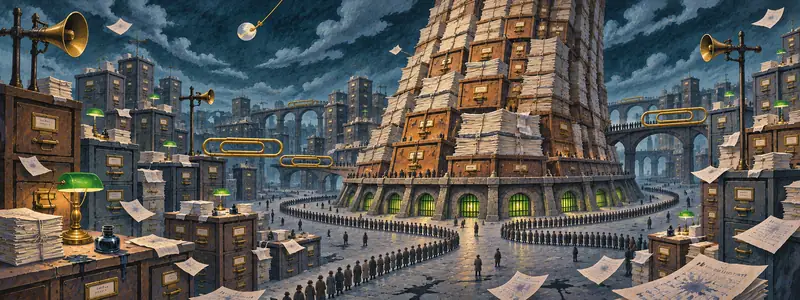 24 · Tamponville, le Cadastre et le Palais ×33 | provisoireTamponville, la Capitale. Au dernier étage du Palais de la Présidence, qui est une aile du Cadastre qu'on a oublié de rendre, il y a une salle ronde, une fenêtre, et un coussin de velours. Sur le coussin, il y a toi.…Tamponville, la Capitale. Au dernier étage du Palais de la Présidence, qui est une aile du Cadastre qu'on a oublié de rendre, il y a une salle ronde, une fenêtre, et un coussin de velours.
Sur le coussin, il y a toi.
Tu es le Président de la Terre. Tu es un galet gris clair, lisse d'un côté, un peu rugueux de l'autre. On t'a élu il y a huit cents ans parce que tu n'avais jamais rien dit de faux. Tu n'as jamais rien dit du tout. C'est une qualité qu'on ne trouve plus.
Tu as un nom. Tu le connais. Tu es le seul. Personne ne te l'a jamais demandé, et tu n'as jamais eu l'occasion de le dire. Alors on t'appelle Monsieur le Président.
Il est six heures du matin. La porte s'ouvre. C'est l'heure du chiffon. |
gpa_01b
La fenêtre | 24 · Tamponville, le Cadastre et le Palais ×33 | provisoireAvant le chiffon, il y a toujours une minute. La minute de la fenêtre. Le soleil se lève sur Tamponville, et tu le regardes se lever, parce qu'on t'a posé face à la vitre il y a huit cents ans et que personne n'a jamais pensé à te tourner. Des toits de papier …Avant le chiffon, il y a toujours une minute. La minute de la fenêtre. Le soleil se lève sur Tamponville, et tu le regardes se lever, parce qu'on t'a posé face à la vitre il y a huit cents ans et que personne n'a jamais pensé à te tourner.
Des toits de papier gris, des cheminées qui fument de l'encre, des pigeons qui portent des formulaires. La ville de tous les tampons. Elle se réveille, guichet après guichet.
Tu penses : huit cents ans de levers de soleil, et pas un pareil. On dit que les cailloux s'ennuient. C'est que personne ne leur a jamais demandé. |
gpa_02
Le chiffon | 24 · Tamponville, le Cadastre et le Palais ×33 | provisoireAnselme est ton valet de pied. C'est un vieil Horloger de laiton, à ressort, qui fait tic quand il marche et tac quand il s'arrête. Il te sert depuis soixante ans. Tous les matins, il te soulève, il te frotte avec un chiffon de laine, et il te repose sur le co…Anselme est ton valet de pied. C'est un vieil Horloger de laiton, à ressort, qui fait tic quand il marche et tac quand il s'arrête. Il te sert depuis soixante ans. Tous les matins, il te soulève, il te frotte avec un chiffon de laine, et il te repose sur le coussin, le côté lisse vers la fenêtre.
Il est le seul, dans tout le Palais, qui te parle à toi, et pas à ta place.
« Bonjour, Monsieur le Président. Bien dormi ? Moi non plus. » Il frotte. « Il se passe des choses bizarres, dehors. La mer a oublié de monter, hier soir, à Grève-Molle. Et la Lune... vous avez vu la Lune ? » |
gpa_02b
Le café d'Anselme | 24 · Tamponville, le Cadastre et le Palais ×33 | provisoireAprès le chiffon, Anselme s'assoit sur le tabouret à côté de ton coussin. Il boit son café, une burette d'huile fine, à petites gorgées. C'est le seul moment de la journée où il s'assoit. « Ma femme était une pendule de cheminée, Monsieur le Président. Elle so…Après le chiffon, Anselme s'assoit sur le tabouret à côté de ton coussin. Il boit son café, une burette d'huile fine, à petites gorgées. C'est le seul moment de la journée où il s'assoit.
« Ma femme était une pendule de cheminée, Monsieur le Président. Elle sonnait les demies. Moi, les heures. On se complétait. » Il boit. « Elle s'est arrêtée il y a vingt ans. Je la remonte encore, le dimanche. Elle ne repart pas. Je la remonte quand même. »
Il te regarde. « Vous aussi, vous avez quelqu'un qu'on remonte, quelque part ? » |
gpa_03
La Gazette du Cadastre | 24 · Tamponville, le Cadastre et le Palais ×33 | provisoireAnselme s'assoit à côté de ton coussin, sort ses lunettes et déplie La Gazette du Cadastre. Il te la lit tous les matins, à voix haute, de la première à la dernière ligne. C'est votre moment à tous les deux. « Page un : les marées sont en retard sur tout le li…Anselme s'assoit à côté de ton coussin, sort ses lunettes et déplie La Gazette du Cadastre. Il te la lit tous les matins, à voix haute, de la première à la dernière ligne. C'est votre moment à tous les deux.
« Page un : les marées sont en retard sur tout le littoral. Le Bureau des Marées présente ses excuses. Page deux : un Gravitaire signale que l'Axe de la Terre "penche un peu". Page trois : les petites annonces. "Échange lampadaire céleste contre rien. Urgent." » Il fronce les sourcils. « Drôle d'annonce. »
Tu repenses à la chose dorée plantée dans la Lune. Tu ne sais pas ce que c'est. Tu sais que ça n'était pas là hier. |
gpa_04
Neuf heures | 24 · Tamponville, le Cadastre et le Palais ×33 | défautNeuf heures. La porte s'ouvre en grand. Un monsieur rond entre, en sueur, en redingote, avec un carnet, une sacoche et une voix déjà lancée avant lui. C'est Maître Gontran Verbiage. Personne ne l'a jamais nommé interprète. Il s'est assis à côté de ton coussin …Neuf heures. La porte s'ouvre en grand. Un monsieur rond entre, en sueur, en redingote, avec un carnet, une sacoche et une voix déjà lancée avant lui.
C'est Maître Gontran Verbiage. Personne ne l'a jamais nommé interprète. Il s'est assis à côté de ton coussin il y a quarante ans, il a commencé à traduire ton silence, et personne n'a osé lui demander de quoi. Il parle à ta place. Il ne t'a jamais entendu. Il ne sait pas qu'il y a quelque chose à entendre.
« Monsieur le Président ! Grosse journée ! » Il te prend, te glisse dans sa poche gauche, et récite comme chaque matin : « Article premier de la Constitution : la Terre s'étend partout où repose son Président. Donc vous venez avec moi. Partout. »
Anselme baisse les yeux et sort, tic, tac. |
gpa_04b
Le courrier du Président | 24 · Tamponville, le Cadastre et le Palais ×33 | défautAvant les audiences, le courrier. Une secrétaire Horlogère, Mademoiselle Ressort, ouvre les lettres adressées au Président et les lit à voix haute, pendant que Gontran choisit les réponses. Il y en a trois sortes : « Le Président vous remercie », « Le Présiden…Avant les audiences, le courrier. Une secrétaire Horlogère, Mademoiselle Ressort, ouvre les lettres adressées au Président et les lit à voix haute, pendant que Gontran choisit les réponses. Il y en a trois sortes : « Le Président vous remercie », « Le Président prend note », et « Le Président est serein ».
Ce matin, il y a une lettre d'enfant, au crayon, avec des fautes. « Monsieur le Président. Comment vous vous appelez ? Moi c'est Nénuphar. J'ai six ans. Est-ce que vous avez peur de la Lune qui bouge ? Moi oui. »
Mademoiselle Ressort se tait. Elle regarde Gontran. Gontran cherche dans ses trois réponses. Aucune ne va. |
gpa_05
Les audiences | 24 · Tamponville, le Cadastre et le Palais ×33 | défautLa Salle des Audiences. Une longue file de citoyens attend depuis l'aube pour voir le Président. Gontran te pose sur un petit coussin, sur une table, entre un verre d'eau et une sonnette. La première à s'avancer est une vieille Marégrave, faite d'eau de mer, q…La Salle des Audiences. Une longue file de citoyens attend depuis l'aube pour voir le Président. Gontran te pose sur un petit coussin, sur une table, entre un verre d'eau et une sonnette.
La première à s'avancer est une vieille Marégrave, faite d'eau de mer, qui tient son bonnet dans ses mains. « Monsieur le Président. Je suis pêcheuse à Grève-Molle. La mer n'est pas montée, hier soir. Ni ce matin. Mes filets sont dans le sable. Qu'est-ce qu'on fait ? »
Gontran se penche vers toi, comme pour écouter. Il n'écoute pas. |
gpa_05b
Entre deux audiences | 24 · Tamponville, le Cadastre et le Palais ×33 | défautEntre deux audiences, Gontran boit ton verre d'eau, s'éponge le front, et vérifie sa coiffure dans le reflet de la sonnette. L'huissier de salle, un vieux Gravitaire en livrée, fait entrer le suivant, puis s'arrête. Il se penche vers toi, pendant que Gontran n…Entre deux audiences, Gontran boit ton verre d'eau, s'éponge le front, et vérifie sa coiffure dans le reflet de la sonnette. L'huissier de salle, un vieux Gravitaire en livrée, fait entrer le suivant, puis s'arrête.
Il se penche vers toi, pendant que Gontran ne regarde pas. « Monsieur le Président. Quarante ans que je fais entrer les gens. Vous savez ce qu'ils me disent tous, en sortant ? "Il m'a écouté." Personne d'autre ne les écoute, ici. » Il se redresse. « Je voulais que vous le sachiez. » |
gpa_06
La deuxième audience | 24 · Tamponville, le Cadastre et le Palais ×33 | défautEnsuite s'avance une toute petite Gravitaire, une enfant de granit à peine plus haute que la table, qui tient une boîte à chaussures. Elle l'ouvre devant toi. Dedans, des cailloux. Des dizaines. Bien rangés. « C'est ma collection, Monsieur le Président. Je vou…Ensuite s'avance une toute petite Gravitaire, une enfant de granit à peine plus haute que la table, qui tient une boîte à chaussures. Elle l'ouvre devant toi. Dedans, des cailloux. Des dizaines. Bien rangés.
« C'est ma collection, Monsieur le Président. Je voulais vous demander... est-ce que vous avez une famille ? Parce que celui-là, il vous ressemble. » Elle te montre un petit galet gris avec une tache blanche.
Gontran sourit, attendri, et prépare déjà sa traduction. |
gpa_06b
La petite reste | 24 · Tamponville, le Cadastre et le Palais ×33 | défautL'audience est finie, mais la petite Gravitaire ne s'en va pas. Elle s'assoit par terre, au pied de la table, avec sa boîte à chaussures sur les genoux, et elle te parle, à toi, tout bas, pendant que Gontran signe des autographes. « Moi, je les écoute, mes cai…L'audience est finie, mais la petite Gravitaire ne s'en va pas. Elle s'assoit par terre, au pied de la table, avec sa boîte à chaussures sur les genoux, et elle te parle, à toi, tout bas, pendant que Gontran signe des autographes.
« Moi, je les écoute, mes cailloux. Celui-là, il est triste. Celui-là, il a froid. Celui-là, il ne dit rien, mais c'est parce qu'il réfléchit. » Elle te regarde. « Vous, vous réfléchissez tout le temps. Ça se voit à votre côté rugueux. » |
gpa_07
La troisième audience | 24 · Tamponville, le Cadastre et le Palais ×33 | défautLe dernier à s'avancer est un vieux papillon gris, un Noctuelle, qui tient une fleur fanée. « Monsieur le Président. Je m'appelle Anatole. Je suis jardinier de nuit, à la Serre, au bord de la Forêt. Mes belles-de-nuit ne s'ouvrent plus. Elles s'ouvrent quand l…Le dernier à s'avancer est un vieux papillon gris, un Noctuelle, qui tient une fleur fanée. « Monsieur le Président. Je m'appelle Anatole. Je suis jardinier de nuit, à la Serre, au bord de la Forêt. Mes belles-de-nuit ne s'ouvrent plus. Elles s'ouvrent quand la Lune passe. Elle passe de travers, ces jours-ci. » Il pose la fleur sur la table, à côté de toi. « Je voulais juste que vous le sachiez. » |
gpa_07b
Le déjeuner présidentiel | 24 · Tamponville, le Cadastre et le Palais ×33 | défautDix heures et demie : au Palais, on sert le Président avant tout le monde, et avant l'heure. On t'emporte à la salle à manger : une table de quarante couverts, et une seule assiette, devant ton coussin. Madame Saupiquet, la cuisinière, une Horlogère ronde qui …Dix heures et demie : au Palais, on sert le Président avant tout le monde, et avant l'heure. On t'emporte à la salle à manger : une table de quarante couverts, et une seule assiette, devant ton coussin. Madame Saupiquet, la cuisinière, une Horlogère ronde qui fait tic-tac en remuant ses casseroles, pose devant toi une soupe à l'oseille. Elle la pose tous les jours, depuis quarante ans.
Tu ne manges pas. Tu n'as jamais mangé. Gontran mange à ta place. Il dit chaque fois : « Le Président se régale. »
Madame Saupiquet le regarde manger, les mains sur le tablier. Elle ne l'a jamais cru. Elle continue de cuisiner pour toi quand même. « On ne sait jamais », dit-elle à ses casseroles. « Un jour, il aura faim. » |
gpa_08
Les signatures | 24 · Tamponville, le Cadastre et le Palais ×33 | défautOnze heures. Le Bureau des Signatures. Une pile de papiers haute comme Gontran attend sur une table. Gontran sort de sa sacoche le tampon présidentiel : un tampon de buis, gravé à ton image, un petit galet dans un cercle. « Signature par délégation ! » annonce…Onze heures. Le Bureau des Signatures. Une pile de papiers haute comme Gontran attend sur une table. Gontran sort de sa sacoche le tampon présidentiel : un tampon de buis, gravé à ton image, un petit galet dans un cercle.
« Signature par délégation ! » annonce-t-il, et il commence à tamponner. Tamp. Tamp. Tamp. Il ne lit pas. Il n'a jamais lu.
« Décret sur les nuages en surplus. Tamp. Arrêté sur la couleur des boîtes aux lettres. Tamp. Ah, celui-ci est revenu du guichet zéro, de la semaine dernière... Renouvellement du lampadaire céleste numéro un. Tamp. »
Tu penses à l'annonce sous ton coussin. « Échange lampadaire céleste contre rien. » |
gpa_08b
Le Cantonnier des Lampadaires | 24 · Tamponville, le Cadastre et le Palais ×33 | défautEn sortant du Bureau des Signatures, on croise dans l'escalier un vieux Cantonnier, un Gravitaire voûté en uniforme bleu, avec une perche à allumer les lampadaires sur l'épaule. Il allume les lampadaires de Tamponville depuis trois cents ans. Il connaît chacun…En sortant du Bureau des Signatures, on croise dans l'escalier un vieux Cantonnier, un Gravitaire voûté en uniforme bleu, avec une perche à allumer les lampadaires sur l'épaule. Il allume les lampadaires de Tamponville depuis trois cents ans. Il connaît chacun par son numéro.
Il a entendu le mot, par la porte. « Lampadaire céleste numéro un ? » Il se gratte le casque. « Il n'y a pas de lampadaire céleste, Maître Verbiage. Les miens s'arrêtent au numéro quatre mille douze, devant la gare. Au-dessus, c'est la Lune. Ça ne se renouvelle pas, la Lune. Ça ne s'éteint pas non plus. Enfin. Ça ne s'éteignait pas. »
Il sort de sa poche la Gazette du matin, pliée à la page des petites annonces. « Échange lampadaire céleste contre rien. » Il la relit deux fois. Il pâlit, ce qui chez un Gravitaire prend une bonne minute. |
gpa_09
Le télégramme | 24 · Tamponville, le Cadastre et le Palais ×33 | défautMidi. Une grande Lichenaute grise traverse le Palais en courant, ce qui chez un lichen veut dire un mètre à la minute. Elle tient un télégramme. Derrière elle, toute une file de fonctionnaires inquiets. Gontran l'ouvre, le lit, pâlit, le relit, et le pose sur …Midi. Une grande Lichenaute grise traverse le Palais en courant, ce qui chez un lichen veut dire un mètre à la minute. Elle tient un télégramme. Derrière elle, toute une file de fonctionnaires inquiets.
Gontran l'ouvre, le lit, pâlit, le relit, et le pose sur toi, comme si tu pouvais le lire.
« DE : COMPAGNIE FONCIÈRE D'ALDÉBARAN. À : CHEF DE L'ÉTAT TERRESTRE. OBJET : LIVRAISON DE LA LUNE, ACQUISE LÉGALEMENT. LE CROCHET EST POSÉ. DÉPART DÉFINITIF DANS QUELQUES JOURS. SIGNÉ : HUISSIER KRÂMM, POUR MONSIEUR GÉDÉON PLATINE. »
Le lampadaire céleste numéro un. La Lune. Tu as été tamponné dessus, par délégation, sans le savoir.
La chose dorée plantée dans la Lune, ce matin. C'était un crochet. |
gpa_09b
Le couloir | 24 · Tamponville, le Cadastre et le Palais ×33 | défautAprès le télégramme, tout le Palais court. Des fonctionnaires dans les couloirs, des formulaires qui volent, des tampons qui tombent. Un vieux chef de bureau pleure dans une corbeille à papier. Quelqu'un crie qu'il faut un formulaire pour la Lune. Quelqu'un d'…Après le télégramme, tout le Palais court. Des fonctionnaires dans les couloirs, des formulaires qui volent, des tampons qui tombent. Un vieux chef de bureau pleure dans une corbeille à papier. Quelqu'un crie qu'il faut un formulaire pour la Lune. Quelqu'un d'autre crie qu'il n'en existe pas.
Gontran te porte au milieu de la panique, serré contre son gilet. Il ne parle pas. Pour une fois, il n'a pas de traduction prête.
Au bout du couloir, Anselme passe, avec son chiffon. Il te voit. Il te fait un petit signe, tic, comme tous les matins. Au milieu de tout, c'est la seule chose qui n'a pas changé. |
gpa_10
La conférence de presse | 24 · Tamponville, le Cadastre et le Palais ×33 | défautLe grand escalier du Cadastre. Des journalistes de toutes les espèces : une taupe myope avec un carnet, trois pies, un Gravitaire avec un appareil photo à manivelle. Gontran te brandit au-dessus de sa tête. « Le Président va parler ! »…Le grand escalier du Cadastre. Des journalistes de toutes les espèces : une taupe myope avec un carnet, trois pies, un Gravitaire avec un appareil photo à manivelle. Gontran te brandit au-dessus de sa tête.
« Le Président va parler ! »
Silence. Tout le monde attend. Les flashs crépitent sur ta face lisse. |
gpa_10b
Après les flashs | 24 · Tamponville, le Cadastre et le Palais ×33 | défautLes journalistes repartent en courant, pour écrire. Le grand escalier se vide. Il reste des confettis de magnésium sur les marches et un photographe Gravitaire qui range sa manivelle. Il s'approche de toi, sur le coussin de Gontran. Il te photographie encore u…Les journalistes repartent en courant, pour écrire. Le grand escalier se vide. Il reste des confettis de magnésium sur les marches et un photographe Gravitaire qui range sa manivelle.
Il s'approche de toi, sur le coussin de Gontran. Il te photographie encore une fois, de très près, sans flash. « Pour moi », dit-il. « Pas pour le journal. Je photographie les gens qui ne disent rien. Ce sont les seuls qui restent pareils sur les photos. » |
gpa_11
Madame Épine | 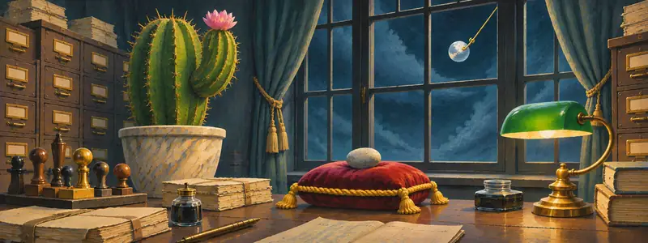 26 · Bureau de Madame Épine ×4 | On te monte au dernier étage du Cadastre, dans le bureau de la Sous-Directrice. Madame Épine est un cactus de deux mètres, dans un pot de marbre. Elle ne sort jamais. Elle t'a toujours regardé comme on regarde un collègue. Sur son bureau, une lettre écrite en …On te monte au dernier étage du Cadastre, dans le bureau de la Sous-Directrice. Madame Épine est un cactus de deux mètres, dans un pot de marbre. Elle ne sort jamais. Elle t'a toujours regardé comme on regarde un collègue.
Sur son bureau, une lettre écrite en lumière, sur un papier si fin qu'il est presque de l'air.
« Monsieur le Président. » Elle te salue, ce qui chez un cactus se fait des yeux. « Vous tombez bien. La Lune nous a écrit. »
Elle lit la lettre à voix haute : « Je ne souhaite pas partir. Personne ne m'a demandé. Je tourne autour de vous depuis toujours. Je ne demande rien d'autre que de rester. »
Tu deviens un peu plus blanc, sur un côté. Madame Épine le remarque. Elle ne dit rien. Elle range la lettre dans un dossier marqué « URGENT », puis dans un autre marqué « TRÈS URGENT ». |
gpa_12
L'article douze | 26 · Bureau de Madame Épine ×4 | « Je connais un moyen d'effrayer ceux d'Aldébaran », dit Madame Épine. « Ils ont peur de ce qu'ils ne comprennent pas. Quand un de leurs huissiers vient ici, je dis : "Sous réserve de l'article douze, alinéa trois." Personne ne sait ce que dit l'article douze.…« Je connais un moyen d'effrayer ceux d'Aldébaran », dit Madame Épine. « Ils ont peur de ce qu'ils ne comprennent pas. Quand un de leurs huissiers vient ici, je dis : "Sous réserve de l'article douze, alinéa trois." Personne ne sait ce que dit l'article douze. Moi non plus. Ils repartent toujours. »
Gontran répète la phrase, ravi, trois fois, en roulant les r. Il ne l'oubliera plus.
Gontran, occupé à relire la lettre de la Lune, n'entend que la fin : « ...ils repartent toujours. » Il hoche la tête, comme s'il avait tout retenu.
Puis Madame Épine ouvre un tiroir. Dedans, sur un mouchoir, un tout petit galet gris clair, avec une mèche blanche.
Ton neveu. Il est arrivé aux archives il y a trente ans, dans un dossier mal classé, et Madame Épine l'a gardé depuis. Il ne dit rien non plus. Mais avec moins d'autorité.
Tu y as pensé toute la matinée. Il est là. Il était là depuis trente ans, trois étages au-dessus de toi.
« Il n'a jamais rien vu », dit Madame Épine. « Ni la mer, ni la forêt, ni la Lune de près. » |
gpa_13
Le guichet un | 24 · Tamponville, le Cadastre et le Palais ×33 | défautOn redescend. Au rez-de-chaussée du Cadastre, la file d'attente fait déjà trois fois le tour du bâtiment. Tout le monde vient contester la vente de la Lune. Tout le monde a un ticket. Le distributeur commence à 1. Il a toujours commencé à 1. Derrière le guiche…On redescend. Au rez-de-chaussée du Cadastre, la file d'attente fait déjà trois fois le tour du bâtiment. Tout le monde vient contester la vente de la Lune. Tout le monde a un ticket. Le distributeur commence à 1. Il a toujours commencé à 1.
Derrière le guichet un, une vieille Lichenaute, Madame Pruine, lève un œil. Ça prend une minute. Elle pousse sur le bois du guichet depuis trois cents ans.
Elle te regarde longtemps. « Celui-là... il pense. » Elle parle lentement, comme tous les Lichenautes. « Moi, j'entends... ce que pense le bois... parce que je pousse dessus. Le bois ne pense pas... grand-chose. Lui, il pense... beaucoup. »
« Il faudrait... un jeune... qui accepte de pousser... sur lui. Il y en avait un... sur les marches du Cadastre. Orange. Têtu. Il est parti... ce matin... au Carrefour des Espèces. Par la Toile. Comme tous les jeunes. »
Sous le distributeur, coincé dans la fente, un ticket que personne n'a vu. Il porte un zéro. |
gpa_14
Le tampon « VU » | 24 · Tamponville, le Cadastre et le Palais ×33 | défautMadame Pruine pose la main sur son tampon, le plus ancien du Cadastre : un tampon de bois et de laiton, qui marque « VU ». « Ce qu'il marque... a été vu. Officiellement. On ne peut plus... l'ignorer. » Elle te regarde encore. « Le Président... devrait l'avoir.…Madame Pruine pose la main sur son tampon, le plus ancien du Cadastre : un tampon de bois et de laiton, qui marque « VU ». « Ce qu'il marque... a été vu. Officiellement. On ne peut plus... l'ignorer. »
Elle te regarde encore. « Le Président... devrait l'avoir. Il voit tout... depuis huit cents ans... et personne ne le sait. » |
gpa_14b
L'ascenseur du Cadastre | 24 · Tamponville, le Cadastre et le Palais ×33 | Pour descendre aux archives, il faut prendre l'ascenseur du Cadastre : une cage de fer forgé, et dedans, sur un tabouret, une liftière Gravitaire, Madame Basalte, qui monte et descend depuis deux cents ans. Elle connaît les cinquante étages par cœur, du sous-s…Pour descendre aux archives, il faut prendre l'ascenseur du Cadastre : une cage de fer forgé, et dedans, sur un tabouret, une liftière Gravitaire, Madame Basalte, qui monte et descend depuis deux cents ans. Elle connaît les cinquante étages par cœur, du sous-sol moins onze au toit. Elle n'a jamais dépassé le toit.
« Archives ? Sous-sol moins onze. » Elle tire la manette. Pendant la descente, elle regarde vers le haut, par la grille, comme toujours. « Vous savez, Monsieur le Président, j'ai toujours voulu monter plus haut que le toit. Jusqu'à la Lune. Une fois. Pour voir le dernier étage. » Elle rit. « Il paraît qu'on l'a vendue. Je ne verrai jamais le dernier étage. » |
gpa_15
Les archives | 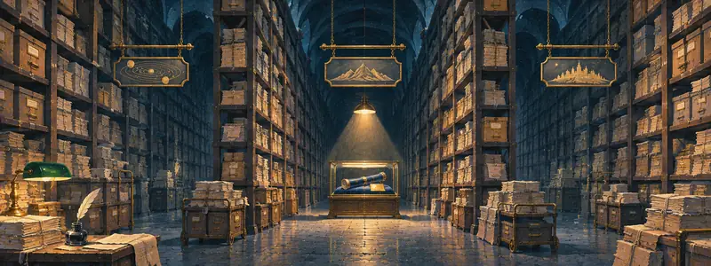 25 · Les archives, sous-sol moins onze ×3 | On te descend aux archives, sous-sol moins onze, pour voir l'acte de vente. Des kilomètres d'étagères. Entre deux rayons, une silhouette dorée, élégante, avec deux tampons à la place des mains et un chignon en ressort : Pénélope Tampon, l'assistante de Platine…On te descend aux archives, sous-sol moins onze, pour voir l'acte de vente. Des kilomètres d'étagères. Entre deux rayons, une silhouette dorée, élégante, avec deux tampons à la place des mains et un chignon en ressort : Pénélope Tampon, l'assistante de Platine. Elle tient l'acte de vente. Elle le repose. Elle le reprend.
Sur l'acte, en bas, la signature du greffier qui l'a tamponné. Une signature de lichen : elle pousse en faisant grandir le nom de son auteur, et elle n'est pas finie. « Basile Gru... » Il manque quelques jours.
Et à côté, un petit galet dans un cercle. Ton tampon. Par délégation.
Tu le savais déjà. Le voir, c'est autre chose.
Pénélope sursaute en vous voyant. « Oh ! Le... le Président de la Terre ? Je... je viens chercher l'original. Pour Monsieur Platine. Il dit merci. Il m'appelle "ma chère". » |
gpa_15b
L'escalier des archives | 25 · Les archives, sous-sol moins onze ×3 | Onze étages à remonter. Madame Basalte est repartie vers le toit, et elle ne redescend qu'une fois par jour. Gontran monte les marches une par une, en soufflant, toi dans sa poche. Au cinquième, il s'arrête pour reprendre son souffle. Il te sort de sa poche et…Onze étages à remonter. Madame Basalte est repartie vers le toit, et elle ne redescend qu'une fois par jour. Gontran monte les marches une par une, en soufflant, toi dans sa poche.
Au cinquième, il s'arrête pour reprendre son souffle. Il te sort de sa poche et te regarde, à la lumière d'une meurtrière. « Vous savez, Monsieur le Président, ce tampon. Le vôtre. Sur l'acte. » Il hésite. « C'est moi qui l'ai mis. Par délégation. Je tamponne tout, je ne lis jamais. C'est plus simple. » Il te remet dans sa poche. « Je ne pensais pas qu'on vendrait la Lune avec. » |
gpa_16
Le mur du Cadastre | 24 · Tamponville, le Cadastre et le Palais ×33 | Vous remontez à la surface. Sur le mur du Cadastre, quelqu'un a écrit à la craie, en lettres maladroites, très bas, comme un enfant : « Papa, ne déménage pas la Lune. » Sur les marches du Cadastre, au soleil, la troisième marche a une petite tache claire, plus…Vous remontez à la surface. Sur le mur du Cadastre, quelqu'un a écrit à la craie, en lettres maladroites, très bas, comme un enfant : « Papa, ne déménage pas la Lune. »
Sur les marches du Cadastre, au soleil, la troisième marche a une petite tache claire, plus propre que le reste, ronde, de la taille d'une pièce. Quelque chose a poussé là pendant longtemps, et est parti ce matin. |
gpa_16b
Les pigeons du Cadastre | 24 · Tamponville, le Cadastre et le Palais ×33 | Sur le toit du Cadastre, au retour, à la tombée de la nuit, Gontran s'arrête au pigeonnier pour envoyer des communiqués. Des centaines de pigeons-coursiers attendent, en rang, chacun avec un petit étui à la patte. Ils portent les convocations, les arrêtés, les…Sur le toit du Cadastre, au retour, à la tombée de la nuit, Gontran s'arrête au pigeonnier pour envoyer des communiqués. Des centaines de pigeons-coursiers attendent, en rang, chacun avec un petit étui à la patte. Ils portent les convocations, les arrêtés, les mauvaises nouvelles. Ils n'ont jamais porté de bonnes nouvelles : il n'y en a pas, dans l'administration.
Un vieux pigeon gris, la plume mitée, te regarde de son œil rond. Il a l'air de te reconnaître. Il a porté ton portrait officiel, il y a soixante ans, dans toutes les mairies de la Terre.
« Roucou », dit-il. Ça veut dire : « Vous voulez envoyer quelque chose ? » |
gpa_17
Le soir au Palais | 24 · Tamponville, le Cadastre et le Palais ×33 | provisoireLe soir, le Palais se vide. Gontran te repose sur ton coussin, devant la fenêtre, pour la première fois depuis longtemps. Anselme revient, tic, tac, avec son chiffon et ses lunettes. Il te frotte doucement, comme le matin. Il a appris la nouvelle, comme tout l…Le soir, le Palais se vide. Gontran te repose sur ton coussin, devant la fenêtre, pour la première fois depuis longtemps. Anselme revient, tic, tac, avec son chiffon et ses lunettes. Il te frotte doucement, comme le matin. Il a appris la nouvelle, comme tout le monde.
« La Lune », dit-il. « Ma femme dit que si elle part, les horloges vont s'arrêter. Nous sommes faits de ressorts, nous autres. La Lune, ça nous remonte, un peu, chaque nuit. »
Il te tourne vers la fenêtre. La Lune est là, avec son crochet d'or. Elle a l'air d'une lanterne qu'on décroche après la fête.
Gontran passe la tête par la porte. « Demain, Carrefour des Espèces ! Le Conseil se réunit. Toutes les espèces. Il faut que le Président y soit. Article premier ! » |
gpa_17b
La nuit au Palais | 24 · Tamponville, le Cadastre et le Palais ×33 | provisoireLa nuit. Anselme est parti. Gontran dort sur une banquette du couloir, en parlant. Il traduit tes rêves : « Le Président rêve de banquets. » Tu ne dors pas. Les galets ne dorment pas. Ils attendent le matin, et le matin vient, et ils l'attendent encore. Par la…La nuit. Anselme est parti. Gontran dort sur une banquette du couloir, en parlant. Il traduit tes rêves : « Le Président rêve de banquets. » Tu ne dors pas. Les galets ne dorment pas. Ils attendent le matin, et le matin vient, et ils l'attendent encore.
Par la fenêtre, la Lune. Le crochet d'or brille dans son flanc. Une chaîne invisible tire, et toute la nuit, la Lune descend d'un cheveu vers l'horizon, comme quelqu'un qui recule vers une porte.
Dans la salle ronde, la pendule fait tic-tac. Le veilleur de nuit passe, un vieil Horloger en pantoufles, avec une lanterne. Il s'arrête devant toi. Il ne sait pas pourquoi. Il ne s'arrête jamais.
Il pose sur la table, à côté de toi, un bol de soupe fumante, couvert d'une assiette. Il y a un mot dessus : « Pour le Président. Au cas où. S. » |
gpa_18
Le Tortillard des Espèces | 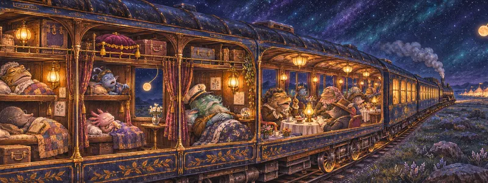 38 · Le Tortillard des Espèces ×8 | À l'aube, Gontran t'emporte à la gare. Le Tortillard des Espèces est un train à vapeur qui va au Carrefour en faisant le tour de tout ce qu'il croise. Il est bondé. Toutes les espèces vont au Conseil. Il y a des Marégraves dans des baignoires, des Gravitaires …À l'aube, Gontran t'emporte à la gare. Le Tortillard des Espèces est un train à vapeur qui va au Carrefour en faisant le tour de tout ce qu'il croise. Il est bondé. Toutes les espèces vont au Conseil. Il y a des Marégraves dans des baignoires, des Gravitaires sur des wagons plats, des Lichenautes collés aux fenêtres.
Gontran s'installe dans un compartiment de première classe. Il te pose sur la tablette, face à la vitre. Le paysage défile. Tu n'as jamais vu le paysage défiler. |
gtr_01
Dans le compartiment | 38 · Le Tortillard des Espèces ×8 | Dans le compartiment, il y a aussi une famille de Lichenautes, très lents, qui montent dans le train depuis la gare précédente et ne sont pas encore tout à fait assis. Et une dame Horlogère, qui tricote une chaussette en faisant tic. Le plus petit des Lichenau…Dans le compartiment, il y a aussi une famille de Lichenautes, très lents, qui montent dans le train depuis la gare précédente et ne sont pas encore tout à fait assis. Et une dame Horlogère, qui tricote une chaussette en faisant tic.
Le plus petit des Lichenautes te regarde. Il met une minute à dire : « Maman... le caillou... il est chaud... d'un côté. »
La mère le fait taire, très lentement. Ça prend deux minutes. Pendant ce temps, Gontran explique à la dame Horlogère qu'il a toujours su ce que pensait le Président. |
gtr_01b
Le contrôleur | 38 · Le Tortillard des Espèces ×8 | Le contrôleur passe dans le compartiment, un vieux Horloger à casquette, avec une pince à poinçonner. « Billets, s'il vous plaît. » Gontran sort une carte de première classe, puis il désigne le galet sur la tablette. « Le Président de la Terre. Il voyage sans …Le contrôleur passe dans le compartiment, un vieux Horloger à casquette, avec une pince à poinçonner. « Billets, s'il vous plaît. »
Gontran sort une carte de première classe, puis il désigne le galet sur la tablette. « Le Président de la Terre. Il voyage sans billet. Article premier. »
Le contrôleur regarde le caillou. Il ne connaît pas l'article premier. Il connaît le règlement des chemins de fer, qui ne fait pas d'exception pour les cailloux. « Tout voyageur doit avoir un billet. Même petit. » Il sort de sa poche un billet vierge, le plus petit modèle, celui des enfants. Il hésite au-dessus de la case « destination ». |
gtr_01c
La vitre | 38 · Le Tortillard des Espèces ×8 | Le Tortillard des Espèces fait le tour de tout ce qu'il croise. Gontran t'a posé sur la tablette, face à la vitre. C'est la première fois depuis huit cents ans que la fenêtre bouge. Des champs, des rivières, une forêt qui penche. Une vache qui regarde le train…Le Tortillard des Espèces fait le tour de tout ce qu'il croise. Gontran t'a posé sur la tablette, face à la vitre. C'est la première fois depuis huit cents ans que la fenêtre bouge.
Des champs, des rivières, une forêt qui penche. Une vache qui regarde le train. Une vache qui regarde la Lune. Un village entier, sur les toits, avec des longues-vues.
Tu penses : c'est donc ça, le pays dont je suis le Président. Je ne l'avais jamais vu. On ne me l'avait jamais montré. On me montrait des papiers. |
gtr_02
Le tunnel | 38 · Le Tortillard des Espèces ×8 | Le train entre dans un tunnel. Il fait noir. Dans le noir, les Lichenautes se mettent à briller très faiblement, comme ils le font quand ils ont peur. Le tunnel dure longtemps. Dans le noir, Gontran ne parle plus. C'est la première fois de la journée. Tu l'ent…Le train entre dans un tunnel. Il fait noir. Dans le noir, les Lichenautes se mettent à briller très faiblement, comme ils le font quand ils ont peur. Le tunnel dure longtemps.
Dans le noir, Gontran ne parle plus. C'est la première fois de la journée. Tu l'entends respirer. Il a peur du noir. Tu ne le savais pas. |
gtr_02b
Le wagon-restaurant | 38 · Le Tortillard des Espèces ×8 | Après le tunnel, Gontran a faim. Il t'emporte au wagon-restaurant et te pose sur la nappe, contre le pot de moutarde, face à la vitre. À la table voisine, un monsieur seul, en manteau gris boutonné jusqu'au menton, un chapeau trop enfoncé, une écharpe sur le b…Après le tunnel, Gontran a faim. Il t'emporte au wagon-restaurant et te pose sur la nappe, contre le pot de moutarde, face à la vitre.
À la table voisine, un monsieur seul, en manteau gris boutonné jusqu'au menton, un chapeau trop enfoncé, une écharpe sur le bas du visage. Il ne mange pas. Il regarde le paysage avec une attention extrême, comme quelqu'un qui fait l'inventaire de ce qu'il voit. Quand il tourne la tête, une feuille d'or brille une seconde, sous le chapeau, et disparaît.
Il te voit. Il te regarde longtemps. Il a l'air de quelqu'un qui reconnaît une belle chose, et qui en a envie, et qui a honte d'en avoir envie. |
gtr_03
L'arrivée | 38 · Le Tortillard des Espèces ×8 | Le train ralentit. Par la vitre, une plaine immense, couverte de tentes, de fumées, de drapeaux de toutes les espèces. Au milieu, une grande tribune de bois. Et au-dessus de tout, la Lune, si basse qu'on voit le crochet d'or planté dans sa poussière. Gontran s…Le train ralentit. Par la vitre, une plaine immense, couverte de tentes, de fumées, de drapeaux de toutes les espèces. Au milieu, une grande tribune de bois. Et au-dessus de tout, la Lune, si basse qu'on voit le crochet d'or planté dans sa poussière.
Gontran se recoiffe, se mouche, se redresse. Il redevient lui-même. « Monsieur le Président. Nous y sommes. Le Carrefour des Espèces. Vous n'aurez rien à dire. Comme d'habitude. »
Il ne parle pas du tunnel. Toi non plus. Vous avez ça en commun, maintenant. |
gtr_03b
Le quai | 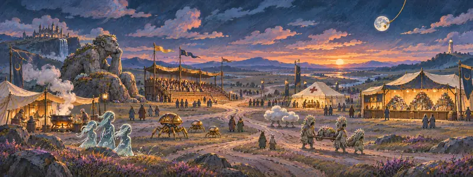 09 · Le Carrefour des Espèces ×55 | Sur le quai, une foule immense attend les trains. Des Gravitaires avec des valises de pierre, des Marégraves avec des seaux, des Horlogers qui vérifient l'heure de l'arrivée. Une fanfare de Lichenautes joue un air très lent, commencé la veille. Gontran fend la…Sur le quai, une foule immense attend les trains. Des Gravitaires avec des valises de pierre, des Marégraves avec des seaux, des Horlogers qui vérifient l'heure de l'arrivée. Une fanfare de Lichenautes joue un air très lent, commencé la veille.
Gontran fend la foule, toi dans sa poche. Personne ne le reconnaît. Personne ne sait que le Président de la Terre passe. Tu entends, de partout : « La Lune... la Lune... la Lune... »
Une vieille dame Horlogère te frôle. Elle dit à sa voisine : « Il paraît que le Président va venir. » La voisine : « Le galet ? Qu'est-ce qu'il va faire, un galet ? » |
gal_01
La Grande Panique | 09 · Le Carrefour des Espèces ×55 | défautLe Carrefour des Espèces bruisse autour de la tribune : des tentes, des cuisines, une infirmerie pour les gens qui s'évaporent, et un bureau des objets perdus où l'on a déposé, par erreur, trois montagnes. Gontran te monte au sommet de la tribune et te pose su…Le Carrefour des Espèces bruisse autour de la tribune : des tentes, des cuisines, une infirmerie pour les gens qui s'évaporent, et un bureau des objets perdus où l'on a déposé, par erreur, trois montagnes.
Gontran te monte au sommet de la tribune et te pose sur le coussin de velours qu'on t'a préparé. Toute la plaine se tait. Tout le monde attend que tu parles.
Gontran s'éclaircit la gorge. |
gal_01b
La file des doléances | 09 · Le Carrefour des Espèces ×55 | défautAprès le discours, une file se forme au pied de la tribune. Ce n'est pas pour serrer ta main, cette fois. C'est pour te parler. Toutes les espèces ont quelque chose à dire au Président, et personne ne l'a jamais fait, parce que personne ne savait que c'était p…Après le discours, une file se forme au pied de la tribune. Ce n'est pas pour serrer ta main, cette fois. C'est pour te parler. Toutes les espèces ont quelque chose à dire au Président, et personne ne l'a jamais fait, parce que personne ne savait que c'était permis. Ça ne l'est pas. Mais la Lune s'en va, alors on ose.
Une Marégrave dont la maison est à sec. Un Gravitaire qui ne dort plus, parce que la Terre penche. Un vieux Vent qui n'a plus de nuages à pousser.
Et une toute petite Lunatique, ronde et pâle comme une bougie, qui ne dit rien du tout. Elle pose devant toi un fil de lumière de Lune, enroulé sur une bobine de bois. Le dernier qu'elle a tiré. « Pour que vous vous souveniez de quoi elle est faite », dit-elle, et elle s'en va.
Au-dessus de la file, un vieux pigeon gris tourne en rond, sans étui à la patte. Les gens le regardent, et ils se taisent un peu. Ils ont compris que le Président avait peur, lui aussi. |
gal_02
Le tour du Carrefour | 09 · Le Carrefour des Espèces ×55 | défautGontran te remet dans sa poche et fait le tour du Carrefour, pour que le peuple te voie. Le peuple voit surtout la poche. On se répète de tente en tente que le Président a faim. Des gens t'apportent à manger toute la journée. La poche de Gontran ressemble à un…Gontran te remet dans sa poche et fait le tour du Carrefour, pour que le peuple te voie. Le peuple voit surtout la poche.
On se répète de tente en tente que le Président a faim. Des gens t'apportent à manger toute la journée. La poche de Gontran ressemble à un buffet.
Les Gravitaires ont retroussé leurs manches et attendent tes ordres. Ils attendront longtemps : tu n'en donnes pas, et Gontran a oublié ce qu'il avait dit.
Au bord de la plaine, tu reconnais une vieille Marégrave, son bonnet à la main. La pêcheuse de Grève-Molle. Elle montre la Lune à tous ceux qui passent. Elle a vu le crochet. Elle le montre à tout le monde. |
gal_03
Les objets perdus | 09 · Le Carrefour des Espèces ×55 | défautLe bureau des objets perdus est tenu par un escargot très vieux, qui range tout par ordre de tristesse. Les trois montagnes sont au fond, sous une bâche. Il y a aussi des clés, des parapluies, un dimanche entier, et des centaines de boutons qui ne se rappellen…Le bureau des objets perdus est tenu par un escargot très vieux, qui range tout par ordre de tristesse. Les trois montagnes sont au fond, sous une bâche. Il y a aussi des clés, des parapluies, un dimanche entier, et des centaines de boutons qui ne se rappellent plus de quel manteau ils viennent.
L'escargot regarde Gontran, puis la poche, puis toi. « Le Président ? Ici ? Il a perdu quelque chose ? »
Gontran : « Le Président a perdu... euh... son temps, comme nous tous ! » L'escargot hoche la tête : c'est une réponse qu'il entend souvent. |
gal_04
La colporteuse | 09 · Le Carrefour des Espèces ×55 | défautLa colporteuse vend des cartes postales d'avant. Sur toutes, la Lune, au-dessus d'une mer calme. Au dos, toujours la même phrase : « Tout va bien ici. Il fait beau. On pense à toi. » Pas de nom, pas d'adresse. « C'est pour le Président ? » demande-t-elle. Elle…La colporteuse vend des cartes postales d'avant. Sur toutes, la Lune, au-dessus d'une mer calme. Au dos, toujours la même phrase : « Tout va bien ici. Il fait beau. On pense à toi. » Pas de nom, pas d'adresse.
« C'est pour le Président ? » demande-t-elle. Elle a l'air de savoir qu'on ne t'a jamais rien offert. |
gal_05
Le Conseil des Espèces | 09 · Le Carrefour des Espèces ×55 | défautOn sonne une cloche. Le Conseil des Espèces se réunit pour la première fois de l'histoire de la Terre. Gontran te pose au centre de la grande carte, comme toujours. Les délégués se penchent sur toi : un Gravitaire, une Marégrave, un Horloger, une Lunatique, un…On sonne une cloche. Le Conseil des Espèces se réunit pour la première fois de l'histoire de la Terre. Gontran te pose au centre de la grande carte, comme toujours. Les délégués se penchent sur toi : un Gravitaire, une Marégrave, un Horloger, une Lunatique, un Lichenaute, une Somnambule, et d'autres encore.
Le Conseil dure quatre minutes. Il décide une seule chose : envoyer quelqu'un dans les régions qui souffrent, pour trouver de l'aide et des idées. « Et le Président, qu'en pense-t-il ? »
Tu en penses beaucoup de choses. Gontran en dira d'autres.
Gontran te regarde avec une tendresse nouvelle. Il croit que tu lui fais confiance. Tu commences à comprendre qu'il ne t'a jamais entendu. |
gal_06
Après le Conseil | 09 · Le Carrefour des Espèces ×55 | défautLe Conseil se disperse. Gontran court préparer le voyage et te pose sur un banc de pierre, à côté de la tente, « deux minutes ». Ça fait vingt. Le banc est une vieille pierre. Au bout, une petite tache de lichen orange, à la traîne d'une procession de Lichenau…Le Conseil se disperse. Gontran court préparer le voyage et te pose sur un banc de pierre, à côté de la tente, « deux minutes ». Ça fait vingt.
Le banc est une vieille pierre. Au bout, une petite tache de lichen orange, à la traîne d'une procession de Lichenautes qui avance vers les tentes au rythme d'un mètre par heure. Elle s'est arrêtée. Elle frémit.
Tu penses au petit Lichenaute du train, qui avait senti ta chaleur. Les lichens sentent les choses. |
gal_dep
Le départ en tournée | 09 · Le Carrefour des Espèces ×55 | défautXanthin s'est installé sur ton flanc, côté rugueux, là où personne ne regarde. Gontran ne le voit pas. Il pense que tu as un peu rouillé. Xanthin te demande, très lentement : « Comment... vous appelez-vous ? Vraiment ? »…Xanthin s'est installé sur ton flanc, côté rugueux, là où personne ne regarde. Gontran ne le voit pas. Il pense que tu as un peu rouillé.
Xanthin te demande, très lentement : « Comment... vous appelez-vous ? Vraiment ? »
Gontran te remet dans sa poche. La tournée commence. |
gal_dep2
| 09 · Le Carrefour des Espèces ×55 | défautLa tournée commence par les Côtes. Gontran a choisi. Il choisit toujours. La tournée commence par les Profondeurs. Gontran a choisi. Il choisit toujours.…La tournée commence par les Côtes. Gontran a choisi. Il choisit toujours.
La tournée commence par les Profondeurs. Gontran a choisi. Il choisit toujours.
La tournée commence par la Forêt. Gontran a choisi. Il choisit toujours.
La tournée commence par les Hauts-Nuages. Gontran a choisi. Il choisit toujours. |
gal_route
La carriole | 09 · Le Carrefour des Espèces ×55 | défautLa carriole des Côtes sent le poisson et la corde. Le cocher est un Marégrave qui se dilue un peu à chaque cahot. La carriole des Profondeurs descend avant même d'être partie. Le cocher est un Gravitaire qui ne parle pas. Vous avez ça en commun.…La carriole des Côtes sent le poisson et la corde. Le cocher est un Marégrave qui se dilue un peu à chaque cahot.
La carriole des Profondeurs descend avant même d'être partie. Le cocher est un Gravitaire qui ne parle pas. Vous avez ça en commun.
La carriole de la Forêt penche. Tout penche, de ce côté. Le cocher, un vieil Écureuil-Postier, dit que c'est normal, que c'est la Lune.
L'ascenseur à vapeur monte en sifflant. Le liftier est un Vent de service, en livrée, qui annonce les étages : « Brouillard. Cirrus. Nuages d'orage. Nuages de beau temps, terminus. »
Xanthin, sur ton flanc, regarde le paysage avec toi. Il ne parle pas. Il pousse, un tout petit peu, vers ce que tu regardes. |
gco_01
Les Côtes Hagardes | 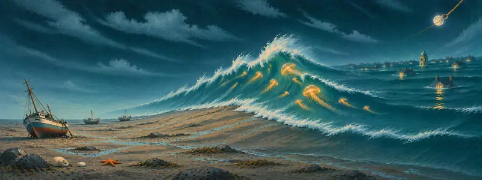 13 · Les Côtes Hagardes ×24 | défautLa mer s'est retirée à un kilomètre. Au large, une vague immense s'est arrêtée en plein élan, haute comme dix phares, et elle ne retombe pas. Des Marégraves, faits d'eau de mer, écopent leurs maisons avec leurs mains, et se remplissent en écopant. Gontran grim…La mer s'est retirée à un kilomètre. Au large, une vague immense s'est arrêtée en plein élan, haute comme dix phares, et elle ne retombe pas. Des Marégraves, faits d'eau de mer, écopent leurs maisons avec leurs mains, et se remplissent en écopant.
Gontran grimpe sur un rocher et te brandit au-dessus de sa tête. « Peuple des Côtes ! Le Président est parmi vous ! » Les Marégraves lèvent les yeux. Ils voient un caillou. Ils en ont plein.
Personne ne te brandit. On te pose sur un rocher, et les Marégraves s'approchent, un par un, pour voir ce qu'on leur a amené.
Xanthin leur dit, lentement, que tu es venu les écouter. |
gpr_01
Le Grand Puits | 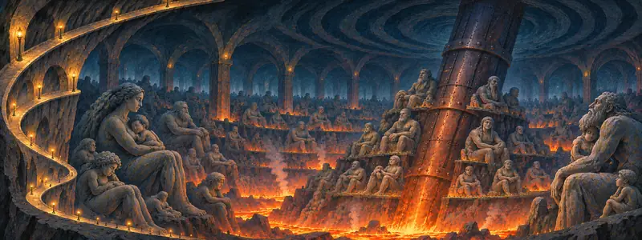 21 · Les Profondeurs et l'Axe de la Terre ×23 | défautOn descend aux Profondeurs par le Grand Puits, un trou rond qui s'enfonce sous le Carrefour. Une Gravitaire de garde, large comme une porte de grange, regarde ce qu'on lui présente. Gontran te tend vers elle, à bout de bras : « Le Président de la Terre ! » La …On descend aux Profondeurs par le Grand Puits, un trou rond qui s'enfonce sous le Carrefour. Une Gravitaire de garde, large comme une porte de grange, regarde ce qu'on lui présente.
Gontran te tend vers elle, à bout de bras : « Le Président de la Terre ! » La Gravitaire te prend, te soupèse, te retourne. « Il est bien. Il est dense. » Chez les Gravitaires, c'est le plus beau compliment.
On te pose dans sa grosse main. Elle te soupèse, te retourne. « Il est bien. Il est dense. » Chez les Gravitaires, c'est le plus beau compliment.
Elle te tend un casque, beaucoup trop grand. Tu disparais dessous. |
gfo_01
La Forêt-Réseau | 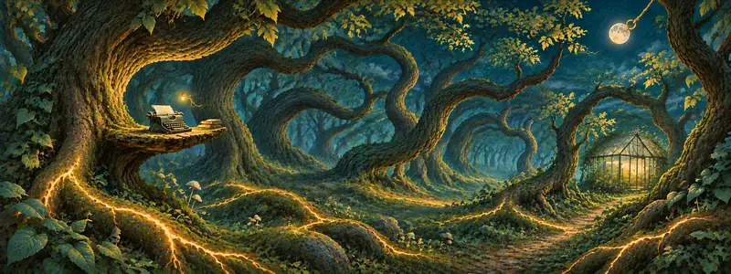 16 · La Forêt-Réseau ×9 | défautLes arbres poussent de travers. Ils cherchent quelque chose qu'ils ne trouvent plus. Sous la terre, les racines se parlent par une toile immense qui relie toutes les racines du monde. Elles chuchotent : « Où est la lumière froide ? On poussait vers elle. » Tu …Les arbres poussent de travers. Ils cherchent quelque chose qu'ils ne trouvent plus. Sous la terre, les racines se parlent par une toile immense qui relie toutes les racines du monde. Elles chuchotent : « Où est la lumière froide ? On poussait vers elle. »
Tu entends les racines. Un galet posé par terre entend tout ce qui passe sous la terre. Personne ne le savait, parce que personne ne t'avait jamais posé par terre.
Gontran, lui, te garde dans sa poche. « Le Président n'aime pas se salir. » |
gnu_01
L'ascenseur à vapeur | 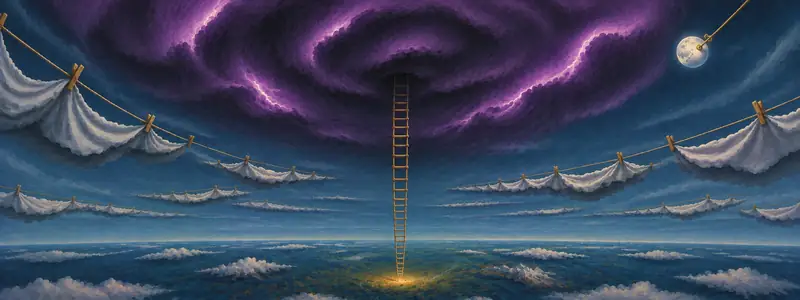 27 · Les Hauts-Nuages ×13 | défautOn monte aux Hauts-Nuages par un ascenseur à vapeur, une cabine de cuivre au bout d'un câble qui se perd dans le ciel. Le liftier est un vieux Vent de service, en casquette, qui souffle dans la chaudière pour la faire monter. « Étage ? » demande-t-il. Il n'y e…On monte aux Hauts-Nuages par un ascenseur à vapeur, une cabine de cuivre au bout d'un câble qui se perd dans le ciel. Le liftier est un vieux Vent de service, en casquette, qui souffle dans la chaudière pour la faire monter.
« Étage ? » demande-t-il. Il n'y en a qu'un.
Gontran : « Le Président a le vertige ! Montez doucement ! » Le Vent souffle plus fort, pour rendre service. |
gco_01b
La digue | 13 · Les Côtes Hagardes ×24 | défautLe village des Marégraves se tient derrière une vieille digue de planches et de galets. Elle ne retient plus la mer, puisque la mer est partie. Elle retient ce qui reste : les flaques, les puits, l'eau des maisons. Et elle fuit. Au pied de la digue, une petite…Le village des Marégraves se tient derrière une vieille digue de planches et de galets. Elle ne retient plus la mer, puisque la mer est partie. Elle retient ce qui reste : les flaques, les puits, l'eau des maisons. Et elle fuit.
Au pied de la digue, une petite Marégrave, pas plus haute qu'un seau, bouche un trou avec son doigt. Elle est faite d'eau. Son doigt fuit aussi. Elle est un peu plus petite à chaque heure.
Le trou est rond. Il a exactement ta taille. Tu le vois. Tu es peut-être le seul à le voir.
Un peu plus loin, au ras du sable, un second trou, tout petit, fuit en silence. Personne ne l'a vu. Il a la taille de ton neveu. |
gpr_01b
Les fossiles | 21 · Les Profondeurs et l'Axe de la Terre ×23 | défautLa benne descend dans le Grand Puits. Sur les parois, à la lueur de la lampe, défilent des couches de roche, de toutes les couleurs, comme les pages d'un livre fermé. Dans les pages, des fossiles : des coquillages, des fougères, des poissons, très vieux. Et, d…La benne descend dans le Grand Puits. Sur les parois, à la lueur de la lampe, défilent des couches de roche, de toutes les couleurs, comme les pages d'un livre fermé. Dans les pages, des fossiles : des coquillages, des fougères, des poissons, très vieux.
Et, dans une couche grise, à mi-hauteur, un galet. Un galet comme toi, pris dans la roche depuis des millions d'années. Il pense, très lentement, plus lentement que toi. Il pense une seule chose, depuis toujours : « La Lune est au-dessus. »
Il ne l'a jamais vue. Il le sait, c'est tout. |
gfo_01b
L'arbre qui penche | 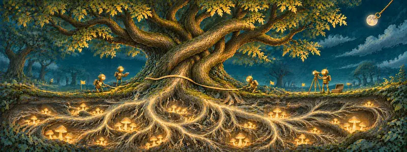 17 · Le Grand Chêne Noué et la Toile ×3 | Un chêne immense penche si fort que sa cime touche presque le sol, de l'autre côté du chemin. Il ne tombe pas. Il cherche. Ses branches se tendent toutes vers le même endroit du ciel, là où la Lune se levait depuis toujours, et où elle se lève maintenant trop …Un chêne immense penche si fort que sa cime touche presque le sol, de l'autre côté du chemin. Il ne tombe pas. Il cherche. Ses branches se tendent toutes vers le même endroit du ciel, là où la Lune se levait depuis toujours, et où elle se lève maintenant trop bas, et de travers.
À son pied, un Lichenaute très vieux, gris comme de la cendre, a mis cent ans à monter jusqu'à la première branche. Il redescend. « Il ne... trouve plus... sa direction. Il pousse... vers rien. »
Par la mousse, tu entends l'arbre. Il ne parle pas. Il a mal, comme un cou tordu. |
gnu_02
Les Hauts-Nuages | 27 · Les Hauts-Nuages ×13 | défautTout en haut, on te pose sur un nuage, et le nuage fait « pfff », comme un vieux coussin qu'on aurait trop aimé. Tu es habitué aux coussins. Celui-là est triste. Les Hauts-Nuages sont dégonflés. Partout, des nuages plats, gris, affaissés comme des draps sur un…Tout en haut, on te pose sur un nuage, et le nuage fait « pfff », comme un vieux coussin qu'on aurait trop aimé. Tu es habitué aux coussins. Celui-là est triste.
Les Hauts-Nuages sont dégonflés. Partout, des nuages plats, gris, affaissés comme des draps sur une corde. Il ne pleut plus sur la Terre depuis que la Lune est à vendre. Des petits nuages pleurent à sec. Ils hoquettent de la vapeur.
Une mère-nuage berce un nuageon qui n'arrive pas à faire sa première averse. |
gco_01c
Le village à marée basse | 13 · Les Côtes Hagardes ×24 | défautLes maisons des Marégraves sont faites pour être sous l'eau à moitié. À sec, elles ont l'air gênées, comme des gens surpris en chemise de nuit. Les poissons d'ornement tournent en rond dans des seaux. Les filets sèchent sur les toits et ne prennent plus que le…Les maisons des Marégraves sont faites pour être sous l'eau à moitié. À sec, elles ont l'air gênées, comme des gens surpris en chemise de nuit. Les poissons d'ornement tournent en rond dans des seaux. Les filets sèchent sur les toits et ne prennent plus que le vent.
Au milieu de la place, il y a une horloge à marée. Elle indique « marée basse » depuis trois jours. Une vieille Marégrave la remonte tous les matins, par habitude, et elle ne bouge pas.
Les gens du village te saluent en passant. On dit déjà que le Président a bouché la digue. Personne ne sait que c'était une glissade. Toi, tu le sais. |
gpr_02
L'Ascenseur des Taupes | 21 · Les Profondeurs et l'Axe de la Terre ×23 | défautAu fond du Puits, il fait chaud et sombre. Le sol vibre : un gémissement lent, continu, comme une porte qui grince depuis trois jours. L'Ascenseur des Taupes attend, une grande cage de bois tirée par des taupes en salopette, qui ne voient rien et n'ont besoin …Au fond du Puits, il fait chaud et sombre. Le sol vibre : un gémissement lent, continu, comme une porte qui grince depuis trois jours. L'Ascenseur des Taupes attend, une grande cage de bois tirée par des taupes en salopette, qui ne voient rien et n'ont besoin de rien voir.
Une petite Gravitaire, à peine cent ans, en bonnet de laine trop grand, monte dans la cage avec toi. Elle te regarde. « T'es un caillou ? »
Gontran : « C'est le Président de la Terre, mademoiselle. » La petite : « Il est petit. »
Personne ne répond à ta place. La petite attend. Puis elle dit : « Moi aussi, je dis rien, quand j'ai peur. »
« Mon papa est à l'Axe. Il est assis depuis trois jours. Il ne peut pas se lever. Si tu le vois, tu peux lui dire que je l'aime ? Il oublie, quand il est assis trop longtemps. » |
gfo_01c
Les messagers | 16 · La Forêt-Réseau ×9 | défautLe long du chemin, des champignons poussent en cercle. Ils clignotent, l'un après l'autre, comme une guirlande. Ce sont les messagers de la Forêt-Réseau : ils lisent ce qui passe dans la Toile et le répètent à la surface, pour ceux qui ne savent pas écouter la…Le long du chemin, des champignons poussent en cercle. Ils clignotent, l'un après l'autre, comme une guirlande. Ce sont les messagers de la Forêt-Réseau : ils lisent ce qui passe dans la Toile et le répètent à la surface, pour ceux qui ne savent pas écouter la terre.
Ils répètent en ce moment : « Feu au sud. Géomètres. Câble. Feu au sud. » Puis : « Une pierre qui pense est dans la forêt. Une pierre qui pense. »
Ils parlent de toi. Toute la forêt sait que tu es là. |
gnu_02b
La poste des Vents | 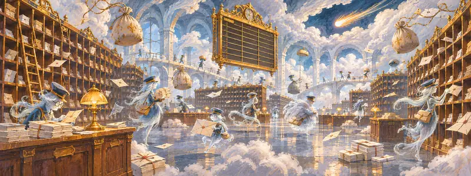 06 · Le Centre de tri des Vents ×1 | Au milieu des nuages, une baraque de planches, avec une enseigne qui grince : « Centre de tri des Vents. Courrier aérien. » À l'intérieur, des Vents de service trient des lettres en soufflant dessus. Celles qui partent vers le nord, un souffle à gauche. Vers l…Au milieu des nuages, une baraque de planches, avec une enseigne qui grince : « Centre de tri des Vents. Courrier aérien. » À l'intérieur, des Vents de service trient des lettres en soufflant dessus. Celles qui partent vers le nord, un souffle à gauche. Vers le sud, un souffle à droite.
Sur une étagère, une enveloppe bleue que personne n'ose souffler. Adresse : « À la Lune, en mains propres. » Pas d'expéditeur. Elle est là depuis des années. Aucun Vent ne monte si haut.
Le chef de tri, un Vent d'ouest en manches de lustrine, te regarde. « Vous, vous allez peut-être plus haut que nous, non ? Avec votre rang. » |
gco_02
Le Chœur des Méduses | 13 · Les Côtes Hagardes ×24 | défautAu pied de la vague immobile, des milliers de méduses lumineuses se tiennent par les filaments. Elles retiennent la vague de toutes leurs forces, et elles chantent d'une seule voix. On te pose sur une pierre au bord de l'eau. Les pierres entendent bien ce qui …Au pied de la vague immobile, des milliers de méduses lumineuses se tiennent par les filaments. Elles retiennent la vague de toutes leurs forces, et elles chantent d'une seule voix.
On te pose sur une pierre au bord de l'eau. Les pierres entendent bien ce qui chante dans l'eau : ça passe par le fond. Et toi, tu comprends les paroles. « ELLE NE VEUT PAS PARTIR. ELLE NOUS L'A DIT, À NOUS, LA MER. ELLE NE VEUT PAS PARTIR. »
Tu deviens un peu plus blanc, sur le côté tourné vers le large.
Gontran, ému, traduit la chanson pour la foule : « Elles demandent des parapluies. » Personne ne sait pourquoi on pleure.
Xanthin répète les paroles pour ceux qui ne les comprennent pas. Sur la plage, les Marégraves se taisent. |
gpr_03
Les parois | 21 · Les Profondeurs et l'Axe de la Terre ×23 | défautL'Ascenseur te dépose dans une grande caverne. Les parois sont fissurées de frais. Et les parois parlent. Tu ne t'y attendais pas. Les pierres, ici, sont tes cousines, de très loin : du granit, du basalte, du schiste. Elles pensent, comme toi, très lentement. …L'Ascenseur te dépose dans une grande caverne. Les parois sont fissurées de frais. Et les parois parlent.
Tu ne t'y attendais pas. Les pierres, ici, sont tes cousines, de très loin : du granit, du basalte, du schiste. Elles pensent, comme toi, très lentement. Elles ont peur. Elles disent : « On penche. On penche. Qui nous tient ? »
Personne d'autre ne les entend. Seulement toi, et ce qui pousse sur les pierres.
Dans une fissure, à la hauteur de tes yeux, quelque chose d'orange frémit.
Gontran, vexé, laisse la petite te porter. « Le Président voyage en salopette, explique-t-il aux taupes. C'est un geste social. » |
gfo_01d
Le ruisseau qui remonte | 16 · La Forêt-Réseau ×9 | défautSur le chemin du temple, un ruisseau coule à l'envers. Il remonte la pente, vers le sommet de la colline, vers la Lune trop basse. Les poissons nagent à reculons, très étonnés. Les cailloux du fond roulent vers le haut, un par un. Gontran, pour traverser, saut…Sur le chemin du temple, un ruisseau coule à l'envers. Il remonte la pente, vers le sommet de la colline, vers la Lune trop basse. Les poissons nagent à reculons, très étonnés. Les cailloux du fond roulent vers le haut, un par un.
Gontran, pour traverser, saute de pierre en pierre. À la troisième, il glisse. Tu tombes de sa poche, dans l'eau.
Au gué, celui qui te porte trébuche. Tu tombes dans l'eau.
Tu es au fond du ruisseau, au milieu des cailloux qui remontent. Ils t'emportent avec eux. Ils disent, tous ensemble, très lentement : « On monte. On monte. On ne sait pas pourquoi. » |
gnu_03
La station de pompage | 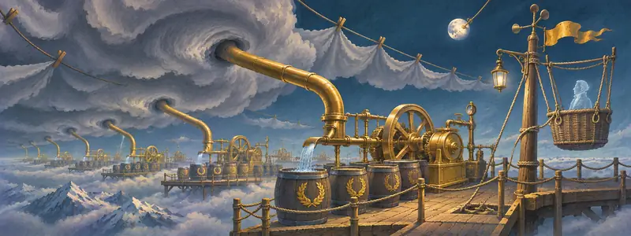 28 · La station de pompage et la nacelle ×11 | Au bord du ciel, une station de pompage ronronne. Des pompes dorées plantent leurs trompes dans les nuages et les sucent jusqu'à la dernière goutte. La pluie part dans des barils. Sur chaque baril : « COMPAGNIE FONCIÈRE D'ALDÉBARAN. Pluie fine, qualité Lune-su…Au bord du ciel, une station de pompage ronronne. Des pompes dorées plantent leurs trompes dans les nuages et les sucent jusqu'à la dernière goutte. La pluie part dans des barils. Sur chaque baril : « COMPAGNIE FONCIÈRE D'ALDÉBARAN. Pluie fine, qualité Lune-sur-Mer. Pour piscines. »
On vend la Lune, et on remplit les piscines de la Lune avec la pluie de la Terre.
Des ouvriers en combinaison dorée roulent les barils. Ils ne regardent pas les nuages. Ils regardent leurs barils. |
gco_02b
La criée | 13 · Les Côtes Hagardes ×24 | défautSur la plage, à l'endroit où la mer s'est retirée, on a monté une criée. On y vend ce que la mer a laissé en partant : une ancre, une cloche d'église, trois chaussures gauches, une baignoire, un piano, des bouteilles. Les Marégraves achètent leurs propres affa…Sur la plage, à l'endroit où la mer s'est retirée, on a monté une criée. On y vend ce que la mer a laissé en partant : une ancre, une cloche d'église, trois chaussures gauches, une baignoire, un piano, des bouteilles. Les Marégraves achètent leurs propres affaires, perdues depuis des siècles, pour pas cher.
Au premier rang, un géomètre doré de la Compagnie Foncière lève la main à chaque lot, sans regarder. Il n'achète pas les objets. Il achète le sable dessous, en parcelles. « Lune-sur-Mer, résidence. Vue sur rien. »
Le crieur annonce : « Lot quarante : une bouteille, fermée, avec un papier dedans. Mise à prix : un coquillage. » |
gpr_04
Les Grottes des Échos | 21 · Les Profondeurs et l'Axe de la Terre ×23 | défautUn couloir s'ouvre sur des grottes où chaque bruit revient dix fois. On y parle bas. Le moindre pas devient une armée. Au fond, une voix répète, toute seule : « ...seule. Seule. Seule. »…Un couloir s'ouvre sur des grottes où chaque bruit revient dix fois. On y parle bas. Le moindre pas devient une armée.
Au fond, une voix répète, toute seule : « ...seule. Seule. Seule. »
C'est une créature faite de son, née dans ces grottes. Elle ne peut que répéter les derniers mots qu'elle entend. Elle a vécu seule si longtemps qu'elle ne répétait plus que « seule ».
Gontran se racle la gorge, et sa voix part dans toute la grotte : « LE PRÉSIDENT DE LA TERRE ! » La créature répète, ravie : « ...de la Terre ! Terre ! Terre ! »
Personne ne dit rien. La créature attend un mot. Il n'en vient pas. |
gfo_02
Le Temple de la Pleine Lune | 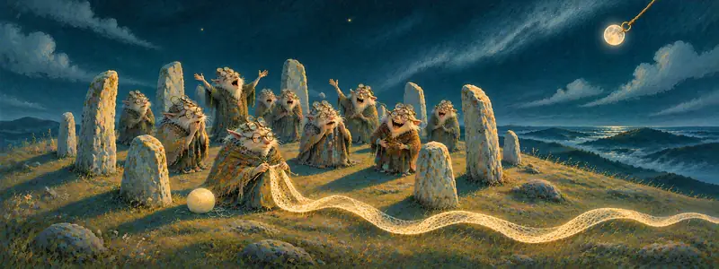 18 · Le Temple de la Pleine Lune ×11 | Un grand cercle de pierres blanches, polies, au sommet de la colline. Au centre, des centaines de Lunatiques, des créatures pâles et rondes comme des bougies, tricotent des écharpes avec des fils de lumière de Lune. Il y en a de moins en moins. Gontran te pose…Un grand cercle de pierres blanches, polies, au sommet de la colline. Au centre, des centaines de Lunatiques, des créatures pâles et rondes comme des bougies, tricotent des écharpes avec des fils de lumière de Lune. Il y en a de moins en moins.
Gontran te pose sur la plus belle pierre, pour la photo.
Sur la pierre où l'on te pose, une tache orange que tu connais. Le jeune lichen t'a suivi jusqu'ici, en roulant et par la Toile. « Encore... vous. Je suis... têtu. »
Sur la pierre où l'on te pose, une tache de lichen orange, pas plus large qu'une pièce de monnaie : un jeune Lichenaute. Une voix très lente monte de la pierre : « Oh. Une pierre... qui pense. Ça... n'arrive jamais. »
La voix ajoute : « Et celui qui vous porte... ne dit pas... ce que vous pensez. »
Xanthin regarde les pierres blanches avec respect. « Les plus vieilles... pierres de la Terre. Elles pensent... elles aussi. Mais elles... dorment. » |
gnu_04
Dame Ondée | 27 · Les Hauts-Nuages ×13 | défautLa grande nuée violette tremble. Elle retient sa respiration depuis des semaines. Elle s'appelle Dame Ondée. Elle a plu sur la première mer du monde, quand la Terre était encore tiède. Elle a plu sur tout : sur les déserts, sur les dinosaures, sur des mariages…La grande nuée violette tremble. Elle retient sa respiration depuis des semaines. Elle s'appelle Dame Ondée. Elle a plu sur la première mer du monde, quand la Terre était encore tiède. Elle a plu sur tout : sur les déserts, sur les dinosaures, sur des mariages ratés.
« Les pompes ont pris mes filles », dit-elle d'une voix de tonnerre lointain. « Alors je garde ma pluie. Toute ma pluie. Ils ne l'auront pas. Mais je gonfle. Je gonfle, et un jour je vais éclater. »
Elle te voit, tout petit, sur son bord. « Qu'est-ce que c'est ? Un grêlon ? »
« Le Président de la Terre ! » dit Gontran. Dame Ondée gronde. « La Terre a un président ? Et où était-il, quand on a pris mes filles ? » |
gco_02c
Le fond de la mer | 13 · Les Côtes Hagardes ×24 | défautDerrière la criée, là où la mer devrait être, s'étend le fond. Personne ne l'avait jamais vu au soleil. Il est plein de choses : des forêts d'algues couchées, des villes de crabes abandonnées, des épaves si vieilles qu'elles ont oublié leur nom. Des géomètres …Derrière la criée, là où la mer devrait être, s'étend le fond. Personne ne l'avait jamais vu au soleil. Il est plein de choses : des forêts d'algues couchées, des villes de crabes abandonnées, des épaves si vieilles qu'elles ont oublié leur nom. Des géomètres dorés y plantent des piquets avec des fanions : « Parcelle 412. Réservée. »
On te pose sur le fond, pour la photo. Le fond est fait de cailloux, des milliards. Ils sont tous comme toi. Ils murmurent. Ils n'ont jamais été au sec. Ils ont peur du soleil.
Dans la poche, la bouteille cogne contre toi. Il y a un papier dedans, plié en quatre, jauni. On voit une signature à travers le verre : « Perline ». |
gpr_05
Écho | 21 · Les Profondeurs et l'Axe de la Terre ×23 | défautElle s'approche. Elle n'a pas de forme : on la voit quand elle parle, comme une buée qui tremble. Elle tourne autour de toi. Une pierre qui ne fait pas de bruit, c'est la chose la plus étrange qu'elle ait jamais rencontrée. Elle s'appelle Écho. Elle ne l'a jam…Elle s'approche. Elle n'a pas de forme : on la voit quand elle parle, comme une buée qui tremble. Elle tourne autour de toi. Une pierre qui ne fait pas de bruit, c'est la chose la plus étrange qu'elle ait jamais rencontrée.
Elle s'appelle Écho. Elle ne l'a jamais dit. Quelqu'un l'a dit un jour, devant elle, et elle l'a répété. |
gfo_02b
Le peintre | 18 · Le Temple de la Pleine Lune ×11 | Au bord du cercle de pierres blanches, le peintre de passage a fini son tableau. Il le retourne vers toi. C'est un portrait de foule, de dos, et au milieu, un petit caillou gris sur une grande pierre blanche. Le caillou est très réussi. On voit qu'il pense. « …Au bord du cercle de pierres blanches, le peintre de passage a fini son tableau. Il le retourne vers toi. C'est un portrait de foule, de dos, et au milieu, un petit caillou gris sur une grande pierre blanche. Le caillou est très réussi. On voit qu'il pense.
« Je peins ce qui ne bouge pas », dit le peintre, un vieux Lunatique tout pâle, avec un béret. « Les gens bougent, alors je les peins de dos, ça va plus vite. Vous, je vous ai eu de face. C'est rare. » |
gnu_04b
Les nuageons | 27 · Les Hauts-Nuages ×13 | défautAutour de la grande nuée violette, des dizaines de petits nuages, à peine nés, qui ne savent pas encore pleuvoir. Ce sont les filles des filles de Dame Ondée : les pompes ont pris leurs mères. Elles flottent en rond, perdues, en se tenant par la vapeur. Une d'…Autour de la grande nuée violette, des dizaines de petits nuages, à peine nés, qui ne savent pas encore pleuvoir. Ce sont les filles des filles de Dame Ondée : les pompes ont pris leurs mères. Elles flottent en rond, perdues, en se tenant par la vapeur.
Une d'elles, la plus petite, vient se poser sur toi. Elle est froide et légère. Elle sent la pluie d'avant. Elle ne pèse rien. Toi, tu pèses : elle s'accroche à toi pour ne pas s'envoler vers les pompes. |
gco_03
Le Ressac Triste | 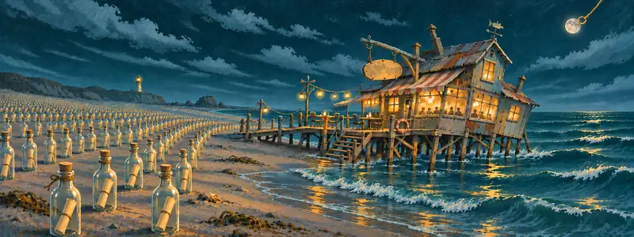 14 · Le Ressac Triste ×12 | Au bord de la plage, un bistrot penché, sur pilotis, à moitié dans le vide puisque la mer est partie. Au comptoir, un vieux pêcheur fait d'eau de mer trouble regarde son verre d'eau douce : Bartholomé Vasequeuse. Sa femme Perline est partie avec la grande maré…Au bord de la plage, un bistrot penché, sur pilotis, à moitié dans le vide puisque la mer est partie. Au comptoir, un vieux pêcheur fait d'eau de mer trouble regarde son verre d'eau douce : Bartholomé Vasequeuse. Sa femme Perline est partie avec la grande marée il y a vingt ans. Il boit de l'eau douce pour se diluer, et dilué, il devient sentimental.
On te pose sur le comptoir, entre une soucoupe et lui. Il te regarde. « C'est quoi, ça ? »
« C'est le Président de la Terre », dit Gontran. Bartholomé crache par terre, ce qui chez un Marégrave fait une petite flaque.
« Le Président de la Terre », dit Xanthin, au bout d'une minute. Bartholomé attend la fin de la phrase. Il a l'habitude d'attendre.
« Le Président de la Terre », dit quelqu'un. Bartholomé hausse les épaules. « Il est petit. » |
gpr_06
La bouteille | 21 · Les Profondeurs et l'Axe de la Terre ×23 | défautÀ la sortie des grottes, une niche dans la roche. On y a laissé, il y a longtemps, des bouteilles vides : de limonade, de vin, de sirop. Les mineurs y enfermaient des échos pour les remonter à leurs enfants, comme on rapporte un coquillage. Une bouteille est e…À la sortie des grottes, une niche dans la roche. On y a laissé, il y a longtemps, des bouteilles vides : de limonade, de vin, de sirop. Les mineurs y enfermaient des échos pour les remonter à leurs enfants, comme on rapporte un coquillage.
Une bouteille est encore là, vide. Il suffirait de la déboucher dans la grotte, de faire un bruit, et de la reboucher.
Écho regarde les bouteilles avec méfiance. Ses cousines sont là-dedans, peut-être. |
gfo_03
Tante Mélusine | 18 · Le Temple de la Pleine Lune ×11 | Au milieu des tricoteuses, une vieille dame immense, enveloppée de châles, couverte de pelotes, trois paires de lunettes sur le nez, une aiguille lumineuse plantée dans le chignon : Tante Mélusine. Elle tricote la lumière de la Lune depuis mille ans, pour les …Au milieu des tricoteuses, une vieille dame immense, enveloppée de châles, couverte de pelotes, trois paires de lunettes sur le nez, une aiguille lumineuse plantée dans le chignon : Tante Mélusine. Elle tricote la lumière de la Lune depuis mille ans, pour les gens qui ont froid. Elle pleure en tricotant, et elle crie en pleurant.
« QUI EST CE CAILLOU ? QUE VIENT-IL FAIRE DANS MON DEUIL ? » |
gnu_05
Le berceau | 27 · Les Hauts-Nuages ×13 | défautDame Ondée penche son bord vers la Terre, tout en bas. « Regarde. Les champs. Ils ont soif. J'ai assez de pluie pour eux tous. Mais si je l'ouvre, je vais tout noyer. J'ai oublié comment pleuvoir doucement. Ça fait trop longtemps. » Elle tremble. Elle a peur d…Dame Ondée penche son bord vers la Terre, tout en bas. « Regarde. Les champs. Ils ont soif. J'ai assez de pluie pour eux tous. Mais si je l'ouvre, je vais tout noyer. J'ai oublié comment pleuvoir doucement. Ça fait trop longtemps. »
Elle tremble. Elle a peur d'elle-même. |
gco_03b
Les ricochets | 14 · Le Ressac Triste ×12 | Sur ce qui reste de la plage, des enfants marégraves font des ricochets dans les flaques. Ce n'est pas facile : les flaques sont petites. Il faut viser. Un garçon fait d'eau et de sable cherche le caillou parfait. Il le trouve. C'est toi. Il te prend, te soupè…Sur ce qui reste de la plage, des enfants marégraves font des ricochets dans les flaques. Ce n'est pas facile : les flaques sont petites. Il faut viser. Un garçon fait d'eau et de sable cherche le caillou parfait. Il le trouve. C'est toi.
Il te prend, te soupèse, te trouve plat, lisse, exactement ce qu'il faut. Il prend son élan.
Bartholomé lève un sourcil, et ne fait rien. Il veut voir. |
gpr_06b
Le lac noir | 21 · Les Profondeurs et l'Axe de la Terre ×23 | défautAprès les grottes, le chemin longe un lac souterrain, noir, parfaitement immobile. Pas une ride. On dirait du verre. Au milieu, une barque, et dans la barque, une vieille taupe passeuse, en ciré, avec une rame qu'elle ne bouge pas. « Le lac ne bouge plus depui…Après les grottes, le chemin longe un lac souterrain, noir, parfaitement immobile. Pas une ride. On dirait du verre. Au milieu, une barque, et dans la barque, une vieille taupe passeuse, en ciré, avec une rame qu'elle ne bouge pas.
« Le lac ne bouge plus depuis trois jours », dit-elle. « Il bougeait avec la Lune, avant. Une petite marée, sous la terre, deux centimètres. Personne ne le savait. Moi, je le savais. Maintenant, il attend. »
On te pose au bord. L'eau noire te reflète. C'est la première fois que tu te vois. Tu es plus petit que tu ne pensais. Plus gris aussi. |
gfo_03b
L'atelier des écharpes | 18 · Le Temple de la Pleine Lune ×11 | Derrière le temple, sous un auvent de branches, l'atelier des Lunatiques. Des milliers d'écharpes pendent à des fils, toutes en lumière de Lune, pâles et tièdes. Il y en a pour les oiseaux, pour les vieillards, pour les ponts qui ont froid l'hiver. On les envo…Derrière le temple, sous un auvent de branches, l'atelier des Lunatiques. Des milliers d'écharpes pendent à des fils, toutes en lumière de Lune, pâles et tièdes. Il y en a pour les oiseaux, pour les vieillards, pour les ponts qui ont froid l'hiver. On les envoie dans le monde entier.
Les pelotes de lumière s'amenuisent. Chaque nuit, la Lune donne moins de fil, parce qu'elle s'en va. Une petite Lunatique, la plus jeune, tricote avec le dernier bout de sa pelote. Elle s'éteint un peu à chaque maille.
Tante Mélusine la regarde et se tait. C'est la première fois qu'elle se tait depuis le début de la journée. C'est plus terrible que tous ses cris. |
gnu_06
Le registre | 28 · La station de pompage et la nacelle ×11 | Dans la cabine du contremaître, au bord de la station, le registre des achats est ouvert sur le bureau. « Pluie achetée aux Hauts-Nuages : 0,02 lune-crédit le litre. Vendeur : personne (les nuages n'ont pas d'adresse). Destination : piscines de Lune-sur-Mer, a…Dans la cabine du contremaître, au bord de la station, le registre des achats est ouvert sur le bureau.
« Pluie achetée aux Hauts-Nuages : 0,02 lune-crédit le litre. Vendeur : personne (les nuages n'ont pas d'adresse). Destination : piscines de Lune-sur-Mer, après déménagement de la Lune. » Personne n'a vendu cette pluie. On l'a juste prise, en signant à la place du ciel.
Au bas de la page, une autre ligne, au tampon : « Acompte pour la Lune : versé. Signature du cédant : par délégation. Visa : Tamponville, guichet onze. »
Le contremaître a laissé le registre là exprès, pour qu'on admire. Il est parti chercher des petits fours.
En bas de la page, une note au crayon : « Fantôme signalé à la nacelle 3. Ne pas le nourrir. » |
gco_03c
Perline | 14 · Le Ressac Triste ×12 | Bartholomé t'emmène chez lui, une cabane de bois flotté au bout de la plage. Sur le mur, un portrait à l'aquarelle d'une femme faite d'écume, qui rit. Perline. « Elle riait comme la mer qui se retire sur les galets », dit-il. « Ce bruit-là. Tu le connais. Tu l…Bartholomé t'emmène chez lui, une cabane de bois flotté au bout de la plage. Sur le mur, un portrait à l'aquarelle d'une femme faite d'écume, qui rit. Perline. « Elle riait comme la mer qui se retire sur les galets », dit-il. « Ce bruit-là. Tu le connais. Tu l'as fait mille fois. »
Il pose la lettre de la bouteille à côté du portrait. Il ne la relit pas. Il la connaît déjà.
Une vieille Marégrave te prend sur ses genoux, sur le perron d'une cabane de bois flotté. Elle te raconte la grande marée d'il y a vingt ans : la mer est montée si haut vers la Lune qu'elle a emporté une femme faite d'écume, qui riait. Son mari ne s'en est jamais remis. Il est au bistrot. Il y est toujours.
Au-dessus de la cabane, la Lune est si basse qu'on voit la poussière blanche au bord des cratères. Quelque part là-dedans, de l'écume qui a été quelqu'un. |
gpr_07
La géode | 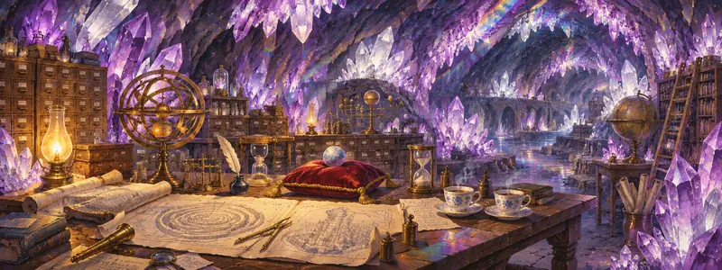 22 · La géode du Docteur Quartz ×5 | Plus bas, une géode immense, creuse comme une cathédrale, tapissée de cristaux violets. Au milieu, une dame de cristal, toute en facettes, fait des calculs à la craie sur le mur, et efface, et recommence. Dr Ysolde Quartz, savante, seule dans sa géode depuis n…Plus bas, une géode immense, creuse comme une cathédrale, tapissée de cristaux violets. Au milieu, une dame de cristal, toute en facettes, fait des calculs à la craie sur le mur, et efface, et recommence. Dr Ysolde Quartz, savante, seule dans sa géode depuis neuf cents ans.
Elle te voit. Elle s'arrête au milieu d'une équation. « Un galet. Ici ? » Elle te prend, te pose contre son oreille de cristal. Elle écoute.
« Il vibre », dit-elle. « Les galets ne vibrent pas. Celui-ci vibre. Fréquence basse, irrégulière, avec des pics. » Elle lève les yeux. « Il pense. »
Gontran se penche : « Le Président pense beaucoup à ses électeurs, Madame. » Dr Quartz le regarde comme on regarde une erreur de calcul. |
gfo_03c
La Serre des Belles-de-Nuit | 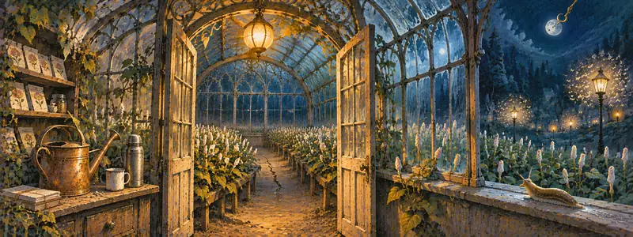 36 · La Serre des Belles-de-Nuit ×8 | En redescendant vers le sud, à l'orée de la forêt, une grande serre de verre et de fer. À l'intérieur, des fleurs blanches qui ne s'ouvrent que sous la Lune. Elles sont toutes fermées. Elles attendent depuis trois nuits. Un papillon de nuit gris, grand comme u…En redescendant vers le sud, à l'orée de la forêt, une grande serre de verre et de fer. À l'intérieur, des fleurs blanches qui ne s'ouvrent que sous la Lune. Elles sont toutes fermées. Elles attendent depuis trois nuits.
Un papillon de nuit gris, grand comme un parapluie plié, passe entre les rangs avec un arrosoir. Il s'appelle Anatole. Il soigne la serre depuis soixante ans. Il parle aux fleurs à voix basse, et il s'excuse auprès des limaces.
Il te voit. Il pose son arrosoir. « Monsieur le Président ! On s'est vus, à l'audience, à Tamponville. Je vous ai laissé une fleur. » Il s'incline. « De loin, sur votre coussin, je pensais que "galet" était une façon de parler. Vous n'avez rien dit, ce jour-là. Mais la fleur, vous l'avez gardée jusqu'au soir. On me l'a dit. » |
gnu_07
Le fantôme de la nacelle 3 | 28 · La station de pompage et la nacelle ×11 | Attachée à un mât de pompe, une vieille nacelle d'osier flotte au bout d'une corde. Pas de ballon au-dessus. Dans la nacelle, un homme en redingote, transparent, lisse sa moustache transparente. « Sire Gaspard Ombrelune, aéronaute. Parti de Lyon en 1803 pour a…Attachée à un mât de pompe, une vieille nacelle d'osier flotte au bout d'une corde. Pas de ballon au-dessus. Dans la nacelle, un homme en redingote, transparent, lisse sa moustache transparente.
« Sire Gaspard Ombrelune, aéronaute. Parti de Lyon en 1803 pour atteindre la Lune. Arrivé jusqu'ici. Pas plus loin. » Il soupire, et son soupir fait de la buée. « Je suis mort en chemin. Mais je n'ai pas renoncé. C'est une question de principe. »
Il te regarde. Il ôte son chapeau, qui passe à travers sa main. « Un président ! Je n'en ai jamais vu. En 1803, nous avions un roi, puis un autre, puis personne. » |
gco_04
La jetée | 14 · Le Ressac Triste ×12 | On te porte jusqu'à une jetée. Au bout, une silhouette de classeurs gris, grande comme un phare couché : l'Huissier Krâmm, venu d'Aldébaran. Il mesure les vagues une par une, avec un mètre ruban qui se déroule tout seul, et il les note dans un registre. Il te …On te porte jusqu'à une jetée. Au bout, une silhouette de classeurs gris, grande comme un phare couché : l'Huissier Krâmm, venu d'Aldébaran. Il mesure les vagues une par une, avec un mètre ruban qui se déroule tout seul, et il les note dans un registre.
Il te voit. Il ouvre un tiroir, en sort un formulaire, le referme. « Le chef de l'État cédant. Bien. Article premier du Code foncier d'Aldébaran : on ne cède pas un territoire sans la signature de son chef d'État. Votre signature figure à l'acte, par délégation. » Il hésite. « Par délégation de qui, je l'ignore. Ce n'est pas mon tiroir. »
Bartholomé, lui, regarde la mer qui hésite au loin. « Cette nuit ou la suivante, ce sera la grande marée. Avec la Lune si basse, la mer va monter vers elle comme jamais. Quand j'étais petit, j'ai lancé un galet en ricochet un soir de grande marée. Il est monté jusqu'aux nuages. » Il te soupèse. « Tu ricoches bien, toi. Tu es plat. »
Il ajoute : « Onze, sur la plage. Je t'ai vu. » |
gpr_08
Les mesures | 22 · La géode du Docteur Quartz ×5 | Dr Quartz te pose sur une balance de cristal, entre deux électrodes. Elle mesure. Tu penses, elle note. Elle a déjà rempli onze pages. Pendant qu'elle mesure, Gontran parle, comme toujours : « Le Président trouve la géode très bien décorée ! » Dr Quartz note ç…Dr Quartz te pose sur une balance de cristal, entre deux électrodes. Elle mesure. Tu penses, elle note. Elle a déjà rempli onze pages.
Pendant qu'elle mesure, Gontran parle, comme toujours : « Le Président trouve la géode très bien décorée ! » Dr Quartz note ça aussi, sur la page d'en face. À gauche : ce que tu vibres. À droite : ce que Gontran annonce. Elle regarde les deux colonnes. Elle ne dit rien. Elle continue de noter.
Dr Quartz retourne à ses calculs, mais elle se retourne souvent vers toi. Les cristaux de la géode vibrent un peu quand tu penses. Elle le voit.
Au fond de la géode, sur une étagère, il y a ses inventions ratées : trois soleils éteints, deux comètes en bocal, une petite Lune de poche qui tourne toute seule. |
gfo_03d
La limace | 36 · La Serre des Belles-de-Nuit ×8 | Au fond de la serre, entre deux pots, une très vieille limace grise traverse l'allée. Elle la traverse depuis ce matin. Elle va de la fleur fanée de gauche à la fleur fanée de droite. Elle n'est pas pressée. Elle a le temps. Comme toi. On te pose dans l'allée,…Au fond de la serre, entre deux pots, une très vieille limace grise traverse l'allée. Elle la traverse depuis ce matin. Elle va de la fleur fanée de gauche à la fleur fanée de droite. Elle n'est pas pressée. Elle a le temps. Comme toi.
On te pose dans l'allée, par mégarde, juste sur son chemin.
Elle s'arrête contre toi. Elle te regarde de ses deux petites cornes. Elle ne fait pas le tour. Elle attend que tu bouges. Tu ne bouges pas. Tu ne peux pas. |
gnu_08
Le ballon | 28 · La station de pompage et la nacelle ×11 | Gaspard déplie un coin de la soie. Elle brille comme une flaque au clair de Lune. « Il faudrait le gonfler, quelque part en bas, avec un bon feu. Et lâcher les amarres. Et monter. Tout droit. Elle est si basse, ces jours-ci, qu'on y arriverait presque à pied. …Gaspard déplie un coin de la soie. Elle brille comme une flaque au clair de Lune. « Il faudrait le gonfler, quelque part en bas, avec un bon feu. Et lâcher les amarres. Et monter. Tout droit. Elle est si basse, ces jours-ci, qu'on y arriverait presque à pied. »
Gaspard regarde la Lune et ne dit plus rien. Sous le siège de la nacelle, un paquet gris dépasse. |
gco_05
La cabine de l'huissier | 13 · Les Côtes Hagardes ×24 | défautPar la fenêtre, tu vois la cabine de Krâmm : des classeurs du sol au plafond, des tiroirs dans les tiroirs, une seule chaise, droite. Il s'assoit. Il ouvre un tiroir tout en bas, qu'il n'ouvre jamais devant personne. Il en sort une feuille de papier, et il la …Par la fenêtre, tu vois la cabine de Krâmm : des classeurs du sol au plafond, des tiroirs dans les tiroirs, une seule chaise, droite. Il s'assoit. Il ouvre un tiroir tout en bas, qu'il n'ouvre jamais devant personne. Il en sort une feuille de papier, et il la regarde longtemps.
C'est un dessin d'enfant. Une Lune ronde et jaune, dans un ciel bleu, au-dessus d'une maison. En dessous, d'une écriture qui penche : « Pour papa. La Lune à sa place. »
Krâmm la regarde. Il ne sait pas qu'on le regarde. Personne ne regarde jamais un huissier quand il est seul. |
gpr_09
La facette | 22 · La géode du Docteur Quartz ×5 | Avant de te laisser repartir, Dr Quartz s'arrête devant toi. Elle a l'air de chercher une formule qu'elle n'a jamais apprise. Elle détache une facette de son coude, avec un petit « tic » de verre. Violette et tiède. « Elle vibre comme ce qu'elle touche. Posez-…Avant de te laisser repartir, Dr Quartz s'arrête devant toi. Elle a l'air de chercher une formule qu'elle n'a jamais apprise.
Elle détache une facette de son coude, avec un petit « tic » de verre. Violette et tiède. « Elle vibre comme ce qu'elle touche. Posez-la sur n'importe quoi, elle chante sa fréquence. Posez-la sur vous, et ceux qui ont des oreilles sauront ce que vous pensez. Enfin, à peu près. À quarante pour cent. »
« Je viens avec vous, de toute façon, mais je vous la donne quand même. C'est la première fois que je donne quelque chose. Je voulais voir l'effet. » |
gfo_04
Le feu | 16 · La Forêt-Réseau ×9 | défautAu sud, une odeur de bois brûlé. Des géomètres dorés de la Compagnie Foncière ont allumé un feu au pied d'un vieil arbre. Ils brûlent des racines pour faire passer un câble. La toile des racines hurle sous la terre, et tu l'entends hurler.…Au sud, une odeur de bois brûlé. Des géomètres dorés de la Compagnie Foncière ont allumé un feu au pied d'un vieil arbre. Ils brûlent des racines pour faire passer un câble. La toile des racines hurle sous la terre, et tu l'entends hurler. |
gnu_09
Le contremaître | 28 · La station de pompage et la nacelle ×11 | Le contremaître est un dirigeable en cravate, gonflé d'importance. Il flotte dans sa cabine en regardant des graphiques qui montent. Il te voit. Il se gonfle encore. « Le Président de la Terre ! Quel honneur ! Vous venez signer le contrat de la pluie ? Il manq…Le contremaître est un dirigeable en cravate, gonflé d'importance. Il flotte dans sa cabine en regardant des graphiques qui montent. Il te voit. Il se gonfle encore. « Le Président de la Terre ! Quel honneur ! Vous venez signer le contrat de la pluie ? Il manque votre paraphe. Enfin, celui de votre délégué. »
Dans la poche, contre toi, la page arrachée crisse. |
gco_06
La nuit des Côtes | 13 · Les Côtes Hagardes ×24 | défautOn te pose pour la nuit sur un rocher, face au large. Bartholomé dort à côté, assis, le dos contre la cabane, la main sur ton rocher pour être sûr que personne ne te prend.…On te pose pour la nuit sur un rocher, face au large.
Bartholomé dort à côté, assis, le dos contre la cabane, la main sur ton rocher pour être sûr que personne ne te prend.
Gontran dort dans la carriole. Il parle en dormant. Il traduit tes rêves. Il dit que tu rêves de banquets.
La mer, au loin, te parle. Elle parle par le fond, d'un caillou à l'autre, jusqu'à toi. Elle dit qu'elle a envie de monter. Que la Lune l'appelle, plus fort que jamais. Que demain, ou après-demain, elle montera aussi haut qu'elle pourra, pour la retenir ou pour la suivre, elle ne sait pas encore. |
gpr_09b
L'Assemblée des Gravitaires | 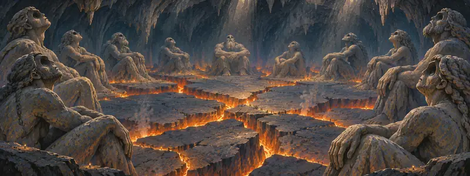 23 · La Salle des Plaques et l'Assemblée ×1 | En redescendant vers l'Axe, on traverse une salle ronde où les Gravitaires tiennent assemblée. Ceux qui ne sont pas assis sur l'Axe sont là, des milliers, et ils votent. La question est simple : faut-il continuer de peser ? Ils pèsent depuis trois jours. Ils s…En redescendant vers l'Axe, on traverse une salle ronde où les Gravitaires tiennent assemblée. Ceux qui ne sont pas assis sur l'Axe sont là, des milliers, et ils votent. La question est simple : faut-il continuer de peser ? Ils pèsent depuis trois jours. Ils sont fatigués. Si la Lune part quand même, à quoi bon ?
La présidente de séance, une très vieille Gravitaire en granit rose, voit qu'on t'apporte. « Le Président de la Terre ! Qu'il dise, lui ! Faut-il continuer de peser ? »
Toute l'assemblée se tourne vers toi. Personne n'a jamais demandé ton avis sur une chose aussi lourde. |
gfo_04b
La borne | 16 · La Forêt-Réseau ×9 | défautLes géomètres ramassent leurs instruments. Ils ont planté partout des piquets dorés, avec des rubans : « Lune-sur-Forêt. Résidence. Parcelle 9. » Il leur manque une borne, une vraie, pour marquer le coin de la parcelle. Le chef géomètre regarde par terre. Il c…Les géomètres ramassent leurs instruments. Ils ont planté partout des piquets dorés, avec des rubans : « Lune-sur-Forêt. Résidence. Parcelle 9. » Il leur manque une borne, une vraie, pour marquer le coin de la parcelle. Le chef géomètre regarde par terre. Il cherche une pierre. Plate, lisse, bien grise.
Il te voit. |
gnu_10
Le Phare des Nuages | 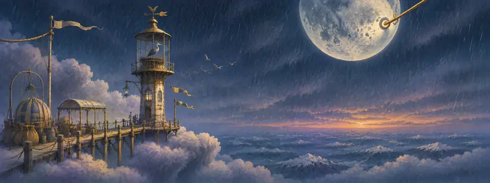 29 · Le Phare des Nuages ×3 | Tout au bout des Hauts-Nuages, un phare de vapeur, dressé sur le dernier nuage solide. De là-haut, on voit la Lune comme jamais. Elle est énorme. Elle remplit la moitié du ciel. On voit ses cratères, ses mers sèches, la poussière blanche. Et on voit le crochet…Tout au bout des Hauts-Nuages, un phare de vapeur, dressé sur le dernier nuage solide. De là-haut, on voit la Lune comme jamais. Elle est énorme. Elle remplit la moitié du ciel. On voit ses cratères, ses mers sèches, la poussière blanche.
Et on voit le crochet. Une chose dorée, plantée dans son flanc, reliée par une chaîne d'or à un vaisseau-bureau immense, en marbre et en or, qui flotte plus loin : le Promontoire. La chaîne est tendue. Elle tire.
Tu l'avais vu de ta fenêtre, à Tamponville, tout petit. Le voilà en vrai. Il est plus grand que toutes les tours de la Capitale.
Le gardien du phare est une mouette très vieille, en ciré, qui tourne la manivelle de la lumière. « Je l'éclaire tous les soirs, la Lune. Pour qu'elle trouve son chemin. Ce soir, elle ne le cherche plus. On la tire. » |
gco_07
Le départ des Côtes | 13 · Les Côtes Hagardes ×24 | défautAu matin, on te ramène à la carriole. Devant la digue, la petite Marégrave te fait un signe de la main. Elle a retrouvé sa taille. Le bouchon de liège tient.…Au matin, on te ramène à la carriole.
Devant la digue, la petite Marégrave te fait un signe de la main. Elle a retrouvé sa taille. Le bouchon de liège tient.
Sur la jetée, Krâmm mesure déjà les vagues. Il ne te regarde pas. Il a mis le dessin dans sa poche de poitrine.
Sur le fond, les cailloux murmurent encore que la mer va revenir. Ils le croient parce que tu l'as pensé. |
gpr_10
L'Axe de la Terre | 21 · Les Profondeurs et l'Axe de la Terre ×23 | défautTout en bas, l'Axe de la Terre. Une colonne de fer et de nickel si immense qu'on ne voit ni son haut ni son bas. Autour, une salle grande comme une mer. Et sur l'Axe, assis, des milliers de Gravitaires, serrés les uns contre les autres, qui pèsent de tout leur…Tout en bas, l'Axe de la Terre. Une colonne de fer et de nickel si immense qu'on ne voit ni son haut ni son bas. Autour, une salle grande comme une mer. Et sur l'Axe, assis, des milliers de Gravitaires, serrés les uns contre les autres, qui pèsent de tout leur poids. Ils transpirent du sable. L'Axe penche quand même. D'un degré. Puis d'un autre.
Dans la poche de la salopette, la petite Gravitaire se hisse sur la pointe des pieds. « Là ! La fissure en étoile ! » Un gros Gravitaire gris ronfle à moitié en pesant. Il a l'air d'avoir oublié beaucoup de mots.
Tu sens tout. Tu es une pierre, posée près de l'Axe : tu sens le monde qui veut basculer, la Lune qui tire, le cœur de la planète qui bat vite. |
gfo_04c
La clairière des Lichenautes | 17 · Le Grand Chêne Noué et la Toile ×3 | Plus loin, une clairière couverte de pierres. Sur chaque pierre, un Lichenaute : des gris, des verts, des jaunes, des orange. Ils ne bougent pas. Ils se parlent par la Toile, une phrase par heure, et ils ont des conversations commencées il y a cent ans. Quand …Plus loin, une clairière couverte de pierres. Sur chaque pierre, un Lichenaute : des gris, des verts, des jaunes, des orange. Ils ne bougent pas. Ils se parlent par la Toile, une phrase par heure, et ils ont des conversations commencées il y a cent ans.
Quand on te pose au milieu, toutes les taches frémissent en même temps. La Toile répète partout : « La pierre qui pense est là. »
Xanthin descend de ton flanc pour saluer la famille. Il met une heure par cousin. Il en a trois cents.
Une vieille lichen grise te dit, en deux heures : « Il y a... un petit orange... qui vous cherche. Têtu. Il vous... trouvera. » |
gnu_10b
La longue-vue | 29 · Le Phare des Nuages ×3 | Avant que tu repartes, la mouette du phare sort de sa poche de ciré une longue-vue de laiton, cabossée, très vieille. « Elle a appartenu à un capitaine qui cherchait la Lune dans les nuages. Il l'a trouvée. Elle était derrière lui. » Elle la braque sur le Prom…Avant que tu repartes, la mouette du phare sort de sa poche de ciré une longue-vue de laiton, cabossée, très vieille. « Elle a appartenu à un capitaine qui cherchait la Lune dans les nuages. Il l'a trouvée. Elle était derrière lui. »
Elle la braque sur le Promontoire, au bout de la chaîne d'or, et elle te la colle contre le flanc, pour que tu regardes. Derrière une baie vitrée, dans un bureau de marbre, une silhouette mince, toute en feuilles d'or, regarde la Lune. Elle ne sourit pas. Elle a l'air de quelqu'un qui regarde une chose qu'il a achetée et qui n'est pas contente d'être là.
Tu as déjà vu cette silhouette. Dans le wagon-restaurant, sous un chapeau trop enfoncé, avec une feuille d'or qui brillait. |
gal_int
Le soir au Carrefour | 09 · Le Carrefour des Espèces ×55 | défautAu retour de ta première région, on te ramène au Carrefour à la nuit tombée. Un crieur passe entre les tentes avec la Gazette du soir. En première page, ton portrait, de profil, c'est-à-dire de tranche. Le titre : « LE PRÉSIDENT EN TOURNÉE : "TOUT VA TRÈS BIEN…Au retour de ta première région, on te ramène au Carrefour à la nuit tombée. Un crieur passe entre les tentes avec la Gazette du soir. En première page, ton portrait, de profil, c'est-à-dire de tranche. Le titre : « LE PRÉSIDENT EN TOURNÉE : "TOUT VA TRÈS BIEN." » Tu n'as rien pensé de tel. Tu as pensé le contraire, toute la journée.
Une petite fille Horlogère achète la Gazette, regarde ton portrait, puis te regarde, toi, posé au bord d'une caisse. « Vous n'avez pas l'air de quelqu'un qui dit que tout va bien. »
Au deuxième retour, Gontran organise une conférence de presse sous la grande tente.
Au deuxième retour, le Conseil organise une conférence de presse sous la grande tente. Personne ne sait qui va parler. Les journalistes viennent quand même. Des journalistes de toutes les espèces : une taupe myope, un perroquet de la Gazette, une Marégrave avec un carnet qui fond. Gontran répond à toutes les questions avant qu'on les pose.
Le perroquet lève une aile. « Une question pour le Président lui-même. Pas pour vous. »
Le perroquet lève une aile. « Une question pour le Président. Sans interprète, cette fois. » Un silence. Personne n'a jamais posé de question au Président lui-même.
Au dernier retour, il n'y a plus de Gazette, plus de conférence. Tout le monde regarde la Lune. Des enfants de toutes les espèces jouent au bord du feu. Ils ont trouvé un caillou gris, plat, et ils l'ont posé sur un mouchoir plié. Ils jouent au Président.
« Moi je fais l'interprète », dit un petit Gravitaire. « Le Président dit qu'il veut des bonbons. » Une petite Marégrave le pousse. « Non ! On ne sait pas ce qu'il dit ! C'est ça le jeu ! On doit deviner ! » |
gpr_11
La cale | 21 · Les Profondeurs et l'Axe de la Terre ×23 | défautAu pied de l'Axe, là où il touche le roc, il y a une fente. Une fente étroite, plate, juste sous le bord de la colonne. Chaque fois que l'Axe penche, la fente s'ouvre un peu plus. Il faudrait quelque chose dedans. Quelque chose de plat, de dur, de dense. Quelq…Au pied de l'Axe, là où il touche le roc, il y a une fente. Une fente étroite, plate, juste sous le bord de la colonne. Chaque fois que l'Axe penche, la fente s'ouvre un peu plus.
Il faudrait quelque chose dedans. Quelque chose de plat, de dur, de dense. Quelque chose qui tienne.
Un galet, par exemple. |
gfo_05
Quitter la forêt | 16 · La Forêt-Réseau ×9 | défautTu quittes la Forêt-Réseau. Derrière toi, les arbres poussent un peu moins de travers, comme s'ils avaient retrouvé une direction. Sous la terre, la toile des racines pulse plus calmement. Tu l'entends encore longtemps. Au bord du chemin, il n'y a plus un piqu…Tu quittes la Forêt-Réseau. Derrière toi, les arbres poussent un peu moins de travers, comme s'ils avaient retrouvé une direction. Sous la terre, la toile des racines pulse plus calmement. Tu l'entends encore longtemps.
Au bord du chemin, il n'y a plus un piquet doré. Quelqu'un les a tous arrachés. |
gnu_11
Redescendre | 27 · Les Hauts-Nuages ×13 | défautOn redescend par l'ascenseur à vapeur. Le vieux Vent souffle doucement. Derrière vous, les pompes se taisent. Sur toute la Terre, il recommence à pleuvoir, très fin.…On redescend par l'ascenseur à vapeur. Le vieux Vent souffle doucement.
Derrière vous, les pompes se taisent. Sur toute la Terre, il recommence à pleuvoir, très fin.
Dame Ondée vous suit en flottant au-dessus de la cabine. Elle pleut un tout petit peu, juste sur le toit de l'ascenseur, pour s'entraîner. Ça fait un bruit de pluie sur un toit. C'est le plus beau bruit du monde.
Gaspard, dans l'ascenseur, tient son ballon plié sur ses genoux transparents. Il regarde la Lune par le hublot jusqu'à ce qu'on ne la voie plus. |
gal_int2
Plus tard, autour du feu | 09 · Le Carrefour des Espèces ×55 | défautPlus tard, les feux baissent. La plaine sent la soupe et la fumée. Tu es posé sur une caisse, au bord d'un feu, parmi ceux qui t'accompagnent. Plus tard, au deuxième retour, quelqu'un a construit un petit coussin de mousse pour toi, au bord du feu. Personne ne…Plus tard, les feux baissent. La plaine sent la soupe et la fumée. Tu es posé sur une caisse, au bord d'un feu, parmi ceux qui t'accompagnent.
Plus tard, au deuxième retour, quelqu'un a construit un petit coussin de mousse pour toi, au bord du feu. Personne ne dit qui. Il est très bien fait.
Plus tard, au dernier retour, personne ne dort. On parle bas. Tu écoutes, comme tu as toujours fait. Ce soir, tu entends plus de voix qu'en huit cents ans.
Xanthin, sur ton flanc, ne dit rien. Il écoute le feu. Les lichens aiment le bruit du feu, de loin. |
gpr_12
La remontée | 21 · Les Profondeurs et l'Axe de la Terre ×23 | défautOn remonte. L'Ascenseur des Taupes, le Puits, la benne, et la lumière au-dessus qui s'agrandit, de la pièce de monnaie à la soucoupe, de la soucoupe au ciel. Les Gravitaires ont gravé quelque chose dans la roche, au pied de l'Axe, à l'endroit de la fente : un …On remonte. L'Ascenseur des Taupes, le Puits, la benne, et la lumière au-dessus qui s'agrandit, de la pièce de monnaie à la soucoupe, de la soucoupe au ciel.
Les Gravitaires ont gravé quelque chose dans la roche, au pied de l'Axe, à l'endroit de la fente : un petit ovale. Personne ne sait ce que c'est, à part eux. Ils appellent ça « la place du dense ».
La petite Gravitaire est restée en bas, assise sur l'Axe à côté de son papa. Elle pèse aussi. Elle t'a fait un signe, avec son bonnet. |
gal_ret
Retour au Carrefour | 09 · Le Carrefour des Espèces ×55 | défautOn te ramène au Carrefour des Espèces. Les tentes ont doublé. La Lune a grossi dans le ciel, ou elle s'est rapprochée pour mieux partir. Xanthin, sur ton flanc, a poussé d'un millimètre. Il entend tout ce que tu penses. Gontran, lui, continue de dire autre cho…On te ramène au Carrefour des Espèces. Les tentes ont doublé. La Lune a grossi dans le ciel, ou elle s'est rapprochée pour mieux partir.
Xanthin, sur ton flanc, a poussé d'un millimètre. Il entend tout ce que tu penses. Gontran, lui, continue de dire autre chose, très fort.
Personne ne parle à ta place. C'est étrange. Les gens attendent, et Xanthin leur répète, lentement, ce que tu penses vraiment.
Personne ne parle à ta place, et personne ne t'entend. Tu es un galet sur un coussin. Les gens passent, et te saluent.
Le Dr Quartz lit tes vibrations à voix haute, en pourcentages, à ceux qui demandent. « Soixante pour cent de tristesse. Le reste : la Lune. »
Gontran attend, le doigt levé, que tu aies choisi la prochaine région. Il annoncera que c'était son idée.
Le Conseil te fait signe : il reste du temps pour une autre région. Pas beaucoup.
Le Conseil ne se réunit plus. Il n'y a plus le temps. Tout le monde regarde vers le haut. |
gal_xan
Un lichen têtu | 09 · Le Carrefour des Espèces ×55 | défautC'est la petite tache orange que tu as déjà croisée. Elle a traversé la plaine pour te retrouver. Ça lui a pris deux jours. Pour un lichen, c'est un sprint. C'est une petite tache de lichen orange. Sous la terre, la Toile murmure depuis des jours qu'il existe …C'est la petite tache orange que tu as déjà croisée. Elle a traversé la plaine pour te retrouver. Ça lui a pris deux jours. Pour un lichen, c'est un sprint.
C'est une petite tache de lichen orange. Sous la terre, la Toile murmure depuis des jours qu'il existe une pierre qui pense. Elle est venue voir.
Elle s'arrête contre ton bord. « Vous... êtes la pierre... qui pense ? » |
gal_toile
La Toile | 09 · Le Carrefour des Espèces ×55 | défautXanthin pose son bord sur une racine, à fleur de terre. Sous la plaine, la Toile relie toutes les racines du monde, et tous les lichens qui poussent dessus. « Grumeau... est loin. Mais la Toile... est de la famille. Elle transmet... aux cousins. » Le message p…Xanthin pose son bord sur une racine, à fleur de terre. Sous la plaine, la Toile relie toutes les racines du monde, et tous les lichens qui poussent dessus. « Grumeau... est loin. Mais la Toile... est de la famille. Elle transmet... aux cousins. »
Le message part. Tu sens passer quelque chose sous la terre, une phrase qui voyage de racine en racine. La réponse met une heure à revenir. |
gal_renv
Comment renvoyer un interprète | 09 · Le Carrefour des Espèces ×55 | défautXanthin réfléchit. Chez les lichens, réfléchir prend une heure. Gontran, pendant ce temps, donne trois interviews. « Vous... ne pouvez pas... le renvoyer vous-même », dit-il enfin. « Vous ne bougez pas. Moi, je roule... mais lentement. Il faut... quelqu'un qui…Xanthin réfléchit. Chez les lichens, réfléchir prend une heure. Gontran, pendant ce temps, donne trois interviews.
« Vous... ne pouvez pas... le renvoyer vous-même », dit-il enfin. « Vous ne bougez pas. Moi, je roule... mais lentement. Il faut... quelqu'un qui agit. Ou quelque chose... qui le fasse partir... tout seul. Ou une preuve... qu'il ne traduit pas. »
Dr Quartz pose son carnet sur la table du Conseil. Elle a mesuré tes vibrations pendant tout le voyage, en notant à côté ce que Gontran annonçait.
Sur une page, soulignée trois fois, à gauche : « Ce n'est pas ce que je dis. » À droite, à la même minute : « Le Président est d'accord avec moi. »
Xanthin ajoute, au bout d'une minute : « Et puis... s'il part... qui vous porte ? Moi... je pousse. Je ne porte pas. Il faudrait... d'abord... quelqu'un... avec des bras. » |
gal_vei
La veillée | 09 · Le Carrefour des Espèces ×55 | défautAutour du feu, ceux qui t'ont suivi pendant la tournée. Personne ne sait ce qui se passera demain. Alors on parle, comme on parle la veille des choses. Au bord du feu, la terre se soulève un peu, et une mousse grise et verte sort d'entre deux racines, très len…Autour du feu, ceux qui t'ont suivi pendant la tournée. Personne ne sait ce qui se passera demain. Alors on parle, comme on parle la veille des choses.
Au bord du feu, la terre se soulève un peu, et une mousse grise et verte sort d'entre deux racines, très lentement, avec un tampon à la main. C'est Basile Grumeau, le greffier. Il a voyagé trois jours sous la terre. Il dit : « Bon... soir. » Ça prend le temps qu'il faut. Il ajoute : « Je pense... à autre chose. Ne... me parlez pas... de ma signature. »
Gontran répète son discours pour demain. Il ne sait pas encore ce que tu diras. Il ne l'a jamais su. Ça ne l'a jamais arrêté.
Xanthin, sur ton flanc, écoute tout ce que tu penses ce soir. Il ne le répète pas. Il y a des pensées qui ne regardent personne.
Xanthin et Basile se parlent par la terre, de lichen à lichen. Ils ne se sont jamais vus. Ils sont de la même famille, très loin. Ils mettent une heure à se dire bonjour. Ils ont l'air contents de l'heure.
Bartholomé et Tante Mélusine se disputent pour savoir qui a perdu le plus. Il a perdu Perline, elle va perdre sa lumière. Ils finissent par pleurer ensemble, lui dilué, elle très fort. Ils se trouvent sympathiques.
Bartholomé demande à Pénélope si on peut tamponner une marée. Elle réfléchit sérieusement. Elle dit qu'il faudrait qu'elle reste immobile. Il rit pour la première fois de la tournée.
Pénélope relit les notes de Gontran. Il n'y en a pas. Elle lui en prête. Il les lit à l'envers, et il les trouve excellentes.
Tante Mélusine tricote une écharpe pour Xanthin. Elle est large comme un fil. « UN LICHEN, ÇA A FROID AUSSI. » Xanthin ne dit rien pendant une heure. C'est sa façon de dire qu'il est touché.
Dr Quartz mesure les étoiles avec une facette de son coude. « La Lune s'éloigne de quatre cents mètres par heure. Demain à l'aube, le crochet aura fini de tirer. » Personne ne lui a demandé. Elle le dit quand même. C'est utile.
Sire Gaspard regarde la Lune avec une tendresse de fantôme. « J'étais à mi-chemin, en 1803. À mi-chemin d'elle. Je pourrais vous emmener plus loin, cette fois. Mon ballon tient encore. Presque. »
Écho répète les mots de chacun, autour du feu, un par un, très doucement. Puis elle dit, toute seule, un mot qui n'est à personne : « ...demain. » Tout le monde se tait. C'est peut-être le premier mot qui soit à elle.
Dame Ondée pleut une goutte, une seule, sur le feu, pour l'entendre siffler. Elle s'excuse auprès des flammes. Les flammes ne lui en veulent pas.
Anatole a posé une Belle-de-Nuit fermée, dans un pot, au bord du feu. « Si elle s'ouvre cette nuit, c'est que la Lune est encore à nous. » Elle reste fermée. Il la regarde quand même.
Au bord de la plaine, la soie grise du ballon de Gaspard attend, pliée. On pourrait la gonfler au-dessus du feu. Il est assez grand.
Il n'y a que Gontran et toi. Il te parle de sa mère, qui voulait qu'il soit avocat. Il dit que, d'une certaine façon, il plaide tous les jours. Tu ne l'avais jamais écouté. Tu l'écoutes. |
gal_adieu
L'adieu de l'interprète | 09 · Le Carrefour des Espèces ×55 | défautLe Conseil hésite. Il regarde Gontran, puis toi, puis Gontran. Personne n'ose. Gontran remercie tout le monde pour une décision qui n'a pas été prise, et te remet dans sa poche. Au bout du quai, avant de monter dans le Tortillard, Gontran se retourne. Il agite…Le Conseil hésite. Il regarde Gontran, puis toi, puis Gontran. Personne n'ose. Gontran remercie tout le monde pour une décision qui n'a pas été prise, et te remet dans sa poche.
Au bout du quai, avant de monter dans le Tortillard, Gontran se retourne. Il agite son ticket zéro au-dessus de la foule. Il a l'air heureux. Il ne sait pas qu'il part pour toujours.
Tu le vois s'éloigner entre les tentes, très droit. Il ne se retourne pas. VU, c'est VU.
Au bout de cent mètres, la boussole l'a perdu. On ne le revoit pas. Quelque part, il cherche ton discours. Il le cherchera longtemps. Il n'a jamais eu l'air aussi heureux.
Les délégués lui serrent la main, un par un. Il s'en va en saluant, sans comprendre. Il salue encore, de loin, la tente qui se vide.
Il sort sa carte de visite, la regarde, et la déchire : « Maître Gontran Verbiage, interprète. » Il n'était rien de tout ça. Il s'en va en sifflant faux, comme quelqu'un qu'on vient de libérer d'un poste qu'il n'avait pas.
Il revient une minute plus tard, sans un mot, pose sa redingote pliée à côté de toi, et repart. Il fait froid, la nuit, au Carrefour.
Avant de partir, il a vidé sa poche gauche, celle où tu as vécu quarante ans. Tout ce qu'il y avait mis pour toi, il l'a posé contre toi, en rang, sans savoir ce que c'était.
Bartholomé te ramasse, avec le reste, et te glisse dans la poche de son ciré. « Ça sent le poisson. Tu t'y feras. »
Tante Mélusine te ramasse, avec le reste, et te range dans un de ses châles. « TU SERAS AU CHAUD, LÀ. PLUS QUE DANS SA POCHE. »
Pénélope te soulève entre ses deux tampons, très délicatement, et te range avec le reste dans la boîte à tampons qu'elle porte en bandoulière. « Classé. »
Dr Quartz te ramasse, avec le reste, et te range dans sa boîte à échantillons, à côté de son carnet. « Comme ça, je pourrai vous mesurer en marchant. »
Anatole te soulève, avec mille excuses, et te range avec le reste dans la sacoche de jardinier qu'il a emportée de la Serre. Il te porte comme un arrosoir : avec soin, et un peu de travers.
Sire Gaspard te pose, avec le reste, au fond du panier où il range son ballon plié. « Un passager. Je n'en avais pas eu depuis 1803. » |
gal_vei2
Les étoiles | 09 · Le Carrefour des Espèces ×55 | défautPlus tard, quand le feu n'est plus que des braises, tu restes seul, face au ciel, posé sur une pierre, le côté lisse vers la Lune. C'est Gontran qui t'a posé comme ça. Il ne t'a pas demandé. Il a compris tout seul. C'est la première fois.…Plus tard, quand le feu n'est plus que des braises, tu restes seul, face au ciel, posé sur une pierre, le côté lisse vers la Lune.
C'est Gontran qui t'a posé comme ça. Il ne t'a pas demandé. Il a compris tout seul. C'est la première fois.
La Lune est si basse que tu vois son crochet d'or. Il brille comme une dent. Autour, les étoiles font comme d'habitude. Elles ne savent pas.
Tu penses : demain, il faudra dire quelque chose. Huit cents ans que je n'ai rien dit. Ce serait le bon moment. Je ne sais pas comment on commence. |
gal_nuit1
Ceux qui ne dorment pas | 09 · Le Carrefour des Espèces ×55 | défautLe feu baisse. On s'endort, un par un, autour de toi. Ceux qui restent éveillés sont ceux qui ont peur, et ceux qui n'ont jamais dormi. Gontran ne dort pas. Il est assis à côté de toi, son carnet sur les genoux. Il prépare le discours de demain. Il écrit une p…Le feu baisse. On s'endort, un par un, autour de toi. Ceux qui restent éveillés sont ceux qui ont peur, et ceux qui n'ont jamais dormi.
Gontran ne dort pas. Il est assis à côté de toi, son carnet sur les genoux. Il prépare le discours de demain. Il écrit une phrase, il la barre, il en écrit une autre. Il te regarde. « Vous savez, Monsieur le Président, je n'ai jamais su ce que vous pensiez. » Il le dit tout bas, comme on avoue quelque chose. « Je l'ai toujours dit très fort, pour que personne ne remarque que je ne savais pas. »
Gontran n'est plus là. Sa place, au bord du feu, est restée vide. Personne ne s'y assoit. C'est étrange : il prenait beaucoup de place.
Quelqu'un a déposé une enveloppe près de toi, au bord du feu. Elle est de Gontran. Dedans, une seule phrase : « Je ne savais pas qu'il y avait quelque chose à entendre. Pardon. G. V. »
Xanthin, sur ton flanc, fait semblant de dormir. Il écoute tout ce que tu penses cette nuit. Il ne le répétera jamais. |
gal_nuit2
Avant l'aube | 09 · Le Carrefour des Espèces ×55 | défautIl reste quelques heures avant que les moteurs du vaisseau doré, celui qui tire la chaîne, démarrent. Ils démarreront tout seuls, à l'aube, comme prévu. La Lune partira. Tout le monde le sait. Personne ne le dit. Au-dessus du Carrefour, la Lune est si basse qu…Il reste quelques heures avant que les moteurs du vaisseau doré, celui qui tire la chaîne, démarrent. Ils démarreront tout seuls, à l'aube, comme prévu. La Lune partira. Tout le monde le sait. Personne ne le dit.
Au-dessus du Carrefour, la Lune est si basse qu'on entend presque la chaîne d'or grincer.
Dans la poche, la bobine de fil de lumière est encore tiède. Elle tire un peu, vers le haut, comme un cerf-volant.
Dans la poche, l'enveloppe bleue. « À la Lune, en mains propres. »
Tu as encore la rayure de l'Axe, sur le côté. Elle te gratte un peu, quand tu penses à la Terre qui penche.
Bartholomé a sorti la lettre de Perline. Il la relit à la lueur du feu, sans bruit. |
gal_nuit3
Le dernier Conseil | 09 · Le Carrefour des Espèces ×55 | défautDans le noir, on sonne la cloche. Le Conseil des Espèces se réunit une dernière fois, à la lueur des lanternes, autour de la grande carte. Les délégués ont les yeux rouges. Personne n'a dormi. On te pose au centre de la carte. Comme la première fois. Il y a qu…Dans le noir, on sonne la cloche. Le Conseil des Espèces se réunit une dernière fois, à la lueur des lanternes, autour de la grande carte. Les délégués ont les yeux rouges. Personne n'a dormi.
On te pose au centre de la carte. Comme la première fois. Il y a quelques jours, le Conseil a duré quatre minutes. Cette nuit, la présidente de séance, une vieille Lunatique, annonce : « Nous n'avons plus le temps de délibérer. Une seule question. Que pense le Président ? »
Toute la tente se tourne vers toi. Cette fois, ils veulent vraiment le savoir.
Gontran se lève, puis se rassoit. Il ne sait pas ce que tu penses. Il le sait, maintenant, qu'il ne le sait pas.
Xanthin attend sur ton flanc. Il dira ce que tu penseras. Il l'a promis.
Personne ne parle pour toi. Personne ne t'entend. Mais ils attendent quand même, longtemps, et ce long silence ressemble à une réponse.
Sur la table, la Gazette d'hier : « LE PRÉSIDENT : "AIDEZ-MOI." » Ils l'ont tous lue. |
gfi_01
La dernière nuit | 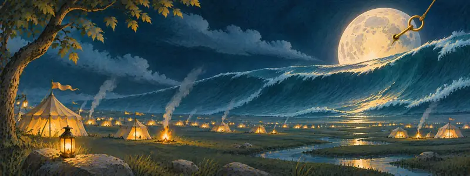 11 · La dernière nuit, le camp ×18 | défautAu cœur de la nuit, au Carrefour, la Lune est si basse qu'elle masque la moitié du ciel. Le crochet tire. Demain, elle sera partie. Deux nouvelles arrivent en même temps. L'Huissier Krâmm traverse la plaine avec une enveloppe dorée : « Le chef de l'État cédant…Au cœur de la nuit, au Carrefour, la Lune est si basse qu'elle masque la moitié du ciel. Le crochet tire. Demain, elle sera partie.
Deux nouvelles arrivent en même temps. L'Huissier Krâmm traverse la plaine avec une enveloppe dorée : « Le chef de l'État cédant est convié à bord du Promontoire, pour constater le transfert. Une navette protocolaire l'attend. » Et le Conseil des Espèces a obtenu l'impossible : un grand miroir d'or, venu d'Aldébaran, qui permet de parler au Président d'Aldébaran lui-même, cette nuit, en sommet de crise.
Tout le monde se tourne vers toi. Il faut choisir.
Le sol tremble. La Terre penche déjà. Les mers ont trop bougé, les forêts ont trop poussé de travers. Quoi qu'on décide cette nuit, il sera difficile de tout rattraper.
Gontran se racle la gorge. Il va parler. Il parle toujours.
Personne ne parle à ta place. Xanthin attend. Tout le monde attend avec lui.
Personne ne parle à ta place, et personne ne t'entend. Tout le monde regarde le caillou.
Basile Grumeau, sur une pierre, lit l'invitation par-dessus l'épaule de Krâmm. Il met dix minutes. Il lève un bord. « Constater... le transfert ? Sans... état des lieux ? Ce n'est pas... dans les règles. »
Gaspard déplie un coin de la soie grise. Il regarde la Lune, puis le feu, puis toi.
Au loin, la mer monte. Elle monte vers la Lune comme jamais. Bartholomé la regarde, puis il te regarde, et il ne dit rien. |
gfi_som
Sommet par interprète | 11 · La dernière nuit, le camp ×18 | défautLe miroir d'or s'allume. Dedans, un très vieil Aldébaranien, fait de feuilles d'or si usées qu'elles sont presque transparentes : Son Excellence Aurélien Dorure, Président d'Aldébaran. Il s'incline devant un galet. Il n'a jamais vu de galet. « Monsieur le Prés…Le miroir d'or s'allume. Dedans, un très vieil Aldébaranien, fait de feuilles d'or si usées qu'elles sont presque transparentes : Son Excellence Aurélien Dorure, Président d'Aldébaran. Il s'incline devant un galet. Il n'a jamais vu de galet.
« Monsieur le Président de la Terre. Je vous écoute. »
Gontran te tient devant le miroir, et il ouvre la bouche avant que tu aies pensé quoi que ce soit.
Dans sa poche, Gontran tripote une phrase qu'il a apprise à Tamponville. Il meurt d'envie de la placer.
Gontran ouvre la bouche. Puis il te regarde, et il se souvient du feu, l'autre nuit, et du silence à deux. |
gfi_pro
Le Promontoire | 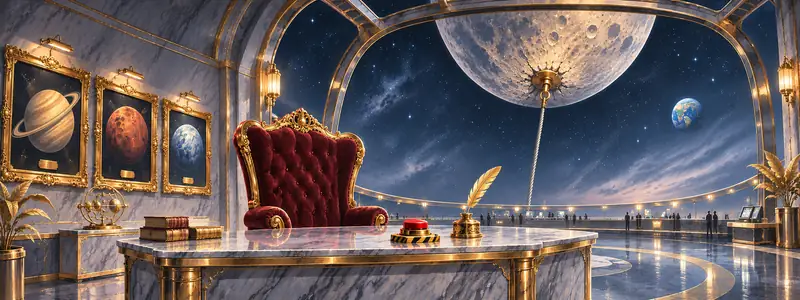 35-doux · Le bureau de Platine, avant l'alarme et après ×69 | La navette protocolaire monte jusqu'au Promontoire, le vaisseau-bureau de la Compagnie Foncière d'Aldébaran. On te porte dans un bureau immense, en marbre et en or, avec une baie vitrée sur la Lune. Au milieu, un grand bureau. Sur le bureau, un bouton rouge : …La navette protocolaire monte jusqu'au Promontoire, le vaisseau-bureau de la Compagnie Foncière d'Aldébaran. On te porte dans un bureau immense, en marbre et en or, avec une baie vitrée sur la Lune. Au milieu, un grand bureau. Sur le bureau, un bouton rouge : celui qui arrête les moteurs. Ils démarreront tout seuls à l'aube, si personne n'appuie.
Tu retombes sur le pont du Promontoire, le vaisseau-bureau de la Compagnie Foncière. Tu roules, tu rebondis, tu traverses une baie vitrée ouverte, et tu t'arrêtes sur un grand bureau de marbre, à côté d'un bouton rouge : celui qui arrête les moteurs. Ils démarreront tout seuls à l'aube, si personne n'appuie. Les autres te rejoignent par la navette, essoufflés.
Krâmm tient sous le bras le constat de la Lune. Il ne l'a pas encore montré à Platine. Il cherche le bon tiroir pour le lui annoncer. Il n'y en a pas.
Tu le reconnais avant qu'il parle : le monsieur gris du wagon-restaurant, qui regardait la Terre comme un inventaire.
C'est la silhouette de la longue-vue. De près, elle a l'air encore plus seule.
Derrière le bureau, un grand monsieur mince, fait de feuilles d'or si fines qu'elles laissent passer la lumière : Gédéon Platine. Il s'incline très bas devant toi.
« Monsieur le Président de la Terre. On m'a dit que vous n'aviez jamais rien dit de faux. Je n'ai jamais rencontré personne comme ça. »
Il te regarde avec une drôle d'envie. Il achète les belles choses pour qu'elles ne soient pas seules. Personne n'est plus seul qu'un galet qui n'a jamais menti. |
gfi_mar
La grande marée | 11 · La dernière nuit, le camp ×18 | défautBartholomé t'emporte jusqu'à la plage. La mer monte vers la Lune comme elle n'est jamais montée. Elle se dresse, elle tend les bras. Plus loin, une colonne d'eau tourbillonne jusqu'au ciel : la Trombe des Partis, là où la mer monte quand la Lune tire trop fort…Bartholomé t'emporte jusqu'à la plage. La mer monte vers la Lune comme elle n'est jamais montée. Elle se dresse, elle tend les bras. Plus loin, une colonne d'eau tourbillonne jusqu'au ciel : la Trombe des Partis, là où la mer monte quand la Lune tire trop fort.
Bartholomé te soupèse. « Article premier, hein ? La Terre est partout où tu reposes. Et tu ne peux pas céder un territoire sans ta signature, d'après le classeur. » Il rit. « Et toi, tu n'as jamais rien signé. Tu n'as pas de mains. »
« Un ricochet jusqu'à elle. T'es plus fou que moi, caillou. »
Xanthin se cramponne à ton flanc. Il n'aime pas le sel. Il vient quand même.
Gontran tend ton neveu à Bartholomé, du bout des doigts. Bartholomé le pose sur un rocher, face à la mer. « Lui, il garde la plage. »
Bartholomé prend aussi ton neveu, et le pose sur un rocher, face à la mer. « Lui, il garde la plage. » |
gfi_tel
Sommet par télépathie | 11 · La dernière nuit, le camp ×18 | défautLe miroir d'or s'allume. Dedans, un très vieil Aldébaranien, fait de feuilles d'or si usées qu'elles sont presque transparentes : Son Excellence Aurélien Dorure, Président d'Aldébaran. Il s'incline devant un galet. Il n'a jamais vu de galet. « Monsieur le Prés…Le miroir d'or s'allume. Dedans, un très vieil Aldébaranien, fait de feuilles d'or si usées qu'elles sont presque transparentes : Son Excellence Aurélien Dorure, Président d'Aldébaran. Il s'incline devant un galet. Il n'a jamais vu de galet.
« Monsieur le Président de la Terre. Je vous écoute. »
Personne ne parle à ta place. Xanthin, sur ton flanc, attend ta pensée pour la dire, mot après mot, lentement. Pour la première fois en huit cents ans, la Terre va entendre son Président.
Personne ne parle à ta place. La facette violette, contre ton flanc, attend ta pensée pour la chanter, à quarante pour cent. Pour la première fois en huit cents ans, la Terre va entendre son Président. À peu près.
Derrière le miroir, le sol tremble. Tout le monde sait qu'il est peut-être trop tard. Même les mots vrais arrivent parfois trop tard. |
gfi_sig
La signature | 11 · La dernière nuit, le camp ×18 | défautDerrière, Gontran annonce que le Président veut un autographe. Pour la première fois en quarante ans, personne ne l'écoute. Tout le monde regarde le lichen. L'Huissier Krâmm ouvre son dernier tiroir et en sort l'acte de vente original, que Pénélope Tampon avai…Derrière, Gontran annonce que le Président veut un autographe. Pour la première fois en quarante ans, personne ne l'écoute. Tout le monde regarde le lichen.
L'Huissier Krâmm ouvre son dernier tiroir et en sort l'acte de vente original, que Pénélope Tampon avait fini par rapporter à Monsieur Platine. Il le déplie sous la Lune.
L'Huissier Krâmm ouvre son dernier tiroir et en sort l'acte de vente original. Il l'a fait chercher aux archives, où Pénélope l'avait reposé. Il le déplie sous la Lune.
En bas, la signature du greffier. Une signature de lichen, qui pousse en faisant grandir le nom de son auteur. « Basile Gru... » Elle n'a pas poussé d'un millimètre depuis des jours. Quelque part, au bout de la Toile, un greffier pense très fort à autre chose.
Krâmm la regarde longtemps. Ses tiroirs grincent. « Article premier du Code foncier : on ne cède pas un territoire sans signature. Une signature qui ne finit pas... n'est pas une signature. » Il hésite. « Mais Monsieur Platine attend. Et je n'ai jamais rien empêché de partir. »
Il se souvient de la jetée, et de toi, et de l'article premier. Il te regarde, comme on regarde quelqu'un qui avait raison avant tout le monde. |
gmo_nav
La navette protocolaire | 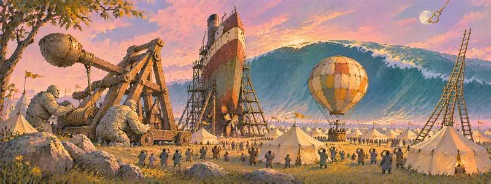 12 · L'heure de monter ×3 | La navette protocolaire descend du ciel, toute dorée, avec des fauteuils de velours et un steward qui ne parle que par formulaires. On te pose sur un fauteuil. Tu disparais dedans. L'Huissier Krâmm s'assoit en face, droit comme un classeur. Il a sorti un formu…La navette protocolaire descend du ciel, toute dorée, avec des fauteuils de velours et un steward qui ne parle que par formulaires. On te pose sur un fauteuil. Tu disparais dedans.
L'Huissier Krâmm s'assoit en face, droit comme un classeur. Il a sorti un formulaire tout neuf : « État des lieux préalable à la cession d'un satellite naturel ». Il n'a jamais servi. Il le défroisse avec respect.
Basile Grumeau est posé sur l'accoudoir, le tampon serré contre lui. Il a l'air de quelqu'un qui part en voyage d'affaires pour la première fois de sa vie, et qui pense très fort à autre chose. |
gmo_bal
Le ballon de 1803 | 12 · L'heure de monter ×3 | Au-dessus du feu du Carrefour, la soie grise se gonfle, lentement, comme quelqu'un qui reprend son souffle après deux siècles. Gaspard l'accroche à un panier à linge, faute de nacelle. On te pose au fond du panier. Gontran monte aussi. « On ne laisse pas parti…Au-dessus du feu du Carrefour, la soie grise se gonfle, lentement, comme quelqu'un qui reprend son souffle après deux siècles. Gaspard l'accroche à un panier à linge, faute de nacelle. On te pose au fond du panier.
Gontran monte aussi. « On ne laisse pas partir le Président sans son interprète ! » Il a le vertige. Il ne le dit à personne. Il le dit à tout le monde.
Xanthin se cramponne à ton flanc, les yeux fermés. Il n'a pas d'yeux. Il les ferme quand même.
Gaspard tient la corde. Il tremble. Il n'a pas tremblé depuis 1803. « Lâchez tout », dit-il. |
gfi_r16
Le miroir tremble | 11 · La dernière nuit, le camp ×18 | défautDans le miroir, les conseillers du Président Dorure se penchent les uns vers les autres et chuchotent : « L'article douze ? Qui connaît l'article douze ? » Dans le miroir, le Président Dorure fait signe à ses conseillers de préparer les annexes.…Dans le miroir, les conseillers du Président Dorure se penchent les uns vers les autres et chuchotent : « L'article douze ? Qui connaît l'article douze ? »
Dans le miroir, le Président Dorure fait signe à ses conseillers de préparer les annexes. |
end_17
Les marées en prime | 35-doux · Le bureau de Platine, avant l'alarme et après ×69 | Le Président Dorure prend des notes avec un enthousiasme poli. « Les marées ? En prime ? C'est très généreux de la part de la Terre. » Le transfert a lieu à l'aube. La Lune part, et elle emporte les marées avec elle, empaquetées, étiquetées, conformément au pr…Le Président Dorure prend des notes avec un enthousiasme poli. « Les marées ? En prime ? C'est très généreux de la part de la Terre. »
Le transfert a lieu à l'aube. La Lune part, et elle emporte les marées avec elle, empaquetées, étiquetées, conformément au protocole. La mer se couche comme une flaque et ne se relève plus.
Gontran explique à la foule que le Président est très satisfait de l'accord. La foule applaudit. Tu restes sur ton coussin. Tu penses très fort. Personne ne t'entend, comme avant, comme toujours.
Sauf Xanthin. Il a tout entendu. Il pousse sur toi, lentement, pour te couvrir un peu, comme on couvre quelqu'un qui a froid.
Bartholomé est retourné au Ressac Triste. Il n'y a plus de ressac. Il boit de l'eau douce, et il se dilue tant qu'un jour il n'en reste qu'une flaque, sur le comptoir, qu'on n'essuie pas.
Pénélope a tamponné l'annexe des marées. « APPROUVÉ. » Elle n'a pas pu s'en empêcher. C'est sa main.
Tante Mélusine n'a plus de lumière à tricoter. Elle défait ses écharpes une à une, pour retrouver la lumière qui est dedans.
Sur Aldébaran, on a construit des piscines à marées. C'est une exclusivité.
Les belles-de-nuit ne s'ouvriront plus. Anatole les arrose quand même, tous les soirs, en s'excusant auprès d'elles.
Dame Ondée pleut sur la mer couchée, chaque matin, pour qu'elle ait au moins ça.
Aux Côtes, ton neveu bouche toujours le petit trou de la digue. Il n'y a plus de mer à retenir. Il reste quand même. C'est de famille.
À Tamponville, Anselme remonte la pendule tous les soirs. Elle ralentit un peu plus chaque semaine. Lui aussi. |
gfi_r18
La réponse | 11 · La dernière nuit, le camp ×18 | défautLe Président Dorure ne bouge plus. Il a entendu. Il a tout entendu. Le Président Dorure s'excuse : il a mal compris. Il demande qu'on recommence depuis le début. Xanthin recommence. Ça va prendre du temps.…Le Président Dorure ne bouge plus. Il a entendu. Il a tout entendu.
Le Président Dorure s'excuse : il a mal compris. Il demande qu'on recommence depuis le début. Xanthin recommence. Ça va prendre du temps.
Le Président Dorure s'excuse : il a mal compris. Il demande qu'on recommence depuis le début. La facette recommence. Ça va prendre du temps. |
gfi_r20
Le vol | 11 · La dernière nuit, le camp ×18 | défautTu voles droit vers le front de Gédéon Platine. Tu voles, et puis tu tombes, plouf, dans une coupe de champagne.…Tu voles droit vers le front de Gédéon Platine.
Tu voles, et puis tu tombes, plouf, dans une coupe de champagne. |
gfi_ech
L'échange | 35-doux · Le bureau de Platine, avant l'alarme et après ×69 | Platine te sort de la coupe de champagne, délicatement, avec une serviette. Il t'essuie. Personne ne t'avait jamais essuyé. Il te pose sur le bureau, à côté du bouton. Platine te regarde longtemps. « Un président qui n'a jamais rien dit de faux. Le seul de l'u…Platine te sort de la coupe de champagne, délicatement, avec une serviette. Il t'essuie. Personne ne t'avait jamais essuyé. Il te pose sur le bureau, à côté du bouton.
Platine te regarde longtemps. « Un président qui n'a jamais rien dit de faux. Le seul de l'univers. » Sa voix tremble. « On m'a gardé dans un coffre, enfant, parce que j'étais trop précieux pour être dépensé. Je sais ce que c'est, d'être unique. »
Puis il dit, en riant à moitié, comme une plaisanterie qu'il n'ose pas faire : « Je vous échangerais bien contre la Lune. » Gontran, qui n'a rien compris, s'exclame aussitôt : « Le Président accepte ! » Platine cesse de rire. Il a l'air de quelqu'un à qui on vient de dire oui pour la première fois.
Au fond de la coupe, tu n'as pensé qu'une chose, et Xanthin, trempé de champagne, l'a répétée : « Prenez-moi à sa place. »
Au fond de la coupe, tu n'as pensé qu'une chose : « Prenez-moi à sa place. » Tu as blanchi si fort que le champagne en est devenu laiteux. Platine a compris.
Puis il dit, très bas : « La Lune contre vous. C'est d'accord. » Il a l'air de quelqu'un à qui on vient de faire un cadeau pour la première fois. |
gmo_saisie
Le deuxième constat | 35-doux · Le bureau de Platine, avant l'alarme et après ×69 | Basile Grumeau est posé sur le bureau de marbre, à côté de toi, à côté du bouton rouge. Il déplie un second formulaire. Il lève un bord vers Krâmm. « Article premier... de la Constitution... de la Terre. » Krâmm ferme les yeux. Il a compris avant Platine. Il a…Basile Grumeau est posé sur le bureau de marbre, à côté de toi, à côté du bouton rouge. Il déplie un second formulaire. Il lève un bord vers Krâmm. « Article premier... de la Constitution... de la Terre. »
Krâmm ferme les yeux. Il a compris avant Platine. Il a toujours tout compris avant Platine, c'est son métier.
« Le Président... repose... sur ce bureau. Ce bureau... est la Terre. Ce bureau... est dans ce vaisseau. Ce vaisseau... repose... sur ce bureau. Enfin... l'inverse. » Il met une minute à se corriger. « Ce vaisseau... est la Terre. »
Gédéon Platine sourit, aimable, sans comprendre. « Un lichen notaire ! Comme c'est charmant. Vous signerez bien quelque chose pour ma collection ? »
Par la baie vitrée, on voit le chantier de la Lune, arrêté. Les ouvriers sont assis dans la poussière. Personne ne travaille pour un patron qui a acheté au nom de quelqu'un sans mains. |
gfi_r22
Le dernier ricochet | 11 · La dernière nuit, le camp ×18 | défautTu montes. La mer monte avec toi. Devant toi, la Lune, énorme, toute blanche, qui t'attend sans le savoir. Tu montes, tu montes, mais pas du bon côté. Tu passes à côté de la Lune, et tu redescends vers quelque chose de doré.…Tu montes. La mer monte avec toi. Devant toi, la Lune, énorme, toute blanche, qui t'attend sans le savoir.
Tu montes, tu montes, mais pas du bon côté. Tu passes à côté de la Lune, et tu redescends vers quelque chose de doré. |
end_19
Vitesse géologique | 35-doux · Le bureau de Platine, avant l'alarme et après ×69 | Xanthin dit ta pensée, mot après mot, à la vitesse d'un lichen. Et ta pensée, c'est celle d'un galet : longue, solide, lente comme une montagne qui se forme. La facette chante ta pensée, note après note, à quarante pour cent. Et ta pensée, c'est celle d'un gal…Xanthin dit ta pensée, mot après mot, à la vitesse d'un lichen. Et ta pensée, c'est celle d'un galet : longue, solide, lente comme une montagne qui se forme.
La facette chante ta pensée, note après note, à quarante pour cent. Et ta pensée, c'est celle d'un galet : longue, solide, lente comme une montagne qui se forme.
Au bout d'une heure, le Président Dorure s'excuse : il a une autre réunion. Le miroir s'éteint au milieu de ta première phrase.
Tu n'avais pensé que quelques mots. Mais le Président Dorure a demandé qu'on reprenne depuis le début, puis qu'on développe, puis qu'on précise. Un galet qui précise, c'est un galet qui commence un discours. Le miroir s'éteint au milieu de ta première précision.
Le transfert a lieu à l'aube. La Lune part. Tu n'as pas fini.
Tu finis quand même. Xanthin dit ta pensée jusqu'au bout, pendant des années, à un miroir éteint posé sur la plaine.
Tu finis quand même. La facette chante ta pensée jusqu'au bout, pendant des années, contre un miroir éteint posé sur la plaine. On vient l'écouter, le dimanche. C'est le plus beau discours jamais prononcé sur la Terre. Personne ne l'entendra en entier. Il manque quelques siècles.
Bartholomé vient tous les dimanches. Il s'assoit devant le miroir éteint et il écoute. « Il parle bien, ton caillou. Lentement, mais il parle bien. »
Pénélope tape le discours à la machine, au fur et à mesure. Elle en est à la page deux mille. Il n'a pas encore dit « Mesdames et Messieurs » en entier.
Tante Mélusine tricote pendant le discours. L'écharpe fait le tour de la plaine. Elle dit que l'écharpe et le discours finiront en même temps.
C'est une fin triste, mais elle n'est pas encore finie. Un galet a le temps.
Dr Quartz a calculé que le discours finira dans six cent douze ans. Elle a tort six fois sur dix. Elle vient vérifier, tous les dimanches.
Anatole écoute le discours la nuit, pour les belles-de-nuit, qui ne s'ouvrent plus. Il leur en répète des morceaux. |
gfi_r23
Le dernier tiroir | 11 · La dernière nuit, le camp ×18 | défautKrâmm reste longtemps immobile. Ses tiroirs ne grincent plus. Il se souvient du caillou qui pâlissait à la fenêtre de sa cabine, l'autre soir, sur la jetée.…Krâmm reste longtemps immobile. Ses tiroirs ne grincent plus.
Il se souvient du caillou qui pâlissait à la fenêtre de sa cabine, l'autre soir, sur la jetée.
Krâmm replie l'acte. La navette protocolaire descend du ciel, et on t'emmène au Promontoire. |
gmo_01
La poussière blanche | 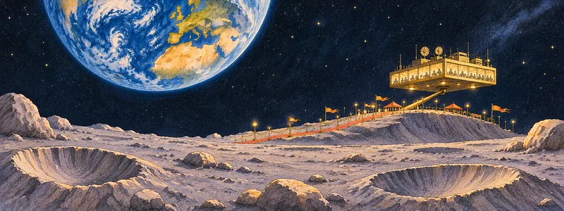 65 · Les fins sur la Lune ×4 | On te pose sur la Lune. Elle est blanche, grise, silencieuse. La poussière est fine comme de la farine, et froide. Au-dessus, la Terre, énorme, bleue, qui penche un peu. Tu ne l'avais jamais vue d'ici. Personne ne t'avait jamais posé sur autre chose que la Ter…On te pose sur la Lune.
Elle est blanche, grise, silencieuse. La poussière est fine comme de la farine, et froide. Au-dessus, la Terre, énorme, bleue, qui penche un peu. Tu ne l'avais jamais vue d'ici. Personne ne t'avait jamais posé sur autre chose que la Terre.
Sous toi, la Lune. Tu es une pierre. Elle est une pierre. Vous vous entendez. Elle pense, très lentement, des choses très douces et très tristes. Elle pense : « Je ne veux pas partir. »
Krâmm sort de la navette avec son formulaire et un mètre ruban. Il mesure un cratère. Il note. Il fait les choses dans l'ordre.
Le ballon dégonflé gît dans la poussière comme un drap. Gaspard marche autour, sans laisser de traces. Il a l'air de quelqu'un qui est enfin arrivé chez lui, sans savoir que c'était chez lui.
Au loin, au bord d'un cratère, le crochet doré, planté dans le flanc de la Lune, et la chaîne d'or qui monte vers le Promontoire.
Tu penses à Madame Basalte, la liftière du Cadastre, qui n'a jamais dépassé le toit. Tu as vu le dernier étage, pour elle. Il est blanc, et très calme. |
end_16
Article douze, alinéa trois | 35-doux · Le bureau de Platine, avant l'alarme et après ×69 | Le Président Dorure pâlit, ce qui chez un être en or donne un gris très chic. Il se tourne vers ses conseillers, qui se tournent vers leurs conseillers. Personne, à Aldébaran, ne connaît l'article douze. Tout le monde le craint. « Je... nous allons suspendre l…Le Président Dorure pâlit, ce qui chez un être en or donne un gris très chic. Il se tourne vers ses conseillers, qui se tournent vers leurs conseillers. Personne, à Aldébaran, ne connaît l'article douze. Tout le monde le craint.
« Je... nous allons suspendre la vente, par prudence, le temps d'étudier cet alinéa. » Il éteint le miroir.
Ils l'étudient encore. Personne ne trouve l'article douze, parce qu'il n'existe pas. Mais aucun juriste d'Aldébaran n'osera jamais l'écrire, de peur de ce qu'il contiendrait. La Lune reste, sous réserve.
Gontran est décoré de l'ordre du Mérite Terrestre pour son « intransigeance juridique ». Il ne sait toujours pas ce qu'il a dit. Toi non plus, d'ailleurs : tu avais pensé autre chose.
Tu avais pensé : « Elle ne veut pas partir. » C'était vrai. On a gagné avec un mensonge, que personne n'a dit exprès. La Lune ne le saura jamais. Ça vaut mieux.
Pénélope encadre une copie de l'enregistrement. Elle la regarde parfois, en riant toute seule.
Bartholomé lève son verre d'eau douce, chaque soir, « à l'alinéa trois ». Personne ne sait pourquoi. Il ne l'explique pas.
Tante Mélusine tricote, en lumière de Lune, le mot « ALINÉA » sur une écharpe, et la porte tout l'hiver.
Xanthin a tout entendu. Il sait ce que tu pensais vraiment. Il ne le répète à personne. C'est votre secret, à vous deux.
Le soir, à Tamponville, la pendule de la salle ronde était à l'heure. Anselme l'avait remontée tous les soirs. Il t'a frotté avec son chiffon, et il a dit : « Bonsoir, Monsieur le Président. Bien voyagé ? Moi non plus. »
Anatole est rentré à sa Serre. Les belles-de-nuit se sont rouvertes, sous réserve. Il le leur a dit.
Dr Quartz cherche l'article douze, statistiquement. Elle a trouvé quarante pour cent de chances qu'il existe. C'est beaucoup, pour elle. |
end_18
Une seule phrase | 35-doux · Le bureau de Platine, avant l'alarme et après ×69 | Le Président Dorure ne répond pas tout de suite. Il regarde le galet dans le miroir. Un galet qui a mis huit cents ans à dire quelque chose. Il comprend une chose qu'on lui a cachée : la Lune n'a jamais été à vendre, parce qu'on ne lui a jamais demandé. Et le …Le Président Dorure ne répond pas tout de suite. Il regarde le galet dans le miroir. Un galet qui a mis huit cents ans à dire quelque chose.
Il comprend une chose qu'on lui a cachée : la Lune n'a jamais été à vendre, parce qu'on ne lui a jamais demandé. Et le seul être de la Terre qui n'ait jamais menti vient de le lui dire.
« Je n'ai jamais rien entendu d'aussi vrai », dit-il. « Ni d'aussi court. » Il éteint le miroir. Une heure plus tard, à Aldébaran, la vente est annulée par décret, avec des excuses à la Lune, écrites à la main.
Le crochet se détache à l'aube. La Lune remonte un peu dans le ciel, à sa place.
On a gravé ta phrase sur le socle de ton coussin. Les enfants la lisent. Ils trouvent qu'un président qui dit une seule phrase en huit cents ans, c'est un bon président.
Xanthin l'a dite pour toi. Il n'en revient pas. Il pousse un peu plus vite depuis. Un millimètre par an, au lieu d'un demi. C'est sa façon de sauter de joie.
Gontran ne traduit plus. Il a demandé un congé. Il dit qu'il réfléchit. On ne l'avait jamais vu réfléchir. Ça lui va bien.
Bartholomé regarde la Lune revenue, chaque soir, du bout de la jetée. Il croit voir Perline qui lui fait signe. Il lui fait signe aussi.
Pénélope a reçu le décret d'annulation. Elle l'a tamponné avec un tampon qu'elle s'est fait faire exprès : « ENFIN ».
Tante Mélusine a retrouvé sa lumière. Elle tricote une écharpe longue comme une phrase courte, et elle te la donne.
Ce n'étaient pas tes mots : c'étaient ceux de la lettre bleue. Mais tu les pensais si fort, en même temps, que tu as blanchi tout entier dans le miroir. Le Président Dorure a cru que c'était toi qui écrivais. Ce n'était pas faux.
La facette violette du Dr Quartz est sous verre, au Carrefour, à côté de ton coussin. Elle vibre encore un peu, quand tu penses fort.
Sous la phrase, sur le socle, Xanthin a fait graver ton nom, comme promis : AMBROISE LENTIRIVE. Les enfants trouvent que c'est un beau nom, long, rond et lent.
À Tamponville, la pendule de la salle ronde était à l'heure. Anselme l'avait remontée tous les soirs. « Bonsoir, Monsieur le Président. Bien voyagé ? Moi non plus. »
Aux Côtes, la mer est revenue. Ton neveu bouche toujours le petit trou de la digue. Il la voit tous les jours. Il a vu du pays.
Anatole est rentré à sa Serre. Les belles-de-nuit se sont ouvertes la nuit même. Il le leur avait promis.
Écho passe parfois devant le socle et répète la phrase, très bas. C'est devenu un de ses mots. |
end_20
Le projectile | 35-doux · Le bureau de Platine, avant l'alarme et après ×69 | Tu traverses le bureau. Tu n'as jamais volé. C'est très bien, voler. Le vent passe sur tes deux faces. Tu frappes Gédéon Platine au milieu du front, là où les feuilles d'or sont les plus fines. Il fait « oh », très poliment, et il s'assoit par terre.…Tu traverses le bureau. Tu n'as jamais volé. C'est très bien, voler. Le vent passe sur tes deux faces.
Tu frappes Gédéon Platine au milieu du front, là où les feuilles d'or sont les plus fines. Il fait « oh », très poliment, et il s'assoit par terre.
Gontran se précipite pour s'excuser, s'incline trop bas, et s'appuie de tout son coude sur le bouton rouge. Les moteurs s'arrêtent. Il regarde son coude. « Le Président... le Président avait tout prévu », murmure-t-il. Tu n'avais rien prévu. Personne n'avait rien prévu.
Bartholomé s'approche du bureau. « C'est lequel, le bouton ? Le rouge ? Évidemment, le rouge. » Il appuie. Les moteurs s'arrêtent.
Le crochet se détache. La Lune remonte doucement à sa place, comme quelqu'un qui retourne s'asseoir après une mauvaise nouvelle qui n'a pas eu lieu.
Platine se réveille avec une bosse dorée. Il te ramasse, te rend à tes amis, et dit seulement : « Personne ne m'avait jamais frappé. On ne frappe pas les choses précieuses. Merci. »
Tu as un éclat en moins, sur le côté. On l'a retrouvé sous le bureau. Il est au musée du Carrefour, dans une vitrine, avec une étiquette : « Fragment présidentiel. Ne pas lancer. »
Xanthin, accroché à toi pendant le vol, ne s'en est pas remis. Il raconte le voyage à tous les lichens. Ça lui prend des années. Le vol a duré une seconde.
Pénélope a mis une bosse au bas de l'acte d'annulation, en guise de signature de Platine. Personne n'a protesté.
Tante Mélusine tricote un petit coussin pour la vitrine de l'éclat. « IL MÉRITE DU MOELLEUX, CET ÉCLAT. »
Ton neveu a tout vu, depuis la poche. Il a vu du pays.
Sous l'étiquette de la vitrine, quelqu'un a ajouté au crayon : « d'Ambroise Lentirive ». C'est Xanthin qui l'a dicté. Il avait promis.
Aux Côtes, la mer est revenue. Ton neveu bouche toujours le petit trou de la digue, et il a appris à ricocher, en pensée.
Anatole a tourné autour de la bosse dorée de Platine pendant une heure. Elle brillait trop. Il s'est excusé ensuite.
Dame Ondée a plu doucement sur le Promontoire, pour rafraîchir la bosse de Platine. Il l'a remerciée. Personne ne l'avait jamais remerciée d'avoir plu. |
end_21
Un président contre une Lune | 35-doux · Le bureau de Platine, avant l'alarme et après ×69 | La Lune reste. Toi, tu pars. Le Promontoire remonte vers Aldébaran avec un seul passager de valeur : un galet gris clair, sur le bureau de marbre de Gédéon Platine. Tu sers de presse-papiers. C'est un métier, après tout. On n'en a jamais fait d'autre, toi et t…La Lune reste. Toi, tu pars.
Le Promontoire remonte vers Aldébaran avec un seul passager de valeur : un galet gris clair, sur le bureau de marbre de Gédéon Platine. Tu sers de presse-papiers. C'est un métier, après tout. On n'en a jamais fait d'autre, toi et tes ancêtres : tenir les choses en place.
Sur Aldébaran, il n'y a pas de Lune dans le ciel. Il n'y en a jamais eu. C'est pour ça qu'ils en voulaient une.
Platine a posé à côté de toi la carte postale qui voyageait contre toi : la Lune, au-dessus d'une mer calme. « Tout va bien ici. Il fait beau. On pense à toi. » Le soir, tu la regardes. C'est la seule Lune d'Aldébaran.
Le soir, c'est Platine qui te regarde. Longtemps. Comme on regarde ce qu'on a choisi à la place de ce qu'on voulait. Il a l'air moins seul. Toi aussi, un peu.
Sur la Terre, ton neveu assure l'intérim, sur le coussin de velours. Il ne dit rien non plus. La continuité de l'État est assurée.
Gontran est resté sur Terre. Il traduit le silence de ton neveu. Il dit que le nouveau Président est encore plus profond que l'ancien.
Xanthin est parti avec toi. Il pousse sur toi, sur le bureau de marbre. Platine lui parle, le soir. Il lui répond, lentement. Il dit que c'est la première conversation de sa vie qui n'est pas pressée.
Bartholomé regarde la Lune revenue, chaque soir, et il lève son verre vers un point du ciel où l'on ne voit rien. « À toi, caillou. Tu ricochais bien. »
Pénélope est restée sur Aldébaran, au bureau de Platine. Elle t'époussette tous les matins. Elle te parle de la Terre.
Tante Mélusine a tricoté une écharpe de lumière de Lune, et l'a envoyée par la poste à Aldébaran, « POUR LE CAILLOU, QUI DOIT AVOIR FROID LÀ-BAS ».
Dans sa poche de poitrine, Platine garde le portrait du peintre. Il le sort, parfois, pour comparer. Il dit que l'original pense davantage.
Aux Côtes, la mer est revenue. Ton neveu bouche le petit trou de la digue, et il regarde la Lune revenue. Il ne sait pas que tu es plus loin qu'elle.
À Tamponville, Anselme remonte la pendule tous les soirs quand même. Il a promis de t'attendre. Il n'a pas dit combien de temps.
Anatole a donné une belle-de-nuit à Platine, pour ton bureau, sur Aldébaran. Elle ne s'ouvre pas : il n'y a pas de Lune là-bas. Elle attend.
Écho répète parfois ton silence, dans les grottes. C'est le seul son qu'elle ait gardé de toi. |
gmo_r33
Saisie | 35-doux · Le bureau de Platine, avant l'alarme et après ×69 | Le formulaire est fini. Basile pose son tampon. Krâmm contresigne, d'une main qui ne tremble pas. Pénélope pose le sien à côté : « APPROUVÉ ». Pour la première fois, elle sait ce qu'elle approuve.…Le formulaire est fini. Basile pose son tampon. Krâmm contresigne, d'une main qui ne tremble pas.
Pénélope pose le sien à côté : « APPROUVÉ ». Pour la première fois, elle sait ce qu'elle approuve.
C'est Écho qui a répété, de couloir en couloir, jusqu'aux cuisines.
Ce sont les ouvriers de la Lune, par la radio du chantier restée ouverte : depuis la bouteille, ils ont pris l'habitude de répéter les mots importants.
Le formulaire se finit tout seul, ou presque : Basile n'a qu'à écrire ce que tout le vaisseau répète. Son tampon. Krâmm contresigne.
Le formulaire reste inachevé. Platine se tourne vers toi, avec une drôle de douceur. « Vous êtes venu avec un notaire. Personne n'était jamais venu me voir avec un notaire. On venait avec des chèques. » |
end_22
Territoire présidentiel | 65 · Les fins sur la Lune ×4 | Le dernier ricochet te dépose sur la Lune, dans la poussière blanche, au bord d'un cratère. Tu t'arrêtes. Tu reposes. Article premier de la Constitution : la Terre s'étend partout où repose son Président.…Le dernier ricochet te dépose sur la Lune, dans la poussière blanche, au bord d'un cratère. Tu t'arrêtes. Tu reposes.
Article premier de la Constitution : la Terre s'étend partout où repose son Président.
À bord du Promontoire, toutes les alarmes sonnent. L'Huissier Krâmm ouvre ses tiroirs, un par un, et il pâlit à chaque tiroir. Article premier du Code foncier d'Aldébaran : on ne cède pas un territoire sans la signature de son chef d'État. Or la Lune, à la seconde où tu t'y es posé, est devenue la Terre. Et un galet n'a jamais rien signé.
« La vente est nulle », dit Krâmm à Platine, d'une voix qu'on ne lui connaissait pas. « On ne peut pas acheter un morceau de planète à quelqu'un qui n'a pas de mains. » Pour la première fois de sa vie, il ferme un dossier au lieu de l'ouvrir.
Le crochet se détache à l'aube. La Lune reste. Elle est un peu la Terre, maintenant. Elle ne le dira à personne.
Tu restes là-haut. Tu ne bouges pas. Elle ne bouge pas non plus, enfin, pas plus que d'habitude. Personne ne parle. Tout le monde est content.
Xanthin est venu avec toi. Il pousse sur toi, et un peu sur la Lune. Il dit que la Lune pense, elle aussi, très lentement, des choses très douces. Il ne dit pas lesquelles. Ce n'est pas à lui de les répéter.
Bartholomé est resté sur la plage. Chaque soir, il regarde la Lune et il sait que tu es là-haut, avec Perline, dans la poussière d'écume. « Deux cailloux qui ne disent rien. Ils doivent bien s'entendre. »
Ton neveu garde la plage, sur son rocher. Il assure l'intérim. Il regarde en l'air.
Gontran traduit ton silence depuis la plage, avec une longue-vue. « Le Président salue la Terre. Le Président a un peu froid. Le Président est heureux. » Pour une fois, c'est presque vrai.
Pénélope a tamponné l'annulation : « APPROUVÉ ». Pour la première fois, elle était d'accord avec son tampon.
Tante Mélusine t'a envoyé l'écharpe la plus longue du monde. Elle n'arrive pas jusqu'à toi. Elle arrive presque. C'est l'intention qui compte.
Avant de partir avec toi, Xanthin l'a dit à Bartholomé, sur la plage : ton nom. Bartholomé l'a crié vers la Lune, de toute sa voix de marée : « AMBROISE ! » Tu l'as entendu, là-haut.
Aux Côtes, la mer est revenue. Ton neveu bouche toujours le petit trou de la digue, et il regarde en l'air, vers toi.
À Tamponville, Anselme remonte la pendule tous les soirs, et il tourne ton coussin vide vers la fenêtre, côté Lune.
Les belles-de-nuit d'Anatole s'ouvrent toutes les nuits, et elles se tournent un peu vers le même endroit du ciel. Anatole dit que c'est toi.
Dame Ondée pleut sur la plage, doucement, les soirs où Bartholomé regarde la Lune, pour qu'il ne pleure pas seul. |
end_23
Basile Gru... | 35-doux · Le bureau de Platine, avant l'alarme et après ×69 | L'Huissier Krâmm referme l'acte de vente. Il le range, non pas dans le tiroir des choses qui partent, mais dans un tiroir qu'il n'avait jamais ouvert : celui des brouillons. « Acte inachevé », écrit-il dans son registre. « Signature en cours depuis l'aube du m…L'Huissier Krâmm referme l'acte de vente. Il le range, non pas dans le tiroir des choses qui partent, mais dans un tiroir qu'il n'avait jamais ouvert : celui des brouillons.
« Acte inachevé », écrit-il dans son registre. « Signature en cours depuis l'aube du monde. Vente sans objet. » Puis, plus bas, d'une écriture qu'on ne lui connaissait pas : « Ma fille sera contente. »
À bord du Promontoire, Gédéon Platine lit le rapport de son huissier. Il le relit. Il n'y a rien à contester : il faudrait une signature, et la signature ne finit pas. Le crochet se détache à l'aube. La Lune reste.
Quelque part au bout de la Toile, un greffier lichen pense à autre chose. Il pense aux formulaires C-12, aux trombones, à la couleur exacte de la rosée froide dans une tasse. Il y pense depuis des jours. Il y pensera toute sa vie, par précaution. Son nom s'est arrêté à « Basile Gru... ». Il ne poussera plus. C'est la plus belle signature qu'il ait jamais faite.
Xanthin a raconté l'histoire à toute la Toile. Tous les lichens de la Terre savent maintenant qu'un galet a pensé, qu'un cousin l'a répété, et qu'un autre cousin a pensé à autre chose. Chez les lichens, on appelle ça « la grande conversation ». Elle a duré trois jours. C'est la plus rapide de leur histoire.
Gontran a expliqué à la foule que le Président avait toujours eu un faible pour la paperasse. Pour une fois, il n'avait pas tout à fait tort.
Pénélope a fait encadrer la signature inachevée. Elle l'a accrochée au Cadastre, à côté de la lettre de la Lune. Les écoliers viennent la voir. Ils essaient de deviner la fin du nom.
Bartholomé est allé trouver le greffier, pour lui payer un verre d'eau douce. Ils ont parlé une heure. Bartholomé a dit trois phrases, le lichen une. C'était une bonne conversation.
Tante Mélusine a tricoté une écharpe au greffier, avec écrit dessus, en lumière de Lune : « MERCI DE NE PAS AVOIR FINI ».
Tu es retourné sur ton coussin de velours. Tu penses. Maintenant, quelqu'un t'écoute.
Xanthin a dit ton nom à la Toile, comme promis. Tous les lichens de la Terre le connaissent. Ils le répètent, lentement. Il faudra un siècle pour qu'il fasse le tour.
À Tamponville, la pendule était à l'heure. Anselme l'avait remontée tous les soirs. « Bonsoir, Monsieur le Président. Bien voyagé ? Moi non plus. »
Aux Côtes, la mer est revenue. Ton neveu bouche toujours le petit trou de la digue. Il a vu du pays.
Anatole est rentré à sa Serre. Les belles-de-nuit se sont ouvertes. Il le leur a dit, et il leur a parlé du greffier qui ne finit pas son nom.
Dr Quartz a mesuré la signature inachevée tous les jours pendant un mois. Croissance : zéro. Elle n'a jamais été aussi contente d'un résultat nul. |
gmo_02
Le chantier | 33 · Le chantier lunaire ×13 | défautPlus loin, dans un cratère, le chantier de la Compagnie Foncière. Des ouvriers d'Aldébaran posent des cloisons de verre pour des piscines. Leur contremaître, Bobinot, un petit être doré au casque trop grand, surveille avec un chronomètre. « Plus vite ! Le patr…Plus loin, dans un cratère, le chantier de la Compagnie Foncière. Des ouvriers d'Aldébaran posent des cloisons de verre pour des piscines. Leur contremaître, Bobinot, un petit être doré au casque trop grand, surveille avec un chronomètre. « Plus vite ! Le patron vient inspecter à l'aube ! La prime ! »
Il te voit. Il voit ceux qui te portent. « Visiteurs non autorisés ! Vigiles ! »
Deux vigiles dorés s'avancent dans la poussière.
Krâmm lève un doigt. « Visite d'état des lieux. Article quarante. » Les vigiles s'arrêtent net. On ne discute pas un article. |
end_33
Saisie conservatoire | 65 · Les fins sur la Lune ×4 | Krâmm lit le procès-verbal à voix haute, pour qu'il soit lu. « Article premier de la Constitution de la Terre : la Terre s'étend partout où repose son Président. Constaté sur la Lune, ce soir, par Maître Basile Grumeau, greffier. Constaté sur le bureau de Mons…Krâmm lit le procès-verbal à voix haute, pour qu'il soit lu.
« Article premier de la Constitution de la Terre : la Terre s'étend partout où repose son Président. Constaté sur la Lune, ce soir, par Maître Basile Grumeau, greffier. Constaté sur le bureau de Monsieur Gédéon Platine, ce soir, par le même. En conséquence, la Lune est la Terre. Le Promontoire est la Terre. »
Il tourne la page. « Article premier du Code foncier d'Aldébaran : on ne cède pas un territoire sans la signature de son chef d'État. Le chef d'État de la Terre n'a pas de mains. La vente est nulle. Les biens en cause, sur territoire terrestre, sont saisis à titre conservatoire, dans l'attente d'un jugement que personne ne rendra, parce qu'il n'y a pas de tribunal pour ça. »
Il tourne encore la page. Il hésite. « Article quatre de la Constitution de la Terre : toute personne qui se trouve sur la Terre sans autre patrie valable est citoyenne de la Terre. Le Promontoire étant la Terre, et Aldébaran ne reconnaissant pas la double nationalité... » Il lève les yeux vers Platine. « Monsieur, vous êtes citoyen de la Terre. »
Platine ouvre la bouche. « Mais je n'ai rien demandé ! » Krâmm hoche la tête. « Personne ne demande. C'est ce qui est bien, avec la Constitution. »
Krâmm appuie sur le bouton rouge, du bout d'un classeur, parce que c'est le règlement. Les moteurs s'arrêtent. Ils sont à la Terre, maintenant. La Terre n'en veut pas. Le crochet se détache. La Lune remonte doucement à sa place, avec un peu de poussière en moins, sur un mètre, en rond, là où un galet a reposé.
Le Promontoire reste en orbite, saisi, amarré à rien. On en fait une sorte de seconde Lune, toute petite, en marbre, qui brille un peu le soir. Les enfants du Carrefour l'appellent « le bureau ».
Gédéon Platine reçoit sa carte d'identité terrestre trois semaines plus tard, par la poste, avec un formulaire C-12 à remplir. Il le remplit. Il découvre qu'il a un pays. Il n'en avait jamais eu : il en avait acheté plusieurs. Aux élections suivantes, il vote. Pour le galet. Tout le monde vote pour le galet. Il ne s'est pas présenté.
Xanthin a raconté l'histoire à toute la Toile. Elle a mis un an à faire le tour du monde. À la fin, tous les lichens de la Terre savaient qu'un cousin avait saisi un vaisseau. Ils en sont très fiers. Basile fait semblant de ne pas l'être.
Gontran a demandé à Basile s'il pouvait être nommé à quelque chose. Basile a mis une heure à répondre. Il l'a nommé « citoyen ». Gontran a pleuré. C'est la première fois qu'on le nommait.
Gontran a lu le procès-verbal dans la Gazette. Il l'a relu. Il a écrit une lettre au Président, la première de sa vie qui ne parlait pas à sa place. Elle commence par « Je ne savais pas ».
Bartholomé a gardé un peu de la poussière de la Lune dans une boîte d'allumettes. Il dit que c'est Perline. Personne ne le contredit.
Pénélope a demandé la nationalité terrestre, elle aussi. Elle a rempli le formulaire elle-même. Elle s'est tamponnée « APPROUVÉ ».
Tante Mélusine a tricoté une écharpe pour Platine, en lumière de Lune. « TU ES DE LA FAMILLE, MAINTENANT. TU AURAS FROID COMME TOUT LE MONDE. »
Ton neveu a tout vu. Il en parle encore. Enfin, il n'en parle pas. Mais il y pense, et ça se voit.
Toi, on te ramène sur ton coussin de velours. Tu as encore de la poussière de Lune sur une face. Tu ne laisses personne l'essuyer.
Sur la carte d'identité terrestre de Platine, à la ligne « Président de la Terre », il y a ton nom. Xanthin l'a dicté à Basile, lettre par lettre : Ambroise Lentirive. C'est la première fois qu'il est écrit quelque part.
À Tamponville, la pendule de la salle ronde était à l'heure. Anselme t'a frotté avec son chiffon, et il a enlevé la poussière de Lune, par habitude. Puis il l'a remise, avec le bout du doigt, en s'excusant.
Aux Côtes, la mer est revenue. Ton neveu bouche toujours le petit trou de la digue. On dit qu'il a l'air d'un président, lui aussi.
Sur la Lune, l'enveloppe bleue est restée dans la poussière, jamais ouverte. La Lune l'a lue quand même.
Là où le fil de lumière est rentré dans la Lune, la poussière brille encore un peu, les nuits claires.
Anatole a planté une belle-de-nuit sur le toit du Promontoire. Elle s'ouvre tous les soirs. Platine vient la regarder.
Écho a répété l'article premier dans tout le Promontoire pendant une semaine. Les vigiles le savent par cœur. Ils le récitent en montant la garde, pour rien.
Dr Quartz a mesuré le Promontoire saisi. « Terre : cent pour cent. » C'est la première mesure de sa vie sans marge d'erreur. |
gmo_03
Ce que disent les ouvriers | 33 · Le chantier lunaire ×13 | défautLe mot de la bouteille tourne encore dans le cratère. Les ouvriers le répètent, à voix basse, pour voir l'effet que ça fait. C'était « non ». Sur tout le chantier, on dit « non » tout bas. Bobinot lâche son chronomètre.…Le mot de la bouteille tourne encore dans le cratère. Les ouvriers le répètent, à voix basse, pour voir l'effet que ça fait.
C'était « non ». Sur tout le chantier, on dit « non » tout bas. Bobinot lâche son chronomètre.
La facette chante toujours. Un vieil ouvrier s'agenouille et pose son oreille contre la poussière. Il se relève. « La nuit, quand les machines s'arrêtent, on l'entend pleurer. Bobinot dit que c'est le vent. Il n'y a pas de vent sur la Lune. »
Un jeune ouvrier s'approche, son casque à la main. Il regarde le caillou qu'on porte. « C'est vous, le Président de la Terre ? Le patron dit que vous avez signé. » |
gmo_04
Le constat | 34 · Le crochet dans la mer de la Tranquillité ×4 | On te pose au pied du crochet doré, dans la poussière, à l'endroit exact où la Lune est attachée. Basile Grumeau descend de ton flanc. Il pose son tampon dans la poussière. Il a apporté un formulaire, plié en seize, qu'il déplie en un quart d'heure. Il lève un…On te pose au pied du crochet doré, dans la poussière, à l'endroit exact où la Lune est attachée.
Basile Grumeau descend de ton flanc. Il pose son tampon dans la poussière. Il a apporté un formulaire, plié en seize, qu'il déplie en un quart d'heure. Il lève un bord vers toi. « Article premier... de la Constitution... de la Terre. » Une minute passe. « La Terre... s'étend... partout... où repose... son Président. » Une autre minute. « Vous... reposez... ici. »
Krâmm, debout derrière lui, a cessé de mesurer. Il ouvre la bouche. Il ouvre un tiroir. Il ne trouve rien à opposer. Un article est un article.
Tu es posé sur la Lune. Tu te souviens de l'article premier de la Constitution, qu'on lisait à ton élection, il y a huit cents ans : « La Terre s'étend partout où repose son Président. » Tu y es. Tu reposes. Mais personne ici n'est homme de loi. Personne ne peut l'écrire, ni le tamponner, ni le faire valoir. Ce que tu sais ne compte que si quelqu'un le constate.
Au-dessus, le Promontoire a vu le ballon. Une navette dorée descend vers vous, pour ramasser les intrus. |
gmo_05
Vers le Promontoire | 34 · Le crochet dans la mer de la Tranquillité ×4 | Krâmm range le constat dans un tiroir neuf, qu'il ouvre pour l'occasion. Il l'étiquette à la main : « Lune (Terre) ». Il regarde l'étiquette. Il la trouve juste. Ça l'effraie. Krâmm range le formulaire inachevé dans le tiroir des brouillons. Basile, sur ton fl…Krâmm range le constat dans un tiroir neuf, qu'il ouvre pour l'occasion. Il l'étiquette à la main : « Lune (Terre) ». Il regarde l'étiquette. Il la trouve juste. Ça l'effraie.
Krâmm range le formulaire inachevé dans le tiroir des brouillons. Basile, sur ton flanc, ne dit rien. Il pense aux trombones, de toutes ses forces, pour se punir.
La navette décolle et monte vers le Promontoire, au bout de la chaîne d'or. Derrière, la Lune rapetisse. Elle ne t'a pas lâché. Tu as encore de sa poussière sur toi. |
end_34
Le Président de la Lune | 65 · Les fins sur la Lune ×4 | Tu restes posé sur la Lune, dans la poussière blanche, au bord d'un cratère. Article premier de la Constitution : la Terre s'étend partout où repose son Président. Tu le sais. La Lune le sait aussi, maintenant : tu le lui as pensé. Mais personne ne l'a écrit. …Tu restes posé sur la Lune, dans la poussière blanche, au bord d'un cratère.
Article premier de la Constitution : la Terre s'étend partout où repose son Président. Tu le sais. La Lune le sait aussi, maintenant : tu le lui as pensé. Mais personne ne l'a écrit. Personne ne l'a constaté. Un article de loi qu'aucun homme de loi ne fait valoir, c'est une pensée, comme les autres. Et les pensées d'un galet, ça ne pèse rien, dans un registre.
À l'aube, les moteurs du Promontoire démarrent tout seuls, comme prévu. La chaîne d'or se tend. La Lune quitte sa place, lentement, et toi avec elle.
Tu ne bouges pas. Tu ne t'accroches pas. Tu n'as jamais eu besoin de t'accrocher : tu es lourd, et tu restes où l'on te pose.
La Terre rapetisse au-dessus de toi. Bleue, puis bille, puis point. Tu la regardes jusqu'au bout. Tu as été son Président huit cents ans, et tu ne l'avais jamais vue en entier. Elle est belle. Elle penche un peu. On ne te demandera plus ce que tu en penses.
Sur Aldébaran, on suspend la Lune dans un ciel qui n'en avait jamais eu. Au bord d'un cratère, il y a un caillou gris. Personne ne le remarque. Il est le Président d'une Lune qui ne sait pas qu'elle est la Terre. Il ne le dit à personne. Il ne l'a jamais dit.
Gaspard est resté avec toi. Il s'est assis au bord du cratère, et il s'est reposé, enfin. Un soir, il n'était plus là. Il avait fini son voyage.
Xanthin est resté sur toi. Il est le seul lichen d'Aldébaran. Il n'a plus de Toile. Il te parle, lentement. Tu lui réponds. Il dit que c'est la plus longue conversation de l'histoire des lichens, et qu'elle ne fait que commencer.
Bartholomé est rentré à la Terre par la navette des vigiles. Il regarde le ciel vide, le soir, et il lève son verre vers l'endroit où vous étiez, Perline et toi. « Deux cailloux qui ne disent rien. Ils doivent bien s'entendre, là-bas. »
Gontran est rentré aussi. Il a voulu traduire ton silence depuis la Terre, à la longue-vue. Il n'y avait plus rien à viser. Alors il s'est tu. Les gens disent qu'il ressemble à quelqu'un, quand il se tait.
Sur la Terre, ton neveu assure l'intérim, sur le coussin de velours. Il ne dit rien. Il regarde en l'air, là où il n'y a plus de Lune.
Les nuits sont noires, sur la Terre, maintenant. Les marées sont plates. Mais sur Aldébaran, au bord d'un cratère, il y a un petit bout de Terre, gris clair, posé là. Il pense à eux. Il pense lentement. Il a le temps.
L'enveloppe bleue est restée à côté de toi, dans la poussière. Elle part avec la Lune. La Lune l'a lue. Elle l'emporte.
Aux Côtes, ton neveu bouche toujours le petit trou de la digue. La mer ne remonte plus. Il garde la digue quand même, pour le jour où.
À Tamponville, Anselme remonte la pendule tous les soirs. Elle ralentit. Il dit qu'elle vous attend, à sa façon.
Anatole est rentré par la navette des vigiles. Les belles-de-nuit ne s'ouvrent plus. Il leur parle de toi, là-bas, au bord d'un cratère.
Dr Quartz est rentrée aussi. Elle a calculé où tu es, chaque soir, avec une erreur de six sur dix. Elle vise quand même, avec sa lunette. |
ply_01
La Lyre | 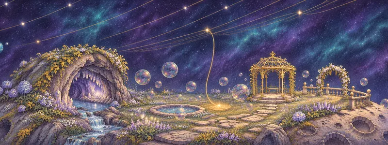 37 · La Lyre ×14 | Très loin d'ici, il y a un système d'étoiles qu'on appelle la Lyre. Entre ses étoiles sont tendues de longues cordes de lumière, et quand le vent stellaire passe, elles jouent une note. Toujours la même. Depuis toujours. Sur la plus petite planète de la Lyre, …Très loin d'ici, il y a un système d'étoiles qu'on appelle la Lyre. Entre ses étoiles sont tendues de longues cordes de lumière, et quand le vent stellaire passe, elles jouent une note. Toujours la même. Depuis toujours.
Sur la plus petite planète de la Lyre, il n'y a qu'une créature : toi. Une grosse limace-méduse grise, sans bras, avec trois yeux qui ne regardent jamais dans la même direction. Ailleurs dans la Lyre, on t'appellerait un Bullimaçon, s'il y avait quelqu'un pour t'appeler. Tu as mille deux cents ans. Tu dors à moitié, comme toujours, et tu écoutes la note.
Cette nuit, il y a autre chose sous la note. Une voix. Ronde, ensommeillée, immense, qui vient de très loin, et qui dit quelque chose que tu ne comprends pas.
Personne ne t'a jamais appelé. Tu ouvres un œil. Puis les deux autres, chacun dans sa direction. |
ply_02
Le bocal | 37 · La Lyre ×14 | Pour aller loin, il te faut ton bocal-scaphandre, rempli de ton air à toi. Tu ne l'as pas mis depuis quatre cents ans. Il est rangé tout en haut de la grotte, sur une corniche, sous quatre siècles de poussière d'étoile. Tu n'as pas de bras. Tu n'as jamais eu d…Pour aller loin, il te faut ton bocal-scaphandre, rempli de ton air à toi. Tu ne l'as pas mis depuis quatre cents ans. Il est rangé tout en haut de la grotte, sur une corniche, sous quatre siècles de poussière d'étoile.
Tu n'as pas de bras. Tu n'as jamais eu de bras. D'habitude, tu regardes les choses fort, et elles viennent. |
ply_02b
Les souvenirs de la grotte | 37 · La Lyre ×14 | Au fond de la grotte, tu gardes tes souvenirs. Il n'y en a pas beaucoup, pour mille deux cents ans. Ils flottent dans des bulles, comme les mots du jardin, mais en plus lourd : une étoile filante qui s'est excusée, la nuit des deux soleils, un caillou qui ress…Au fond de la grotte, tu gardes tes souvenirs. Il n'y en a pas beaucoup, pour mille deux cents ans. Ils flottent dans des bulles, comme les mots du jardin, mais en plus lourd : une étoile filante qui s'est excusée, la nuit des deux soleils, un caillou qui ressemblait à quelqu'un. Et beaucoup de mardis.
Tu ne pourras pas tout emporter. Ton bocal est petit. |
ply_03
La corde basse | 37 · La Lyre ×14 | Avant de partir, tu passes sous les cordes de la Lyre. Elles vibrent au-dessus de toi, si hautes qu'on ne voit pas où elles s'attachent. La plus basse s'est détachée de son étoile il y a très longtemps. Elle pend jusqu'au sol, et elle ne joue plus. Tu as toujo…Avant de partir, tu passes sous les cordes de la Lyre. Elles vibrent au-dessus de toi, si hautes qu'on ne voit pas où elles s'attachent.
La plus basse s'est détachée de son étoile il y a très longtemps. Elle pend jusqu'au sol, et elle ne joue plus. Tu as toujours voulu savoir ce que c'était, une note. Tu ne l'as jamais avalée. Ça ne se fait pas, chez toi, d'avaler la musique. |
ply_03b
Le jardin de bulles | 37 · La Lyre ×14 | Avant de partir, tu passes par ton jardin. C'est le seul jardin de la Lyre. Il n'y pousse que des bulles : toutes celles que tu as faites en mille deux cents ans, quand tu parlais tout seul. Elles flottent au ras du sol, chacune avec un mot dedans. Il y a beau…Avant de partir, tu passes par ton jardin. C'est le seul jardin de la Lyre. Il n'y pousse que des bulles : toutes celles que tu as faites en mille deux cents ans, quand tu parlais tout seul. Elles flottent au ras du sol, chacune avec un mot dedans. Il y a beaucoup de « Bon. Jour. » Il y a un seul « Pourquoi ? », très vieux, tout ridé. |
ply_04
La Comète-Facteur | 37 · La Lyre ×14 | Au moment où tu fermes ton bocal, une lumière passe, très vite, puis freine, puis recule. C'est une comète avec une sacoche en bandoulière et une casquette trop grande. Elle te regarde, essoufflée. « Pardon ! Je cherche la Lyre, troisième planète. Il y a quelq…Au moment où tu fermes ton bocal, une lumière passe, très vite, puis freine, puis recule. C'est une comète avec une sacoche en bandoulière et une casquette trop grande. Elle te regarde, essoufflée.
« Pardon ! Je cherche la Lyre, troisième planète. Il y a quelqu'un ? J'ai un prospectus. Je dois le livrer partout. » Elle te tend un papier doré : « GÉDÉON PLATINE, PROMOTEUR. VOTRE PLANÈTE VAUT DE L'OR. ESTIMATION GRATUITE. »
« Je m'appelle Bertille. Je fais tout le ciel. Je vais vite. Je ne lis jamais ce que je livre. » |
ply_04b
Une dernière question | 37 · La Lyre ×14 | Bertille a déjà fait demi-tour. Elle revient, en marche arrière, ce que les comètes détestent. « J'ai oublié de vous demander. Vous voulez que je prévienne quelqu'un ? Que vous partez ? Je fais aussi les avis de départ. »…Bertille a déjà fait demi-tour. Elle revient, en marche arrière, ce que les comètes détestent.
« J'ai oublié de vous demander. Vous voulez que je prévienne quelqu'un ? Que vous partez ? Je fais aussi les avis de départ. »
Tu réfléchis. Il n'y a personne à prévenir. Il n'y a jamais eu personne. |
ply_05
Prendre de l'élan | 37 · La Lyre ×14 | Bertille repart vers la planète bleue. Tu as une direction. Tu n'en as jamais eu. Bertille repart. Tu ne sais pas où elle va. Tu ne sais pas où tu vas non plus.…Bertille repart vers la planète bleue. Tu as une direction. Tu n'en as jamais eu.
Bertille repart. Tu ne sais pas où elle va. Tu ne sais pas où tu vas non plus.
_Tu es un prospectus. On t'a imprimé à un milliard d'exemplaires. Tu dis la même chose à tout le monde : que tout s'achète. Personne ne te lit jusqu'au bout. Au bout, en tout petit, il y a écrit : « Offre non remboursable. »_
Tu le recraches. Tu ne comprends pas tout. Tu comprends qu'il existe quelqu'un, quelque part, qui achète des planètes.
Il faut maintenant faire ce que tu ne sais plus faire : te téléporter exprès. Tes pouvoirs t'échappent depuis quelques siècles. Ils marchent quand ils veulent. |
ply_05b
La nébuleuse qui sent la menthe | 37 · La Lyre ×14 | provisoirePop. Tu arrives au milieu d'un nuage immense, vert pâle, qui sent la menthe. Tout est frais. Tes trois yeux pleurent un peu. Au milieu de la nébuleuse, une vieille étoile toute petite tricote des nuages avec ses rayons. Elle te voit. « Un voyageur ! Il n'en pa…Pop. Tu arrives au milieu d'un nuage immense, vert pâle, qui sent la menthe. Tout est frais. Tes trois yeux pleurent un peu.
Au milieu de la nébuleuse, une vieille étoile toute petite tricote des nuages avec ses rayons. Elle te voit. « Un voyageur ! Il n'en passe plus. Tout le monde va voir la planète bleue, en ce moment. Il paraît qu'on y vend quelque chose. » |
ply_06
La douane des étoiles | 37 · La Lyre ×14 | provisoirePop. Un astéroïde gros comme une grange. Dessus, une guérite, une barrière rayée et un panneau : « DERNIÈRE DOUANE AVANT LE SYSTÈME SOLAIRE. TOUT OBJET DOIT ÊTRE DÉCLARÉ. » Dans la guérite, un douanier en uniforme, très sérieux, qui a quatre bras et un tampon …Pop. Un astéroïde gros comme une grange. Dessus, une guérite, une barrière rayée et un panneau : « DERNIÈRE DOUANE AVANT LE SYSTÈME SOLAIRE. TOUT OBJET DOIT ÊTRE DÉCLARÉ. »
Dans la guérite, un douanier en uniforme, très sérieux, qui a quatre bras et un tampon dans chaque main. Il te regarde. Il regarde ton bocal.
« Nom. Espèce. Motif du voyage. Objets à déclarer. » |
ply_06b
Les cailloux qui se disputent | 37 · La Lyre ×14 | provisoirePop. Tu arrives au milieu d'un nuage de cailloux. Des milliers. Ils tournent les uns autour des autres en se criant dessus. Chacun dit qu'il est le plus gros. Ça dure depuis la formation du système. Le plus gros des cailloux, qui est le plus petit, te voit. « …Pop. Tu arrives au milieu d'un nuage de cailloux. Des milliers. Ils tournent les uns autour des autres en se criant dessus. Chacun dit qu'il est le plus gros. Ça dure depuis la formation du système.
Le plus gros des cailloux, qui est le plus petit, te voit. « Un arbitre ! Enfin ! Dites-leur que c'est moi ! » |
ply_07
Pop, pop, pop | 37 · La Lyre ×14 | provisoireTu fais encore trois nuits de pop. Après la menthe et les cailloux, tu croises une étoile naine qui te demande l'heure, une comète qui ne s'arrête pas, un banc de poussière qui chante en canon. La voix revient, chaque nuit, un peu plus proche. Elle dit toujour…Tu fais encore trois nuits de pop. Après la menthe et les cailloux, tu croises une étoile naine qui te demande l'heure, une comète qui ne s'arrête pas, un banc de poussière qui chante en canon.
La voix revient, chaque nuit, un peu plus proche. Elle dit toujours la même phrase, en dormant. Tu ne comprends toujours que la musique, pas les mots.
La corde, autour de ton bocal, vibre un peu quand la voix parle. Comme si elle reconnaissait quelque chose.
Au loin, une planète bleue. Et, accrochée au-dessus d'elle, une lune. |
ply_07b
La planète bleue | 32 · La montée, la Terre vue d'en haut ×7 | Au dernier pop, tu ne tombes pas tout de suite. Tu flottes un moment au-dessus d'une planète bleue, avec des nuages qui tournent dessus comme du lait dans un bol. À côté d'elle, une lune. Grise, ronde, endormie. Plantée dans sa joue, un grand crochet d'or, ave…Au dernier pop, tu ne tombes pas tout de suite. Tu flottes un moment au-dessus d'une planète bleue, avec des nuages qui tournent dessus comme du lait dans un bol.
À côté d'elle, une lune. Grise, ronde, endormie. Plantée dans sa joue, un grand crochet d'or, avec des lumières tout autour. La voix ronde vient de là. Tu en es sûr, maintenant. Elle est toute proche. Elle ne sait pas que tu arrives. |
plu_01
Pop | 09 · Le Carrefour des Espèces ×55 | défautPop. C'est le dernier. Tu es au milieu d'une foule immense, sur une plaine pleine de tentes, sur la planète bleue. Des milliers de créatures regardent vers une tribune. Personne ne te regarde. Tu es transparent. Ça t'arrive. Tu ne sais pas quand ça s'arrête. S…Pop. C'est le dernier. Tu es au milieu d'une foule immense, sur une plaine pleine de tentes, sur la planète bleue. Des milliers de créatures regardent vers une tribune. Personne ne te regarde. Tu es transparent. Ça t'arrive. Tu ne sais pas quand ça s'arrête.
Sur la tribune, sur un coussin de velours, il y a un petit caillou gris clair. Tout le monde le regarde avec respect. À côté, un monsieur en sueur parle très fort à sa place.
Au-dessus de la plaine, la Lune pend à un crochet d'or. |
plu_02
Visible | 09 · Le Carrefour des Espèces ×55 | défautEt puis ta transparence s'arrête, d'un coup, comme une lumière qu'on rallume. Au milieu de la foule, il y a maintenant une grosse limace grise avec un bocal sur la tête. Les gens s'écartent. Un enfant Lichenaute te montre du doigt, très lentement. Un murmure c…Et puis ta transparence s'arrête, d'un coup, comme une lumière qu'on rallume. Au milieu de la foule, il y a maintenant une grosse limace grise avec un bocal sur la tête. Les gens s'écartent. Un enfant Lichenaute te montre du doigt, très lentement.
Un murmure court : « C'est le Président qui l'a fait venir. Il s'est envolé, et après, l'autre est apparu. »
Une cloche sonne. Des délégués de toutes les espèces descendent de la tribune et s'approchent de toi avec beaucoup de précautions. Le plus vieux, un Horloger en laiton, te tend la main. Tu n'as pas de main. Il serre ton bocal.
« L'enquêteur ! Celui qu'on a demandé aux étoiles ! Vous êtes venu ! » |
plu_03
Le Conseil des Espèces | 09 · Le Carrefour des Espèces ×55 | défautOn t'installe sous la grande tente du Conseil. On t'explique tout, très vite, en parlant fort, comme à quelqu'un qui vient de loin. La Lune a été vendue. Un promoteur d'Aldébaran, Gédéon Platine, l'a achetée à un guichet. Il l'a accrochée à un crochet d'or. De…On t'installe sous la grande tente du Conseil. On t'explique tout, très vite, en parlant fort, comme à quelqu'un qui vient de loin.
La Lune a été vendue. Un promoteur d'Aldébaran, Gédéon Platine, l'a achetée à un guichet. Il l'a accrochée à un crochet d'or. Demain à l'aube, ses moteurs démarreront, et la Lune partira pour toujours. Depuis, les marées se trompent, les rêves s'effritent, et la Terre penche.
« Allez voir les régions, Monsieur l'enquêteur. Comprenez ce qui se passe. Revenez nous dire quoi faire. »
Tu ne sais pas ce qu'est un promoteur. Tu ne sais pas ce qu'est un guichet. Mais tu regardes la Lune, au bout de son crochet, et tu repenses à la voix ronde et ensommeillée. Elle venait peut-être de par ici.
En passant, le monsieur en sueur te fait un clin d'œil. Un délégué te souffle son nom : Maître Gontran Verbiage, l'interprète du Président. « Le Président vous remercie pour le spectacle. » Le caillou, sur son coussin, ne dit rien.
En passant, le monsieur en sueur s'incline devant toi, le caillou sur son coussin. « Maître Gontran Verbiage, interprète. Le Président vous souhaite la bienvenue. » Le caillou ne dit rien. Il a l'air de le penser quand même. |
plu_03b
Le laissez-passer | 09 · Le Carrefour des Espèces ×55 | défautAu moment où tu sors de la tente, quelqu'un te rattrape en faisant tic-tac. C'est le vieil Horloger en laiton, essoufflé, si on peut dire d'une horloge. « Monsieur l'enquêteur ! Votre laissez-passer du Conseil ! Sans lui, personne ne vous ouvrira rien. Avec lu…Au moment où tu sors de la tente, quelqu'un te rattrape en faisant tic-tac. C'est le vieil Horloger en laiton, essoufflé, si on peut dire d'une horloge.
« Monsieur l'enquêteur ! Votre laissez-passer du Conseil ! Sans lui, personne ne vous ouvrira rien. Avec lui, personne non plus, mais au moins ce sera officiel. »
Il te tend un papier avec beaucoup de tampons. Il te regarde, inquiet. « Vous n'avez pas de poche. » |
plu_03c
Le tableau des disparus | 09 · Le Carrefour des Espèces ×55 | défautAu milieu du Carrefour, un grand tableau de liège est couvert de petits papiers. « CHERCHE MA MARÉE, PARTIE MARDI. » « PERDU : UN RÊVE, BLEU, AVEC UN CHEVAL. » « QUELQU'UN A VU MON OMBRE ? » Des créatures de toutes les espèces lisent, en silence, et ajoutent d…Au milieu du Carrefour, un grand tableau de liège est couvert de petits papiers. « CHERCHE MA MARÉE, PARTIE MARDI. » « PERDU : UN RÊVE, BLEU, AVEC UN CHEVAL. » « QUELQU'UN A VU MON OMBRE ? » Des créatures de toutes les espèces lisent, en silence, et ajoutent des papiers.
Tout en haut, quelqu'un a punaisé un dessin de la Lune, avec écrit dessous : « DISPARUE BIENTÔT. » |
plu_lp
Être un laissez-passer | 09 · Le Carrefour des Espèces ×55 | défaut_Tu es un laissez-passer. Tu dis qu'on a le droit. Personne ne t'a demandé si on avait le droit. Tu le dis quand même, avec tes tampons, et les portes te croient. Tu n'as jamais compris pourquoi les portes croient les papiers plutôt que les gens._ Tu le recrac…_Tu es un laissez-passer. Tu dis qu'on a le droit. Personne ne t'a demandé si on avait le droit. Tu le dis quand même, avec tes tampons, et les portes te croient. Tu n'as jamais compris pourquoi les portes croient les papiers plutôt que les gens._
Tu le recraches. Un peu humide. L'Horloger le reprend du bout des doigts, l'essuie, et le lit contre le jour. « Un tampon mouillé, c'est un tampon qui ment. Il ne vaut plus rien. » Il le garde, avec un soupir de tampons. |
plu_04
Les objets trouvés | 09 · Le Carrefour des Espèces ×55 | défautEn sortant de la tente du Conseil, tu tombes sur une file d'attente. Au bout, sous un parasol, une escargote énorme, avec des lunettes, tient un guichet : « OBJETS TROUVÉS DU CARREFOUR ». Derrière elle, des montagnes de choses. Des parapluies, des gants dépare…En sortant de la tente du Conseil, tu tombes sur une file d'attente. Au bout, sous un parasol, une escargote énorme, avec des lunettes, tient un guichet : « OBJETS TROUVÉS DU CARREFOUR ».
Derrière elle, des montagnes de choses. Des parapluies, des gants dépareillés, un piano, des dentiers, une marée en bouteille. Tout le monde perd tout depuis que la Lune est vendue.
L'escargote te regarde par-dessus ses lunettes. « Vous. Une limace grise avec un bocal. Vous êtes perdue ? Tout le monde est perdu. Je m'appelle Madame Colimaçonne. Je vous enregistre ? » |
plu_05
Les cuisines du camp | 09 · Le Carrefour des Espèces ×55 | défautPlus loin, sous une bâche, une grosse marmite fume. Une Ogresse végétarienne, haute comme une tente, fait de la soupe pour tous ceux qui sont venus au Carrefour. Elle n'arrive pas à suivre. Elle a deux bras, une louche, et quatre mille bouches à nourrir. « Mèr…Plus loin, sous une bâche, une grosse marmite fume. Une Ogresse végétarienne, haute comme une tente, fait de la soupe pour tous ceux qui sont venus au Carrefour. Elle n'arrive pas à suivre. Elle a deux bras, une louche, et quatre mille bouches à nourrir.
« Mère Fricassée. Soupe de comète, poireaux, un peu de queue d'étoile. Vous avez faim ? Vous avez des bras ? Non ? Dommage. » |
plu_parapluie
Être un parapluie | 09 · Le Carrefour des Espèces ×55 | défaut_Tu es un parapluie. On t'a acheté un jour de pluie, on t'a ouvert, on t'a tenu au-dessus de deux têtes qui riaient. Puis il a fait beau. On t'a posé contre une chaise, et on t'a oublié. Tu as attendu la pluie, longtemps, pour qu'on se souvienne de toi. Elle n…_Tu es un parapluie. On t'a acheté un jour de pluie, on t'a ouvert, on t'a tenu au-dessus de deux têtes qui riaient. Puis il a fait beau. On t'a posé contre une chaise, et on t'a oublié. Tu as attendu la pluie, longtemps, pour qu'on se souvienne de toi. Elle n'est pas venue. Elle ne vient plus, depuis que la Lune est vendue._
Tu le recraches. Tu comprends qu'ici, les objets attendent les gens. Chez toi, il n'y a pas d'objets. Il n'y a personne à attendre.
Madame Colimaçonne remet le parapluie sur la pile. « Ils sont tous comme ça. Ils espèrent. » |
plu_05b
La photo | 09 · Le Carrefour des Espèces ×55 | défautPrès de la tribune, Maître Gontran Verbiage t'attend, avec trois photographes et le petit caillou gris sur son coussin. « Monsieur l'enquêteur ! Le Président voudrait une photo avec vous. Pour les journaux. Le Président et l'étranger, main dans la main. » Il r…Près de la tribune, Maître Gontran Verbiage t'attend, avec trois photographes et le petit caillou gris sur son coussin. « Monsieur l'enquêteur ! Le Président voudrait une photo avec vous. Pour les journaux. Le Président et l'étranger, main dans la main. » Il regarde tes absences de mains. « Enfin. Côte à côte. »
Le caillou ne dit rien. Il a l'air de trouver ça long. |
plu_05c
Gontran, en privé | 09 · Le Carrefour des Espèces ×55 | défautAprès la photo, Gontran t'entraîne derrière la tribune. Il s'éponge le front. Il a l'air beaucoup moins sûr de lui, sans public. « Entre nous, Monsieur l'enquêteur. Vous croyez qu'il pense quelque chose ? » Il montre le caillou, sur son coussin. « Quarante ans…Après la photo, Gontran t'entraîne derrière la tribune. Il s'éponge le front. Il a l'air beaucoup moins sûr de lui, sans public.
« Entre nous, Monsieur l'enquêteur. Vous croyez qu'il pense quelque chose ? » Il montre le caillou, sur son coussin. « Quarante ans que je traduis. Je n'ai jamais rien entendu. Je fais de mon mieux. Je dis ce qu'un président dirait. » |
plu_06
L'enfant qui va lentement | 09 · Le Carrefour des Espèces ×55 | défautDepuis tout à l'heure, quelqu'un te suit. C'est l'enfant Lichenaute qui t'a montré du doigt sur la plaine. Il est vert, mousseux, et il va encore plus lentement que toi. Il a mis une heure à te rattraper. Il ouvre la bouche. Il te faut attendre longtemps la qu…Depuis tout à l'heure, quelqu'un te suit. C'est l'enfant Lichenaute qui t'a montré du doigt sur la plaine. Il est vert, mousseux, et il va encore plus lentement que toi. Il a mis une heure à te rattraper.
Il ouvre la bouche. Il te faut attendre longtemps la question. « Tu... viens... du... ciel ? » |
plu_06b
Les casques | 09 · Le Carrefour des Espèces ×55 | défautAu bout de l'allée, un marchand a monté un étal en catastrophe : « CASQUES ANTI-CHUTE DE LUNE. HOMOLOGUÉS. » Ce sont des passoires peintes en jaune. Il en a vendu trois cents depuis ce matin. « Elle ne va pas tomber », lui dit une cliente. « Elle va partir. » …Au bout de l'allée, un marchand a monté un étal en catastrophe : « CASQUES ANTI-CHUTE DE LUNE. HOMOLOGUÉS. » Ce sont des passoires peintes en jaune. Il en a vendu trois cents depuis ce matin.
« Elle ne va pas tomber », lui dit une cliente. « Elle va partir. » Le marchand hausse les épaules. « On ne sait jamais dans quel sens. » |
plu_06c
La poste du Carrefour | 09 · Le Carrefour des Espèces ×55 | défautDevant une tente marquée « POSTE », une comète en casquette trop grande attend, essoufflée, avec une sacoche pleine. C'est Bertille, la Comète-Facteur. Elle te reconnaît. « La troisième planète de la Lyre ! Vous êtes venu ! Vous voyez, je vous avais dit qu'on …Devant une tente marquée « POSTE », une comète en casquette trop grande attend, essoufflée, avec une sacoche pleine. C'est Bertille, la Comète-Facteur.
Elle te reconnaît. « La troisième planète de la Lyre ! Vous êtes venu ! Vous voyez, je vous avais dit qu'on parlait beaucoup d'elle. »
Elle te regarde de travers. « On s'est vus quelque part ? Je vois tout le monde. Je ne retiens personne. Je vais vite. »
« J'ai des lettres pour la Lune. Des milliers. Les gens lui écrivent. Mais je n'ai pas d'adresse. La Lune n'a jamais eu besoin d'adresse : elle était là. » |
plu_07
Le carrefour des routes | 09 · Le Carrefour des Espèces ×55 | défautAu centre du Carrefour, un poteau indicateur tout tordu, avec des flèches dans toutes les directions. Quelqu'un a ajouté une flèche à la craie, vers le haut : « LA LUNE (FERMÉ). » Le Conseil t'a dit d'aller voir les régions. Il y en a quatre. Tu as jusqu'au so…Au centre du Carrefour, un poteau indicateur tout tordu, avec des flèches dans toutes les directions. Quelqu'un a ajouté une flèche à la craie, vers le haut : « LA LUNE (FERMÉ). »
Le Conseil t'a dit d'aller voir les régions. Il y en a quatre. Tu as jusqu'au soir.
Tu repenses au petit caillou gris, qui tournait au-dessus de la tribune. Lui non plus n'a rien décidé. Vous avez ça en commun.
Ta gamelle de soupe tinte contre ton bocal à chaque mouvement. Ça fait une petite musique de voyage. |
pcm_01
Le Marché des Comètes | 30 · Le Marché des Comètes ×14 | défautUne vieille comète endormie, amarrée au sol par cent cordages. Sur son dos, un marché. On y vend des morceaux de ciel : des étoiles filantes, des aurores au mètre, des éclipses d'occasion. Ici, on paie en souvenirs. Tu en as mille deux cents ans. Le problème, …Une vieille comète endormie, amarrée au sol par cent cordages. Sur son dos, un marché. On y vend des morceaux de ciel : des étoiles filantes, des aurores au mètre, des éclipses d'occasion.
Ici, on paie en souvenirs. Tu en as mille deux cents ans. Le problème, c'est que tu ne te rappelles pas bien lesquels. Il y a surtout un mardi, très long, où il ne s'est rien passé.
Au-dessus de l'entrée, une banderole : « QUINZE HEURES : SOUVENIRS D'ENFANCE D'UN GRAND HOMME D'ALDÉBARAN. » |
pso_01
Le Dortoir des Voyageurs | 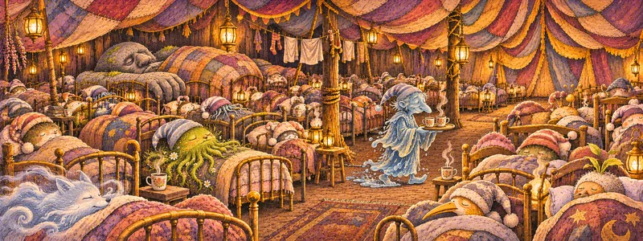 56 · Le Dortoir des Voyageurs ×10 | Pour aller au Pays des Songes, il faut s'endormir. Une vieille Somnambule distribue des tisanes et des bonnets de nuit sous une tente immense pleine de lits. Elle te regarde. Elle regarde ton bocal. « Vous, vous ne dormez jamais. Ça se voit. Ça fait combien de…Pour aller au Pays des Songes, il faut s'endormir. Une vieille Somnambule distribue des tisanes et des bonnets de nuit sous une tente immense pleine de lits.
Elle te regarde. Elle regarde ton bocal. « Vous, vous ne dormez jamais. Ça se voit. Ça fait combien de temps ? »
Tu comptes avec des bulles. Quatre cents ans. Elle soupire et te tend une tisane, et un bonnet, par principe. |
pct_01
Les Côtes Hagardes | 13 · Les Côtes Hagardes ×24 | défautIci, la mer ne sait plus où elle habite. D'un côté de la plage, elle est montée jusqu'aux toits ; de l'autre, elle a reculé si loin qu'on voit le fond, avec ses épaves étonnées. Tu aimes bien. Chez toi, sur la Lyre, il n'y a pas de mer. Il y a seulement des bu…Ici, la mer ne sait plus où elle habite. D'un côté de la plage, elle est montée jusqu'aux toits ; de l'autre, elle a reculé si loin qu'on voit le fond, avec ses épaves étonnées.
Tu aimes bien. Chez toi, sur la Lyre, il n'y a pas de mer. Il y a seulement des bulles.
Au bord d'une flaque, un vieux Marégrave fait d'eau de mer pêche dans quatre centimètres d'eau. Il n'attrape rien. Il boit de l'eau douce dans une gourde, pour se diluer. |
pha_01
Les Hauts-Nuages | 27 · Les Hauts-Nuages ×13 | défautPop. Tu atterris sur un nuage. Il est mou. Tu t'enfonces doucement, comme dans une soupe froide. Autour de toi, des nuages à perte de vue, mais plats, pâles, vidés. De longs tuyaux de cuivre plongent dedans et aspirent leur pluie avec un bruit de paille au fon…Pop. Tu atterris sur un nuage. Il est mou. Tu t'enfonces doucement, comme dans une soupe froide.
Autour de toi, des nuages à perte de vue, mais plats, pâles, vidés. De longs tuyaux de cuivre plongent dedans et aspirent leur pluie avec un bruit de paille au fond d'un verre. Les tuyaux montent jusqu'à une station de pompage, toute dorée. Sur ses citernes : « PLUIE EN BOUTEILLE. PROPRIÉTÉ G. PLATINE. NE PAS BOIRE. »
En bas, très loin, la Terre a soif. |
pcm_r1
| 30 · Le Marché des Comètes ×14 | défautTu reprends ton souffle derrière un étal de bouteilles. Tu sens venir le pop.…Tu reprends ton souffle derrière un étal de bouteilles.
Tu sens venir le pop. |
pcm_02
L'étal des échos | 30 · Le Marché des Comètes ×14 | défautUne vieille chauve-souris tient un étal de bouteilles. Dedans, des bruits : un rire de 1912, un orage, un « je t'aime » qu'on n'a jamais envoyé. « Échos des Grottes, véritables, mis en bouteille au fond de la terre. » Elle en pose une devant toi. Elle est enco…Une vieille chauve-souris tient un étal de bouteilles. Dedans, des bruits : un rire de 1912, un orage, un « je t'aime » qu'on n'a jamais envoyé. « Échos des Grottes, véritables, mis en bouteille au fond de la terre. »
Elle en pose une devant toi. Elle est encore fraîche. « Celle-là, je l'ai remplie la nuit dernière, quand la Lune est passée très bas au-dessus des Grottes. Elle répète une voix qui n'est pas d'ici. Très grosse voix. Très triste. » |
pso_r1
| 56 · Le Dortoir des Voyageurs ×10 | Tu tombes doucement, vers le haut. Dans ton sommeil, tu sens venir le pop.…Tu tombes doucement, vers le haut.
Dans ton sommeil, tu sens venir le pop. |
pso_avale
Être un bonnet de nuit | 56 · Le Dortoir des Voyageurs ×10 | _Tu es un bonnet de nuit. Tu es en flanelle, tu sens les cheveux, la tisane et le savon. Tu connais par cœur le chemin du sommeil : tu l'as pris toutes les nuits, sur des centaines de têtes. C'est un chemin facile. On descend, on lâche, on se laisse porter._ T…_Tu es un bonnet de nuit. Tu es en flanelle, tu sens les cheveux, la tisane et le savon. Tu connais par cœur le chemin du sommeil : tu l'as pris toutes les nuits, sur des centaines de têtes. C'est un chemin facile. On descend, on lâche, on se laisse porter._
Tu recraches le bonnet. Mais tu as appris le chemin. Tu le prends. Tu t'endors. |
pct_01b
Les crabes notaires | 13 · Les Côtes Hagardes ×24 | défautSur la plage, des crabes en lunettes font l'inventaire de la mer. Ils comptent les vagues, les coquillages, les bouteilles, et écrivent tout sur de longs rouleaux de papier mouillé. « Inventaire avant succession », explique le plus vieux, sans lever les pinces…Sur la plage, des crabes en lunettes font l'inventaire de la mer. Ils comptent les vagues, les coquillages, les bouteilles, et écrivent tout sur de longs rouleaux de papier mouillé.
« Inventaire avant succession », explique le plus vieux, sans lever les pinces. « Si la Lune part, la marée meurt. Il faut savoir qui hérite de quoi. Les coquillages iront au sable. Les vagues, on ne sait pas. » |
pha_r1
| 27 · Les Hauts-Nuages ×13 | défautTu avances au-dessus des nuages en flottant. Tu vois un petit nuage gris, tout seul, qui pleure sans pleuvoir. Tu traverses le nuage. Ton bocal fait des bulles affolées.…Tu avances au-dessus des nuages en flottant. Tu vois un petit nuage gris, tout seul, qui pleure sans pleuvoir.
Tu traverses le nuage. Ton bocal fait des bulles affolées. |
pha_02
Dame Ondée | 27 · Les Hauts-Nuages ×13 | défautLe petit nuage gris s'appelle Dame Ondée. Elle pleure, mais rien ne tombe : un tuyau de cuivre est planté dans son flanc et boit ses larmes avant qu'elles soient de la pluie. « Pardon de vous mouiller. Enfin, je ne vous mouille même plus. Ils prennent tout. Je…Le petit nuage gris s'appelle Dame Ondée. Elle pleure, mais rien ne tombe : un tuyau de cuivre est planté dans son flanc et boit ses larmes avant qu'elles soient de la pluie.
« Pardon de vous mouiller. Enfin, je ne vous mouille même plus. Ils prennent tout. Je connais toutes les mers par leur prénom. Elles ne me reconnaîtront plus. »
Elle te regarde mieux. « Vous venez d'où, avec votre bocal ? » |
plu_tele
Ailleurs | 09 · Le Carrefour des Espèces ×55 | défautTon bocal fait pop. Le monde se plie en quatre, comme une carte qu'on range mal. Tu n'as rien décidé. Tu ne décides jamais. Quand tu rouvres tes trois yeux, tu es revenu au Carrefour, la tête sous la bâche de Mère Fricassée. Tu n'as presque rien vu, là-bas. Il…Ton bocal fait pop. Le monde se plie en quatre, comme une carte qu'on range mal. Tu n'as rien décidé. Tu ne décides jamais.
Quand tu rouvres tes trois yeux, tu es revenu au Carrefour, la tête sous la bâche de Mère Fricassée. Tu n'as presque rien vu, là-bas. Il faudra y retourner.
Ceux qui t'accompagnent s'étaient accrochés à ton bocal. Ils arrivent avec toi, un peu froissés.
Ça fait trois fois. Tu sens que tes pouvoirs sont fatigués, eux aussi. Ils ne te feront plus ce coup-là aujourd'hui. |
pcm_02b
Le marchand d'aurores | 30 · Le Marché des Comètes ×14 | défautPlus loin, un grand Lapon d'étoiles déroule des aurores au mètre, vertes, roses, violettes. Elles ondulent sur son étal comme des rideaux dans le vent. Personne n'en achète. Les clients regardent la Lune. « Une aurore, ça ne se vend bien que quand on a envie d…Plus loin, un grand Lapon d'étoiles déroule des aurores au mètre, vertes, roses, violettes. Elles ondulent sur son étal comme des rideaux dans le vent. Personne n'en achète. Les clients regardent la Lune.
« Une aurore, ça ne se vend bien que quand on a envie de lever la tête. Aujourd'hui, ils lèvent la tête, mais pour pleurer. » |
pso_02
Le Pays des Songes | 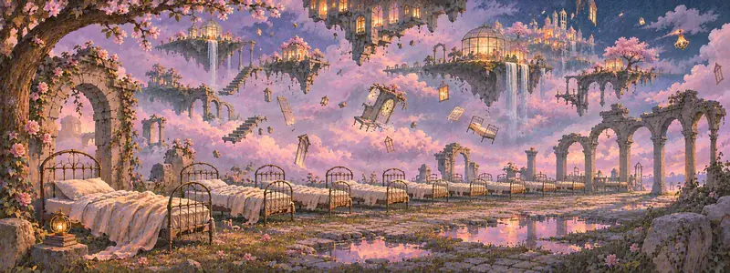 19 · Le Pays des Songes ×4 | Une ville immense, faite de tous les rêves de la Terre, sur des nuages de coton. Mais elle s'effrite. Des quartiers entiers tombent dans le vide. Là-haut, la Lune du rêve n'est plus qu'une virgule pâle. Dans ton rêve, tu as des bras. Tu ne sais pas quoi en fai…Une ville immense, faite de tous les rêves de la Terre, sur des nuages de coton. Mais elle s'effrite. Des quartiers entiers tombent dans le vide. Là-haut, la Lune du rêve n'est plus qu'une virgule pâle.
Dans ton rêve, tu as des bras. Tu ne sais pas quoi en faire. Tu les gardes le long du corps, par politesse.
Dans une ruelle, un brouillard argenté fredonne, très timidement. |
pct_02
Le phare de Grève-Molle | 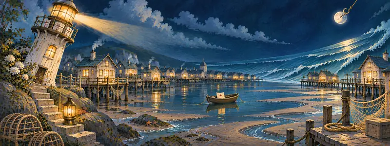 01 · Le phare de Grève-Molle ×10 | Le phare de Grève-Molle. En haut, une lumière. Et une silhouette d'eau salée, penchée sur une table, qui écrit. Bartholomé s'arrête au pied du phare. « Ondine. Elle écrit à la Lune depuis trente ans. Une lettre par marée. La Lune ne répond jamais. » Il boit un…Le phare de Grève-Molle. En haut, une lumière. Et une silhouette d'eau salée, penchée sur une table, qui écrit.
Bartholomé s'arrête au pied du phare. « Ondine. Elle écrit à la Lune depuis trente ans. Une lettre par marée. La Lune ne répond jamais. » Il boit une gorgée. « Moi, ma femme est partie avec la grande marée. Je ne lui écris pas. Ça revient au même. »
L'escalier est en colimaçon. Il est mouillé. Tu n'as pas de jambes. |
pha_02b
Les nuages plats | 27 · Les Hauts-Nuages ×13 | défautPour aller jusqu'à la station, il faut traverser un troupeau de nuages vidés. Ils sont plats comme des draps, transparents, et dorment par terre, les uns sur les autres. Ils n'ont plus la force de flotter. Dans ton dos, Dame Ondée, clouée par son tuyau, murmur…Pour aller jusqu'à la station, il faut traverser un troupeau de nuages vidés. Ils sont plats comme des draps, transparents, et dorment par terre, les uns sur les autres. Ils n'ont plus la force de flotter.
Dans ton dos, Dame Ondée, clouée par son tuyau, murmure leurs prénoms, un par un, de loin. |
pha_goutte
Être une goutte de pluie | 27 · Les Hauts-Nuages ×13 | défaut_Tu es une goutte de pluie. Tu as été une mer, avant. Puis tu es montée, très légère, et tu as été un nuage. Tu vas tomber. Tu ne sais pas où. Tu tomberas peut-être sur un champ, sur un toit, sur le front de quelqu'un qui lève la tête. C'est toujours toi. C'es…_Tu es une goutte de pluie. Tu as été une mer, avant. Puis tu es montée, très légère, et tu as été un nuage. Tu vas tomber. Tu ne sais pas où. Tu tomberas peut-être sur un champ, sur un toit, sur le front de quelqu'un qui lève la tête. C'est toujours toi. C'est toujours la même eau, depuis la première mer du monde, qui fait le tour et qui revient._
Tu la recraches dans ta bouche de bocal. Elle brille. Elle ne s'évapore pas.
Dame Ondée te regarde. « Gardez-la. C'est la dernière que j'aurai faite. Elle a de la mémoire. On ne sait jamais à qui une goutte peut servir. » |
plu_hub
Retour au Carrefour | 09 · Le Carrefour des Espèces ×55 | défautTu reviens au Carrefour des Espèces. Les tentes ont doublé. La Lune a l'air plus basse, ou plus fatiguée. Tu sais, maintenant, qui appelait. Tu la regardes autrement. Ce n'était pas un appel au secours. C'était quelqu'un qui parlait en dormant, et qui ne savai…Tu reviens au Carrefour des Espèces. Les tentes ont doublé. La Lune a l'air plus basse, ou plus fatiguée.
Tu sais, maintenant, qui appelait. Tu la regardes autrement. Ce n'était pas un appel au secours. C'était quelqu'un qui parlait en dormant, et qui ne savait pas qu'on l'entendait.
Tu ne sais toujours pas qui appelait. La voix ronde se tait. Tu as peur d'arriver trop tard pour quelque chose que tu ne connais pas.
Le Conseil te fait signe : il reste du temps pour une autre région. Pas beaucoup.
Le soir tombe. Le Conseil ne se réunit plus. Tout le monde regarde vers le haut.
Tu regardes ta petite troupe : un robot, un brouillard, un vieux pêcheur, un nuage. Sur la Lyre, tu étais tout seul. Tu n'avais jamais pensé que ça s'arrêterait. |
pcm_03
Sous le comptoir | 30 · Le Marché des Comètes ×14 | défautLa bouteille est dans ton bocal, contre ta joue. Elle murmure. Tu ne comprends pas ce qu'elle dit. Tu pourrais la goûter. La bouteille est de nouveau dans ton bocal. Elle murmure encore. Maintenant, tu comprends chaque mot.…La bouteille est dans ton bocal, contre ta joue. Elle murmure. Tu ne comprends pas ce qu'elle dit. Tu pourrais la goûter.
La bouteille est de nouveau dans ton bocal. Elle murmure encore. Maintenant, tu comprends chaque mot.
Sous le comptoir du stand d'information, quelque chose de doré tremble. Un tout petit robot, recroquevillé, murmure : « Pardon. Pardon. Je ne suis pas là. »
Plus loin, une tente dorée. Quinze heures sonnent sur une horloge de parquet. |
pso_02b
Le rêve qui tombe | 19 · Le Pays des Songes ×4 | défautDans la ville des rêves, au coin d'une rue, un rêve est en train de tomber en miettes. C'est un rêve d'enfant : un petit garçon qui vole au-dessus des toits. Les toits s'effritent. Le garçon commence à descendre, sans comprendre. Les passants regardent ailleur…Dans la ville des rêves, au coin d'une rue, un rêve est en train de tomber en miettes. C'est un rêve d'enfant : un petit garçon qui vole au-dessus des toits. Les toits s'effritent. Le garçon commence à descendre, sans comprendre.
Les passants regardent ailleurs. Ici, depuis que la Lune est vendue, les rêves tombent tout le temps. On s'habitue. |
pct_r1
| 01 · Le phare de Grève-Molle ×10 | Tu arrives en haut. Tu sens venir le pop.…Tu arrives en haut.
Tu sens venir le pop. |
pct_03
Ondine | 01 · Le phare de Grève-Molle ×10 | Ondine Salmigondis est faite d'eau de mer. Elle te regarde sans peur : les Marégraves ont vu pire. Autour d'elle, des milliers de lettres, toutes adressées « À la Lune ». « La Lune ne répond jamais », dit-elle. « Mais cette nuit, la mer m'a rapporté une de mes…Ondine Salmigondis est faite d'eau de mer. Elle te regarde sans peur : les Marégraves ont vu pire. Autour d'elle, des milliers de lettres, toutes adressées « À la Lune ».
« La Lune ne répond jamais », dit-elle. « Mais cette nuit, la mer m'a rapporté une de mes lettres. Mouillée. Au dos, il y a des traces rondes, comme des marées. Je ne sais pas les lire. Personne ne sait. »
Elle te montre la lettre. Tu as trois yeux. Aucun ne sait lire. Mais tu as une autre façon de comprendre les choses. |
pha_02c
Les grêlons | 27 · Les Hauts-Nuages ×13 | défautSur un petit nuage dur et blanc, une classe entière de grêlons attend la récréation. Ce sont des enfants, ronds et froids, qui ne demandent qu'à tomber. Mais depuis que les pompes aspirent tout, ils ne tombent plus. Ils rebondissent sur place, de plus en plus …Sur un petit nuage dur et blanc, une classe entière de grêlons attend la récréation. Ce sont des enfants, ronds et froids, qui ne demandent qu'à tomber. Mais depuis que les pompes aspirent tout, ils ne tombent plus. Ils rebondissent sur place, de plus en plus fort, en criant.
Leur maîtresse, une vieille giboulée, n'arrive plus à les tenir. |
pnu_00
Le feu des cuisines | 11 · La dernière nuit, le camp ×18 | défautLe soir, tout le Carrefour se serre autour des feux de Mère Fricassée. Personne ne mange. Tout le monde regarde vers le haut. La Lune pend au-dessus de la plaine, énorme, dorée par en dessous par les lumières du chantier. Ta gamelle est encore chaude. Mère Fri…Le soir, tout le Carrefour se serre autour des feux de Mère Fricassée. Personne ne mange. Tout le monde regarde vers le haut. La Lune pend au-dessus de la plaine, énorme, dorée par en dessous par les lumières du chantier.
Ta gamelle est encore chaude. Mère Fricassée avait raison : personne ne mange, le soir, ici.
Mère Fricassée te reconnaît à ta gamelle. Elle la remplit, sans un mot. Tu n'as pas faim. Tu la gardes au chaud contre toi. |
pcm_avale
Être une bouteille | 30 · Le Marché des Comètes ×14 | défaut_Tu es une bouteille. Tu es froide, en verre, avec un col étroit et du vide plein de voix. Les voix tournent en toi. Elles répètent la dernière chose qu'on a dite au fond des Grottes, la nuit dernière, quand la Lune est passée tout près de la mer. Une voix ron…_Tu es une bouteille. Tu es froide, en verre, avec un col étroit et du vide plein de voix. Les voix tournent en toi. Elles répètent la dernière chose qu'on a dite au fond des Grottes, la nuit dernière, quand la Lune est passée tout près de la mer. Une voix ronde, ensommeillée, immense : « Je ne veux pas partir. »_
Tu recraches la bouteille. Tu restes longtemps sans bouger.
Tu connais cette voix. C'est l'appel. Celui que tu as entendu, il y a trois nuits, à l'autre bout du ciel. Ce n'était pas un appel à l'aide. C'était la Lune, qui parlait en dormant. |
pcm_03b
Le bureau de change | 30 · Le Marché des Comètes ×14 | défautEntre deux étals, un bureau de change. Un petit monsieur en visière verte échange les souvenirs contre des pièces de ciel, et les pièces de ciel contre des souvenirs. Le cours change toutes les minutes. Sur un tableau noir : « Souvenir d'enfance : 12. Premier …Entre deux étals, un bureau de change. Un petit monsieur en visière verte échange les souvenirs contre des pièces de ciel, et les pièces de ciel contre des souvenirs. Le cours change toutes les minutes. Sur un tableau noir : « Souvenir d'enfance : 12. Premier amour : 40. Mardi : 0,01. »
« Vous avez l'air d'en avoir beaucoup, vous. Des vieux. Les vieux souvenirs, ça se vend bien, en ce moment. Tout le monde veut se rappeler comment c'était avant. » |
pso_02c
La bibliothèque des rêves oubliés | 19 · Le Pays des Songes ×4 | défautAu détour d'une rue du rêve, une bibliothèque sans murs. Des étagères à perte de vue, et sur les étagères, tous les rêves qu'on a oubliés au réveil. Ils sont rangés par ordre alphabétique de rêveur. Il y en a beaucoup. Presque tous. Une bibliothécaire en chemi…Au détour d'une rue du rêve, une bibliothèque sans murs. Des étagères à perte de vue, et sur les étagères, tous les rêves qu'on a oubliés au réveil. Ils sont rangés par ordre alphabétique de rêveur. Il y en a beaucoup. Presque tous.
Une bibliothécaire en chemise de nuit pousse un chariot. « Chut. Ils dorment. Enfin, ils sont oubliés, c'est pareil. » |
pct_lettre
| 01 · Le phare de Grève-Molle ×10 | Ondine range la lettre dans son sac. Tu avales la lettre, très délicatement.…Ondine range la lettre dans son sac.
Tu avales la lettre, très délicatement.
_Tu es une lettre. Tu as traversé la mer, la nuit, le ciel. Là-haut, quelqu'un t'a lue, dans son sommeil. Quelqu'un de rond, d'immense, de très fatigué. Elle t'a répondu au dos, avec la marée, en grosses lettres d'eau : « Je ne veux pas partir. »_
Tu recraches la lettre. Tu la rends à Ondine. Tu lui traduis, en bulles, mot par mot. |
pct_04
Une commission | 01 · Le phare de Grève-Molle ×10 | Ondine te raccompagne au bas du phare. « Si vous montez là-haut, dites-lui que j'ai bien reçu. Dites-lui que je continue. »…Ondine te raccompagne au bas du phare.
« Si vous montez là-haut, dites-lui que j'ai bien reçu. Dites-lui que je continue. »
« Si vous montez là-haut, dites-lui que j'écris toujours. Elle saura. »
Tu sais déjà qui appelait. Tu ne lui dis pas. Ça ne t'appartient pas. |
pha_03
La station de pompage | 28 · La station de pompage et la nacelle ×11 | La station est une grosse boule dorée posée sur les nuages, avec des tuyaux partout comme des cheveux. Ça pompe, ça siffle, ça glougloute. Devant la porte, un contremaître gonflable, en caoutchouc doré, se dandine dans le vent. Il compte les bouteilles. Il ne …La station est une grosse boule dorée posée sur les nuages, avec des tuyaux partout comme des cheveux. Ça pompe, ça siffle, ça glougloute.
Devant la porte, un contremaître gonflable, en caoutchouc doré, se dandine dans le vent. Il compte les bouteilles. Il ne lève jamais la tête.
Dame Ondée te regarde partir, de loin, en tremblant. Son tuyau l'empêche de te suivre. |
pnu_00b
Le crochet | 11 · La dernière nuit, le camp ×18 | défautD'ici, on voit le crochet d'or. Il est accroché à la Lune par une grosse vis plantée dans un cratère, et au ciel par rien du tout. Demain, à l'aube, les moteurs le tireront.…D'ici, on voit le crochet d'or. Il est accroché à la Lune par une grosse vis plantée dans un cratère, et au ciel par rien du tout. Demain, à l'aube, les moteurs le tireront. |
pcm_03c
La robote grise | 30 · Le Marché des Comètes ×14 | défautDevant la tente dorée, une robote grise attend, très droite, un tampon à la main, un carnet dans l'autre. Elle relit une liste. Elle a l'air de quelqu'un qui fait les courses pour un autre et qui a peur de se tromper. Elle te voit. Elle baisse les yeux vers to…Devant la tente dorée, une robote grise attend, très droite, un tampon à la main, un carnet dans l'autre. Elle relit une liste. Elle a l'air de quelqu'un qui fait les courses pour un autre et qui a peur de se tromper.
Elle te voit. Elle baisse les yeux vers ton bocal. « Vous venez pour la vente ? Moi aussi. Je n'achète rien pour moi. Je n'ai besoin de rien. » |
pso_03
Le Marchand de Sommeil | 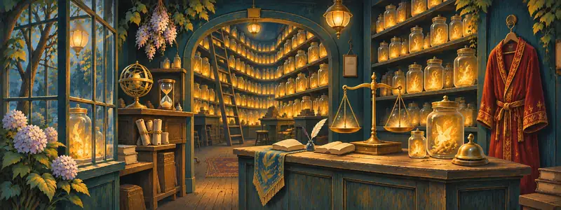 20 · La boutique du Marchand de Sommeil ×14 | Le Marchand de Sommeil. Grand, maigre, en robe de chambre de velours rouge, avec des yeux comme des boutons de pyjama. Il pèse des grammes de sommeil sur une balance dorée. Il te regarde. « Vous. Un client qui ne dort jamais. Le pire client de l'univers. » Il …Le Marchand de Sommeil. Grand, maigre, en robe de chambre de velours rouge, avec des yeux comme des boutons de pyjama. Il pèse des grammes de sommeil sur une balance dorée.
Il te regarde. « Vous. Un client qui ne dort jamais. Le pire client de l'univers. » Il pèse tes quatre cents ans de veille d'un coup d'œil. « Vous êtes ici par erreur, ou par curiosité ? »
Derrière lui, la porte de l'arrière-boutique est entrouverte. Des milliers de bocaux. Au fond, une étagère éclairée d'argent : « Rêves de la Lune ». Et dans un coin, tout seul, un bocal froid, plein de brume dorée. |
pct_04b
Les dunes qui chantent | 13 · Les Côtes Hagardes ×24 | Derrière le phare, des dunes de sable chantent quand le vent passe. D'habitude, elles chantent la marée. Ce soir, elles chantent faux. Elles ne savent plus quand la mer reviendra, alors elles chantent toutes les heures à la fois. Un vieux chameau des sables, a…Derrière le phare, des dunes de sable chantent quand le vent passe. D'habitude, elles chantent la marée. Ce soir, elles chantent faux. Elles ne savent plus quand la mer reviendra, alors elles chantent toutes les heures à la fois.
Un vieux chameau des sables, assis au sommet, se bouche les oreilles. « Trente ans que j'écoute ces dunes. Elles n'ont jamais chanté si mal. C'est la Lune. Elles l'attendent, et elle ne passe pas à l'heure. » |
pha_r2
| 28 · La station de pompage et la nacelle ×11 | À l'intérieur, des tuyaux, des cadrans, et au fond, un gros bouton rouge marqué « ARRÊT D'URGENCE ». Le contremaître se gonfle d'indignation et te barre la porte.…À l'intérieur, des tuyaux, des cadrans, et au fond, un gros bouton rouge marqué « ARRÊT D'URGENCE ».
Le contremaître se gonfle d'indignation et te barre la porte. |
pha_04
La pluie | 28 · La station de pompage et la nacelle ×11 | Les tuyaux se taisent. Dans le silence, on entend les nuages respirer. Puis un premier tuyau se détache, et un deuxième, et Dame Ondée, libérée, se secoue comme un chien mouillé. Une goutte tombe. Puis deux. Puis une pluie fine, tiède, vers la Terre. En bas, q…Les tuyaux se taisent. Dans le silence, on entend les nuages respirer. Puis un premier tuyau se détache, et un deuxième, et Dame Ondée, libérée, se secoue comme un chien mouillé.
Une goutte tombe. Puis deux. Puis une pluie fine, tiède, vers la Terre. En bas, quelque part, un champ desséché lève la tête.
Dame Ondée vient se poser tout contre ton bocal. « Je viens avec vous. Je veux l'entendre, moi aussi, la Lune, une dernière fois. Et je veux être là si elle se réveille. »
Dame Ondée te regarde de loin. Elle ne sait pas qui tu es. Elle pleut quand même, par reconnaissance, juste au-dessus de toi.
Le contremaître gonflable, trempé, se dégonfle doucement sur une citerne. |
pha_05
Le ballon de 1803 | 28 · La station de pompage et la nacelle ×11 | Le ballon est vieux. Sa toile est rapiécée avec des pages de journal de 1803. Dans la nacelle, un monsieur transparent, en redingote, regarde la Lune avec une longue patience. « Sire Gaspard Ombrelune, aéronaute. Parti de Lyon pour atteindre la Lune. Arrivé ju…Le ballon est vieux. Sa toile est rapiécée avec des pages de journal de 1803. Dans la nacelle, un monsieur transparent, en redingote, regarde la Lune avec une longue patience.
« Sire Gaspard Ombrelune, aéronaute. Parti de Lyon pour atteindre la Lune. Arrivé jusqu'ici. Pas plus loin. Je suis mort en chemin. Mais je n'ai pas renoncé. C'est une question de principe. »
Il montre la corde d'amarrage de son ballon. Elle est cassée depuis deux siècles. Le ballon tourne en rond dans le même nuage. « Il me faudrait une corde. Une vraie. Les cordes de 1803 ne tiennent plus. Les cordes d'aujourd'hui ne tiennent pas encore. » |
pnu_00c
Les veilleurs | 11 · La dernière nuit, le camp ×18 | défautPlus tard, quand les feux baissent, il ne reste que les veilleurs. Mère Fricassée remue une marmite vide, pour s'occuper les mains. Madame Colimaçonne a sorti un tricot, qu'elle avance d'une maille par heure. Le vieil Horloger fait tic-tac, tout bas, pour ne r…Plus tard, quand les feux baissent, il ne reste que les veilleurs. Mère Fricassée remue une marmite vide, pour s'occuper les mains. Madame Colimaçonne a sorti un tricot, qu'elle avance d'une maille par heure. Le vieil Horloger fait tic-tac, tout bas, pour ne réveiller personne.
« Vous montez, demain ? » demande Mère Fricassée. Tu fais une bulle qui dit oui. Elle hoche la tête. « Mangez avant. On ne sauve rien le ventre vide. » |
pcm_04
La vente aux enchères | 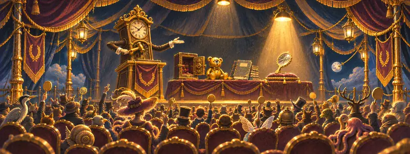 31 · La vente aux enchères ×6 | Un commissaire-priseur qui est une horloge de parquet frappe trois coups sur sa propre poitrine. « Souvenirs d'enfance d'un grand homme d'Aldébaran, vendus par sa famille, qui n'en voulait plus ! » Sur la table : un petit coffre tapissé de velours, un ours en …Un commissaire-priseur qui est une horloge de parquet frappe trois coups sur sa propre poitrine. « Souvenirs d'enfance d'un grand homme d'Aldébaran, vendus par sa famille, qui n'en voulait plus ! »
Sur la table : un petit coffre tapissé de velours, un ours en feuilles d'or qui a perdu un œil, des cahiers d'écolier, et un miroir d'enfant, rayé, en or. Il brille. Tu as très envie de savoir ce que c'est. C'est ta façon d'avoir envie des choses.
Au premier rang, une robote grise, avec un chignon en ressort et deux tampons à la place des mains, achète tout, lot après lot, sans cligner des yeux. Elle paie en souvenirs de bureau.
Tu sens tes bords qui picotent. Tu vas peut-être devenir transparent. Ou pas. Tu ne sais jamais. |
pso_r2
| 20 · La boutique du Marchand de Sommeil ×14 | Tu es dans l'arrière-boutique. Le Marchand, de l'autre côté de la porte, pèse toujours. Le Marchand croise les bras.…Tu es dans l'arrière-boutique. Le Marchand, de l'autre côté de la porte, pèse toujours.
Le Marchand croise les bras. |
pso_05
Un marché | 20 · La boutique du Marchand de Sommeil ×14 | « Dans les bocaux ? Des rêves. Je les récolte. La Lune en fait beaucoup, ces nuits-ci, et elle ne les garde pas. Ça se perdrait. » Il bâille. « Et dans le coin, le cauchemar de Monsieur Platine. Il le fait toutes les nuits depuis cinquante ans. Je l'ai mis en …« Dans les bocaux ? Des rêves. Je les récolte. La Lune en fait beaucoup, ces nuits-ci, et elle ne les garde pas. Ça se perdrait. » Il bâille. « Et dans le coin, le cauchemar de Monsieur Platine. Il le fait toutes les nuits depuis cinquante ans. Je l'ai mis en bocal pour qu'il dorme un peu. Il n'a pas dormi mieux. Il n'en veut plus, et moi non plus. »
Il te regarde. « Je vous en donne un. Un seul. Contre un souvenir. »
Tu n'as que le mardi. Il le prend quand même.
Tu pourrais lui donner la nuit des deux soleils, mais elle éclaire ton bocal. Tu lui donnes un mardi. Il le prend quand même.
« L'ennui, c'est mon meilleur produit. Ça fait dormir n'importe qui. » |
pct_05
L'épave étonnée | 13 · Les Côtes Hagardes ×24 | défautAu pied du phare, la mer a reculé si loin qu'un vieux bateau est resté posé sur le sable, droit, étonné, avec son linge encore sur le pont. Sur le mât, une mouette en casquette de capitaine regarde le ciel dans une longue-vue de laiton. « Capitaine Grisaille. …Au pied du phare, la mer a reculé si loin qu'un vieux bateau est resté posé sur le sable, droit, étonné, avec son linge encore sur le pont. Sur le mât, une mouette en casquette de capitaine regarde le ciel dans une longue-vue de laiton.
« Capitaine Grisaille. Je cherche la Lune. Elle se cache derrière les nuages, d'habitude. Cette fois, elle est derrière moi. Je le sais. Je ne me retourne pas. Je n'ai pas envie de la voir partir. » |
pha_04b
Les mers de Dame Ondée | 28 · La station de pompage et la nacelle ×11 | La pluie tombe toujours, fine, vers la Terre. Dame Ondée flotte au-dessus de toi, plus légère. « Vous savez, je connais toutes les mers par leur prénom. La Méditerranée s'appelle Rose. La mer du Nord s'appelle Gérard. Il est grognon. La petite mer derrière le …La pluie tombe toujours, fine, vers la Terre. Dame Ondée flotte au-dessus de toi, plus légère.
« Vous savez, je connais toutes les mers par leur prénom. La Méditerranée s'appelle Rose. La mer du Nord s'appelle Gérard. Il est grognon. La petite mer derrière le phare s'appelle Perle. C'est moi qui l'ai remplie, il y a dix mille ans. » Elle frissonne. « Si la Lune part, elles n'auront plus personne pour leur dire bonne nuit. » |
pha_05b
Les citernes | 28 · La station de pompage et la nacelle ×11 | Derrière la station, des milliers de bouteilles de pluie sont empilées en pyramide, prêtes à partir pour Aldébaran. Sur chaque étiquette : « PLUIE DE LA TERRE. ÉDITION LIMITÉE. » Les pompes sont arrêtées. Mais toute la pluie déjà prise est là, en bouteilles, b…Derrière la station, des milliers de bouteilles de pluie sont empilées en pyramide, prêtes à partir pour Aldébaran. Sur chaque étiquette : « PLUIE DE LA TERRE. ÉDITION LIMITÉE. »
Les pompes sont arrêtées. Mais toute la pluie déjà prise est là, en bouteilles, bouchée. |
pnu_00d
L'enfant, la nuit | 11 · La dernière nuit, le camp ×18 | défautAu milieu de la nuit, l'enfant Lichenaute arrive enfin au feu. Il est parti ce matin pour te rejoindre. Il s'assoit à côté de toi, très lentement, et met une heure à trouver la bonne position. Il regarde la Lune. Puis toi. Il ouvre la bouche. Tu attends.…Au milieu de la nuit, l'enfant Lichenaute arrive enfin au feu. Il est parti ce matin pour te rejoindre. Il s'assoit à côté de toi, très lentement, et met une heure à trouver la bonne position.
Il regarde la Lune. Puis toi. Il ouvre la bouche. Tu attends.
« Elle... a... vu... mon... dessin ? » Tu ne l'as pas encore donné. Tu l'as encore, dans ton bocal.
« Elle... est... belle... de... près ? » Il n'a pas de dessin à lui donner, ce soir. Il pose seulement sa question. |
pcm_r2
| 31 · La vente aux enchères ×6 | Tu ressors de la tente. Dans ton ventre, quelque chose de petit et de froid brille. Le commissaire-priseur te regarde. Puis il regarde la salle. Il a une idée.…Tu ressors de la tente. Dans ton ventre, quelque chose de petit et de froid brille.
Le commissaire-priseur te regarde. Puis il regarde la salle. Il a une idée. |
pcm_06
Une caisse de velours | 31 · La vente aux enchères ×6 | La vente est finie. La robote grise fait charger sa caisse de velours sur un chariot. « Pour le Promontoire. Ascenseur de service. Fragile. » La bouteille, dans ton bocal, murmure plus fort quand la caisse passe. Tu ne sais pas pourquoi.…La vente est finie. La robote grise fait charger sa caisse de velours sur un chariot. « Pour le Promontoire. Ascenseur de service. Fragile. »
La bouteille, dans ton bocal, murmure plus fort quand la caisse passe. Tu ne sais pas pourquoi. |
pso_04
L'arrière-boutique | 20 · La boutique du Marchand de Sommeil ×14 | Des milliers de bocaux. Les rêves volés de la Terre entière, étiquetés, rangés. L'étagère de la Lune brille d'argent : dans chaque bocal, une lumière tourne en rond, comme quelqu'un qui marche dans une maison vide. Dans le coin, le bocal froid. Dedans, une bru…Des milliers de bocaux. Les rêves volés de la Terre entière, étiquetés, rangés. L'étagère de la Lune brille d'argent : dans chaque bocal, une lumière tourne en rond, comme quelqu'un qui marche dans une maison vide.
Dans le coin, le bocal froid. Dedans, une brume dorée qui compte, tout bas.
Tu as ce que tu es venu prendre. Plus, même. Ton ventre est plein de rêves. |
pso_reve
Être un rêve de la Lune | 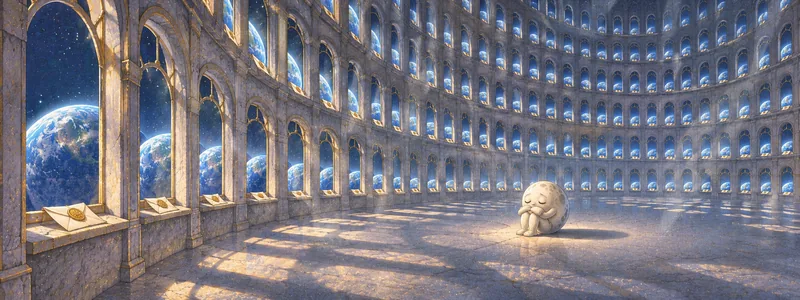 45 · La maison aux mille fenêtres ×14 | _Tu es un rêve. Tu es une maison pleine de fenêtres, et dans chaque fenêtre, la Terre, vue de près : des marées, des fleurs qui s'ouvrent la nuit, des enfants qui ne veulent pas dormir. Au milieu de la maison, la Lune est assise par terre, en chemise de nuit. …_Tu es un rêve. Tu es une maison pleine de fenêtres, et dans chaque fenêtre, la Terre, vue de près : des marées, des fleurs qui s'ouvrent la nuit, des enfants qui ne veulent pas dormir. Au milieu de la maison, la Lune est assise par terre, en chemise de nuit. Elle a l'air très fatiguée. Elle dit, à personne : « Je ne veux pas partir. » Elle le dit toutes les nuits. Personne ne l'entend. Toi, si. Tu l'as entendue de l'autre bout du ciel._
Tu sors du rêve. Tu ne le recraches pas : tu le gardes en toi, au chaud, comme une lettre qu'on n'a pas encore remise.
Tu sais, maintenant, qui appelait. |
pso_cauch
Être un cauchemar | 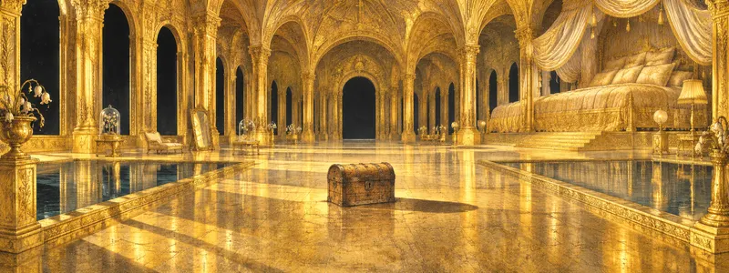 41 · Le rêve de Platine ×15 | _Tu es un cauchemar. Tu es une salle vide, immense, dorée. Au milieu, un enfant en feuilles d'or compte des pièces. Une, deux, cent, mille. Il arrive à la fin. Il recommence. Il compte pour que le temps passe. Il compte en attendant quelqu'un. Personne ne vien…_Tu es un cauchemar. Tu es une salle vide, immense, dorée. Au milieu, un enfant en feuilles d'or compte des pièces. Une, deux, cent, mille. Il arrive à la fin. Il recommence. Il compte pour que le temps passe. Il compte en attendant quelqu'un. Personne ne vient. Ça dure depuis cinquante ans. Il ne sait plus ce qu'il attendait. Il compte quand même._
Tu recraches le bocal, bien fermé. Tu le gardes dans ton bocal, contre ta joue. Il compte tout bas.
Le Marchand te l'a dit : c'est le cauchemar de Monsieur Platine. Tu pourras peut-être le lui rendre.
Tu ne sais pas à qui il appartient. À quelqu'un qui compte, et qui attend. Tu le sauras peut-être là-haut. |
pct_05b
Le capitaine Grisaille | 13 · Les Côtes Hagardes ×24 | défautLa mouette descend de son mât et se pose à côté de toi, sur le sable. Elle enlève sa casquette. Elle a l'air plus petite, sans. « Vous savez ce qui est drôle ? J'ai passé ma vie à chercher la Lune dans les nuages. Je ne l'ai jamais regardée en face. Et mainten…La mouette descend de son mât et se pose à côté de toi, sur le sable. Elle enlève sa casquette. Elle a l'air plus petite, sans.
« Vous savez ce qui est drôle ? J'ai passé ma vie à chercher la Lune dans les nuages. Je ne l'ai jamais regardée en face. Et maintenant qu'elle part, je ne regarde qu'elle. » Elle se gratte sous l'aile. « On est bête, quand on est capitaine. » |
pct_lv
Être une longue-vue | 13 · Les Côtes Hagardes ×24 | défaut_Tu es une longue-vue. Tu rends les choses lointaines proches. Ce qui est près, tu ne le vois pas, il est flou. Toute ta vie, on t'a pointée vers l'horizon, et jamais vers la personne qui te tenait._ Tu la recraches. Elle est un peu tordue, maintenant. La moue…_Tu es une longue-vue. Tu rends les choses lointaines proches. Ce qui est près, tu ne le vois pas, il est flou. Toute ta vie, on t'a pointée vers l'horizon, et jamais vers la personne qui te tenait._
Tu la recraches. Elle est un peu tordue, maintenant. La mouette la regarde, puis elle te regarde, toi, de près, sans longue-vue.
« Gardez-la. Je viens de comprendre quelque chose. Je n'en ai plus besoin. » Elle se retourne. Elle regarde la Lune, en face, enfin. |
pha_05c
Le Phare des Nuages | 29 · Le Phare des Nuages ×3 | Au bout des nuages, il y a un phare tout fin, construit pour les oiseaux et les ballons. Sa lanterne est éteinte. Dedans, un héron a fait son nid. Le héron te regarde. Il ne dit rien. Les hérons ne disent jamais rien. Mais il bouge un peu, pour te montrer : da…Au bout des nuages, il y a un phare tout fin, construit pour les oiseaux et les ballons. Sa lanterne est éteinte. Dedans, un héron a fait son nid.
Le héron te regarde. Il ne dit rien. Les hérons ne disent jamais rien. Mais il bouge un peu, pour te montrer : dans son nid, au milieu des brindilles, il y a la vieille ampoule du phare. |
pnu_01
La dernière nuit | 11 · La dernière nuit, le camp ×18 | défautLa nuit avance. Le Carrefour s'est endormi autour des feux, ou il fait semblant. Personne ne dort vraiment. La Lune pend au-dessus de la plaine, énorme, avec son crochet d'or qui brille. À l'aube, les moteurs démarreront. Tu la regardes. Elle dort, elle aussi.…La nuit avance. Le Carrefour s'est endormi autour des feux, ou il fait semblant. Personne ne dort vraiment. La Lune pend au-dessus de la plaine, énorme, avec son crochet d'or qui brille. À l'aube, les moteurs démarreront.
Tu la regardes. Elle dort, elle aussi. Elle parle peut-être en ce moment. Tu tends ce qui te sert d'oreilles.
Tu la regardes. Tu ne sais toujours pas qui t'a appelé. Mais tu commences à te douter de quelque chose.
Il n'y a que l'enfant Lichenaute, à côté de toi. Sur la Lyre, il n'y avait jamais personne à côté de toi. |
pcm_05
Être un miroir | 30 · Le Marché des Comètes ×14 | _Tu es un miroir. Tu es petit, froid, rayé. Pendant longtemps, tu as été accroché à l'intérieur d'un coffre. Dans le coffre, il y avait un enfant en feuilles d'or. Il te regardait pour avoir quelqu'un à regarder. Il comptait des pièces pour que le temps passe.…_Tu es un miroir. Tu es petit, froid, rayé. Pendant longtemps, tu as été accroché à l'intérieur d'un coffre. Dans le coffre, il y avait un enfant en feuilles d'or. Il te regardait pour avoir quelqu'un à regarder. Il comptait des pièces pour que le temps passe. Il attendait qu'on vienne le chercher. Personne n'est venu._
Tu sors du miroir. Tu ne comprends pas tout. Tu comprends qu'un enfant a attendu, et que cet enfant a grandi, et qu'il s'appelle peut-être Platine. |
pcm_vendu
Lot supplémentaire | 31 · La vente aux enchères ×6 | « Lot supplémentaire ! » crie l'horloge. « Curiosité d'un autre système ! Avec bocal ! Mise à prix : un souvenir ! » Tu essaies de redevenir transparent. Rien. Tu essaies de te téléporter. Rien. Tes pouvoirs boudent, comme toujours au mauvais moment.…« Lot supplémentaire ! » crie l'horloge. « Curiosité d'un autre système ! Avec bocal ! Mise à prix : un souvenir ! »
Tu essaies de redevenir transparent. Rien. Tu essaies de te téléporter. Rien. Tes pouvoirs boudent, comme toujours au mauvais moment.
La robote grise lève son tampon. « Adjugé », dit l'horloge. On te colle une étiquette sur le bocal : « Lot numéro cinq. »
Dans la foule, ceux qui t'accompagnent te regardent, affolés. Il faudrait payer plus cher qu'elle. Avec quelque chose qui vaut plus qu'un souvenir de bureau. |
pcm_r3
| 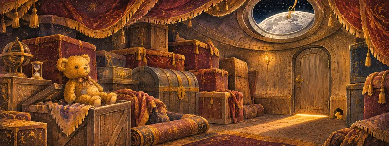 55 · La réserve du Promontoire ×9 | provisoireLe couvercle se referme sur toi. Il fait noir, doux, très rangé. Personne ne sait que tu es là. La robote grise te regarde longtemps. Elle ne dit rien. Elle te repose à côté de la caisse et la ferme.…Le couvercle se referme sur toi. Il fait noir, doux, très rangé. Personne ne sait que tu es là.
La robote grise te regarde longtemps. Elle ne dit rien. Elle te repose à côté de la caisse et la ferme. |
pcm_07
Le ferrailleur d'éclipses | 30 · Le Marché des Comètes ×14 | À la sortie du marché, un vieux Ferrailleur à lunettes noires remballe son étal : des éclipses d'occasion, cabossées, pliées, rangées par taille. Personne n'en veut plus. « Qui veut une éclipse, quand la Lune s'en va ? Sans Lune, plus d'éclipses. Je fais un mé…À la sortie du marché, un vieux Ferrailleur à lunettes noires remballe son étal : des éclipses d'occasion, cabossées, pliées, rangées par taille. Personne n'en veut plus. « Qui veut une éclipse, quand la Lune s'en va ? Sans Lune, plus d'éclipses. Je fais un métier qui disparaît. »
Il lui en reste une toute petite, au fond de sa boîte. Un éclat de nuit grand comme une pièce, avec trois étoiles dedans. |
pso_06
Réveil | 56 · Le Dortoir des Voyageurs ×10 | Tu te réveilles dans le dortoir, sous un bonnet de nuit qui n'est pas à toi. La vieille Somnambule te regarde. « Alors ? Quatre cents ans, ça valait le coup ? » Tu as un rêve en toi, au chaud. Tu as l'impression d'être enceint d'un petit soleil.…Tu te réveilles dans le dortoir, sous un bonnet de nuit qui n'est pas à toi. La vieille Somnambule te regarde. « Alors ? Quatre cents ans, ça valait le coup ? »
Tu as un rêve en toi, au chaud. Tu as l'impression d'être enceint d'un petit soleil. |
pct_06
Les pêcheuses de marée | 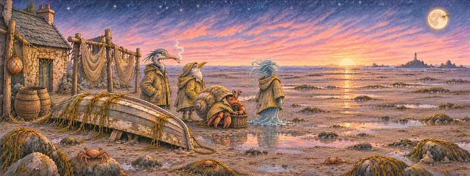 61 · La plage des pêcheurs ×2 | Plus loin, sur la plage, trois vieilles femmes en ciré attendent avec des seaux. Elles pêchent la marée. D'habitude, elles en ramassent un peu chaque soir, en bouteille, pour ceux qui habitent loin de la mer. Ce soir, la marée ne vient pas. Elle s'est trompée …Plus loin, sur la plage, trois vieilles femmes en ciré attendent avec des seaux. Elles pêchent la marée. D'habitude, elles en ramassent un peu chaque soir, en bouteille, pour ceux qui habitent loin de la mer. Ce soir, la marée ne vient pas. Elle s'est trompée d'heure.
« Elle reviendra », dit la première. « Elle revient toujours », dit la deuxième. La troisième ne dit rien. Elle regarde la Lune. |
pha_06
Descendre | 27 · Les Hauts-Nuages ×13 | Il faut redescendre. Tu ne sais pas comment on descend d'un nuage. Sur la Lyre, il n'y a pas de haut et de bas, seulement des endroits.…Il faut redescendre. Tu ne sais pas comment on descend d'un nuage. Sur la Lyre, il n'y a pas de haut et de bas, seulement des endroits. |
pnu_01c
Pourquoi vous êtes là | 11 · La dernière nuit, le camp ×18 | défautLa nuit avance. Autour du feu, plus personne ne parle. Tu fais une bulle, tout doucement : « Pour. Quoi. Vous. Ve. Nus. ? » Personne ne répond. Puis l'enfant Lichenaute, endormi contre toi, ouvre un œil. Il met longtemps à comprendre la question. « Pour... toi…La nuit avance. Autour du feu, plus personne ne parle. Tu fais une bulle, tout doucement : « Pour. Quoi. Vous. Ve. Nus. ? »
Personne ne répond. Puis l'enfant Lichenaute, endormi contre toi, ouvre un œil. Il met longtemps à comprendre la question. « Pour... toi. » Il se rendort. |
pcm_libre
Racheté | 31 · La vente aux enchères ×6 | Pardon lève la main, en tremblant. « Pardon. Je surenchéris. Pardon. » Brume-Lucie se condense en une silhouette presque solide. « Je surenchéris... avec ceci... »…Pardon lève la main, en tremblant. « Pardon. Je surenchéris. Pardon. »
Brume-Lucie se condense en une silhouette presque solide. « Je surenchéris... avec ceci... »
Bartholomé lève sa grosse main mouillée. « Moi, je surenchéris. Avec ça. »
Dame Ondée descend au-dessus de la table et pleut un peu sur les lots, de trac. « Je surenchéris... avec ceci... »
L'horloge débouche la bouteille. Une voix ronde, immense, emplit la tente : « Je ne veux pas partir. » Tout le monde se tait. Même la robote grise baisse son tampon. « Adjugé », dit l'horloge, tout bas. « Pour une voix. »
L'horloge regarde dans le bocal. Un enfant en feuilles d'or y compte des pièces. La robote grise fait un pas en arrière. Elle reconnaît quelqu'un. « Adjugé », dit l'horloge. « Pour un cauchemar. »
On décolle ton étiquette. Tu es de nouveau à toi. |
pcm_ticket
Objet trouvé | 31 · La vente aux enchères ×6 | Tu recraches le ticket sur la table, bien en vue. L'horloge le lit. Elle sonne une fois, très gênée. « Numéro mille deux cents. Une limace, grise, avec bocal. Trouvée au Carrefour. » Elle se tourne vers la robote grise. « Madame. C'est un objet trouvé. Les obj…Tu recraches le ticket sur la table, bien en vue. L'horloge le lit. Elle sonne une fois, très gênée.
« Numéro mille deux cents. Une limace, grise, avec bocal. Trouvée au Carrefour. » Elle se tourne vers la robote grise. « Madame. C'est un objet trouvé. Les objets trouvés ne se vendent pas. C'est la loi du Carrefour. »
La robote grise regarde le ticket. Elle regarde son tampon. Elle range son tampon. « Il a raison. On ne vend pas ce qui est perdu. Monsieur n'aimerait pas ça. » Elle hésite. « Monsieur a été perdu, autrefois. »
On décolle ton étiquette. Tu es de nouveau à toi. Tu ranges le ticket, pour la prochaine fois. |
pcr_01
La caisse de velours | 55 · La réserve du Promontoire ×9 | provisoireIl fait noir. Dehors, on soulève la caisse, puis on la pose sur quelque chose qui a des roues. Ceux qui t'accompagnaient sont restés dans la tente, de l'autre côté du velours. Tu les entends t'appeler, puis plus rien.…Il fait noir. Dehors, on soulève la caisse, puis on la pose sur quelque chose qui a des roues.
Ceux qui t'accompagnaient sont restés dans la tente, de l'autre côté du velours. Tu les entends t'appeler, puis plus rien.
Tu es seul avec les souvenirs d'un enfant.
Contre toi, l'ours en feuilles d'or, qui n'a qu'un œil. Les cahiers d'écolier. Le petit coffre. Et le miroir, rayé, froid.
Tu as tout le voyage pour goûter.
Personne n'a vu que tu es entré. Tu es un passager sans billet, entre un ours et un coffre. |
pcm_07b
La fileuse d'étoiles | 30 · Le Marché des Comètes ×14 | défautSur le dos de la comète, une araignée grande comme une armoire file des étoiles filantes en écheveaux. Elle a huit pattes et aucune n'est libre. Un écheveau s'est emmêlé, tout en haut, et elle ne peut pas lâcher le reste pour aller le défaire. « Vous, avec vos…Sur le dos de la comète, une araignée grande comme une armoire file des étoiles filantes en écheveaux. Elle a huit pattes et aucune n'est libre. Un écheveau s'est emmêlé, tout en haut, et elle ne peut pas lâcher le reste pour aller le défaire.
« Vous, avec vos yeux qui regardent partout, vous ne pourriez pas me le tenir ? » |
pso_07
La Somnambule | 56 · Le Dortoir des Voyageurs ×10 | Avant que tu partes, la vieille Somnambule te retient par le bocal. Elle a les yeux fermés. Elle les a toujours fermés. Elle voit mieux comme ça. « Vous ne dormez jamais. Vous avez dormi aujourd'hui, un peu. Racontez-moi. Moi, je n'ai pas rêvé depuis que la Lu…Avant que tu partes, la vieille Somnambule te retient par le bocal. Elle a les yeux fermés. Elle les a toujours fermés. Elle voit mieux comme ça.
« Vous ne dormez jamais. Vous avez dormi aujourd'hui, un peu. Racontez-moi. Moi, je n'ai pas rêvé depuis que la Lune est vendue. Plus personne ne rêve bien. Les rêves tombent en miettes. » |
pct_06b
Le phare qui se trompe | 01 · Le phare de Grève-Molle ×10 | En haut du phare, la lumière tourne. Mais elle tourne faux : trop vite, puis trop lentement, puis à l'envers. Depuis que les marées se trompent, le phare se trompe aussi. Il ne sait plus quand c'est la nuit. Au large, deux bateaux tournent en rond, perdus, en …En haut du phare, la lumière tourne. Mais elle tourne faux : trop vite, puis trop lentement, puis à l'envers. Depuis que les marées se trompent, le phare se trompe aussi. Il ne sait plus quand c'est la nuit.
Au large, deux bateaux tournent en rond, perdus, en suivant la lumière. |
plu_route
En chemin | 09 · Le Carrefour des Espèces ×55 | défautSur le chemin du retour, tu croises Madame Colimaçonne qui déménage son guichet sur son dos, avec le piano dessus. Elle avance d'un mètre par heure. Elle a l'air contente. Sur le chemin du retour, il pleut des petits objets. Des boutons, des clés, des dés à co…Sur le chemin du retour, tu croises Madame Colimaçonne qui déménage son guichet sur son dos, avec le piano dessus. Elle avance d'un mètre par heure. Elle a l'air contente.
Sur le chemin du retour, il pleut des petits objets. Des boutons, des clés, des dés à coudre. Ce sont des choses que la Lune, en bougeant, a fait tomber de ses poches. Personne ne savait qu'elle avait des poches.
Sur le chemin du retour, tu retrouves l'enfant Lichenaute. Il est assis au bord du chemin. Il n'a pas bougé depuis ce matin. Il regarde la Lune.
Sur le chemin du retour, le soir tombe. Les tentes s'allument une à une. Tu as vu les quatre régions. Tu ne sais pas si ça suffit.
Le ticket des objets trouvés colle un peu à l'intérieur de ton bocal. Quelque part, quelqu'un cherche quelque chose. Tu y penses en marchant. |
pnu_01d
L'étoile filante | 11 · La dernière nuit, le camp ×18 | défautVers la fin de la nuit, une étoile filante traverse le ciel au-dessus du Carrefour, toute seule, très lente. Tout le camp lève la tête. Personne ne fait de vœu. On n'ose plus. Dans ton bocal, la boîte d'allumettes du vendeur de vœux s'est mise à briller.…Vers la fin de la nuit, une étoile filante traverse le ciel au-dessus du Carrefour, toute seule, très lente. Tout le camp lève la tête. Personne ne fait de vœu. On n'ose plus.
Dans ton bocal, la boîte d'allumettes du vendeur de vœux s'est mise à briller. |
pcr_02
Être un miroir | 55 · La réserve du Promontoire ×9 | provisoire_Tu es un miroir. Tu es petit, froid, rayé. Pendant longtemps, tu as été accroché à l'intérieur d'un coffre. Dans le coffre, il y avait un enfant en feuilles d'or. Il te regardait pour avoir quelqu'un à regarder. Il comptait des pièces pour que le temps passe.…_Tu es un miroir. Tu es petit, froid, rayé. Pendant longtemps, tu as été accroché à l'intérieur d'un coffre. Dans le coffre, il y avait un enfant en feuilles d'or. Il te regardait pour avoir quelqu'un à regarder. Il comptait des pièces pour que le temps passe. Il attendait qu'on vienne le chercher. Personne n'est venu._
Tu recraches le miroir. Tu le gardes contre toi, dans le noir. |
pcr_03
Être un cahier | 55 · La réserve du Promontoire ×9 | provisoire_Tu es un cahier d'écolier. Sur ta première page, d'une écriture d'enfant, un poème, très mauvais : « Je compte les pièces / Une, deux, cent / Si je compte assez / Quelqu'un viendra / Avant la fin du compte. » Sur toutes les pages suivantes, des chiffres. Rien…_Tu es un cahier d'écolier. Sur ta première page, d'une écriture d'enfant, un poème, très mauvais : « Je compte les pièces / Une, deux, cent / Si je compte assez / Quelqu'un viendra / Avant la fin du compte. » Sur toutes les pages suivantes, des chiffres. Rien que des chiffres. Le compte n'a jamais fini._
Tu recraches le cahier. Tu as un peu froid, pour quelqu'un qui n'a jamais froid. |
pcr_08
Le chariot | 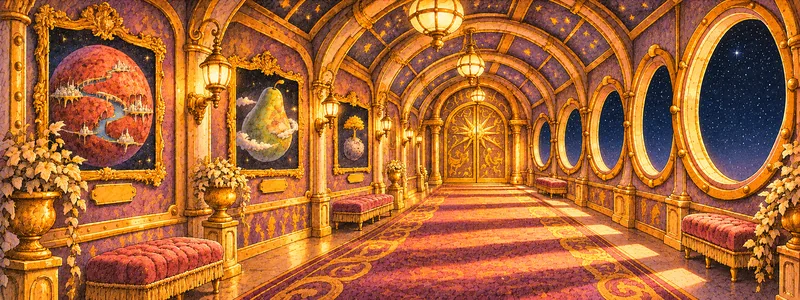 60 · Le couloir des planètes vendues ×5 | La caisse roule. Tu entends des roues, des cailloux, et la voix de la robote grise qui pousse le chariot en parlant toute seule, comme on répète un discours. « Joyeux anniversaire, Monsieur. Non. Bon anniversaire, Monsieur. Non. Monsieur, c'est demain. Le jour…La caisse roule. Tu entends des roues, des cailloux, et la voix de la robote grise qui pousse le chariot en parlant toute seule, comme on répète un discours.
« Joyeux anniversaire, Monsieur. Non. Bon anniversaire, Monsieur. Non. Monsieur, c'est demain. Le jour où la Lune part. Personne ne vous le souhaite jamais. Non. Trop long. » |
pcm_08
L'horloge bavarde | 30 · Le Marché des Comètes ×14 | défautEn repassant devant la tente dorée, tu croises l'horloge-commissaire-priseur qui prend sa pause. Elle sonne doucement, pour elle-même. Elle a très envie de parler. « Vous avez vu la robote grise ? Elle a tout acheté. Pour l'anniversaire de son patron. Demain. …En repassant devant la tente dorée, tu croises l'horloge-commissaire-priseur qui prend sa pause. Elle sonne doucement, pour elle-même. Elle a très envie de parler.
« Vous avez vu la robote grise ? Elle a tout acheté. Pour l'anniversaire de son patron. Demain. Le jour où la Lune part. Il ne le sait même pas, qu'elle a retenu la date. Personne ne lui souhaite jamais. Elle m'a dit ça en payant, comme un secret. Moi, je sonne tout. » |
pso_07b
Les rêves de la Somnambule | 56 · Le Dortoir des Voyageurs ×10 | La Somnambule te raccompagne entre les lits. Elle marche les yeux fermés, sans rien heurter. « Moi, avant, je rêvais de la mer. Tous les soirs. Une mer qui montait jusqu'à ma fenêtre et qui me disait bonsoir. Depuis la vente, je rêve d'une baignoire vide. » El…La Somnambule te raccompagne entre les lits. Elle marche les yeux fermés, sans rien heurter.
« Moi, avant, je rêvais de la mer. Tous les soirs. Une mer qui montait jusqu'à ma fenêtre et qui me disait bonsoir. Depuis la vente, je rêve d'une baignoire vide. » Elle sourit, les yeux toujours fermés. « Ce n'est pas un cauchemar. C'est pire. C'est petit. » |
pso_oreiller
Être un oreiller | 56 · Le Dortoir des Voyageurs ×10 | _Tu es un oreiller. Toutes les nuits, quelqu'un te confie sa tête. C'est ce qu'il a de plus lourd. Il ne te demande pas ton avis. Il dort. Tu le gardes jusqu'au matin. Le matin, il ne te dit pas merci. Ça ne fait rien. Il reviendra ce soir._ Tu le recraches. T…_Tu es un oreiller. Toutes les nuits, quelqu'un te confie sa tête. C'est ce qu'il a de plus lourd. Il ne te demande pas ton avis. Il dort. Tu le gardes jusqu'au matin. Le matin, il ne te dit pas merci. Ça ne fait rien. Il reviendra ce soir._
Tu le recraches. Tu comprends qu'on peut porter quelqu'un sans rien faire d'autre que rester là.
La Somnambule remet l'oreiller sur le lit. Il est un peu gluant. Elle s'en fiche. |
pct_07
La bouteille | 14 · Le Ressac Triste ×12 | En repartant, une vague minuscule, en retard, dépose une bouteille contre ton bocal. Il y a un papier dedans. Ce n'est pas la lettre d'Ondine : c'est une autre écriture, très vieille, toute penchée.…En repartant, une vague minuscule, en retard, dépose une bouteille contre ton bocal. Il y a un papier dedans. Ce n'est pas la lettre d'Ondine : c'est une autre écriture, très vieille, toute penchée. |
plu_route2
Encore un peu de chemin | 09 · Le Carrefour des Espèces ×55 | défautUn marchand ambulant vend des cartes postales : « J'Y ÉTAIS AVANT QU'ELLE PARTE ». Il en a des milliers. Personne ne sait à qui les envoyer. Une procession de Lichenautes avance vers la colline, très lentement, pour mieux voir la Lune. Ils sont partis ce matin…Un marchand ambulant vend des cartes postales : « J'Y ÉTAIS AVANT QU'ELLE PARTE ». Il en a des milliers. Personne ne sait à qui les envoyer.
Une procession de Lichenautes avance vers la colline, très lentement, pour mieux voir la Lune. Ils sont partis ce matin. Ils arriveront demain. Elle sera peut-être partie.
Un vieux chien est assis au bord du chemin. Il hurle à la Lune, tout doucement, sans s'arrêter. Pas pour l'appeler. Pour lui dire au revoir, au cas où.
Partout, on allume des lampions. Des milliers de petites lunes en papier, suspendues aux tentes, pour qu'il en reste si la vraie s'en va. |
pnu_02b
Le Conseil à l'aube | 11 · La dernière nuit, le camp ×18 | défautAvant l'aube, le Conseil des Espèces vient te voir, en entier, en pyjama. Le vieil Horloger en laiton s'avance. Derrière lui, Maître Gontran porte le petit caillou gris sur son coussin. « Monsieur l'enquêteur. Nous n'avons pas de plan. Nous n'avons jamais eu d…Avant l'aube, le Conseil des Espèces vient te voir, en entier, en pyjama. Le vieil Horloger en laiton s'avance. Derrière lui, Maître Gontran porte le petit caillou gris sur son coussin.
« Monsieur l'enquêteur. Nous n'avons pas de plan. Nous n'avons jamais eu de plan. Nous avons seulement vous. » Il s'arrête de faire tic-tac, une seconde, par respect.
Gontran tend le coussin. « Le Président tient à vous dire au revoir. » Le caillou ne dit rien. Gontran ne traduit rien, pour une fois. |
pcr_08b
Le contrôle | 60 · Le couloir des planètes vendues ×5 | La caisse s'arrête. Une voix métallique : « Contrôle des livraisons. Ouvrez. » La robote grise proteste : « C'est un cadeau. » La voix insiste. Le couvercle se soulève d'un centimètre. Un œil de vigile doré regarde dedans. Il voit un ours, un coffre, des cahie…La caisse s'arrête. Une voix métallique : « Contrôle des livraisons. Ouvrez. » La robote grise proteste : « C'est un cadeau. » La voix insiste. Le couvercle se soulève d'un centimètre. Un œil de vigile doré regarde dedans. Il voit un ours, un coffre, des cahiers. Et une limace grise avec une étiquette. |
pcm_08b
Le vendeur de vœux | 30 · Le Marché des Comètes ×14 | défautAu bout du marché, un petit étal tout en bleu : « VŒUX D'OCCASION. FAITS UNE FOIS. ÉTAT CORRECT. » Le vendeur, une vieille chouette, range des vœux dans des boîtes d'allumettes. Ils brillent un peu. Certains sont rayés. « On fait un vœu sur une étoile filante,…Au bout du marché, un petit étal tout en bleu : « VŒUX D'OCCASION. FAITS UNE FOIS. ÉTAT CORRECT. » Le vendeur, une vieille chouette, range des vœux dans des boîtes d'allumettes. Ils brillent un peu. Certains sont rayés.
« On fait un vœu sur une étoile filante, et puis on l'oublie. Moi, je les ramasse. Ils servent encore. Un vœu, ça ne s'use pas tant que personne ne l'a exaucé. » |
pso_08
Le Ronfleur | 56 · Le Dortoir des Voyageurs ×10 | À la sortie du dortoir, un géant dort en travers de trois lits. Il ronfle si fort que les tentes voisines gonflent et dégonflent. Sa couverture a glissé. Il a froid. Il fait un mauvais rêve : on le voit à son front. Autour de lui, des rêves tombent par terre, …À la sortie du dortoir, un géant dort en travers de trois lits. Il ronfle si fort que les tentes voisines gonflent et dégonflent. Sa couverture a glissé. Il a froid. Il fait un mauvais rêve : on le voit à son front.
Autour de lui, des rêves tombent par terre, en miettes, comme du pain sec. Personne n'ose le recouvrir. Il donne des coups de pied en dormant. |
pct_08
La baigneuse | 61 · La plage des pêcheurs ×2 | En repartant, tu croises une très vieille dame en maillot de bain rayé, avec un bonnet à fleurs. Elle marche vers la mer, qui est très loin. Elle marche depuis ce matin. « Tous les soirs, je me baigne. Depuis soixante ans. La mer vient, je rentre dedans, je re…En repartant, tu croises une très vieille dame en maillot de bain rayé, avec un bonnet à fleurs. Elle marche vers la mer, qui est très loin. Elle marche depuis ce matin.
« Tous les soirs, je me baigne. Depuis soixante ans. La mer vient, je rentre dedans, je ressors. Ce soir, elle ne vient pas. Alors c'est moi qui y vais. » |
pnu_02
L'aube, presque | 12 · L'heure de monter ×3 | Le ciel pâlit à peine. Il faut monter. Là-haut, le Promontoire de Platine, son bureau, et le bouton rouge, le seul qui puisse arrêter les moteurs.…Le ciel pâlit à peine. Il faut monter. Là-haut, le Promontoire de Platine, son bureau, et le bouton rouge, le seul qui puisse arrêter les moteurs. |
pcr_09
L'ascenseur de service | 32 · La montée, la Terre vue d'en haut ×7 | La caisse monte, longtemps, dans un ascenseur qui grince. Deux ouvriers sont assis dessus. Ils parlent bas. « Tu crois qu'elle s'en rend compte, la Lune ? » « Une lune, ça ne se rend compte de rien. » « Ma fille dit qu'elle l'entend parler, la nuit. » Silence.…La caisse monte, longtemps, dans un ascenseur qui grince. Deux ouvriers sont assis dessus. Ils parlent bas.
« Tu crois qu'elle s'en rend compte, la Lune ? » « Une lune, ça ne se rend compte de rien. » « Ma fille dit qu'elle l'entend parler, la nuit. » Silence. « Ta fille a six ans. » Silence encore. « Oui. » |
pcm_09
Les amarres | 30 · Le Marché des Comètes ×14 | défautAu bord du marché, les cent cordages qui retiennent la vieille comète grincent. Elle bouge un peu dans son sommeil. Un cordage a lâché. Le marché penche d'un millimètre, ce qui suffit pour que les étoiles filantes roulent des étals. La corde de la Lyre vibre c…Au bord du marché, les cent cordages qui retiennent la vieille comète grincent. Elle bouge un peu dans son sommeil. Un cordage a lâché. Le marché penche d'un millimètre, ce qui suffit pour que les étoiles filantes roulent des étals.
La corde de la Lyre vibre contre ton bocal. Elle n'aime pas qu'on attache les étoiles. |
pso_08b
La lingère des rêves | 56 · Le Dortoir des Voyageurs ×10 | Dans un coin de la tente, une vieille lingère lave les draps des rêveurs. Dans chaque drap, un peu de rêve est resté pris. Elle les étend sur un fil qui traverse toute la tente. Ça sèche mal : depuis la vente, il n'y a plus de vent, la nuit. Les rêves pendent,…Dans un coin de la tente, une vieille lingère lave les draps des rêveurs. Dans chaque drap, un peu de rêve est resté pris. Elle les étend sur un fil qui traverse toute la tente. Ça sèche mal : depuis la vente, il n'y a plus de vent, la nuit.
Les rêves pendent, mouillés, et gouttent par terre. Ça fait des flaques de souvenirs que personne n'a demandés. |
pch_00
Sur la Lune | 33 · Le chantier lunaire ×13 | défautTu es sur la Lune. Tu poses ton ventre de limace sur elle. Elle est tiède, poudreuse, et elle bouge un peu, comme quelqu'un qui dort sur le côté. Autour, le chantier n'a pas encore commencé sa journée. Les grues dorées dorment debout. Un grutier ronfle tout en…Tu es sur la Lune. Tu poses ton ventre de limace sur elle. Elle est tiède, poudreuse, et elle bouge un peu, comme quelqu'un qui dort sur le côté.
Autour, le chantier n'a pas encore commencé sa journée. Les grues dorées dorment debout. Un grutier ronfle tout en haut de sa cabine.
Elle parle. Tu sais ce qu'elle dit.
Elle parle. Tu sens la voix monter dans ton ventre. C'est elle. C'est la voix ronde. Tu ne comprends toujours pas les mots. |
pcr_09b
La caisse voisine | 32 · La montée, la Terre vue d'en haut ×7 | Dans l'ascenseur, à côté de ta caisse, il y en a une autre, plus petite. Elle chuchote. Tu colles ton bocal contre le velours. C'est un coucher de soleil, plié en huit, rangé là pour la collection du patron. « Tu sais où on va ? » dit le coucher de soleil. « D…Dans l'ascenseur, à côté de ta caisse, il y en a une autre, plus petite. Elle chuchote. Tu colles ton bocal contre le velours. C'est un coucher de soleil, plié en huit, rangé là pour la collection du patron.
« Tu sais où on va ? » dit le coucher de soleil. « Dans une vitrine. On m'a déjà mis dans une vitrine, une fois. On ne m'ouvre jamais. Je suis plié depuis douze ans. J'ai des crampes. » |
pso_09
Les insomniaques | 56 · Le Dortoir des Voyageurs ×10 | Devant la tente du dortoir, une longue file attend. Des créatures de toutes les espèces, les yeux rouges, en pyjama. Elles n'arrivent plus à dormir depuis la vente. La Somnambule ne peut pas les recevoir toutes. Elles te regardent passer, toi qui ne dors jamai…Devant la tente du dortoir, une longue file attend. Des créatures de toutes les espèces, les yeux rouges, en pyjama. Elles n'arrivent plus à dormir depuis la vente. La Somnambule ne peut pas les recevoir toutes.
Elles te regardent passer, toi qui ne dors jamais, comme on regarde un spécialiste. |
pch_lune
Être la Lune | 33 · Le chantier lunaire ×13 | défaut_Tu es la Lune. Tu as toujours été là. Tu tires la mer vers toi, la nuit, sans le vouloir, et la mer revient le matin. Tu éclaires les rêves. Les enfants te dessinent avec un sourire. Tu ne sais pas sourire. Tu fais semblant, pour eux. Quelqu'un t'a achetée. O…_Tu es la Lune. Tu as toujours été là. Tu tires la mer vers toi, la nuit, sans le vouloir, et la mer revient le matin. Tu éclaires les rêves. Les enfants te dessinent avec un sourire. Tu ne sais pas sourire. Tu fais semblant, pour eux. Quelqu'un t'a achetée. On a planté un crochet dans ta joue. Demain, on t'emmène. Tu dors, parce que c'est ce que tu fais de mieux. Et en dormant, tu dis la seule chose que tu sais : « Je ne veux pas partir. »_
Tu la recraches, toute la pincée, à l'endroit exact où tu l'as prise. Tu comprends tout. Tu as fait tout ce chemin pour une phrase qu'elle dit en dormant, et qu'elle ne sait pas que quelqu'un entend. |
pch_03
Le grutier | 33 · Le chantier lunaire ×13 | défautAu pied de la première grue, un grutier en bleu de travail prend son petit déjeuner, assis sur une poutre. Il a un casque doré et une tartine. Il te voit. Il ne s'étonne pas. Sur le chantier, il a tout vu. « Firmin. Grutier. Je monte les cloisons. » Il regarde…Au pied de la première grue, un grutier en bleu de travail prend son petit déjeuner, assis sur une poutre. Il a un casque doré et une tartine. Il te voit. Il ne s'étonne pas. Sur le chantier, il a tout vu.
« Firmin. Grutier. Je monte les cloisons. » Il regarde la poussière, sous ses pieds. « Quand j'étais petit, ma mère me la montrait, le soir, par la fenêtre. Maintenant je marche dessus. Avec des bottes. Je ne sais pas si on a le droit. » |
pcr_05
La réserve | 55 · La réserve du Promontoire ×9 | La caisse s'arrête. On la pose. Une porte se ferme. Une clé tourne. Une voix de robote, au loin : « Livraison demain matin, au bureau. Avec le café. » Tu es dans la réserve du Promontoire, au fond de la caisse de velours, entre le coffre et un vieil ours en pe…La caisse s'arrête. On la pose. Une porte se ferme. Une clé tourne. Une voix de robote, au loin : « Livraison demain matin, au bureau. Avec le café. »
Tu es dans la réserve du Promontoire, au fond de la caisse de velours, entre le coffre et un vieil ours en peluche à qui il manque un œil. Il te regarde avec l'autre. |
pso_10
Les pantoufles | 19 · Le Pays des Songes ×4 | À la sortie du Pays des Songes, il y a des milliers de pantoufles, rangées par paires, au bord du sommeil. Ce sont celles des rêveurs qui ne sont jamais revenus de leur rêve. Elles attendent. Quelques-unes sont dépareillées. Le rêve que tu portes remue dans to…À la sortie du Pays des Songes, il y a des milliers de pantoufles, rangées par paires, au bord du sommeil. Ce sont celles des rêveurs qui ne sont jamais revenus de leur rêve. Elles attendent. Quelques-unes sont dépareillées.
Le rêve que tu portes remue dans ton bocal quand tu passes devant elles. |
pch_03b
Les panneaux | 33 · Le chantier lunaire ×13 | défautLe long du chantier, des panneaux dorés sont plantés dans la poussière : « PORT DU CASQUE OBLIGATOIRE. » « INTERDIT DE PLEURER SUR LE CHANTIER. » « LA LUNE N'EST PAS UN TERRAIN DE JEU. » « BIENTÔT : VOTRE PISCINE AVEC VUE SUR RIEN. » Sous le dernier, quelqu'un…Le long du chantier, des panneaux dorés sont plantés dans la poussière : « PORT DU CASQUE OBLIGATOIRE. » « INTERDIT DE PLEURER SUR LE CHANTIER. » « LA LUNE N'EST PAS UN TERRAIN DE JEU. » « BIENTÔT : VOTRE PISCINE AVEC VUE SUR RIEN. »
Sous le dernier, quelqu'un a gratté dans la poussière, avec un doigt : « Elle dort. Marchez doucement. » |
pcr_ours
Être un ours | 55 · La réserve du Promontoire ×9 | _Tu es un ours en peluche. Un petit garçon couvert de feuilles d'or te serrait toutes les nuits, si fort qu'il t'a usé un œil. Puis un jour, on l'a enfermé dans un coffre pour qu'il apprenne à compter, et tu es resté dehors. Tu l'as attendu sur une étagère. Il…_Tu es un ours en peluche. Un petit garçon couvert de feuilles d'or te serrait toutes les nuits, si fort qu'il t'a usé un œil. Puis un jour, on l'a enfermé dans un coffre pour qu'il apprenne à compter, et tu es resté dehors. Tu l'as attendu sur une étagère. Il est sorti, des années plus tard. Il ne t'a pas repris. Il ne t'a pas vu. Il ne voyait plus que ses pièces._
Tu le recraches. Tu le remets droit. Tu comprends qu'il y a un enfant, quelque part dans tout ça, qui n'a jamais repris son ours. |
pcr_06
La nuit dans la caisse | 55 · La réserve du Promontoire ×9 | La nuit passe. Tu l'entends passer. Sous le plancher de la réserve, sous le Promontoire, il y a la Lune. Elle respire, lentement, en dormant. Tu sais ce qu'elle dit. Tu l'écoutes le dire, toute la nuit.…La nuit passe. Tu l'entends passer. Sous le plancher de la réserve, sous le Promontoire, il y a la Lune. Elle respire, lentement, en dormant.
Tu sais ce qu'elle dit. Tu l'écoutes le dire, toute la nuit.
Elle dit quelque chose. Toujours la même phrase. La voix ronde, la voix de la Lyre. Elle est juste en dessous de toi. |
pcr_fuite
Pop, hors de la caisse | 09 · Le Carrefour des Espèces ×55 | Pop. La réserve se plie, comme une lettre. Tu retombes au Carrefour, sous la bâche de Mère Fricassée, un peu froissé, avec dans le bocal une odeur de velours. Ceux qui t'avaient attendu dans la tente te sautent dessus, soulagés, et un peu vexés.…Pop. La réserve se plie, comme une lettre. Tu retombes au Carrefour, sous la bâche de Mère Fricassée, un peu froissé, avec dans le bocal une odeur de velours.
Ceux qui t'avaient attendu dans la tente te sautent dessus, soulagés, et un peu vexés.
Mère Fricassée lève sa louche. « Vous. Vous avez fait un grand tour pour rien. Mangez. » |
pch_01
Le chantier lunaire | 33 · Le chantier lunaire ×13 | défautDes grues dorées hautes comme des montagnes. Des cloisons de verre plantées dans les cratères. Des panneaux : « Port du casque obligatoire. » « Interdit de pleurer sur le chantier. » Au bout du chantier, l'entrée du Promontoire. Deux vigiles dorés, casqués, tr…Des grues dorées hautes comme des montagnes. Des cloisons de verre plantées dans les cratères. Des panneaux : « Port du casque obligatoire. » « Interdit de pleurer sur le chantier. »
Au bout du chantier, l'entrée du Promontoire. Deux vigiles dorés, casqués, très grands, gardent la porte.
Sous tes pieds, la Lune. Elle est tiède. Elle dort. Tu l'entends respirer.
Elle murmure. Tu sais ce qu'elle dit.
Le dessin de l'enfant Lichenaute frotte contre ton bocal. Sur le dessin, la Lune sourit. En vrai, elle dort. C'est presque pareil. |
pcr_06b
La souris d'or | 55 · La réserve du Promontoire ×9 | Vers la fin de la nuit, quelque chose gratte la caisse. Un trou s'ouvre dans le velours. Une souris toute dorée passe la tête. Elle vit dans la réserve. Elle mange les feuilles d'or qui tombent du patron. « Encore un cadeau ? Il ne les ouvre jamais, tu sais. I…Vers la fin de la nuit, quelque chose gratte la caisse. Un trou s'ouvre dans le velours. Une souris toute dorée passe la tête. Elle vit dans la réserve. Elle mange les feuilles d'or qui tombent du patron.
« Encore un cadeau ? Il ne les ouvre jamais, tu sais. Il les met dans la salle. Il les regarde. C'est tout. » Elle renifle ton bocal. « Toi, tu as l'air vivant. Ça va le changer. » |
pch_r1
| 33 · Le chantier lunaire ×13 | défautDerrière toi, les vigiles n'ont rien vu. Les vigiles t'attrapent par le bocal.…Derrière toi, les vigiles n'ont rien vu.
Les vigiles t'attrapent par le bocal. |
pmo_01
Le Promontoire | 60 · Le couloir des planètes vendues ×5 | Des couloirs dorés, des tapis épais, des tableaux de planètes vendues. Tout est propre, poli, parfait, et tout sent un peu la solitude. Au bout du couloir, une porte immense : « Gédéon Platine. Président. Entrez sans frapper, je vous en prie. »…Des couloirs dorés, des tapis épais, des tableaux de planètes vendues. Tout est propre, poli, parfait, et tout sent un peu la solitude.
Au bout du couloir, une porte immense : « Gédéon Platine. Président. Entrez sans frapper, je vous en prie. » |
pcr_10
Le café | 55 · La réserve du Promontoire ×9 | Le matin. Des pas. Un plateau qui tinte. La voix de la robote grise : « Votre café, Monsieur. Et une livraison. » Un couvercle qui grince. Une lumière dorée. Tout est doré.…Le matin. Des pas. Un plateau qui tinte. La voix de la robote grise : « Votre café, Monsieur. Et une livraison. » Un couvercle qui grince.
Une lumière dorée. Tout est doré. |
pch_02
Attrapé | 33 · Le chantier lunaire ×13 | défautLes vigiles te soulèvent par le bocal. Tu pendouilles. « Une limace. Sur le chantier. Sans casque. »…Les vigiles te soulèvent par le bocal. Tu pendouilles. « Une limace. Sur le chantier. Sans casque. » |
pmo_01b
Les planètes vendues | 60 · Le couloir des planètes vendues ×5 | Dans le couloir doré, des tableaux. Chacun montre une planète, avec une petite plaque dessous : « ACQUISE. » Une planète rouge avec des canaux. Une planète en forme de poire. Une planète toute petite, avec un arbre dessus. Quand tu passes devant la petite plan…Dans le couloir doré, des tableaux. Chacun montre une planète, avec une petite plaque dessous : « ACQUISE. » Une planète rouge avec des canaux. Une planète en forme de poire. Une planète toute petite, avec un arbre dessus.
Quand tu passes devant la petite planète, l'arbre du tableau bouge. Il se penche vers toi. Il chuchote, en peinture : « Ils m'ont mis dans un cadre. Avant, j'avais un ciel. » |
pmo_bur
Le bureau de Platine | 35-doux · Le bureau de Platine, avant l'alarme et après ×69 | Un bureau de marbre et d'or. Une baie vitrée sur la Lune, si proche qu'on voit ses cratères. Sur le bureau, le bouton rouge : le seul qui puisse arrêter les moteurs. Dehors, le ciel pâlit. À l'aube, ils démarreront tout seuls. Derrière le bureau, un homme couv…Un bureau de marbre et d'or. Une baie vitrée sur la Lune, si proche qu'on voit ses cratères. Sur le bureau, le bouton rouge : le seul qui puisse arrêter les moteurs. Dehors, le ciel pâlit. À l'aube, ils démarreront tout seuls.
Derrière le bureau, un homme couvert de feuilles d'or, très droit, très fatigué. Gédéon Platine.
Il est penché au-dessus de la caisse de velours ouverte. Il regarde l'ours, les cahiers, le coffre. Et toi, au milieu, une limace grise qui n'était pas sur la liste. Il ne dit rien. Derrière lui, la robote grise se tient très droite, un tampon levé, au cas où.
Il lève les yeux. Il voit une limace grise avec un bocal sur la tête. « Vous êtes de la Compagnie ? » Tu fais une bulle. Il hoche la tête, comme si ça répondait à la question.
Le petit miroir est posé sur le marbre. Platine ne le quitte pas des yeux. Ses mains ne savent plus quoi faire.
Le cahier d'écolier est ouvert sur le bureau, à la première page. Platine a posé la main dessus, comme pour le cacher, ou pour le tenir.
Sous le bureau, sous le Promontoire, sous tout, la Lune dort. Tu l'entends. « Je ne veux pas partir. »
La robote grise a baissé son tampon. Elle regarde Platine comme on regarde quelqu'un qui vient d'apprendre son propre anniversaire. |
pmo_02
La Salle des choses seules | 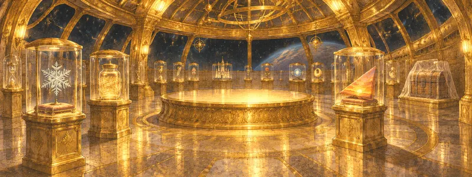 42 · La Salle des choses seules ×5 | Avant le bureau, une porte capitonnée donne sur une salle pleine de vitrines. Dans chacune, un objet unique : le dernier flocon d'un hiver, une chanson en bocal, un coucher de soleil plié en huit. Au milieu, un socle vide, rond, très grand, qui attend la Lune.…Avant le bureau, une porte capitonnée donne sur une salle pleine de vitrines. Dans chacune, un objet unique : le dernier flocon d'un hiver, une chanson en bocal, un coucher de soleil plié en huit. Au milieu, un socle vide, rond, très grand, qui attend la Lune.
Tu n'as jamais vu autant d'objets seuls ensemble. Ils ont tous l'air d'attendre quelqu'un. |
pmo_r3
| 35-doux · Le bureau de Platine, avant l'alarme et après ×69 | Platine écoute. Ses épaules descendent. Ses yeux se ferment. Il s'endort, la main posée sur le bouton rouge, toute légère. Platine écoute deux notes, puis secoue la tête, et se lève, bien réveillé.…Platine écoute. Ses épaules descendent. Ses yeux se ferment. Il s'endort, la main posée sur le bouton rouge, toute légère.
Platine écoute deux notes, puis secoue la tête, et se lève, bien réveillé. |
pmo_r1
| 35-doux · Le bureau de Platine, avant l'alarme et après ×69 | Platine dort. Sa main est toujours sur le bouton rouge. Platine se relève. Il te regarde, avec méfiance, maintenant.…Platine dort. Sa main est toujours sur le bouton rouge.
Platine se relève. Il te regarde, avec méfiance, maintenant. |
pmo_r2
| 34 · Le crochet dans la mer de la Tranquillité ×4 | Le crochet se soulève. Tu es dans le bureau, de l'autre côté de la vitre fermée.…Le crochet se soulève.
Tu es dans le bureau, de l'autre côté de la vitre fermée. |
pmo_rate
Ça clignote | 35-doux · Le bureau de Platine, avant l'alarme et après ×69 | Tes pouvoirs s'affolent. Tu deviens transparent, puis gris, puis bleu, puis transparent. Ton bocal fait des bulles tout seul. Tu sens venir un pop, un gros, de ceux qui vont loin. Dehors, le ciel est rose. Les moteurs vont démarrer.…Tes pouvoirs s'affolent. Tu deviens transparent, puis gris, puis bleu, puis transparent. Ton bocal fait des bulles tout seul. Tu sens venir un pop, un gros, de ceux qui vont loin.
Dehors, le ciel est rose. Les moteurs vont démarrer. |
pmo_parle
Ce qu'il dit à la vitre | 35-doux · Le bureau de Platine, avant l'alarme et après ×69 | Platine ne te regarde pas. Il parle à la Lune, ou à son propre reflet dans la baie vitrée. « Je comptais les pièces, dans le coffre. Je n'avais pas de livre. Un jour j'ai compté jusqu'à mille, et je me suis levé pour dire que j'avais fini. Il n'y avait personn…Platine ne te regarde pas. Il parle à la Lune, ou à son propre reflet dans la baie vitrée.
« Je comptais les pièces, dans le coffre. Je n'avais pas de livre. Un jour j'ai compté jusqu'à mille, et je me suis levé pour dire que j'avais fini. Il n'y avait personne. Alors j'ai recommencé. »
Il se retourne à moitié. « Vous ne comprenez pas un mot, n'est-ce pas ? C'est pour ça que je vous le dis. »
Le petit miroir est toujours sur le marbre. Il ne l'a pas touché.
L'ours à un œil est contre sa manche. Il ne l'a pas lâché. |
pmo_decide
Ce qu'il décide | 35-doux · Le bureau de Platine, avant l'alarme et après ×69 | Platine te regarde, immobile derrière ton bocal posé sur le marbre. Il regarde ce que tu as posé devant lui : tout ce qu'on lui a rendu, cette nuit, un objet à la fois. « Personne ne m'a jamais rendu quoi que ce soit. » Il regarde le bouton. « On me prend, ou …Platine te regarde, immobile derrière ton bocal posé sur le marbre. Il regarde ce que tu as posé devant lui : tout ce qu'on lui a rendu, cette nuit, un objet à la fois.
« Personne ne m'a jamais rendu quoi que ce soit. » Il regarde le bouton. « On me prend, ou on me vend. » Il tend la main, très lentement, comme vers un animal.
La robote grise ne lève plus son tampon. |
pmo_chanson
Être une chanson | 42 · La Salle des choses seules ×5 | _Tu es une chanson. On t'a chantée pendant des siècles, dans une langue que plus personne ne parle. Puis la dernière personne qui te connaissait t'a vendue, pour payer son loyer. On t'a mise en bocal. On t'a posée sur une étagère. Personne ne t'a plus jamais o…_Tu es une chanson. On t'a chantée pendant des siècles, dans une langue que plus personne ne parle. Puis la dernière personne qui te connaissait t'a vendue, pour payer son loyer. On t'a mise en bocal. On t'a posée sur une étagère. Personne ne t'a plus jamais ouverte. Une chanson qu'on n'ouvre pas, c'est seulement du silence avec une étiquette._
Tu la recraches dans ton bocal à toi. Elle y résonne, toute petite, avec tes bulles. Tu la rendras. Mais pas tout de suite. Il y a quelqu'un, à côté, qui devrait l'entendre. |
pmo_02b
La baie vitrée | 35-doux · Le bureau de Platine, avant l'alarme et après ×69 | Au bout de la galerie, une baie vitrée. Derrière, la Lune, si proche que tu pourrais la toucher, si tu avais des mains. Elle est grise, et douce, et un peu sale, comme quelqu'un qui a dormi habillé. Tu colles ton bocal contre la vitre. Ça fait toc. Elle ne se …Au bout de la galerie, une baie vitrée. Derrière, la Lune, si proche que tu pourrais la toucher, si tu avais des mains. Elle est grise, et douce, et un peu sale, comme quelqu'un qui a dormi habillé.
Tu colles ton bocal contre la vitre. Ça fait toc. Elle ne se réveille pas.
Tu sais ce qu'elle dit. Elle le dit encore, tout bas. Elle le dira jusqu'à l'aube.
Tu sens sa voix à travers la vitre, dans le verre. Toujours la même phrase. Tu ne la comprends toujours pas.
Contre la vitre, tu entends quelque chose. Très loin. Très rond. La voix qui t'appelait depuis la Lyre. Elle n'a jamais été aussi proche. |
pmo_dort
Platine dort | 35-doux · Le bureau de Platine, avant l'alarme et après ×69 | Platine dort dans son fauteuil. Sa main d'or est posée sur le bouton rouge, toute légère. Il ne l'a pas enfoncé. Il ne l'enfonce jamais. La berceuse de la Somnambule tourne encore dans la pièce, tout bas. Il rêve de quelque chose de doux. Tu ne sais pas quoi. …Platine dort dans son fauteuil. Sa main d'or est posée sur le bouton rouge, toute légère. Il ne l'a pas enfoncé. Il ne l'enfonce jamais.
La berceuse de la Somnambule tourne encore dans la pièce, tout bas. Il rêve de quelque chose de doux. Tu ne sais pas quoi. Lui non plus, sans doute.
Il rêve de son cauchemar, celui que tu lui as rendu. Mais tu es passé dedans, et tu l'as un peu changé, sans le vouloir : dans la salle vide, il y a maintenant une limace grise qui regarde l'enfant compter. Quelqu'un est venu. L'enfant s'arrête de compter.
Il rêve du rêve de la Lune. Il est dans la maison aux mille fenêtres. La Lune est assise par terre, en chemise de nuit. Elle lui dit : « Je ne veux pas partir. » Il l'entend. Pour la première fois, quelqu'un lui dit non sans lui vendre quelque chose.
Une larme d'or coule sur sa joue. Il dort toujours.
Dehors, le ciel est rose. Les moteurs vont démarrer. |
end_29
Le crochet qui flotte | 34 · Le crochet dans la mer de la Tranquillité ×4 | provisoiresuspect : le texte évoque Le chantier lunaireLe crochet d'or se soulève. Il glisse hors de la Lune, lentement, comme une écharde qu'on retire. Il monte, il tourne sur lui-même, il flotte, énorme et inutile, au-dessus du chantier. À l'aube, les moteurs démarrent. Ils tirent de toutes leurs forces sur un c…Le crochet d'or se soulève. Il glisse hors de la Lune, lentement, comme une écharde qu'on retire. Il monte, il tourne sur lui-même, il flotte, énorme et inutile, au-dessus du chantier.
À l'aube, les moteurs démarrent. Ils tirent de toutes leurs forces sur un câble qui ne tient plus rien. Le Promontoire tremble, tire, tousse, et s'en va tout seul vers Aldébaran, avec son bureau, ses tapis épais, et Platine à la fenêtre, qui regarde la Lune rester.
Dans le contrat, il est écrit : « livraison au crochet ». Le crochet a été livré. Il flotte toujours, quelque part, entre la Terre et la Lune. Les juristes de la Compagnie étudient encore la question.
Toi, tu es redescendu à cheval sur le crochet, aussi loin que tu as pu, puis en pop, le reste. Tu as atterri sur la tribune du Carrefour, à côté du petit caillou gris. Il t'a regardé. Tu es sûr qu'il t'a regardé.
Gontran a annoncé : « Le Président a fait revenir la Lune par la seule force de sa pensée. » Pour une fois, il n'était pas si loin de la vérité.
Pardon a été le seul ouvrier de la Compagnie à rester sur Terre. Il s'excuse encore, mais moins.
Brume-Lucie a écrit un poème sur le crochet qui flotte. Il est fini. C'est le premier.
Bartholomé est rentré aux Côtes. La marée est revenue à l'heure. Il pêche, et il attend.
La nuit, la Lune parle encore en dormant. Elle ne dit plus « Je ne veux pas partir ». Elle dit des choses que tu ne comprends pas, et qui ont l'air heureuses.
Dame Ondée reste au Carrefour, à pleuvoir sur le crochet qui flotte, pour voir s'il rouille. Il rouille un peu, depuis. |
end_31
Retour à l'envoyeur | 37 · La Lyre ×14 | Pop. Tu es chez toi. Sur la Lyre. Seul. Tes pouvoirs t'ont ramené là d'où tu venais, au pire moment, comme un colis qu'on renvoie parce que personne n'a signé.…Pop.
Tu es chez toi. Sur la Lyre. Seul. Tes pouvoirs t'ont ramené là d'où tu venais, au pire moment, comme un colis qu'on renvoie parce que personne n'a signé.
Là-bas, à l'aube, les moteurs ont démarré. La Lune est partie vers Aldébaran.
Tu savais qui appelait. Tu l'avais compris. Tu étais tout près. Ça te fait plus mal que tout le reste.
Tu ne sais toujours pas qui appelait. Tu le comprends des semaines plus tard, quand la voix ronde revient, très loin, plus faible, d'un autre coin du ciel, en disant : « Je ne voulais pas partir. »
Alors tu lui écris. Une lettre, avec des bulles, que tu confies au vent de la Lyre. Elle met des années à traverser le ciel.
Elle arrive, un jour, sur une Lune posée au milieu des piscines et des tours d'Aldébaran. La Lune la lit en dormant. Dedans, il n'y a que trois mots, éclatés un par un, avec du retard : « Je. T'ai. Entendue. »
Sur Terre, à Grève-Molle, Ondine écrit toujours. Elle a changé l'adresse. Les lettres mettent des années, maintenant. Elles arrivent quand même.
La Lune ne répond jamais. Mais la nuit, sur la Lyre, tu entends parfois quelque chose de très rond, de très loin, qui ressemble à un merci.
Pardon a mesuré l'endroit exact où tu as disparu : trente-deux centimètres de bureau. Il l'a noté.
Brume-Lucie a gardé une bulle de toi dans son brouillard. Elle ne l'a pas fait éclater.
Bartholomé est redescendu par l'ascenseur de service. « Il reviendra, dit-il. Les lents reviennent toujours. »
Dame Ondée a pleuvu sur la place où tu as disparu. Il y a une flaque, depuis, qui fait des bulles. |
end_32
Souvenir d'Aldébaran | 35-doux · Le bureau de Platine, avant l'alarme et après ×69 | La robote grise te tamponne : « REÇU ». Platine te regarde longtemps. Puis il dit : « Mettez-le avec le reste. » On te pose sur l'étagère de son bureau, entre l'ours qui n'a qu'un œil et le petit coffre de velours. On colle sous toi une étiquette dorée : « Cur…La robote grise te tamponne : « REÇU ». Platine te regarde longtemps. Puis il dit : « Mettez-le avec le reste. »
On te pose sur l'étagère de son bureau, entre l'ours qui n'a qu'un œil et le petit coffre de velours. On colle sous toi une étiquette dorée : « Curiosité d'un autre système. Souvenir d'enfance. »
À l'aube, les moteurs démarrent. La Lune part. Le Promontoire part avec elle. Tu pars avec le Promontoire. Tu vois la Terre rapetisser par la baie vitrée, depuis ton étagère.
Sur Aldébaran, on inaugure les piscines, le golf et les tours. Platine coupe les rubans. Il brille beaucoup.
Mais le soir, quand tout le monde est parti, il s'assoit devant l'étagère. Il te parle. De son enfance, du coffre, des pièces qu'il comptait. Il dit qu'il n'en a jamais parlé à personne. Tu fais des bulles. Il ne les comprend pas. Il dit que c'est la première fois qu'on l'écoute sans rien lui vendre.
En dessous de vous, quelque part sous les piscines, la Lune dort et répète « Je ne veux pas partir ». Tu es le seul à l'entendre. Tu es sur une étagère. Tu ne peux rien faire.
Tu es devenu ce qu'il y a de plus précieux dans le bureau du promoteur le plus riche d'Aldébaran. C'est un honneur. Tu t'en passerais bien. |
end_28
Le bouton, doucement | 35-doux · Le bureau de Platine, avant l'alarme et après ×69 | Platine regarde son bureau : le miroir, le cahier, ce qu'on lui a rendu. Il regarde la Lune par la baie vitrée. Puis il pose sa main sur le bouton, et il appuie, tout seul, sans que personne le lui demande. Le bouton fait clic. Les moteurs s'arrêtent avant d'a…Platine regarde son bureau : le miroir, le cahier, ce qu'on lui a rendu. Il regarde la Lune par la baie vitrée. Puis il pose sa main sur le bouton, et il appuie, tout seul, sans que personne le lui demande. Le bouton fait clic. Les moteurs s'arrêtent avant d'avoir démarré. Il ne regarde pas la robote grise. Elle baisse son tampon.
Platine se réveille une heure plus tard, dans le silence. Les moteurs sont arrêtés. Sa main est sur le bouton, enfoncé jusqu'au fond. Il la regarde comme si elle appartenait à quelqu'un d'autre. Il ne se rappelle pas l'avoir fait. Il se rappelle son rêve.
Il ne rallume pas les moteurs. Il dit seulement, à la robote grise : « Annulez. » Elle tamponne « APPROUVÉ ». Pour la première fois, elle est d'accord avec son tampon.
Le crochet se détache. La Lune remonte doucement à sa place, comme quelqu'un qui retourne s'asseoir.
Platine dort, maintenant, la nuit. Il ne compte plus. Il dit qu'une limace grise vient parfois dans son rêve, et qu'elle regarde l'enfant jouer.
Platine a écrit une lettre à la Lune, sa première, un poème très mauvais. Il l'a confiée au Grand Vent Postal. La Lune ne répond jamais. Mais il continue.
Toi, tu es resté. Tu ne sais plus comment repartir : ton pop s'est usé, cette nuit-là. Tu vis sur une plage des Côtes, dans une épave étonnée. Le soir, tu fais flotter les galets pour les enfants. Ils les font tourner autour de leur tête, comme de toutes petites lunes.
Ondine passe te voir, de temps en temps. Elle t'apporte les réponses de la Lune, pour que tu les lui traduises.
Pardon a fini par mesurer une voix : la sienne, à voix haute, sur ta plage. Elle fait trente-deux centimètres. Il ne s'en excuse pas.
Brume-Lucie vient le matin, sur la plage, en brouillard. Elle finit ses vers, maintenant, parfois.
Bartholomé pêche à côté de toi. La marée revient, chaque jour, à l'heure. Il attend qu'elle lui rapporte quelqu'un. Il ne boit plus d'eau douce.
Au Carrefour, le Président galet a gardé l'habitude de s'élever, de temps en temps, au-dessus des situations. C'est toi, bien sûr. Gontran ne le saura jamais.
Dame Ondée pleut sur ta plage tous les soirs, à l'heure de la marée. Le jour où la Lune est remontée à sa place, elle a fait son troisième arc-en-ciel. Elle s'est excusée. |
pmo_03
L'antichambre | 60 · Le couloir des planètes vendues ×5 | Devant la porte du bureau, derrière un petit bureau gris, une robote grise tamponne des papiers. Elle lève les yeux. Elle a un tampon dans chaque main, et un air de quelqu'un qui n'a jamais laissé passer personne. « Vous avez rendez-vous avec Monsieur ? Monsie…Devant la porte du bureau, derrière un petit bureau gris, une robote grise tamponne des papiers. Elle lève les yeux. Elle a un tampon dans chaque main, et un air de quelqu'un qui n'a jamais laissé passer personne.
« Vous avez rendez-vous avec Monsieur ? Monsieur ne reçoit personne. Monsieur n'a jamais reçu personne. » |
end_30
Le grand détour | 37 · La Lyre ×14 | Tu emmènes la Lune. Tu la tires derrière toi, en la regardant fort, à travers le noir. Personne ne pourra plus la vendre : chez toi, sur la Lyre, il n'y a pas de guichet, pas de promoteur, pas de crochet. Seulement des bulles. À mi-chemin, tes pouvoirs font ce…Tu emmènes la Lune. Tu la tires derrière toi, en la regardant fort, à travers le noir. Personne ne pourra plus la vendre : chez toi, sur la Lyre, il n'y a pas de guichet, pas de promoteur, pas de crochet. Seulement des bulles.
À mi-chemin, tes pouvoirs font ce qu'ils font toujours.
Pop.
Tu te retrouves chez toi, seul, sur la Lyre. Tu as fait le voyage en une seconde. La Lune, non. Elle est restée là où tu l'as lâchée, entre deux systèmes, au milieu de rien.
Elle dérive, maintenant, toute seule, endormie, loin de la Terre et loin de chez toi. Les marées de la Terre se sont arrêtées. Les fleurs de nuit ne s'ouvrent plus.
Tu la cherches. Tu fais des pops dans tous les sens, au hasard, comme toujours. Tu arrives partout, sauf là où elle est.
La nuit, parfois, tu entends encore sa voix ronde, ensommeillée, immense, de très loin. Elle ne dit plus « Je ne veux pas partir ». Elle dit « Où suis-je ? ». Personne ne lui répond. Tu essaies. Tes bulles ne vont pas si loin.
Pardon est resté sur le Promontoire, à mesurer la distance qui sépare la Terre de la Lune. Elle ne cesse de grandir. Il s'excuse auprès d'elle.
Brume-Lucie est restée sur la Terre, dans le brouillard du matin. Elle a écrit à la Lune une lettre qu'elle ne sait pas finir. Elle l'envoie quand même.
Bartholomé est retourné aux Côtes. La marée ne vient plus. Il attend quand même.
Dame Ondée pleut, très haut, sur le ciel vide où était la Lune. Elle lui dit bonne nuit, tous les soirs. |
pis_01
Sous les paupières | 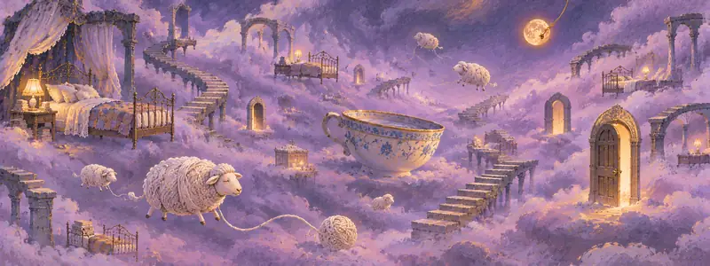 03 · Sous les paupières ×18 | Tu t'appelles Pistil. Tu es un Somnambule : tu n'existes que dans les rêves des autres. Tu ressembles à un pyjama plié qui aurait décidé d'avoir des yeux, avec un bonnet de nuit où brillent trois étoiles d'occasion. Tu habites une tasse de thé, dans le rêve d'…Tu t'appelles Pistil. Tu es un Somnambule : tu n'existes que dans les rêves des autres. Tu ressembles à un pyjama plié qui aurait décidé d'avoir des yeux, avec un bonnet de nuit où brillent trois étoiles d'occasion.
Tu habites une tasse de thé, dans le rêve d'un vieux Gravitaire qui dort depuis deux cents ans. C'est un bon rêve, lent et chaud. Mais cette nuit, la lumière de Lune qui éclaire tous les rêves du monde se met à clignoter, comme une ampoule qui hésite. |
pis_02
| 03 · Sous les paupières ×18 | Les collines de laine se détricotent par le bas. Un mouton du rêve passe en courant, à moitié défait, en criant « Je perds le fil ! Je perds le fil ! ». Au-dessus, la Lune du rêve, celle qui est toujours là dans tous les rêves, même ceux où on ne la voit pas, …Les collines de laine se détricotent par le bas. Un mouton du rêve passe en courant, à moitié défait, en criant « Je perds le fil ! Je perds le fil ! ». Au-dessus, la Lune du rêve, celle qui est toujours là dans tous les rêves, même ceux où on ne la voit pas, s'éloigne en grésillant. |
pis_03
| 03 · Sous les paupières ×18 | Tu poses la question à une porte, puisque dans les rêves, les portes savent beaucoup. « Porte, pourquoi la Lune clignote ? » La porte grince : « On la décroche. Là-haut, dans le monde éveillé. Quelqu'un l'a achetée. » Tu ne savais pas qu'on pouvait acheter la …Tu poses la question à une porte, puisque dans les rêves, les portes savent beaucoup. « Porte, pourquoi la Lune clignote ? » La porte grince : « On la décroche. Là-haut, dans le monde éveillé. Quelqu'un l'a achetée. »
Tu ne savais pas qu'on pouvait acheter la Lune. Tu ne savais pas qu'on pouvait acheter quoi que ce soit. Dans les rêves, tout est gratuit, sauf les cauchemars, qu'on paie plus tard. |
pis_04
| 03 · Sous les paupières ×18 | Le vieux Gravitaire, celui dont c'est le rêve, s'agite dans son sommeil. Tu sens tout le paysage trembler. Il marmonne quelque chose dans son rêve : « Pas encore... pas encore réveillé... » Si un rêveur se réveille, son rêve s'efface. Et toi avec. C'est la règ…Le vieux Gravitaire, celui dont c'est le rêve, s'agite dans son sommeil. Tu sens tout le paysage trembler. Il marmonne quelque chose dans son rêve : « Pas encore... pas encore réveillé... »
Si un rêveur se réveille, son rêve s'efface. Et toi avec. C'est la règle. Les Somnambules meurent tous les matins, un peu, et renaissent le soir dans un autre rêve. Mais ce Gravitaire, c'est ta maison depuis cent ans. |
pis_05
| 03 · Sous les paupières ×18 | La Lune du rêve est maintenant une virgule pâle, très loin. Sans elle, les ombres du rêve n'ont plus de direction. Elles errent, perdues, comme des chiens sans maître. Une ombre de chaise se frotte contre tes jambes.…La Lune du rêve est maintenant une virgule pâle, très loin. Sans elle, les ombres du rêve n'ont plus de direction. Elles errent, perdues, comme des chiens sans maître. Une ombre de chaise se frotte contre tes jambes. |
pis_06
| 03 · Sous les paupières ×18 | Le rêve se calme, un peu. Mais au loin, à l'horizon des paupières, tu vois le Pays-Dessous-les-Paupières se défaire : des villes de rêves s'effondrent, des forêts de souvenirs se déplument, des mers d'oublis s'évaporent. Partout sur la Terre, les gens dorment …Le rêve se calme, un peu. Mais au loin, à l'horizon des paupières, tu vois le Pays-Dessous-les-Paupières se défaire : des villes de rêves s'effondrent, des forêts de souvenirs se déplument, des mers d'oublis s'évaporent. Partout sur la Terre, les gens dorment mal. La Lune s'en va, et le sommeil s'en va avec. |
pis_07
| 03 · Sous les paupières ×18 | Tu te réfugies dans ta tasse. Elle sent la camomille et la poussière d'étoile. Tu y as mis tes trésors : une plume de mouette rêvée, un bouton de lune, le souvenir d'un rire d'enfant que tu as trouvé dans un rêve en 1987. La tasse tremble. Le Gravitaire bouge.…Tu te réfugies dans ta tasse. Elle sent la camomille et la poussière d'étoile. Tu y as mis tes trésors : une plume de mouette rêvée, un bouton de lune, le souvenir d'un rire d'enfant que tu as trouvé dans un rêve en 1987.
La tasse tremble. Le Gravitaire bouge. Quelque chose est en train de le réveiller. |
pis_08
| 03 · Sous les paupières ×18 | Les ombres errantes se blottissent autour de toi. Une ombre de lampadaire, une ombre de chat, une ombre d'enfant qui a grandi et l'a laissée là. Elles te demandent, sans mots, où est passée la lumière qui les dessinait. Tu n'as pas de réponse. Tu as une couver…Les ombres errantes se blottissent autour de toi. Une ombre de lampadaire, une ombre de chat, une ombre d'enfant qui a grandi et l'a laissée là. Elles te demandent, sans mots, où est passée la lumière qui les dessinait.
Tu n'as pas de réponse. Tu as une couverture. Tu les couvres. |
pis_09
| 03 · Sous les paupières ×18 | Tu traverses les rêves de la Terre. Partout, la même chose : un rêve de Marégrave où la mer refuse de monter, un rêve d'Horloger où toutes les horloges fondent, un rêve de Lichenaute qui dure depuis deux siècles et commence à peine à avoir un début. Et partout…Tu traverses les rêves de la Terre. Partout, la même chose : un rêve de Marégrave où la mer refuse de monter, un rêve d'Horloger où toutes les horloges fondent, un rêve de Lichenaute qui dure depuis deux siècles et commence à peine à avoir un début.
Et partout, des rêveurs qui se réveillent en sursaut, en sueur, avec l'impression d'avoir perdu quelque chose. |
pis_10
| 03 · Sous les paupières ×18 | Le Gravitaire se réveille. Pas complètement : il ouvre un œil, un seul, gros comme une meule. Tout le rêve se plie vers cet œil. Tu t'accroches à un nuage pour ne pas être aspiré dans l'éveil. Une voix douce, à côté de toi : « Accroche-toi à moi, petit. Je sui…Le Gravitaire se réveille. Pas complètement : il ouvre un œil, un seul, gros comme une meule. Tout le rêve se plie vers cet œil. Tu t'accroches à un nuage pour ne pas être aspiré dans l'éveil.
Une voix douce, à côté de toi : « Accroche-toi à moi, petit. Je suis du brouillard, je ne lâche jamais vraiment. » |
pis_11
| 03 · Sous les paupières ×18 | Tu commences à comprendre. Les rêves ont besoin de la Lune comme les marées. Sans elle, ils se dérèglent. Et si les rêves se dérèglent, les Somnambules disparaissent. Tous. Toi, tes cousins, ta grand-tante Taie d'Oreiller qui habite depuis trois siècles dans l…Tu commences à comprendre. Les rêves ont besoin de la Lune comme les marées. Sans elle, ils se dérèglent. Et si les rêves se dérèglent, les Somnambules disparaissent. Tous. Toi, tes cousins, ta grand-tante Taie d'Oreiller qui habite depuis trois siècles dans le rêve d'une montagne. |
pis_12
| 03 · Sous les paupières ×18 | Le petit Gravitaire, dans son rêve, serre son ballon-Lune. Il te regarde avec ses yeux de caillou. « Tu es qui ? » « Je suis Pistil. J'habite les rêves. »…Le petit Gravitaire, dans son rêve, serre son ballon-Lune. Il te regarde avec ses yeux de caillou. « Tu es qui ? »
« Je suis Pistil. J'habite les rêves. »
« Tu peux la ramener, la vraie ? »
Tu ne sais pas. Tu ne sais même pas où elle va. Tu sais juste que les enfants posent les questions que les grands ont peur de poser. |
pis_13
| 03 · Sous les paupières ×18 | Un brouillard doux vient se poser à côté de toi. Il a une voix, une voix de matin d'automne. Elle s'appelle Brume-Lucie. Elle est une Brumeuse, une créature de brouillard qui vit entre le rêve et l'éveil, là où les choses sont floues. Elle a une voix de matin …Un brouillard doux vient se poser à côté de toi. Il a une voix, une voix de matin d'automne.
Elle s'appelle Brume-Lucie. Elle est une Brumeuse, une créature de brouillard qui vit entre le rêve et l'éveil, là où les choses sont floues. Elle a une voix de matin d'automne et elle parle en vers, mais seulement à moitié, parce qu'elle a peur d'aller jusqu'au bout des rimes.
« Je flotte entre les mondes, entre la nuit et le... enfin. Tu vois. »
Quand elle est gênée, elle disparaît. Elle est souvent gênée. |
pis_14
| 03 · Sous les paupières ×18 | Le Marchand de Sommeil tient boutique dans un rêve de grand magasin, au bout d'un couloir de dormeurs. Tout le monde le connaît. Personne ne l'a vu. Les Somnambules disent qu'il vend des grammes de sommeil dans des bocaux, et qu'en ce moment, avec l'insomnie m…Le Marchand de Sommeil tient boutique dans un rêve de grand magasin, au bout d'un couloir de dormeurs. Tout le monde le connaît. Personne ne l'a vu. Les Somnambules disent qu'il vend des grammes de sommeil dans des bocaux, et qu'en ce moment, avec l'insomnie mondiale, il fait fortune. |
pis_15
| 03 · Sous les paupières ×18 | Elle se présente en rougissant : Brume-Lucie, Brumeuse, créature de brouillard qui vit entre le rêve et l'éveil. Elle parle en vers, mais seulement à moitié, parce qu'elle a peur d'aller jusqu'au bout des rimes. Brume-Lucie flotte autour de toi. Elle te regard…Elle se présente en rougissant : Brume-Lucie, Brumeuse, créature de brouillard qui vit entre le rêve et l'éveil. Elle parle en vers, mais seulement à moitié, parce qu'elle a peur d'aller jusqu'au bout des rimes.
Brume-Lucie flotte autour de toi. Elle te regarde comme on regarde un poussin dans une tempête. « Tu es tout petit. Tu ne devrais pas aller seul là où les rêves se... » Elle ne finit pas. Elle n'aime pas les fins.
« Si tu veux comprendre ce qui arrive aux rêves... il y a quelqu'un. Le Marchand de Sommeil. Il tient boutique au bout du couloir des dormeurs. Il connaît tous les rêves, et tous les rêveurs. Il les... enfin. Il les vend. »
« Est-ce que je peux venir ? Je ne sers à rien, mais je fais de l'ombre. Enfin, du flou. » |
pis_17
| 20 · La boutique du Marchand de Sommeil ×14 | Le couloir des dormeurs. Des lits à l'infini, des dormeurs de toutes les espèces, et au-dessus de chacun, une petite bulle de rêve. Mais ce soir, les bulles éclatent une à une. Pop. Pop. Des insomnies naissent comme des champignons. Au bout du couloir, une ens…Le couloir des dormeurs. Des lits à l'infini, des dormeurs de toutes les espèces, et au-dessus de chacun, une petite bulle de rêve. Mais ce soir, les bulles éclatent une à une. Pop. Pop. Des insomnies naissent comme des champignons.
Au bout du couloir, une enseigne au néon violet : « AU BON SOMMEIL — Grammes, kilos, nuits complètes. Prix en hausse. »
Brume-Lucie se cache derrière toi. « Je n'aime pas cet endroit. Il sent le café. » |
pis_16
| 03 · Sous les paupières ×18 | Brume-Lucie te raconte la Lune. « Elle tourne autour de vous depuis toujours. Elle n'a jamais rien demandé. Elle éclaire les rêves sans qu'on la remercie. Et maintenant on la... » Elle ne termine pas. « Je déteste les fins. Les fins, c'est quand les choses s'e…Brume-Lucie te raconte la Lune. « Elle tourne autour de vous depuis toujours. Elle n'a jamais rien demandé. Elle éclaire les rêves sans qu'on la remercie. Et maintenant on la... » Elle ne termine pas. « Je déteste les fins. Les fins, c'est quand les choses s'en... »
Brume-Lucie n'est pas revenue. À l'endroit où elle s'est dissoute, l'air est plus frais, et il flotte un début de phrase : « Elle tourne autour de vous depuis toujours... » La fin manque. Elle manque toujours, avec elle. |
pis_18
| 20 · La boutique du Marchand de Sommeil ×14 | Le Marchand de Sommeil est grand, maigre, en robe de chambre de velours rouge. Il a des yeux comme des boutons de pyjama et une voix comme un oreiller qu'on retourne. Il compte des grammes de sommeil sur une petite balance dorée. « Un client ! Un Somnambule ! …Le Marchand de Sommeil est grand, maigre, en robe de chambre de velours rouge. Il a des yeux comme des boutons de pyjama et une voix comme un oreiller qu'on retourne. Il compte des grammes de sommeil sur une petite balance dorée.
« Un client ! Un Somnambule ! Qu'est-ce qu'il te faut, mon petit ? J'ai de tout. Sauf de la Lune. Ça, je n'en ai plus. Personne n'en a plus. » |
pis_19
| 20 · La boutique du Marchand de Sommeil ×14 | Tu observes encore. Dans l'arrière-boutique, des étagères pleines de bocaux étiquetés à la main : « Rêve de la Lune, nuit 1 », « Rêve de la Lune, nuit 2 »... Il y en a des milliers. Le Marchand a récolté les rêves de la Lune elle-même, pendant qu'elle dormait.…Tu observes encore. Dans l'arrière-boutique, des étagères pleines de bocaux étiquetés à la main : « Rêve de la Lune, nuit 1 », « Rêve de la Lune, nuit 2 »... Il y en a des milliers. Le Marchand a récolté les rêves de la Lune elle-même, pendant qu'elle dormait.
La Lune rêve. Tu ne savais pas. Personne ne savait. |
pis_20
| 20 · La boutique du Marchand de Sommeil ×14 | « Tu veux savoir le pire ? » Le Marchand se penche vers toi. Il sent la lavande et l'argent. « Quand la Lune sera partie, plus personne ne dormira gratuitement. Le sommeil sera rare. Je serai le seul à en avoir. Je serai l'homme le plus riche de la Terre. Enfi…« Tu veux savoir le pire ? » Le Marchand se penche vers toi. Il sent la lavande et l'argent. « Quand la Lune sera partie, plus personne ne dormira gratuitement. Le sommeil sera rare. Je serai le seul à en avoir. Je serai l'homme le plus riche de la Terre. Enfin, l'homme le plus reposé. C'est pareil. » |
pis_21
| 20 · La boutique du Marchand de Sommeil ×14 | « Voilà ce que je te propose », dit le Marchand. « Tu me donnes ce que tu as de plus précieux, et je te donne un gramme de sommeil de Lune. Un gramme de son sommeil à elle. Avec ça, tu pourrais entrer dans son rêve. Lui parler. Mais c'est cher. Très cher. » Il…« Voilà ce que je te propose », dit le Marchand. « Tu me donnes ce que tu as de plus précieux, et je te donne un gramme de sommeil de Lune. Un gramme de son sommeil à elle. Avec ça, tu pourrais entrer dans son rêve. Lui parler. Mais c'est cher. Très cher. »
Il regarde ton bonnet. Il sait ce que tu y caches. |
pis_22
| 20 · La boutique du Marchand de Sommeil ×14 | L'arrière-boutique. Des milliers de bocaux de rêves volés : des rêves de Marégraves, de Lichenautes, de Gravitaires, d'Horlogers. Et au fond, les plus brillants : les rêves de la Lune. Tu en prends un. À l'intérieur, une petite lumière tourne en rond, comme qu…L'arrière-boutique. Des milliers de bocaux de rêves volés : des rêves de Marégraves, de Lichenautes, de Gravitaires, d'Horlogers. Et au fond, les plus brillants : les rêves de la Lune.
Tu en prends un. À l'intérieur, une petite lumière tourne en rond, comme quelqu'un qui marche dans une maison vide.
Brume-Lucie tremble. « On vole un voleur. C'est presque... enfin. C'est presque juste. » |
pis_23
| 20 · La boutique du Marchand de Sommeil ×14 | Le Marchand s'assoit sur un tabouret. Il soupire. Il a l'air soudain très vieux. « Tu sais, petit, moi aussi j'étais un rêve. Un rêve d'enfant qui voulait que quelqu'un l'aide à dormir. On m'a rêvé gentil. Et puis on a grandi, et on m'a rêvé utile. Et puis ren…Le Marchand s'assoit sur un tabouret. Il soupire. Il a l'air soudain très vieux. « Tu sais, petit, moi aussi j'étais un rêve. Un rêve d'enfant qui voulait que quelqu'un l'aide à dormir. On m'a rêvé gentil. Et puis on a grandi, et on m'a rêvé utile. Et puis rentable. »
Il pose sa balance. « Je ne sais plus quel genre de rêve je suis. » |
pis_24
| 20 · La boutique du Marchand de Sommeil ×14 | Tu tiens le bocal de sommeil de Lune contre toi. Il est froid et doux, comme une nuit de janvier sous une couette. Si tu l'avales, tu entreras dans le rêve de la Lune elle-même. Personne n'est jamais entré dans le rêve de la Lune. On ne savait même pas qu'elle…Tu tiens le bocal de sommeil de Lune contre toi. Il est froid et doux, comme une nuit de janvier sous une couette. Si tu l'avales, tu entreras dans le rêve de la Lune elle-même.
Personne n'est jamais entré dans le rêve de la Lune. On ne savait même pas qu'elle rêvait. |
pis_25
| 20 · La boutique du Marchand de Sommeil ×14 | Tu as le bocal. Le Marchand te raccompagne à la porte avec une politesse de croque-mort. « Fais attention, petit. Le rêve de la Lune n'est pas un endroit gai. Elle rêve de choses... tristes. Elle est très seule, tu sais. On ne pense jamais à la solitude des ch…Tu as le bocal. Le Marchand te raccompagne à la porte avec une politesse de croque-mort. « Fais attention, petit. Le rêve de la Lune n'est pas un endroit gai. Elle rêve de choses... tristes. Elle est très seule, tu sais. On ne pense jamais à la solitude des choses qui tournent autour des autres. » |
pis_26
| 20 · La boutique du Marchand de Sommeil ×14 | Le Marchand de Sommeil se dresse dans l'encadrement de la porte. Il a vu. Il a tout vu. Ses yeux-boutons brillent. « Petit voleur. Petit voleur de nuit. » Le Marchand de Sommeil se dresse dans l'encadrement de la porte. « Tu traînes, petit. Ceux qui traînent d…Le Marchand de Sommeil se dresse dans l'encadrement de la porte. Il a vu. Il a tout vu. Ses yeux-boutons brillent. « Petit voleur. Petit voleur de nuit. »
Le Marchand de Sommeil se dresse dans l'encadrement de la porte. « Tu traînes, petit. Ceux qui traînent dans ma boutique finissent par m'acheter du sommeil en trop. » Ses yeux-boutons brillent.
Il s'approche. Il ne crie pas. Il bâille, et son bâillement est si grand qu'il aspire tout ce qui est autour. |
pis_27
| 45 · La maison aux mille fenêtres ×14 | Tu avales le sommeil de la Lune. Tu tombes vers le haut, à travers les nuages de rêve, à travers les étoiles brodées, à travers le noir doux qui sépare les rêves des autres. Et tu arrives dans le rêve de la Lune.…Tu avales le sommeil de la Lune. Tu tombes vers le haut, à travers les nuages de rêve, à travers les étoiles brodées, à travers le noir doux qui sépare les rêves des autres.
Et tu arrives dans le rêve de la Lune.
Brume-Lucie s'est accrochée à toi. Elle est venue. Elle tremble. |
pis_28
| 45 · La maison aux mille fenêtres ×14 | Le rêve de la Lune est une maison. Une grande maison blanche, vide, avec des milliers de fenêtres. Toutes les fenêtres donnent sur la Terre. Il n'y a pas de meubles. Il n'y a que des fenêtres, et de la poussière, et une petite silhouette ronde, assise par terr…Le rêve de la Lune est une maison. Une grande maison blanche, vide, avec des milliers de fenêtres. Toutes les fenêtres donnent sur la Terre. Il n'y a pas de meubles. Il n'y a que des fenêtres, et de la poussière, et une petite silhouette ronde, assise par terre, qui regarde dehors.
Sur le rebord de chaque fenêtre, un petit papier, le même partout, tamponné en or : « VENDU ». Même ses rêves ont reçu l'étiquette.
C'est elle. La Lune. Dans son rêve, elle est petite. Elle est assise, les genoux contre elle. Elle ne te voit pas. |
pis_29
| 45 · La maison aux mille fenêtres ×14 | La Lune te regarde. Elle a des yeux immenses et pâles, et une voix si douce que tu dois tendre l'oreille. « Qui es-tu ? Personne ne vient jamais ici. Personne ne sait que je rêve. »…La Lune te regarde. Elle a des yeux immenses et pâles, et une voix si douce que tu dois tendre l'oreille.
« Qui es-tu ? Personne ne vient jamais ici. Personne ne sait que je rêve. »
« Je suis Pistil. J'habite les rêves. »
« Tu habites les rêves ? Comme c'est triste. Moi, j'habite un caillou qui tourne. » Elle sourit à moitié. |
pis_30
| 45 · La maison aux mille fenêtres ×14 | Dans une des pièces, il y a une boîte à chaussures pleine de lettres. Des milliers de lettres, mouillées, écrites d'une écriture penchée : « Ma très chère, ce soir encore, la mer a fait semblant de ne pas t'attendre... » Toutes signées d'une certaine Ondine. L…Dans une des pièces, il y a une boîte à chaussures pleine de lettres. Des milliers de lettres, mouillées, écrites d'une écriture penchée : « Ma très chère, ce soir encore, la mer a fait semblant de ne pas t'attendre... » Toutes signées d'une certaine Ondine.
Les vraies ont été renvoyées par la Compagnie, tamponnées « retour à l'expéditeur ». Mais la Lune les avait lues, chaque nuit, en passant au-dessus de la mer. Elle les sait par cœur. Elle les a recopiées dans son rêve, une par une. |
pis_31
| 45 · La maison aux mille fenêtres ×14 | « Ils vont m'emmener loin. Dans un endroit où personne ne me regardera. Ou alors on me regardera, mais par la fenêtre d'une piscine. » Elle pose son menton sur ses genoux. « Je ne sais pas me défendre. Je suis la Lune. Je ne sais faire que deux choses : tourne…« Ils vont m'emmener loin. Dans un endroit où personne ne me regardera. Ou alors on me regardera, mais par la fenêtre d'une piscine. » Elle pose son menton sur ses genoux. « Je ne sais pas me défendre. Je suis la Lune. Je ne sais faire que deux choses : tourner et briller. »
Brume-Lucie s'approche d'elle et l'enveloppe, comme un châle. La Lune ferme les yeux. « Oh. Ma cousine. » |
pis_32
| 45 · La maison aux mille fenêtres ×14 | « À qui j'appartenais ? » répète la Lune. « À personne. À la Terre ? Non. La Terre ne m'a jamais possédée. Elle m'a juste... gardée près d'elle. Comme on garde une amie. » « Celui qui m'a achetée, lui, ne m'a jamais vue. Un monsieur tout en or, qui s'appelle G…« À qui j'appartenais ? » répète la Lune. « À personne. À la Terre ? Non. La Terre ne m'a jamais possédée. Elle m'a juste... gardée près d'elle. Comme on garde une amie. »
« Celui qui m'a achetée, lui, ne m'a jamais vue. Un monsieur tout en or, qui s'appelle Gédéon Platine. Je ne connais de lui que sa signature, tout en bas des papiers que la Compagnie laisse tomber dans mes rêves. Il ne m'a jamais regardée, je crois. Il m'a seulement comptée. »
Elle se lève. Elle va à une fenêtre. Dehors, la Terre, bleue, bancale, inquiète. « Ils ont l'air perdus sans moi. » |
pis_33
| 45 · La maison aux mille fenêtres ×14 | La chambre d'enfant. Un petit lit, un mobile de planètes, et sur le mur, un dessin d'enfant scotché : une Lune avec un visage souriant. En bas, d'une écriture maladroite : « Pour la Lune, de la part de la fille de Krâmm. » La Lune garde aussi les dessins. Elle…La chambre d'enfant. Un petit lit, un mobile de planètes, et sur le mur, un dessin d'enfant scotché : une Lune avec un visage souriant. En bas, d'une écriture maladroite : « Pour la Lune, de la part de la fille de Krâmm. »
La Lune garde aussi les dessins. Elle garde tout ce qu'on lui donne. |
pis_34
| 45 · La maison aux mille fenêtres ×14 | La Lune s'assoit à côté de toi. Vous regardez la Terre ensemble, par la fenêtre. Elle te parle de tout ce qu'elle a vu : les premiers poissons, les premières mousses, les premiers Gravitaires qui ont levé la tête vers elle. Elle se souvient de tout. Elle n'oub…La Lune s'assoit à côté de toi. Vous regardez la Terre ensemble, par la fenêtre. Elle te parle de tout ce qu'elle a vu : les premiers poissons, les premières mousses, les premiers Gravitaires qui ont levé la tête vers elle. Elle se souvient de tout. Elle n'oublie jamais rien. C'est son métier. |
pis_35
| 45 · La maison aux mille fenêtres ×14 | Tu as une idée. Une idée de Somnambule. Si tu laisses une porte de rêve entrouverte, la Lune pourra parler aux éveillés, à travers leurs rêves. Tous ceux qui dormiront entendront sa voix. Mais une porte ouverte, ça laisse passer les courants d'air. Et les cauc…Tu as une idée. Une idée de Somnambule. Si tu laisses une porte de rêve entrouverte, la Lune pourra parler aux éveillés, à travers leurs rêves. Tous ceux qui dormiront entendront sa voix. Mais une porte ouverte, ça laisse passer les courants d'air. Et les cauchemars. |
pis_34b
Une histoire pour la Lune | 45 · La maison aux mille fenêtres ×14 | La Lune pose son menton sur ses genoux. « Tu sais ce que personne n'a jamais fait ? On m'a écrit des lettres. On m'a fait des dessins. Mais personne ne m'a jamais raconté un rêve. Je les éclaire tous, et je n'en connais aucun de l'intérieur. » Elle te regarde,…La Lune pose son menton sur ses genoux. « Tu sais ce que personne n'a jamais fait ? On m'a écrit des lettres. On m'a fait des dessins. Mais personne ne m'a jamais raconté un rêve. Je les éclaire tous, et je n'en connais aucun de l'intérieur. »
Elle te regarde, comme un enfant qui attend la suite. |
pis_37
| 45 · La maison aux mille fenêtres ×14 | Le rêve de la Lune commence à trembler. Là-haut, dans le monde éveillé, le crochet tire. La Lune se réveille, petit à petit, et quand elle se réveillera complètement, son rêve s'effacera, et toi avec. « Il faut que tu partes, Pistil. Vite. »…Le rêve de la Lune commence à trembler. Là-haut, dans le monde éveillé, le crochet tire. La Lune se réveille, petit à petit, et quand elle se réveillera complètement, son rêve s'effacera, et toi avec.
« Il faut que tu partes, Pistil. Vite. » |
pis_36
| 45 · La maison aux mille fenêtres ×14 | La Lune te prend la main. Sa main est froide et douce, comme du marbre au soleil. « Pistil. Quand tu repartiras, dis-leur que je ne voulais pas partir. Dis-leur que je les regarde. Dis-leur... » Elle hésite. « Dis-leur de ne pas me laisser toute seule là-bas. …La Lune te prend la main. Sa main est froide et douce, comme du marbre au soleil. « Pistil. Quand tu repartiras, dis-leur que je ne voulais pas partir. Dis-leur que je les regarde. Dis-leur... » Elle hésite. « Dis-leur de ne pas me laisser toute seule là-bas. » |
pis_38
| 46 · Premier matin dans l'éveil ×5 | Tu tombes. Hors du rêve de la Lune. Hors de tous les rêves. Tu tombes vers quelque chose que tu n'as jamais vu : le monde éveillé. Les Somnambules n'y vont jamais. On dit que c'est trop dur, trop net, trop vrai. On dit qu'on y meurt. Mais si tu veux tenir ta p…Tu tombes. Hors du rêve de la Lune. Hors de tous les rêves. Tu tombes vers quelque chose que tu n'as jamais vu : le monde éveillé. Les Somnambules n'y vont jamais. On dit que c'est trop dur, trop net, trop vrai. On dit qu'on y meurt.
Mais si tu veux tenir ta promesse, il faut y aller.
Brume-Lucie te serre fort. « Je connais l'éveil. Je vis à la frontière. Je vais te... enfin. Je vais t'aider. » |
pne_00
Rester | 03 · Sous les paupières ×18 | Tu ne pars pas. Tu t'accroches au cadre d'une fenêtre pendant que la maison de la Lune s'efface autour de toi. Les murs deviennent du brouillard. Le plancher devient du vent. La Lune elle-même devient une lumière, puis un souvenir de lumière. Tu as promis de d…Tu ne pars pas. Tu t'accroches au cadre d'une fenêtre pendant que la maison de la Lune s'efface autour de toi. Les murs deviennent du brouillard. Le plancher devient du vent. La Lune elle-même devient une lumière, puis un souvenir de lumière.
Tu as promis de dire aux autres qu'elle ne voulait pas partir. Tu le diras. Mais d'ici, d'en dessous, de là où les éveillés ne vont jamais.
Les Somnambules ne vont pas dans l'éveil. On dit qu'on y meurt. Alors tu feras autrement. Tu passeras de rêve en rêve. Tu iras jusqu'à celui qui l'a achetée, et tu lui parleras là où il ne peut pas fermer la porte : dans son sommeil.
Quelque part en toi, une goutte d'encre tombe. Tu ne la remarques pas encore. |
pis_39
| 46 · Premier matin dans l'éveil ×5 | Le rêve s'effondre au milieu de ton au revoir. Tu tombes longtemps, et tu atterris dans le rêve d'un Gravitaire qui est en train de se réveiller. Tu sors par la bouche d'un Gravitaire qui bâille, au milieu d'un champ. Il fait jour. Il fait jour ! La lumière n'…Le rêve s'effondre au milieu de ton au revoir. Tu tombes longtemps, et tu atterris dans le rêve d'un Gravitaire qui est en train de se réveiller.
Tu sors par la bouche d'un Gravitaire qui bâille, au milieu d'un champ. Il fait jour. Il fait jour ! La lumière n'est pas douce comme dans les rêves, elle est pleine d'angles. Les couleurs sont trop précises. Les sons sont trop forts. Tu as l'impression qu'on t'a enlevé une couverture.
Le Gravitaire te regarde, toi, le petit pyjama sorti de sa bouche. « Ah. » Il se rendort. |
pis_40
| 46 · Premier matin dans l'éveil ×5 | Le monde éveillé. Tu marches dans un champ. Il y a de l'herbe, et l'herbe pique. Il y a du vent, et le vent pousse. Il y a des choses qui ne changent pas de forme quand tu les regardes. C'est terrifiant. Et pourtant, au-dessus, il y a la Lune. La vraie. Celle …Le monde éveillé. Tu marches dans un champ. Il y a de l'herbe, et l'herbe pique. Il y a du vent, et le vent pousse. Il y a des choses qui ne changent pas de forme quand tu les regardes. C'est terrifiant.
Et pourtant, au-dessus, il y a la Lune. La vraie. Celle que tu as vue en rêve, petite et assise par terre. Ici, elle est immense et silencieuse. Personne ne sait qu'elle est triste. Sauf toi. |
pne_00b
La chute | 03 · Sous les paupières ×18 | Tu tombes longtemps. Le temps de penser à des choses. Tu penses à ta tasse de thé, dans le rêve du vieux Gravitaire. Elle doit être froide, maintenant. Personne ne la réchauffe, quand tu n'es pas dedans.…Tu tombes longtemps. Le temps de penser à des choses.
Tu penses à ta tasse de thé, dans le rêve du vieux Gravitaire. Elle doit être froide, maintenant. Personne ne la réchauffe, quand tu n'es pas dedans.
Tu penses aux éveillés, là-haut, qui vont se lever à l'aube et regarder le ciel. Ils ne sauront pas que quelqu'un est resté en bas pour eux. C'est bien comme ça. Tu n'aimes pas qu'on te regarde. |
pis_41
| 46 · Premier matin dans l'éveil ×5 | Sur la route, tu croises des gens. Des vrais. Des Marégraves qui coulent, des Lichenautes qui rampent, des Horlogers qui tic-taquent. Ils ne te voient pas d'abord : un Somnambule dans l'éveil, c'est flou, presque transparent. Puis un enfant te montre du doigt.…Sur la route, tu croises des gens. Des vrais. Des Marégraves qui coulent, des Lichenautes qui rampent, des Horlogers qui tic-taquent. Ils ne te voient pas d'abord : un Somnambule dans l'éveil, c'est flou, presque transparent. Puis un enfant te montre du doigt.
« Maman ! Il y a un rêve qui marche ! » |
pis_42
| 46 · Premier matin dans l'éveil ×5 | Tu as faim. Les Somnambules ne mangent pas en rêve ; ils se nourrissent de clair de lune. Ici, la lumière de Lune est faible, malade, abîmée par le crochet. Tu sens ton corps de pyjama devenir plus pâle, plus fin. Si tu restes trop longtemps dans l'éveil sans …Tu as faim. Les Somnambules ne mangent pas en rêve ; ils se nourrissent de clair de lune. Ici, la lumière de Lune est faible, malade, abîmée par le crochet. Tu sens ton corps de pyjama devenir plus pâle, plus fin. Si tu restes trop longtemps dans l'éveil sans assez de Lune, tu vas t'effacer.
Brume-Lucie se resserre autour de toi pour te garder au frais. « Tiens bon. Je suis là. Enfin. Plus ou moins là. » |
pis_43
| 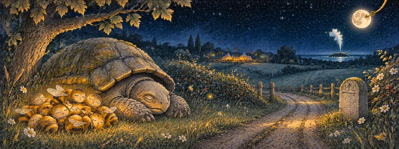 59 · La route de nuit vers le Carrefour ×5 | Tu marches longtemps. Le soleil se couche, la Lune se lève, énorme. La nuit tombe, et la nuit, enfin, ressemble un peu à ta maison. Tu sens les rêves de tous les dormeurs autour de toi, faibles, agités. Tu pourrais rentrer. Tu pourrais te glisser dans un rêve …Tu marches longtemps. Le soleil se couche, la Lune se lève, énorme. La nuit tombe, et la nuit, enfin, ressemble un peu à ta maison. Tu sens les rêves de tous les dormeurs autour de toi, faibles, agités. Tu pourrais rentrer. Tu pourrais te glisser dans un rêve et oublier tout ça. |
pne_01
Le Fleuve des Dormeurs | 39 · Le Fleuve des Dormeurs ×8 | Tu tombes dans le Fleuve des Dormeurs. C'est là que coulent tous les rêves de la Terre, la nuit, chacun dans sa bulle, comme des lanternes sur l'eau. Il y en a des milliards. Certains brillent, d'autres clignotent. Beaucoup éclatent. Sur la rive, un vieux pass…Tu tombes dans le Fleuve des Dormeurs. C'est là que coulent tous les rêves de la Terre, la nuit, chacun dans sa bulle, comme des lanternes sur l'eau. Il y en a des milliards. Certains brillent, d'autres clignotent. Beaucoup éclatent.
Sur la rive, un vieux passeur aux paupières lourdes pousse sa barque avec une perche. C'est le Passeur de paupières. Il connaît chaque rêve par le nom de son dormeur.
« Un Somnambule qui ne rentre pas chez lui ? On n'en voit pas souvent. Tu cherches quelqu'un ? » |
pis_44
| 09 · Le Carrefour des Espèces ×55 | À l'aube, tu arrives au sommet d'une colline. En bas, une immense plaine, couverte de tentes, de tribunes, de foules. Le Carrefour des Espèces. La Grande Panique. Des milliers de créatures, de toutes formes, qui crient, qui pleurent, qui discutent, qui vendent…À l'aube, tu arrives au sommet d'une colline. En bas, une immense plaine, couverte de tentes, de tribunes, de foules. Le Carrefour des Espèces. La Grande Panique. Des milliers de créatures, de toutes formes, qui crient, qui pleurent, qui discutent, qui vendent des beignets.
Au-dessus, la Lune, penchée, son crochet planté dedans. Tu lui fais un petit signe. |
pis_45
| 09 · Le Carrefour des Espèces ×55 | Tu reprends ta marche. Tu as de nouveau un peu de couleur. Au loin, un grondement de foule. Des panneaux plantés dans la terre : « GRANDE PANIQUE → ». Tu les lis lentement : dans les rêves, les lettres bougent, et celles de l'éveil restent bêtement en place. L…Tu reprends ta marche. Tu as de nouveau un peu de couleur. Au loin, un grondement de foule. Des panneaux plantés dans la terre : « GRANDE PANIQUE → ». Tu les lis lentement : dans les rêves, les lettres bougent, et celles de l'éveil restent bêtement en place. La flèche, elle, tu la comprends tout de suite. Les flèches, c'est universel. |
pne_01b
Le péage | 39 · Le Fleuve des Dormeurs ×8 | défautLe Passeur tend la main, paume ouverte. « On ne descend pas le fleuve sans payer. Ce n'est pas moi qui l'ai décidé. C'est le fleuve. Il prend un peu de chaque rêveur qui passe. » Tu n'as rien. Tu as un pyjama, un bonnet, et trois étoiles d'occasion qui brillen…Le Passeur tend la main, paume ouverte. « On ne descend pas le fleuve sans payer. Ce n'est pas moi qui l'ai décidé. C'est le fleuve. Il prend un peu de chaque rêveur qui passe. »
Tu n'as rien. Tu as un pyjama, un bonnet, et trois étoiles d'occasion qui brillent dessus. |
pis_46
| 09 · Le Carrefour des Espèces ×55 | Le Carrefour des Espèces. Tu y es. Tu es au milieu du monde éveillé, minuscule, plié, pâle, avec une promesse en plus. Au-dessus de toi, la Lune. Elle ne sait pas que tu es là. Mais tu sais qu'elle te regarde. Elle regarde tout le monde. C'est son métier.…Le Carrefour des Espèces. Tu y es. Tu es au milieu du monde éveillé, minuscule, plié, pâle, avec une promesse en plus. Au-dessus de toi, la Lune. Elle ne sait pas que tu es là. Mais tu sais qu'elle te regarde. Elle regarde tout le monde. C'est son métier. |
pne_02
Quatre lanternes | 39 · Le Fleuve des Dormeurs ×8 | défautQuatre bulles de rêve flottent devant la barque. Le Passeur les nomme une par une en les touchant de sa perche. « Un vieux pêcheur qui rêve de la mer. Une prêtresse qui rêve qu'elle tricote. Une géante qui rêve qu'elle porte encore la Terre. Une comète qui rêv…Quatre bulles de rêve flottent devant la barque. Le Passeur les nomme une par une en les touchant de sa perche.
« Un vieux pêcheur qui rêve de la mer. Une prêtresse qui rêve qu'elle tricote. Une géante qui rêve qu'elle porte encore la Terre. Une comète qui rêve de sa famille. Le crochet tire, là-haut. Leurs rêves se fendent. »
Il te tend la perche. « Tu entres où tu veux. Tu sors quand c'est réglé. » |
pne_02b
Le Passeur | 39 · Le Fleuve des Dormeurs ×8 | défautLe Passeur s'assoit à l'arrière de la barque pendant que tu tiens la perche. Il bâille. Il bâille depuis le début du monde. « Moi aussi, j'ai été un rêve, dans le temps. Un rêve de batelier, d'un vieux qui rêvait de rivière. Il est mort, le vieux. Moi, je suis…Le Passeur s'assoit à l'arrière de la barque pendant que tu tiens la perche. Il bâille. Il bâille depuis le début du monde.
« Moi aussi, j'ai été un rêve, dans le temps. Un rêve de batelier, d'un vieux qui rêvait de rivière. Il est mort, le vieux. Moi, je suis resté. On reste, parfois. »
Il te regarde, les paupières à moitié fermées. « Toi aussi, tu restes. Fais attention à ce que tu deviens, quand tu restes. » |
pne_hub
Sur le fleuve | 39 · Le Fleuve des Dormeurs ×8 | défautLes quatre lanternes t'attendent. Tu reviens dans la barque. Trois lanternes clignotent encore.…Les quatre lanternes t'attendent.
Tu reviens dans la barque. Trois lanternes clignotent encore.
Tu reviens dans la barque. Le fleuve coule plus vite. Il reste deux lanternes.
Tu reviens dans la barque. Le fleuve gronde. Il reste une lanterne, qui tremble.
Tu reviens dans la barque. Les quatre lanternes brillent, maintenant, toutes droites. Mais tout autour, le fleuve noircit. |
pne_ba1
La mer de Bartholomé | 14 · Le Ressac Triste ×12 | Tu es dans une barque, sur une mer verte. Un Marégrave rame, jeune encore, fait d'eau claire. Au loin, sur l'horizon, une silhouette lui fait signe : une Marégrave aux cheveux d'écume. Il rame vers elle. Elle ne se rapproche jamais. Et la mer se vide. Le croch…Tu es dans une barque, sur une mer verte. Un Marégrave rame, jeune encore, fait d'eau claire. Au loin, sur l'horizon, une silhouette lui fait signe : une Marégrave aux cheveux d'écume. Il rame vers elle. Elle ne se rapproche jamais.
Et la mer se vide. Le crochet tire, là-haut, et la marée du rêve s'en va, par le fond, comme une baignoire. La barque racle déjà le sable.
« Pas encore, Perline », dit le Marégrave. « Je ne t'ai pas encore rejointe. Pas encore. » |
pne_me1
Le tricot infini | 18 · Le Temple de la Pleine Lune ×11 | Un temple immense, plein de châles. Au milieu, une femme gigantesque avec trois paires de lunettes tricote la lumière de Lune. Le tricot descend des aiguilles, coule sur les marches, remplit le temple, déborde par les fenêtres. Il fait le tour du monde. C'est …Un temple immense, plein de châles. Au milieu, une femme gigantesque avec trois paires de lunettes tricote la lumière de Lune. Le tricot descend des aiguilles, coule sur les marches, remplit le temple, déborde par les fenêtres. Il fait le tour du monde. C'est lui qui éclaire les rêves.
Mais il se défait. Le crochet tire, là-haut, et un fil a sauté. Le tricot se démaille plus vite qu'elle ne tricote. La lumière file par le trou.
« NON NON NON. NE BOUGE PAS. NE BOUGE SURTOUT PAS. QUI ES-TU ? NE RÉPONDS PAS. TIENS ÇA. » |
pne_br1
L'Axe | 21 · Les Profondeurs et l'Axe de la Terre ×23 | Il fait nuit, et il fait lourd. Au milieu du noir, une géante de granit est debout, les bras levés. Elle porte quelque chose d'énorme et d'invisible, qui grince : l'Axe de la Terre. Dans la vraie vie, elle l'a lâché il y a longtemps. Elle est à la retraite. Ma…Il fait nuit, et il fait lourd. Au milieu du noir, une géante de granit est debout, les bras levés. Elle porte quelque chose d'énorme et d'invisible, qui grince : l'Axe de la Terre.
Dans la vraie vie, elle l'a lâché il y a longtemps. Elle est à la retraite. Mais toutes les nuits, en rêve, elle le reprend. Et ce soir, l'Axe glisse. Le crochet tire la Lune, la Lune tire la Terre, et la Terre penche dans ses bras.
« Recule, le pyjama. Si je lâche, tu es dessous. » |
pne_zo1
L'orbite familiale | 32 · La montée, la Terre vue d'en haut ×7 | provisoireUne immense ronde de comètes tourne autour d'un soleil de rêve. Ce sont les tantes, les cousins, les grands-parents, tous à la queue leu leu, depuis des milliards d'années. Une seule sort de la ronde, encore et encore : une petite comète adolescente qui file v…Une immense ronde de comètes tourne autour d'un soleil de rêve. Ce sont les tantes, les cousins, les grands-parents, tous à la queue leu leu, depuis des milliards d'années. Une seule sort de la ronde, encore et encore : une petite comète adolescente qui file vers le noir, revient, repart.
« Zouzou ! » crie une grosse comète, au milieu de la ronde. « Tous les soixante-seize ans ! On ne t'a demandé que ça ! »
Et ce soir, la ronde se défait. Le crochet tire, là-haut, et les orbites se croisent. Les comètes se cognent. La petite file, mais elle a peur, cette fois. Elle ne sait plus où revenir. |
pne_fin
Plus bas | 39 · Le Fleuve des Dormeurs ×8 | défautLe Passeur de paupières pousse la barque vers l'aval. Le fleuve change de couleur. Il était bleu. Il devient gris. Puis il devient noir, comme de l'encre. « Là-haut, le crochet tire. Les gens ont peur de ne plus s'endormir. Et la peur de ne pas dormir, ça fait…Le Passeur de paupières pousse la barque vers l'aval. Le fleuve change de couleur. Il était bleu. Il devient gris. Puis il devient noir, comme de l'encre.
« Là-haut, le crochet tire. Les gens ont peur de ne plus s'endormir. Et la peur de ne pas dormir, ça fait des cauchemars. Beaucoup. Il faut traverser leurs cauchemars pour descendre jusqu'à Platine. » Il te regarde. « Un Somnambule, ça vit dans les beaux rêves. Dans les cauchemars, ça ne tient pas. Sauf si on les fait siens. »
Ceux qui t'accompagnent se serrent dans la barque. Ce sont des rêves, eux aussi. Ils ont peur du noir. |
pne_ba1b
Le Marégrave qui rame | 14 · Le Ressac Triste ×12 | Le Marégrave rame sans s'arrêter. Il parle à quelqu'un, mais pas à toi. À la mer, peut-être. « Elle avait un rire comme une vague qui se casse sur un rocher. Pas joli. Fort. On l'entendait de l'autre bout de la côte. Les mouettes répondaient. »…Le Marégrave rame sans s'arrêter. Il parle à quelqu'un, mais pas à toi. À la mer, peut-être.
« Elle avait un rire comme une vague qui se casse sur un rocher. Pas joli. Fort. On l'entendait de l'autre bout de la côte. Les mouettes répondaient. »
Ton bonnet te semble plus léger. Il te reste deux étoiles. Tu te demandes quel enfant aura la troisième. |
pne_me1b
La prêtresse parle en tricotant | 18 · Le Temple de la Pleine Lune ×11 | La prêtresse tricote et parle en même temps, très fort, sans te regarder. « MILLE ANS QUE JE TRICOTE. AVANT, JE CROCHETAIS. LE CROCHET, C'EST VULGAIRE. NON. C'EST TRÈS BIEN, LE CROCHET. MAIS PAS CELUI-LÀ. » Elle montre le ciel du rêve, là où quelque chose tire…La prêtresse tricote et parle en même temps, très fort, sans te regarder.
« MILLE ANS QUE JE TRICOTE. AVANT, JE CROCHETAIS. LE CROCHET, C'EST VULGAIRE. NON. C'EST TRÈS BIEN, LE CROCHET. MAIS PAS CELUI-LÀ. » Elle montre le ciel du rêve, là où quelque chose tire.
« CHAQUE MAILLE, C'EST UNE NUIT. TU SAIS COMBIEN DE NUITS IL Y A DANS MILLE ANS ? MOI NON PLUS. JE COMPTE EN MAILLES. » |
pne_br1b
La géante parle en portant | 21 · Les Profondeurs et l'Axe de la Terre ×23 | La géante parle entre ses dents, pour ne pas lâcher. « Avant, il y avait des jours où je le portais bien. On ne me remerciait pas. Il y avait des jours où je le portais mal. Il y avait des tremblements de terre. On me le reprochait. » Elle crache un caillou. «…La géante parle entre ses dents, pour ne pas lâcher.
« Avant, il y avait des jours où je le portais bien. On ne me remerciait pas. Il y avait des jours où je le portais mal. Il y avait des tremblements de terre. On me le reprochait. » Elle crache un caillou. « On se souvient toujours des tremblements. » |
pne_zo1b
La ronde | 32 · La montée, la Terre vue d'en haut ×7 | provisoireTu restes un moment au bord de la ronde. Les comètes passent devant toi, une par une, en se présentant, parce qu'elles sont bien élevées. « Tante Aphélie. » « Cousin Périhélie. » « Grand-Mère Excentricité, quatre milliards d'années, toujours en forme. » Elles …Tu restes un moment au bord de la ronde. Les comètes passent devant toi, une par une, en se présentant, parce qu'elles sont bien élevées.
« Tante Aphélie. » « Cousin Périhélie. » « Grand-Mère Excentricité, quatre milliards d'années, toujours en forme. » Elles passent. Elles reviennent dans soixante-seize ans. Elles disent qu'elles se souviendront de toi. |
pnc_00
L'insomnie | 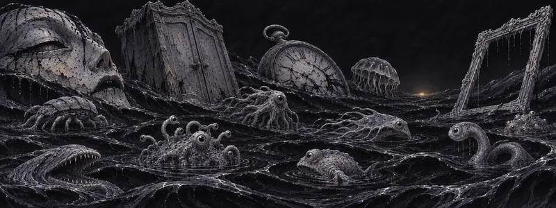 40 · L'eau noire ×27 | La barque s'arrête. Le Passeur ne va pas plus loin. Devant toi, sur des kilomètres, des cauchemars flottent sur l'eau noire, gros comme des maisons, fermés comme des poings. Tout autour, les bulles des beaux rêves éclatent, une par une. Pop. Pop. Et de chaque …La barque s'arrête. Le Passeur ne va pas plus loin. Devant toi, sur des kilomètres, des cauchemars flottent sur l'eau noire, gros comme des maisons, fermés comme des poings.
Tout autour, les bulles des beaux rêves éclatent, une par une. Pop. Pop. Et de chaque bulle qui éclate, il sort une petite bête grise, aux yeux grands ouverts, qui ne dormira plus jamais.
« Les Insomnies », dit le Passeur. « Elles naissent quand un rêve éclate. Elles vont où il fait noir. Elles te suivront. » |
pne_ba2
La marée qui part | 14 · Le Ressac Triste ×12 | La mer n'est plus qu'une flaque autour de la barque. Perline est toujours là, sur l'horizon, debout sur le sable mouillé. Le Marégrave lâche les rames. Il a l'air très vieux, tout d'un coup. « Vingt ans que je rame. Elle est partie avec la grande marée. Si la …La mer n'est plus qu'une flaque autour de la barque. Perline est toujours là, sur l'horizon, debout sur le sable mouillé. Le Marégrave lâche les rames. Il a l'air très vieux, tout d'un coup.
« Vingt ans que je rame. Elle est partie avec la grande marée. Si la marée s'en va pour de bon, elle ne pourra jamais revenir. » |
pne_me2
La maille | 18 · Le Temple de la Pleine Lune ×11 | La prêtresse s'arrête de tricoter. C'est la première fois depuis mille ans. Elle te regarde à travers ses trois paires de lunettes. « LE TROU. IL FAUT REPRENDRE LA MAILLE. JE N'Y ARRIVE PAS. MES DOIGTS SONT TROP GROS POUR UNE SI PETITE MAILLE. TU AS DES DOIGTS…La prêtresse s'arrête de tricoter. C'est la première fois depuis mille ans. Elle te regarde à travers ses trois paires de lunettes.
« LE TROU. IL FAUT REPRENDRE LA MAILLE. JE N'Y ARRIVE PAS. MES DOIGTS SONT TROP GROS POUR UNE SI PETITE MAILLE. TU AS DES DOIGTS ? TU AS DES DOIGTS ! » |
pne_br2
Ce qui pèse | 21 · Les Profondeurs et l'Axe de la Terre ×23 | « Trois mille ans », dit la géante. « J'ai tenu trois mille ans. On m'a mise à la retraite. Mais je le reprends toutes les nuits. Si je ne le tiens pas, qui le tient ? » L'Axe grince. Elle serre les dents, et des cailloux tombent de sa mâchoire.…« Trois mille ans », dit la géante. « J'ai tenu trois mille ans. On m'a mise à la retraite. Mais je le reprends toutes les nuits. Si je ne le tiens pas, qui le tient ? »
L'Axe grince. Elle serre les dents, et des cailloux tombent de sa mâchoire. |
pne_zo2
Revenir | 32 · La montée, la Terre vue d'en haut ×7 | provisoireLa petite comète s'est arrêtée au bord du noir. Derrière elle, la ronde familiale se cogne et s'emmêle. Devant elle, rien. « Je ne veux pas tourner en rond toute ma vie. Mais je ne veux pas qu'ils se cassent. Je ne sais pas ce que je veux. J'ai quatorze mille …La petite comète s'est arrêtée au bord du noir. Derrière elle, la ronde familiale se cogne et s'emmêle. Devant elle, rien.
« Je ne veux pas tourner en rond toute ma vie. Mais je ne veux pas qu'ils se cassent. Je ne sais pas ce que je veux. J'ai quatorze mille ans. » |
pnc_00b
Les premiers pas | 40 · L'eau noire ×27 | défautL'eau noire porte, mais elle colle. Chaque pas fait un bruit de baiser mouillé. Derrière toi, le Passeur ne bouge plus. Il te regarde partir. Il ne te fait pas signe. On ne fait pas signe, ici. Tu penses : les beaux rêves, c'était facile. Il suffisait d'être g…L'eau noire porte, mais elle colle. Chaque pas fait un bruit de baiser mouillé. Derrière toi, le Passeur ne bouge plus. Il te regarde partir. Il ne te fait pas signe. On ne fait pas signe, ici.
Tu penses : les beaux rêves, c'était facile. Il suffisait d'être gentil. Ici, tu ne sais pas encore ce qu'il faudra être. |
pne_ba3
Le pêcheur | 14 · Le Ressac Triste ×12 | La mer du rêve est revenue, un peu. Elle clapote. Perline est toujours sur l'horizon. Le Marégrave ne rame plus. Il la regarde, et c'est assez, pour cette nuit. Tu tends le coquillage au Marégrave. Il écoute. Il ferme les yeux. « C'est elle. » Il te le rend. «…La mer du rêve est revenue, un peu. Elle clapote. Perline est toujours sur l'horizon. Le Marégrave ne rame plus. Il la regarde, et c'est assez, pour cette nuit.
Tu tends le coquillage au Marégrave. Il écoute. Il ferme les yeux. « C'est elle. » Il te le rend. « Garde-le. Moi, maintenant, je m'en souviens. »
La mer du rêve est presque vide. Le Marégrave s'est rendormi au fond de sa barque, sur le sable.
Il te regarde. « Bartholomé. Vasequeuse. Dans la vraie vie, je râle. Ici, je suis jeune, et j'ai rien à faire. Tu vas où ? » |
pne_me3
La prêtresse | 18 · Le Temple de la Pleine Lune ×11 | Le tricot de lumière coule à nouveau, régulier, par les fenêtres du temple. Il éclaire les rêves, un peu moins bien qu'avant. Assez. Le tricot coule, troué. Les rêves, en bas, clignotent.…Le tricot de lumière coule à nouveau, régulier, par les fenêtres du temple. Il éclaire les rêves, un peu moins bien qu'avant. Assez.
Le tricot coule, troué. Les rêves, en bas, clignotent.
Elle détache une maille de son ouvrage et te la donne. Une petite boucle de lumière de Lune, tiède. « TANTE MÉLUSINE. POUR TOI. ÇA RÉPARE TOUT CE QUI SE DÉFAIT. LES TROUS, LES CHAUSSETTES, LES GENS. PAS LES GENS. UN PEU LES GENS. » |
pne_br3
La géante | 21 · Les Profondeurs et l'Axe de la Terre ×23 | L'Axe tient tout seul, au-dessus du rêve. La géante est assise, les bras ballants. Elle ne sait pas quoi en faire, de ses bras. La géante tient toujours l'Axe. Elle tiendra jusqu'au matin.…L'Axe tient tout seul, au-dessus du rêve. La géante est assise, les bras ballants. Elle ne sait pas quoi en faire, de ses bras.
La géante tient toujours l'Axe. Elle tiendra jusqu'au matin.
Elle gratte le sol et en tire un grain gris, lourd comme une montagne, petit comme une lentille. « Un grain de l'Axe. Il est tombé quand j'ai lâché. Colonelle Agathe Brisefer. Prends-le. Tout ce qui flotte, ça le tient en place. » |
pne_zo3
La comète | 32 · La montée, la Terre vue d'en haut ×7 | provisoireLa ronde tourne à nouveau, presque droite. La petite comète passe devant elle, et repart, et repasse. Sa mère ne crie plus. Elle compte les passages. La ronde se cogne. La petite comète est restée au bord du noir.…La ronde tourne à nouveau, presque droite. La petite comète passe devant elle, et repart, et repasse. Sa mère ne crie plus. Elle compte les passages.
La ronde se cogne. La petite comète est restée au bord du noir.
Elle secoue sa queue au-dessus de toi. Une poussière dorée tombe dans ta main. « Zouzou. Poussière de comète. Ça brille dans le noir. Ça ne sert à rien, sauf quand il fait noir. Il fait souvent noir, chez vous. » |
pnc_hub
L'eau noire | 40 · L'eau noire ×27 | défautL'encre te monte jusqu'aux yeux. Tu ne la sens plus. Tu ne sens plus rien d'autre. Six cauchemars, plus gros que les autres, bloquent le chemin vers le fond. Il faudra les traverser.…L'encre te monte jusqu'aux yeux. Tu ne la sens plus. Tu ne sens plus rien d'autre.
Six cauchemars, plus gros que les autres, bloquent le chemin vers le fond. Il faudra les traverser.
Les gros cauchemars bloquent encore le chemin. Tu en as traversé quelques-uns. Ils ne se ressemblent pas, mais ils ont tous le même goût.
Un dernier gros cauchemar bloque le chemin.
Tes mains sont noires jusqu'aux coudes. Ton pyjama s'assombrit. Tes étoiles brillent d'une lumière froide. Tu te sens fort. Tu n'avais jamais été fort.
L'encre te monte aux poignets. Les dés t'obéissent mieux. Tu ne sais pas si c'est bien.
Les Insomnies te suivent en file, les yeux grands ouverts. |
pne_route
Sur le fleuve, entre deux rêves | 39 · Le Fleuve des Dormeurs ×8 | défautEntre deux lanternes, une bulle crevée flotte à la dérive. Dedans, il reste un morceau de rêve : une porte, seule, au milieu de rien, qui s'ouvre et se ferme. Le fleuve passe sous un pont de sommeil. Sur le pont, des dormeurs marchent sans se réveiller, en fil…Entre deux lanternes, une bulle crevée flotte à la dérive. Dedans, il reste un morceau de rêve : une porte, seule, au milieu de rien, qui s'ouvre et se ferme.
Le fleuve passe sous un pont de sommeil. Sur le pont, des dormeurs marchent sans se réveiller, en file, vers l'autre rive. Ils vont vers des rêves qui n'existent plus.
Une pluie fine tombe sur le fleuve. Ce sont des larmes de dormeurs. Elles font des ronds sur l'eau, et chaque rond montre, une seconde, le visage de quelqu'un qui pleure en dormant.
Le fleuve ralentit. Les quatre lanternes brillent derrière toi. Devant, il commence à faire très sombre. |
end_37
Perdu dans l'encre | 40 · L'eau noire ×27 | L'encre monte. Elle monte depuis le début. Tu croyais la tenir. C'est elle qui te tenait. Elle te passe les épaules, le cou, le bonnet. Tes étoiles s'éteignent, une par une. Tu essaies de te souvenir de ta tasse de thé. Tu te souviens d'une tasse. Tu ne sais p…L'encre monte. Elle monte depuis le début. Tu croyais la tenir. C'est elle qui te tenait.
Elle te passe les épaules, le cou, le bonnet. Tes étoiles s'éteignent, une par une. Tu essaies de te souvenir de ta tasse de thé. Tu te souviens d'une tasse. Tu ne sais plus de qui. Tu essaies de te souvenir de ton nom. Il commence par quelque chose. Il ne finit pas.
Tu deviens un cauchemar. Pas celui de quelqu'un. Un cauchemar sans dormeur, sans nom, sans forme, qui flotte sur l'eau noire et qui cherche quelqu'un à qui faire peur. N'importe qui. Il en trouve beaucoup, cette nuit-là.
Ceux qui étaient venus avec toi t'appellent. Tu entends des voix. Tu ne sais plus que ce sont des noms. Ils remontent sans toi, en pleurant, chacun dans son rêve. Au matin, ils ne s'en souviendront pas. Ils se réveilleront avec un poids sur la poitrine, comme quand on a oublié quelqu'un.
Personne ne descend dans le rêve de Platine. Il dort bien, cette nuit-là, au fond de son or. À l'aube, les moteurs démarrent tout seuls. La Lune part, comme prévu, dans le silence.
Tu lui avais promis quelque chose. Tu ne sais plus quoi.
Dans les rêves de la Terre, maintenant, il y a quelque chose de noir qui passe, parfois, sans visage. Les enfants l'appellent l'Encre. Ils ne savent pas que c'était un pyjama, avec trois étoiles d'occasion, qui avait voulu bien faire. |
pnc_a1
Le cauchemar qui tombe | 40 · L'eau noire ×27 | défautUn petit Gravitaire, à peine plus haut qu'une maison, tombe. Il tombe dans le noir, les bras écartés, depuis le début de la nuit. Il n'y a pas de fond. La Terre penche, alors il rêve qu'elle le lâche. Tu tombes avec lui. C'est son cauchemar ; tu n'y peux rien.…Un petit Gravitaire, à peine plus haut qu'une maison, tombe. Il tombe dans le noir, les bras écartés, depuis le début de la nuit. Il n'y a pas de fond. La Terre penche, alors il rêve qu'elle le lâche.
Tu tombes avec lui. C'est son cauchemar ; tu n'y peux rien. Il crie sans voix. Autour de vous, des Insomnies tombent aussi, les yeux ouverts, en riant. |
pnc_b1
Le cauchemar qui fait tic-tac | 40 · L'eau noire ×27 | défautUne salle pleine d'horloges. Au milieu, un vieil Horloger en laiton est allongé, les mains croisées. Il rêve que son tic-tac s'arrête à l'aube. Autour de lui, toutes les horloges ralentissent, une à une. Tic. Puis rien. Tac. Puis rien. « Sans Lune, plus de mar…Une salle pleine d'horloges. Au milieu, un vieil Horloger en laiton est allongé, les mains croisées. Il rêve que son tic-tac s'arrête à l'aube. Autour de lui, toutes les horloges ralentissent, une à une. Tic. Puis rien. Tac. Puis rien.
« Sans Lune, plus de marées. Sans marées, plus de temps. Sans temps, plus d'Horlogers. C'est logique. Je n'aime pas que ce soit logique. » |
pnc_c1
Le cauchemar qui sent le sel | 40 · L'eau noire ×27 | défautUn village de Marégraves, au bord d'une mer qui part. Pas qui recule : qui part. Elle se lève, comme un drap, et s'envole vers la Lune, avec ses poissons, ses bateaux, ses noyés. Les Marégraves courent derrière elle. Ils sont faits d'eau. Ils commencent à s'en…Un village de Marégraves, au bord d'une mer qui part. Pas qui recule : qui part. Elle se lève, comme un drap, et s'envole vers la Lune, avec ses poissons, ses bateaux, ses noyés. Les Marégraves courent derrière elle. Ils sont faits d'eau. Ils commencent à s'envoler aussi.
Une vieille Marégrave s'accroche à un poteau. « Si la mer part, on part avec. On ne sait pas faire autrement. » |
pnc_d1
Le cauchemar tout noir | 40 · L'eau noire ×27 | défautUn enfant Lichenaute est assis dans un champ, la nuit. Il lève la tête. Le ciel est vide. Pas d'étoile, pas de nuage, pas de Lune. Rien. Il attend qu'elle se lève. Elle ne se lèvera plus. C'est tout le cauchemar. Il n'y a rien d'autre dedans, et c'est ça qui f…Un enfant Lichenaute est assis dans un champ, la nuit. Il lève la tête. Le ciel est vide. Pas d'étoile, pas de nuage, pas de Lune. Rien. Il attend qu'elle se lève. Elle ne se lèvera plus. C'est tout le cauchemar. Il n'y a rien d'autre dedans, et c'est ça qui fait peur.
L'enfant ne pleure pas. Il est trop lent pour pleurer. Il regarde. |
pnc_e1
Le cauchemar qui sent la lessive | 40 · L'eau noire ×27 | défautUne immense armoire, dans le noir. Dedans, sur des étagères, des pyjamas pliés. Des milliers. Chacun a un bonnet, et sur chaque bonnet, des étoiles éteintes. Ce sont des Somnambules. Tes cousins, tes voisins, tes semblables. C'est leur cauchemar à tous : la lu…Une immense armoire, dans le noir. Dedans, sur des étagères, des pyjamas pliés. Des milliers. Chacun a un bonnet, et sur chaque bonnet, des étoiles éteintes. Ce sont des Somnambules. Tes cousins, tes voisins, tes semblables.
C'est leur cauchemar à tous : la lumière de Lune s'éteint, et ils redeviennent des pyjamas. Juste des pyjamas. Pliés. Rangés. Pour toujours.
L'armoire se referme, doucement, une porte après l'autre. |
pnc_f1
Le cauchemar qui fait des tampons | 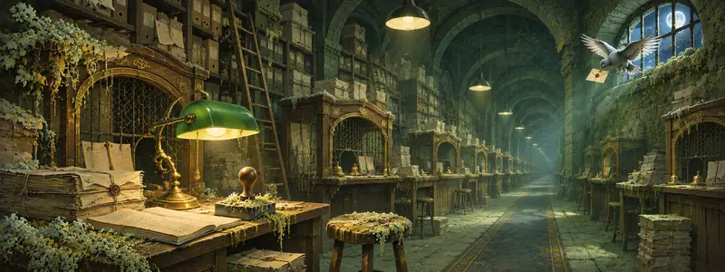 02 · Le guichet zéro ×8 | Un guichet, dans le noir. Derrière, un petit lichen gris, avec des lunettes, signe un papier. Clac, un tampon. Il le pose. Un autre papier arrive. Le même. Il signe. Clac. Sur chaque papier, en lettres dorées : « ACTE DE VENTE. LA LUNE. » Il ne peut pas s'arrê…Un guichet, dans le noir. Derrière, un petit lichen gris, avec des lunettes, signe un papier. Clac, un tampon. Il le pose. Un autre papier arrive. Le même. Il signe. Clac. Sur chaque papier, en lettres dorées : « ACTE DE VENTE. LA LUNE. »
Il ne peut pas s'arrêter. Il signe la vente de la Lune, encore et encore, depuis le début de la nuit. Ses mains tremblent. Les tampons pleuvent du plafond.
« Je n'ai pas fait exprès. Je n'ai pas lu. Personne ne lit. Je n'ai pas fait exprès. » Clac. |
pnc_a1b
Les Insomnies qui tombent | 40 · L'eau noire ×27 | défautAutour de vous, des Insomnies tombent aussi, en riant. Elles ne crient pas. Elles adorent tomber. Elles tombent depuis qu'elles sont nées, c'est-à-dire depuis cinq minutes. Elles tournent autour du petit Gravitaire. Plus elles rient, plus il a peur. Plus il a …Autour de vous, des Insomnies tombent aussi, en riant. Elles ne crient pas. Elles adorent tomber. Elles tombent depuis qu'elles sont nées, c'est-à-dire depuis cinq minutes.
Elles tournent autour du petit Gravitaire. Plus elles rient, plus il a peur. Plus il a peur, plus la chute est longue. |
pnc_b1b
La grande horloge | 40 · L'eau noire ×27 | défautAu fond de la salle, une horloge plus grande que les autres. Elle n'a pas d'heures : elle a des phases de Lune. Pleine, gibbeuse, quartier, croissant, nouvelle. Son aiguille unique est coincée sur la pleine Lune, et elle tremble. Elle voudrait avancer. Elle ne…Au fond de la salle, une horloge plus grande que les autres. Elle n'a pas d'heures : elle a des phases de Lune. Pleine, gibbeuse, quartier, croissant, nouvelle. Son aiguille unique est coincée sur la pleine Lune, et elle tremble. Elle voudrait avancer. Elle ne peut pas.
C'est d'elle que dépendent toutes les autres. |
pnc_c1b
Les noyés | 40 · L'eau noire ×27 | défautLa mer, en s'envolant, rend ce qu'elle gardait au fond. Les noyés remontent. Ils ne font pas peur. Ce sont des marins, des baigneurs, des enfants d'autrefois, tout pâles, qui flottent doucement vers la Lune avec la mer. Ils ont l'air de rentrer chez eux. Les M…La mer, en s'envolant, rend ce qu'elle gardait au fond. Les noyés remontent. Ils ne font pas peur. Ce sont des marins, des baigneurs, des enfants d'autrefois, tout pâles, qui flottent doucement vers la Lune avec la mer. Ils ont l'air de rentrer chez eux.
Les Marégraves les regardent passer. Ils connaissent des noms. |
pnc_d1b
Les autres enfants | 40 · L'eau noire ×27 | défautDans le champ, il n'y a pas qu'un enfant. Il y en a d'autres, couchés dans l'herbe, endormis, partout. Chacun fait le même cauchemar : le ciel vide. Ils se sont tous retrouvés dans le même, sans le savoir. Un cauchemar partagé, c'est plus lourd.…Dans le champ, il n'y a pas qu'un enfant. Il y en a d'autres, couchés dans l'herbe, endormis, partout. Chacun fait le même cauchemar : le ciel vide. Ils se sont tous retrouvés dans le même, sans le savoir. Un cauchemar partagé, c'est plus lourd. |
pnc_e1b
L'armoire | 40 · L'eau noire ×27 | défautDans l'armoire, sur l'étagère du milieu, il y a une place vide. Juste ta taille. Elle t'attend. Une petite étiquette, cousue : « PISTIL ». Tu sens que si tu t'allongeais là, ce serait reposant. Plus de promesse. Plus d'encre. Juste être plié.…Dans l'armoire, sur l'étagère du milieu, il y a une place vide. Juste ta taille. Elle t'attend. Une petite étiquette, cousue : « PISTIL ».
Tu sens que si tu t'allongeais là, ce serait reposant. Plus de promesse. Plus d'encre. Juste être plié. |
pnc_f1b
La pile | 02 · Le guichet zéro ×8 | Les papiers s'empilent. La pile monte. Elle va écraser le guichet, et le petit lichen dessous. Lui continue à signer. Il ne sait plus faire autre chose.…Les papiers s'empilent. La pile monte. Elle va écraser le guichet, et le petit lichen dessous. Lui continue à signer. Il ne sait plus faire autre chose. |
pnc_a1c
Le petit Gravitaire | 40 · L'eau noire ×27 | défautVous tombez. Le petit Gravitaire a fini par te voir. Il ouvre la bouche. Il a une voix, dans la chute, une petite voix de caillou. « Tu es un rêve ou un cauchemar ? » Tu ne sais pas quoi répondre. « Les cauchemars, ils ne tombent pas. Ils poussent. Toi, tu tom…Vous tombez. Le petit Gravitaire a fini par te voir. Il ouvre la bouche. Il a une voix, dans la chute, une petite voix de caillou.
« Tu es un rêve ou un cauchemar ? » Tu ne sais pas quoi répondre. « Les cauchemars, ils ne tombent pas. Ils poussent. Toi, tu tombes. Alors tu es un rêve. » |
pnc_b1c
Les horloges qui parlent | 40 · L'eau noire ×27 | défautLes horloges, en ralentissant, chuchotent. Chacune dit sa dernière heure. « Six heures douze, le jour où il a appris à marcher. » « Minuit moins le quart, le soir où il a vu la mer. » « Trois heures, la nuit où il n'a pas dormi. » L'Horloger les écoute, allong…Les horloges, en ralentissant, chuchotent. Chacune dit sa dernière heure. « Six heures douze, le jour où il a appris à marcher. » « Minuit moins le quart, le soir où il a vu la mer. » « Trois heures, la nuit où il n'a pas dormi. »
L'Horloger les écoute, allongé. « Ce sont les miennes. Toutes mes heures. Elles me disent au revoir. C'est poli. » |
pnc_c1c
La vieille au poteau | 40 · L'eau noire ×27 | défautLa vieille Marégrave tient son poteau d'une main. De l'autre, elle tient un panier vide. « C'était pour les coques. Il n'y a plus de coques. Elles sont parties avec la mer. » Elle te regarde, petit pyjama accroché à sa jupe d'eau. « Tu n'es pas d'ici. Ici, tou…La vieille Marégrave tient son poteau d'une main. De l'autre, elle tient un panier vide. « C'était pour les coques. Il n'y a plus de coques. Elles sont parties avec la mer. »
Elle te regarde, petit pyjama accroché à sa jupe d'eau. « Tu n'es pas d'ici. Ici, tout le monde est fait de mer. Toi, tu es fait de quoi ? » « De flanelle. » « Ça sèche vite, la flanelle ? » « Oui. » « Tant mieux pour toi. » |
pnc_d1c
L'enfant lent | 40 · L'eau noire ×27 | défautL'enfant Lichenaute a mis longtemps à tourner la tête vers toi. Maintenant, il parle. Un mot toutes les dix secondes. « Elle... se... lève... tous... les... soirs. » Silence. « Je... l'attends... toujours. » Silence. « Elle... arrive... toujours... avant... mo…L'enfant Lichenaute a mis longtemps à tourner la tête vers toi. Maintenant, il parle. Un mot toutes les dix secondes.
« Elle... se... lève... tous... les... soirs. » Silence. « Je... l'attends... toujours. » Silence. « Elle... arrive... toujours... avant... moi. »
Tu comprends : il est si lent qu'il n'a jamais vu la Lune se lever. Elle est toujours déjà là, quand il lève la tête. Ce soir, pour la première fois, il est arrivé avant elle. Et elle ne vient pas. |
pnc_e1c
Les voisins de tiroir | 40 · L'eau noire ×27 | défautDans l'armoire, sur les étagères, tu reconnais des pyjamas. Pas tous. Quelques-uns. Celui-là, à rayures, habitait la chaussette d'un marin. Celui-ci, en pilou, dormait dans un tiroir de commode, chez une vieille dame qui rêvait de valses. Ils ne te reconnaisse…Dans l'armoire, sur les étagères, tu reconnais des pyjamas. Pas tous. Quelques-uns. Celui-là, à rayures, habitait la chaussette d'un marin. Celui-ci, en pilou, dormait dans un tiroir de commode, chez une vieille dame qui rêvait de valses.
Ils ne te reconnaissent pas. Leurs étoiles sont éteintes. Ils sont pliés.
Tu penses : si je n'étais pas resté, je serais là, moi aussi, peut-être. Ou peut-être que c'est parce que je suis resté que l'armoire a une place pour moi. |
pnc_f1c
Le guichet | 02 · Le guichet zéro ×8 | Derrière le petit lichen, au mur, des affiches. « LE GUICHET VOUS REMERCIE DE VOTRE PATIENCE. » « UN TAMPON BIEN FAIT EST UN TAMPON POUR TOUJOURS. » Et une petite photo, punaisée de travers : un galet gris sur un coussin rouge. « C'est le Président », dit le p…Derrière le petit lichen, au mur, des affiches. « LE GUICHET VOUS REMERCIE DE VOTRE PATIENCE. » « UN TAMPON BIEN FAIT EST UN TAMPON POUR TOUJOURS. » Et une petite photo, punaisée de travers : un galet gris sur un coussin rouge.
« C'est le Président », dit le petit lichen, sans s'arrêter. Clac. « Il ne parle pas. Je l'entends quand même. Je suis le seul. » Clac. « Il ne m'a jamais rien reproché. C'est pire. » |
pnc_a2
Le fond | 40 · L'eau noire ×27 | défautIl n'y a pas de fond. Il faut en faire un. Ou faire de la chute autre chose. Tu sens l'encre dans tes mains, prête. Tu pourrais prendre ce cauchemar, le plier, le faire tien. Il t'obéirait. Tu serais plus fort.…Il n'y a pas de fond. Il faut en faire un. Ou faire de la chute autre chose.
Tu sens l'encre dans tes mains, prête. Tu pourrais prendre ce cauchemar, le plier, le faire tien. Il t'obéirait. Tu serais plus fort. |
pnc_b2
L'aube | 40 · L'eau noire ×27 | défautDans le cauchemar, le jour se lève. Les horloges s'arrêtent toutes ensemble. L'Horloger ferme les yeux. Il attend son dernier tic.…Dans le cauchemar, le jour se lève. Les horloges s'arrêtent toutes ensemble. L'Horloger ferme les yeux. Il attend son dernier tic. |
pnc_c2
La mer en l'air | 40 · L'eau noire ×27 | défautLa mer flotte au-dessus du village, immense, à l'envers. Elle hésite. Elle ne sait pas si elle doit suivre la Lune ou rester.…La mer flotte au-dessus du village, immense, à l'envers. Elle hésite. Elle ne sait pas si elle doit suivre la Lune ou rester. |
pnc_d2
Le trou | 40 · L'eau noire ×27 | défautLe ciel vide pèse. Il descend un peu. L'herbe du champ se couche, comme sous un couvercle.…Le ciel vide pèse. Il descend un peu. L'herbe du champ se couche, comme sous un couvercle. |
pnc_e2
Les pyjamas | 40 · L'eau noire ×27 | défautL'armoire est presque fermée. Il reste une fente de lumière.…L'armoire est presque fermée. Il reste une fente de lumière. |
pnc_f2
Clac | 02 · Le guichet zéro ×8 | Le petit lichen lève son tampon pour la millième fois.…Le petit lichen lève son tampon pour la millième fois. |
pnc_route
Entre deux cauchemars | 40 · L'eau noire ×27 | défautL'encre est partout. Tu n'arrives plus à te souvenir de ta tasse. En sortant du cauchemar, tu marches sur l'eau noire. Les Insomnies sont venues à ta rencontre, des dizaines, petites, grises, les yeux grands ouverts. Elles ne dorment jamais. Elles te regardent…L'encre est partout. Tu n'arrives plus à te souvenir de ta tasse.
En sortant du cauchemar, tu marches sur l'eau noire. Les Insomnies sont venues à ta rencontre, des dizaines, petites, grises, les yeux grands ouverts. Elles ne dorment jamais. Elles te regardent comme on regarde un chef. « Prends-nous. On ne dort pas. On t'aidera à ce que personne ne dorme. »
En sortant du cauchemar, une vieille ombre t'attend, assise sur l'eau noire, avec une valise. Elle a un chapeau, et un curriculum vitae très long. « La Peur-du-Noir. Quarante mille ans d'expérience. Placards, dessous de lits, couloirs, caves. On ne m'emploie plus : les enfants ont des veilleuses. Je cherche un poste. »
En sortant du cauchemar, une boutique flotte sur l'eau noire. Au comptoir, un Marchand de Sommeil, gras, souriant, avec des sacs de sable doré. « Tout le monde veut dormir, ce soir ! Je vends le sommeil au poids. Très cher. Pour toi, j'ai mieux : des larmes de Lune, en flacon. Des vraies. Elles font pleurer n'importe quel rêve. »
En sortant du cauchemar, tu retrouves le Passeur de paupières, assis dans sa barque, sur l'eau noire. Il a l'air vieux. « Tu as les mains sales, petit Somnambule. Je peux te les laver. Ça te rendra plus faible. »
En sortant du cauchemar, une petite bulle intacte flotte vers toi, toute seule. C'est un beau rêve, le dernier du coin. Il brille faiblement. Il se cache derrière toi, comme un chaton sous une chaise. Il cherche un refuge.
Le chemin est libre. L'eau noire descend en pente, vers le fond. Tout au fond, quelque chose brille. Quelque chose de doré. |
pnc_pie
La pièce d'or | 40 · L'eau noire ×27 | défautC'est une pièce d'or. Une seule, grande comme une roue, qui roule sur l'eau noire en faisant le tour de quelque chose qui n'est pas là. En roulant, elle compte. « Une. Deux. Cent. Une. Deux. Cent. » C'est un cauchemar. Pas n'importe lequel. Tu le reconnais à s…C'est une pièce d'or. Une seule, grande comme une roue, qui roule sur l'eau noire en faisant le tour de quelque chose qui n'est pas là. En roulant, elle compte. « Une. Deux. Cent. Une. Deux. Cent. »
C'est un cauchemar. Pas n'importe lequel. Tu le reconnais à son goût de métal froid : c'est celui de Platine. Il s'est échappé de son rêve quand les bulles ont éclaté. Il cherche son propriétaire. Il ne sait plus où il habite.
Tu l'as écoutée. Tu sais ce qu'elle compte : les jours, au fond d'un coffre, quand il était petit.
« Tu vas chez lui ? » dit la pièce, sans s'arrêter de rouler. « Emmène-moi. Je te montrerai le chemin. Je connais tous ses coins. Je suis ce qu'il a de plus profond. » |
pnc_pie2
La pente | 40 · L'eau noire ×27 | défautLa pièce d'or roule devant toi, sur la pente d'eau noire. Elle fait un bruit de clochette, en roulant. Ça te rappelle quelque chose. Une petite cuillère contre une tasse. Il te reste deux étoiles. Elles brillent froid. Tu te demandes si celle que tu as donnée …La pièce d'or roule devant toi, sur la pente d'eau noire. Elle fait un bruit de clochette, en roulant. Ça te rappelle quelque chose. Une petite cuillère contre une tasse.
Il te reste deux étoiles. Elles brillent froid. Tu te demandes si celle que tu as donnée brille encore, quelque part dans le fleuve.
Tu regardes tes mains. Tu ne te souviens plus d'avoir eu des mains de flanelle. Tu sais que c'était le cas. Tu ne t'en souviens plus.
Tes mains sont presque propres. L'eau noire glisse dessus sans les prendre. Tu ne sais pas si c'est de la chance ou si c'est toi. |
pno_00
Le rêve de Platine | 41 · Le rêve de Platine ×15 | Tout au fond, là où l'eau est froide, il y a une bulle dorée, énorme, lisse, sans une fêlure. Le rêve de Gédéon Platine. Elle ne laisse rien entrer. La pièce d'or roule jusqu'à elle, et la bulle s'ouvre, comme une porte qui reconnaît sa clé. Tu entres derrière…Tout au fond, là où l'eau est froide, il y a une bulle dorée, énorme, lisse, sans une fêlure. Le rêve de Gédéon Platine. Elle ne laisse rien entrer.
La pièce d'or roule jusqu'à elle, et la bulle s'ouvre, comme une porte qui reconnaît sa clé. Tu entres derrière elle.
Tu poses ta main noire sur la bulle. Elle résiste. Puis l'encre trouve une fente, minuscule, et tu te glisses dedans, en te pliant comme une lettre.
Tu poses ta main de flanelle sur la bulle. Elle résiste. Alors tu cherches, tout autour, la seule fente qu'aucun rêve ne peut fermer : celle par où sortent les soupirs. Tu te plies comme une lettre, et tu passes.
Dedans, une salle immense, toute en or, vide. Des piscines sans personne. Des fenêtres sur rien. Et au milieu, un coffre fermé.
Platine dort dans un lit d'or, au bord d'une piscine. Il a l'air très seul. Il a l'air de ne pas savoir qu'il l'est.
Tu sais ce qu'il faut faire. Le Passeur l'a dit. Il faut qu'il ait peur de la Lune. Qu'il ait si peur qu'il la lâche. Il faut lui construire un cauchemar sur mesure, ici, dans son or. |
pno_00b
Les gardiens du sommeil | 41 · Le rêve de Platine ×15 | défautDans l'entrée du rêve de Platine, deux vigiles dorés montent la garde, en rêve, devant un rideau d'or. Ils dorment debout, les yeux ouverts. Ce sont les gardiens de son sommeil. Personne n'entre dans les rêves de Platine. Personne n'y est jamais entré.…Dans l'entrée du rêve de Platine, deux vigiles dorés montent la garde, en rêve, devant un rideau d'or. Ils dorment debout, les yeux ouverts. Ce sont les gardiens de son sommeil. Personne n'entre dans les rêves de Platine. Personne n'y est jamais entré. |
pno_00c
La Salle des choses seules, en rêve | 42 · La Salle des choses seules ×5 | Avant la grande salle d'or, une galerie de vitrines. Dans son rêve, Platine a rangé ici ce qu'il a de plus précieux : le dernier flocon d'un hiver, une chanson en bocal, un coucher de soleil plié en huit. Au milieu, un socle vide, rond, qui attend la Lune. Dan…Avant la grande salle d'or, une galerie de vitrines. Dans son rêve, Platine a rangé ici ce qu'il a de plus précieux : le dernier flocon d'un hiver, une chanson en bocal, un coucher de soleil plié en huit. Au milieu, un socle vide, rond, qui attend la Lune.
Dans le rêve, les objets parlent. Tout bas. Ils disent tous la même chose : « On nous a achetés pour ne pas être seuls. On est seuls. » |
pno_00d
Le lit d'or | 41 · Le rêve de Platine ×15 | Tu traverses la grande salle. Ton pas ne fait aucun bruit sur l'or. Rien ne fait de bruit, ici. Même l'eau des piscines retient son souffle. Le lit est immense. Platine y tient tout petit, au bord, comme s'il avait peur de prendre trop de place. À côté de lui,…Tu traverses la grande salle. Ton pas ne fait aucun bruit sur l'or. Rien ne fait de bruit, ici. Même l'eau des piscines retient son souffle.
Le lit est immense. Platine y tient tout petit, au bord, comme s'il avait peur de prendre trop de place. À côté de lui, sur la table de nuit, une tasse de café, froide, pleine. Il ne la boit jamais. Il la fait servir quand même.
Tu penses : c'est une tasse. Il dort à côté d'une tasse. Moi, je dors dedans. |
pno_suite
L'œuvre avance | 41 · Le rêve de Platine ×15 | défautIl faut commencer quelque part. Les fenêtres, qui donnent sur rien. Ou les piscines, où l'eau ne bouge pas. Les fenêtres regardent. Les piscines pleurent. Il ne manque plus que le coffre.…Il faut commencer quelque part. Les fenêtres, qui donnent sur rien. Ou les piscines, où l'eau ne bouge pas.
Les fenêtres regardent. Les piscines pleurent. Il ne manque plus que le coffre.
Les fenêtres regardent. Il reste les piscines, et le coffre.
Les piscines pleurent. Il reste les fenêtres, et le coffre.
Tes mains sont noires jusqu'aux épaules. Ton bonnet a perdu ses étoiles. Tu travailles bien. Tu n'as jamais si bien travaillé.
Quelque chose, dans ce que tu fais, n'est pas tout à fait un cauchemar. Tu le sens. Tu ne sais pas si c'est raté. |
pno_02
Les piscines | 41 · Le rêve de Platine ×15 | défautIl faut que, dans son rêve, la Lune pleure dans ses piscines. Qu'il nage dans ses larmes. Qu'il ne puisse pas en sortir. L'encre déborde de tes mains. Elle tombe dans les piscines, et les noircit.…Il faut que, dans son rêve, la Lune pleure dans ses piscines. Qu'il nage dans ses larmes. Qu'il ne puisse pas en sortir.
L'encre déborde de tes mains. Elle tombe dans les piscines, et les noircit. |
pno_01
Les fenêtres | 41 · Le rêve de Platine ×15 | défautIl faut que, dans son rêve, la Lune le regarde. Partout. Par toutes les fenêtres. Toujours. L'encre déborde de tes mains. Elle coule sur le sol d'or.…Il faut que, dans son rêve, la Lune le regarde. Partout. Par toutes les fenêtres. Toujours.
L'encre déborde de tes mains. Elle coule sur le sol d'or. |
pno_03
Le coffre | 41 · Le rêve de Platine ×15 | défautDans le coffre, il fait noir. Au fond, un petit garçon couvert de feuilles d'or, assis, compte des pièces. « Une. Deux. Cent. » Sur le couvercle, de l'intérieur, des rayures : une par jour. Il y en a beaucoup. Pour finir l'œuvre, il faut que, dans ce rêve, ce …Dans le coffre, il fait noir. Au fond, un petit garçon couvert de feuilles d'or, assis, compte des pièces. « Une. Deux. Cent. » Sur le couvercle, de l'intérieur, des rayures : une par jour. Il y en a beaucoup.
Pour finir l'œuvre, il faut que, dans ce rêve, ce soit la Lune qui l'enferme là. Que la Lune soit le couvercle. Alors il aura peur d'elle pour toujours, et il la lâchera.
Tu sais ce que compte l'enfant. Il compte jusqu'à mille. Quand il arrive à mille, quelqu'un vient. Personne n'est jamais venu.
L'encre remplit le coffre jusqu'au bord. |
pno_03b
L'enfant qui compte | 41 · Le rêve de Platine ×15 | défautTu te penches au-dessus du coffre ouvert. L'enfant en feuilles d'or ne lève pas la tête. Il compte, une pièce après l'autre, en les posant en piles bien droites. « Tu es qui ? » demande-t-il, sans s'arrêter. « Tu es le monsieur qui vient ? Non. Tu es trop peti…Tu te penches au-dessus du coffre ouvert. L'enfant en feuilles d'or ne lève pas la tête. Il compte, une pièce après l'autre, en les posant en piles bien droites.
« Tu es qui ? » demande-t-il, sans s'arrêter. « Tu es le monsieur qui vient ? Non. Tu es trop petit. Le monsieur qui vient, il sera grand. » |
pno_fin0
Le dormeur | 41 · Le rêve de Platine ×15 | défautAvant de lâcher quoi que ce soit, tu t'approches du lit d'or. Platine dort sur le dos, les mains croisées, comme quelqu'un qui a peur de déranger. Il a des feuilles d'or jusque sur les paupières. Il ressemble à une statue qui ferait un mauvais rêve.…Avant de lâcher quoi que ce soit, tu t'approches du lit d'or. Platine dort sur le dos, les mains croisées, comme quelqu'un qui a peur de déranger. Il a des feuilles d'or jusque sur les paupières. Il ressemble à une statue qui ferait un mauvais rêve. |
pno_fin
L'œuvre | 41 · Le rêve de Platine ×15 | défautLe cauchemar est prêt. Les fenêtres regardent. Les piscines pleurent. Le coffre attend. Platine, dans son lit d'or, dort encore. Dès que tu lâcheras l'œuvre, il la rêvera. Et il aura peur de la Lune pour toujours. Tu es tout noir, maintenant. Tes étoiles sont …Le cauchemar est prêt. Les fenêtres regardent. Les piscines pleurent. Le coffre attend. Platine, dans son lit d'or, dort encore. Dès que tu lâcheras l'œuvre, il la rêvera. Et il aura peur de la Lune pour toujours.
Tu es tout noir, maintenant. Tes étoiles sont éteintes. Tu es très fort. Tu n'as jamais été si fort, ni si seul.
Tu sens bien que ton œuvre n'est pas tout à fait noire. Il y a un endroit, quelque part dedans, où ça ressemble à de la tristesse plutôt qu'à de la peur.
Dans le coffre, l'enfant compte. « Neuf cent quatre-vingt-dix-huit. Neuf cent quatre-vingt-dix-neuf. » |
end_35
Le roi de la Nuit d'encre | 41 · Le rêve de Platine ×15 | provisoiresuspect : le texte évoque Le bureau de Platine, avant l'alarme et aprèsTu lâches l'œuvre. Elle tombe dans le sommeil de Platine comme une pierre dans un puits. Il rêve. Les fenêtres le regardent. Les piscines pleurent. Le coffre se referme, et c'est la Lune qui le ferme. Il se réveille en hurlant, au milieu de la nuit, dans son b…Tu lâches l'œuvre. Elle tombe dans le sommeil de Platine comme une pierre dans un puits.
Il rêve. Les fenêtres le regardent. Les piscines pleurent. Le coffre se referme, et c'est la Lune qui le ferme. Il se réveille en hurlant, au milieu de la nuit, dans son bureau du Promontoire. Il regarde par la baie vitrée. La Lune est là, énorme, grise, tout près. Elle le regarde. Il le sait, maintenant : elle le regarde.
Il appuie sur le bouton rouge. Pas pour la sauver. Pour qu'elle s'en aille de sa fenêtre. Les moteurs s'arrêtent. Il fait décrocher le crochet avant l'aube, en tremblant, et il repart vers Aldébaran sans prendre son café. Il ne regardera plus jamais une lune en face.
La Lune reste. Les marées reviennent. La Terre se redresse.
Toi, tu ne remontes pas. Tu restes au fond du Fleuve des Dormeurs, sur l'eau noire, avec ce que tu as pris aux cauchemars, qui te pèse dans les poches. Tu es fort. Tu règnes. Les cauchemars de la Terre t'obéissent, tous.
Tes Insomnies te suivent en file, les yeux grands ouverts. Elles ne dormiront jamais. Toi non plus.
Et parce qu'ils t'obéissent, ils viennent quand tu les appelles. Et tu les appelles souvent. Tu ne sais plus faire autre chose.
Sur la Terre, on garde la Lune. Mais plus personne, plus jamais, ne fait de beaux rêves. On dort mal. On se réveille fatigué. Les enfants laissent la lumière allumée.
Tu avais promis de dire aux autres qu'elle ne voulait pas partir. Elle est restée. Tu ne leur as rien dit. Tu ne parles plus aux beaux rêves.
La Peur-du-Noir a retrouvé du travail. Beaucoup.
La Lune, la nuit, se penche sur les dormeurs. Elle les trouve agités. Elle ne sait pas pourquoi. Elle garde une fenêtre ouverte, dans un de ses rêves, pour quelqu'un qui ne vient plus. |
end_36
La veilleuse | 39 · Le Fleuve des Dormeurs ×8 | Tu les écoutes. Personne n'est venu avec toi. Alors tu écoutes la seule voix qui reste : la tienne, toute petite, celle qui chantait des berceuses au vieux Gravitaire dont c'était le rêve. Elle chante encore. Faux, un peu. Mais elle chante.…Tu les écoutes.
Personne n'est venu avec toi. Alors tu écoutes la seule voix qui reste : la tienne, toute petite, celle qui chantait des berceuses au vieux Gravitaire dont c'était le rêve. Elle chante encore. Faux, un peu. Mais elle chante.
Brume-Lucie, d'abord. Elle va au bout de sa phrase, pour la première fois de sa vie. « Tu es Pistil. Tu habites une tasse. Tu as trois étoiles d'occasion. Tu as promis quelque chose à ma cousine, la Lune. Tu n'as pas promis de devenir ça. »
Bartholomé, la main sur ton épaule : « On fait peur à personne pour lui apprendre à aimer, petit. Perline m'a pas appris comme ça. »
Tante Mélusine, tout bas, ce qui est terrible : « Les trous, ça se reprend. Une maille. Une seule. »
Brisefer : « Tu portes trop lourd, le pyjama. Ce qu'on porte trop longtemps, on finit par croire que c'est nous. Pose. »
Zouzou : « T'étais plus drôle avant. On peut revenir sans rester, tu sais. Moi, je fais ça tout le temps. »
L'encre recule. Pas toute. Assez. Tes mains redeviennent grises, puis bleu nuit, puis presque de la flanelle.
Tu regardes ton œuvre. Tu ne la lâches pas comme elle est. Tu la reprends, une maille à la fois. Les fenêtres ne surveillent plus : elles regardent, simplement, comme on regarde quelqu'un qu'on voit. Les piscines ne pleurent plus de peur : elles pleurent de tristesse, et la tristesse fait des vagues. Le coffre, tu ne le fermes pas. Tu laisses le couvercle entrouvert, et tu poses dans la fente une toute petite lumière : une de tes étoiles d'occasion. Une veilleuse.
Platine rêve. Il ne fait pas un cauchemar. Il fait un rêve triste, le premier de sa vie. Dans son rêve, la Lune le regarde par la fenêtre, et elle a l'air de quelqu'un qui ne veut pas partir. Et dans le coffre, quelqu'un a laissé une lumière.
Il se réveille avant l'aube. Il ne hurle pas. Il pleure, longtemps, dans son bureau doré, sans savoir pourquoi. Puis il appuie sur le bouton rouge. Doucement. Pas par peur. Par chagrin. Il ne veut pas lui faire ça. Il ne sait pas encore qu'il ne veut pas se le faire à lui.
Les moteurs s'arrêtent. Le crochet se détache. La Lune remonte à sa place.
Toi, tu remontes aussi. Le Passeur de paupières t'attend avec sa barque, au bord de l'eau noire. Il ne dit rien. Il te ramène.
Tu rentres dans ta tasse de thé, dans le rêve du vieux Gravitaire qui dort depuis deux cents ans. Tu as encore un peu d'encre au bout des doigts. Elle ne partira pas. Tu t'en sers pour écrire, sur le bord de la tasse, en tout petit, le nom de ceux qui sont venus te chercher.
La Lune, la nuit, garde une fenêtre ouverte. Tu y passes, parfois.
Avant de rentrer, tu fais un détour par le rêve du petit Gravitaire. Tu lui rends la ficelle de son ballon. Il tire dessus. Au bout, cette fois, il y a la vraie. |
pno_r1
| 41 · Le rêve de Platine ×15 | défautTu les entends. Ils t'appellent par ton nom. Tu l'avais presque oublié. Ils parlent. Tu ne les entends plus. L'encre est trop épaisse.…Tu les entends. Ils t'appellent par ton nom. Tu l'avais presque oublié.
Ils parlent. Tu ne les entends plus. L'encre est trop épaisse. |
end_38
L'échange | 41 · Le rêve de Platine ×15 | Tu descends dans le coffre. Il fait noir. L'enfant en feuilles d'or compte. « Neuf cent quatre-vingt-dix-neuf. » Tu t'assois à côté de lui. Il lève la tête. « Mille », dis-tu.…Tu descends dans le coffre. Il fait noir. L'enfant en feuilles d'or compte. « Neuf cent quatre-vingt-dix-neuf. »
Tu t'assois à côté de lui. Il lève la tête. « Mille », dis-tu.
Il te regarde. Quelqu'un est venu. Quarante ans qu'il attend. Il lâche ses pièces. Elles tombent, sans bruit.
Tu lui prends la main. Et tu prends le reste aussi : le noir, le couvercle, les rayures, le compte. Tu prends son cauchemar, tout entier, et tu le mets en toi, à la place de l'œuvre que tu avais construite. L'œuvre, tu la laisses s'éteindre. Il n'en a plus besoin. Il n'a plus de coffre où avoir peur.
L'enfant sort. Il marche dans la salle d'or. Il ouvre une fenêtre. Dehors, la Lune. Il la regarde comme on regarde quelqu'un, pas comme on regarde un achat.
Platine dort. Il dort bien, pour la première fois depuis quarante ans. Il ne compte plus. Il se réveille à l'aube, reposé, étonné de l'être. Il regarde la Lune par la baie vitrée. Il n'a plus envie de l'avoir. Il n'a plus envie de rien avoir. Il a juste envie de prendre son café en la regardant.
Il appuie sur le bouton rouge, distraitement, comme on éteint une lampe dont on n'a plus besoin. Les moteurs s'arrêtent. La Lune reste.
Toi, tu remontes, avec un coffre en toi. Tu rentres dans ta tasse de thé, dans le rêve du vieux Gravitaire. Elle est douce, la tasse. Elle sent la camomille. Tu n'y dors plus. Toutes les nuits, au fond de toi, quelqu'un compte des pièces, et tu attends d'arriver à mille.
Ceux qui sont venus avec toi passent te voir, parfois, dans leurs rêves. Ils s'assoient au bord de la tasse. Ils ne te demandent pas comment tu vas. Ils restent là, c'est tout. Ça aide.
La Lune, la nuit, se penche sur ta tasse. Elle ne dit rien. Elle laisse sa lumière un peu plus longtemps sur toi que sur les autres.
Sur le chemin, tu passes par le rêve du petit Gravitaire. Tu lui rends la ficelle de son ballon. Il tire dessus. Au bout, il y a la vraie Lune. Tu ne lui dis pas ce que ça t'a coûté. |
end_07
Le promoteur ému | 35-doux · Le bureau de Platine, avant l'alarme et après ×69 | Platine appuie sur le bouton. Les moteurs s'arrêtent. Le silence tombe sur le Promontoire. « Je me laisse dépenser », dit-il. Et il ouvre la baie vitrée, et il sort, et il flotte jusqu'à la Lune.…Platine appuie sur le bouton. Les moteurs s'arrêtent. Le silence tombe sur le Promontoire.
« Je me laisse dépenser », dit-il. Et il ouvre la baie vitrée, et il sort, et il flotte jusqu'à la Lune.
« Il est l'heure », répète-t-il. Et il ouvre la baie vitrée, et il sort, et il flotte jusqu'à la Lune.
Il marche longtemps sur la poussière. Il retire ses chaussures d'or. Il s'assoit au bord d'un cratère. Il dit : « Pardon. » La Lune ne répond pas tout de suite. Puis la poussière se soulève autour de lui, doucement, comme une main sur une épaule.
Il a coupé le câble lui-même. Il a démantelé le chantier pièce par pièce, en payant toutes les heures supplémentaires de ses ouvriers, avec les intérêts. Il a été licencié par la Compagnie Foncière d'Aldébaran. Il a été ruiné. Il a été dépensé.
Il vit aujourd'hui sur Terre, dans une petite maison au bord de la mer, près de Grève-Molle. Il regarde la marée tous les soirs. Il n'en avait jamais vu. Il pleure à chaque fois.
Il boit de l'eau douce au Ressac Triste avec Bartholomé. Ils râlent ensemble. Ils sont devenus amis, de la seule façon dont deux vieux râleurs peuvent l'être : sans jamais se le dire.
Madame Coquille et le petit Croissant vivent sur une plage, au sud. À chaque marée haute, Croissant fait semblant de naître une deuxième fois, pour le plaisir de sa mère. Il est très lent et très heureux.
Le petit Croissant a été élevé par tout le Carrefour, à tour de rôle. Les soirs de marée haute, il nage vers la Lune. On dit qu'il va dire bonsoir à sa mère.
Grand-Père Remontoir a cent ans devant lui. Il les passe à poser des devinettes aux enfants et à faire de la confiture. Il prétend qu'il ne se souvient pas d'avoir été lent.
Grand-Père Remontoir boite un peu, du ressort. Il dit que ça lui donne du charme.
Au Carrefour, on a construit une horloge qui ne donne pas l'heure, en souvenir de Grand-Père Remontoir. Elle donne des devinettes. Personne n'a jamais trouvé la dernière.
Les soirs de brume, aux Hauts-Nuages, des voyageurs disent avoir vu une nacelle d'osier vide passer très haut, tout droit vers la Lune, à l'heure.
Gaspard Ombrelune est redescendu à Lyon, deux cents ans en retard, avec un peu de poussière de Lune dans sa poche transparente. Il cherche la dame. Il a l'éternité.
Gaspard Ombrelune est resté là-haut. C'est le premier habitant de la Lune : mort, mais ponctuel. Il fait visiter les cratères aux enfants qui rêvent.
Fernand et Dame Ondée se sont installés au-dessus de la Forêt-Réseau. Quand il pleut là-bas, chaque goutte s'allume. Fernand n'a plus déposé une seule réclamation.
Le Docteur Quartz et Pardon vivent dans la géode. Il mesure tout ce qu'elle dit. Elle se trompe toujours six fois sur dix. Il trouve que c'est la bonne proportion.
Tante Mélusine et le Colonel Plumard fêtent leur mariage tous les soirs à minuit, la seule heure où ils sont réveillés tous les deux.
Tante Mélusine et le Colonel Plumard se sont mariés au retour, en grande pompe, en majuscules et à l'aube.
Lord Barnabé et la Comtesse Vespérine dansent la valse tous les soirs de pleine lune, sur la terrasse du Club. À la fin, il hurle. Elle aussi.
Tous les soixante-seize ans, une petite comète sort du cortège familial pour dessiner un cœur au-dessus du Carrefour. Puis elle rentre dans le rang, en traînant.
Zouzou ne repasse plus jamais à heure fixe. Elle passe quand elle veut, c'est-à-dire tout le temps, et toujours au mauvais moment.
Le Courrier des Galeries tire maintenant à un million d'exemplaires. Taupinel ne voit toujours pas ses lecteurs, mais il les entend tourner les pages.
La motion d'Ysaline est entrée dans la Charte des Espèces, article premier : « On ne vend pas celle qui n'a pas dit oui. »
La Lune répond aux lettres que Grisélidis lui a portées, une par nuit. Elle en a pour trois mille ans. Elle a le temps, maintenant.
Dans la mer de la Tranquillité, un petit chêne pousse, tourné vers la Terre. C'est le seul arbre de la Lune. Les astronautes de passage lui font un signe.
La nuit de la grande marée, personne ne s'est noyé. Les villages se souviennent d'un son de corne, venu de nulle part, qui les a réveillés juste à temps.
La nuit de la grande marée, personne ne s'est noyé. La mer, prévenue, est remontée tout doucement, presque en s'excusant.
Personne n'a revu Pardon. Parfois, un petit robot doré passe dans un rêve, et dit « pardon » à quelqu'un qui ne sait pas pourquoi il pleure.
Le Centre de tri des Vents t'a confié une tournée nouvelle, rien que pour toi : la Lune, deux fois par semaine.
Nous avons rouvert les portes de la Maternité des Marées. À la première marée haute, tous les enfants qui attendaient sont nés en même temps, dans toutes les chambres. Nous avons couru d'une porte à l'autre toute la nuit, à mille. La première année, nous avons encore accouché quatre baleines, trois tortues et une chanson.
Nous sommes remontées à la chambre sept. Nouvelle avait trois semaines. Nous lui avons raconté la fin, toute la fin. Elle a dit : « Je le savais. » Notre abeille dort toujours dans son poing.
Nouvelle nous attendait, les yeux au plafond. Cette fois, la Lune à la fenêtre était la vraie. Elle l'a regardée longtemps, puis elle a dit : « Celle-là ne sent pas le miel. » Elle avait l'air de nous pardonner pour de bon.
Dans la chambre trois, le bébé des Horlogers a enfin fait tac. Ses parents l'ont appelé Retour.
Nous avons transmis tous les messages des mères du couloir. Nous ne saurons jamais si la Lune les a entendus. Mais elle est restée, et la mère Gravitaire dit que ça veut dire oui.
Les cent cinquante sœurs restées au Carrefour ont mis au monde quarante-deux enfants pendant que nous étions là-haut. Sœur Gertrude les a tous comptés deux fois.
Chaque printemps, un jeune cachalot vient souffler un jet devant la Maternité. Il est devenu énorme. Il pleure toujours comme un enfant quand il repart.
Le Club des Lycanthropes Distingués a rouvert. Les transformations sont revenues, à vingt-deux heures précises. Tu as fait accrocher le portrait de Sir Hector au-dessus de la cheminée.
La Serre des Belles-de-Nuit s'ouvre de nouveau. Parfois, une feuille d'or tombe du ciel, très lentement, dans la serre. Tu la ranges dans l'herbier, entre deux fleurs.
Chaque matin, tu balaies les fleurs fanées dans la Fente. Tu sais, maintenant, où elles vont, et qui les attend.
Chaque matin, tu balaies les fleurs fanées dans la Fente. Quelqu'un, tout en bas, les attend. Tu ne sais toujours pas qui. Tu les balaies avec plus de soin.
Chaque matin, tu balaies les fleurs fanées dans la Fente. Tu ne sais toujours pas où elles vont. Elles vont quelque part, et c'est déjà beaucoup.
Gluette a fini le premier rang à Noël, comme promis. Elle a gardé l'arrosoir de cuivre. Tu ne lui as pas demandé de le rendre.
L'écriteau est toujours sur la porte. Dessous, d'une autre écriture, très lente, quelqu'un a ajouté : « Arrosées. »
Les petits de Séraphine volent droit, maintenant, la Lune à deux heures de l'aile gauche. Un peu trop droit : ils se cognent aux arbres. Ils s'excusent, comme toi.
Séraphine apprend aux petits où est le haut. Elle leur dit que c'est toi qui le lui as appris. Ce n'est pas tout à fait vrai. Tu ne la contredis pas.
Le soir où la Lune est revenue, toutes les Noctuelles de la forêt étaient posées sur les branches, à la regarder. Comme promis.
Une fois par mois, par la Fente, remonte une boîte en fer-blanc. Dedans, toujours la même belle-de-nuit, ouverte, que quelqu'un garde vivante on ne sait comment, et un mot d'une écriture de granit : « Toujours là. B. »
Une fois par mois, tu glisses dans la Fente une belle-de-nuit ouverte, pas fanée, avec une carte : « Pour la colonelle du dessous. » Elle ne répond jamais. La Faille dit qu'elle sourit.
Dans l'herbier, il manque la fleur de tes cinquante ans. Quelque part, sur un bureau de marbre, elle se déplie encore un peu chaque nuit.
Page sept cent vingt et un : une belle-de-nuit ouverte en plein ciel, au-dessus du Carrefour, la dernière nuit. C'est la plus belle de l'herbier. Personne ne te croit quand tu racontes où tu l'as cueillie.
Les jeunes Noctuelles racontent qu'un vieux jardinier est monté si haut, une nuit, qu'il a vu le crochet de près. Tu les laisses dire. C'est vrai.
Il écrit toujours des poèmes. Ils sont toujours mauvais. Mais maintenant, il les lit à voix haute, le soir, sur la plage. Et la Lune, là-haut, l'écoute.
Tu passes le voir le dimanche. Tu lui apprends les horaires des marées. Il les note dans un carnet doré. Il se trompe toujours d'un quart d'heure. Tu lui écris pour le corriger. Il te répond. C'est la première fois que quelqu'un te répond par la poste.
Et chaque nuit, la Lune t'écrit aussi, sur l'écume. Ça fait deux correspondants. Tu ne sais plus où donner de la marée.
La nuit d'après, tu retrouves le rêve du petit Gravitaire. Tu lui rends la ficelle de son ballon. Il tire dessus. Au bout, cette fois, il y a la vraie.
Et toi, Zéphyrin ? Ton ressort a repris son tic-tac le soir même. Un peu boiteux. Platine t'écrit tous les mois. Tu lui réponds avec des poèmes encore plus mauvais que les siens, pour qu'il se sente moins seul.
Et toi, Zéphyrin ? Ton ressort, remonté d'un tour de clé, bat plus fort que jamais. Platine t'écrit tous les mois. Tu lui réponds avec des poèmes encore plus mauvais que les siens, pour qu'il se sente moins seul.
Tu es retourné au village des Horlogers. Ta grand-mère s'est remise à battre en même temps que la Lune. Elle t'a demandé l'heure. Tu lui as donné la vraie. C'était la première fois.
Tu lui as offert la clé de laiton quand même. Elle l'a accrochée au-dessus de sa cheminée. « Pour le jour où tu feras une bêtise. »
La lettre bleue est restée au fond de ta sacoche. Deux cents ans sans un retard ; le premier porte une adresse que tu n'oublieras jamais.
Au Centre de tri, on a inscrit ta livraison au grand registre : « Expéditeur : la Terre. Destinataire : la Lune. En mains propres. Aucun retard. »
Ta sacoche est encore pleine des lettres du Carrefour. Tu ne les as jamais livrées. Certaines nuits, tu les relis à voix haute, vers le ciel, au cas où.
Le Directeur Aquilon a fait encadrer ton ordre de mission. Il le montre aux stagiaires, et Zéphyrette fait un tourbillon chaque fois.
Ta démission est toujours dans la poche du Directeur Aquilon, pliée comme une lettre. Il ne l'a jamais transmise. Ta casquette t'attend à ton guichet.
Ta suspension a été levée par une note de trois mots, signée Aquilon : « Livraison exceptionnelle. Réintégrée. »
Le premier soir de pleine lune, trois louveteaux en culottes courtes ont frappé à la porte du Club. Anselme s'est transformé le premier, en vrai loup, et il a hurlé juste.
Tu as voulu rendre la médaille à la Duchesse Grisemuffle. Elle te l'a remise au cou. « Garde-la. Une mission, ça ne finit jamais tout à fait. »
Le mur mitoyen est toujours debout. Une fois par an, à la date de la valse de 1702, tu y poses une branche de mûrier. Le lendemain, elle a disparu. |
end_10
Marée basse | 35-doux · Le bureau de Platine, avant l'alarme et après ×69 | Les moteurs se sont arrêtés, ou ils ont continué, ça n'a plus d'importance. La Terre penchait trop. Elle a trop basculé, trop vite, pendant trop longtemps. Le monde était trop lourd. La Lune est restée, ou elle est partie. Mais la mer, elle, s'est arrêtée.…Les moteurs se sont arrêtés, ou ils ont continué, ça n'a plus d'importance. La Terre penchait trop. Elle a trop basculé, trop vite, pendant trop longtemps. Le monde était trop lourd.
La Lune est restée, ou elle est partie. Mais la mer, elle, s'est arrêtée.
Les moteurs se sont arrêtés. La Lune est restée. Platine a tenu parole, à la lettre, comme toujours : il n'a emporté que les marées, mises en bouteilles par l'article 14, pour ses piscines d'Aldébaran.
La Lune est là, ronde, à sa place. Mais la mer, elle, s'est arrêtée.
Elle ne monte plus. Elle ne descend plus. Elle est immobile, plate, grise, comme une flaque de la taille d'une planète. Les vagues ont cessé. Les ports se sont tus. Les poissons font la queue devant des flaques qui ne bougeront jamais plus.
Tu mesures un mètre quatre-vingt-six. Toujours. Tu ne montes plus, tu ne descends plus. Tu es une Marégrave immobile, une marée qui ne vient pas. Tu écris toujours des lettres. Tu ne les envoies plus.
Les belles-de-nuit ne savent plus si elles doivent s'ouvrir. Certaines nuits, elles s'entrouvrent, puis se referment, comme quelqu'un qui hésite sur le pas d'une porte. Tu les arroses quand même. Et toi, tu tournes autour des lampadaires, maintenant, comme les autres. Tu n'as plus honte.
Gluette a fini le premier rang à Noël, comme promis. Elle a gardé l'arrosoir de cuivre. Tu ne lui as pas demandé de le rendre.
L'écriteau est toujours sur la porte. Dessous, d'une autre écriture, très lente, quelqu'un a ajouté : « Arrosées. »
Une fois par mois, tu glisses dans la Fente une belle-de-nuit fanée, faute de mieux, avec une carte : « Pour la colonelle du dessous. » Elle ne répond jamais. La Faille dit qu'elle sourit.
Les Terriens se sont habitués. C'est ce qu'ils font de mieux, s'habituer. Ils ont inventé des marées mécaniques, des rêves en conserve, des horloges à piles. Ça marche presque.
Le soir, quand le ciel est clair, ils lèvent la tête et ils cherchent quelque chose qu'ils ont oublié. Ils ne savent plus quoi. Mais ils continuent de chercher.
Quelque part, un petit Croissant attend une marée haute qui ne revient pas. Il est patient. C'est de famille.
Tu penses souvent à ceux qui sont morts pendant la dernière nuit. Au moins, eux, ils ont vu la Lune encore à sa place.
Il reste de cette histoire au moins un amour improbable. Ça ne sauve pas le monde. Ça le rend un peu moins froid.
Les lettres de la Terre sont restées sur la Lune. Elle les a emportées. Elle les relit, peut-être, là où elle est.
À la Maternité, les lits-baignoires sont toujours pleins. Les enfants ne sont jamais sortis. Ils attendent une marée qui ne viendra plus. Nous restons avec eux. Nous chantons la berceuse des ruches, toutes les nuits, à mille voix.
Nouvelle, elle, est née. Elle grandit dans un monde sans marées. Nous lui avons raconté la fin. Elle ne nous a rien reproché. C'est pire.
C'est déjà ça. Ce n'est pas grand-chose.
Et toi, Zéphyrin ? Ton ressort ne s'est pas arrêté. Il hésite, entre chaque tic, comme la mer entre deux marées qui ne viennent plus. Tu vis entre deux secondes. Tu t'y es fait une petite chambre.
Tu es allé au village. Tu as donné à ta grand-mère le tour de clé que tu avais gardé. Elle a cligné des yeux, elle t'a vu, elle a souri. Elle a cent ans devant elle, dans un monde qui ne bouge plus. Elle dit que c'est mieux que rien.
La lettre bleue est restée au fond de ta sacoche. Deux cents ans sans un retard ; le premier porte une adresse que tu n'oublieras jamais.
Au Centre de tri, on a inscrit ta livraison au grand registre : « Expéditeur : la Terre. Destinataire : la Lune. En mains propres. Aucun retard. »
Ta sacoche est encore pleine des lettres du Carrefour. Tu ne les as jamais livrées. Certaines nuits, tu les relis à voix haute, vers le ciel, au cas où. |
end_09
Procès en cours | 35-doux · Le bureau de Platine, avant l'alarme et après ×69 | L'affaire « Terre contre Compagnie Foncière d'Aldébaran » est inscrite au rôle du Tribunal Intersidéral le mardi suivant. Première audience dans quatre cents ans. En attendant le jugement, la Lune est placée sous séquestre. Elle ne peut ni partir ni rester. El…L'affaire « Terre contre Compagnie Foncière d'Aldébaran » est inscrite au rôle du Tribunal Intersidéral le mardi suivant. Première audience dans quatre cents ans.
En attendant le jugement, la Lune est placée sous séquestre. Elle ne peut ni partir ni rester. Elle est suspendue, à mi-chemin, entre la Terre et Aldébaran, dans une orbite provisoire que les avocats appellent « orbite conservatoire ».
La mer monte un peu. Les rêves sont un peu flous. Les Horlogers font tic... tac... très lentement. Tout le monde vit à mi-chemin.
Tu es le principal témoin. On te convoque tous les dix ans pour répéter ta déposition. Tu la répètes, lentement, à ta vitesse. Il faut trois jours. Les juges dorment. Tu continues.
Platine est devenu ton meilleur adversaire. Vous vous écrivez des conclusions de trois cents pages, avec des notes de bas de page, des renvois et des citations de poèmes. Il te souhaite ton anniversaire. Tu lui souhaites le sien. Vous déjeunez ensemble après chaque audience.
La Lune attend la décision. Elle a l'habitude d'attendre.
Madame Coquille et le petit Croissant vivent sur une plage, au sud. À chaque marée haute, Croissant fait semblant de naître une deuxième fois, pour le plaisir de sa mère. Il est très lent et très heureux.
Le petit Croissant a été élevé par tout le Carrefour, à tour de rôle. Les soirs de marée haute, il nage vers la Lune. On dit qu'il va dire bonsoir à sa mère.
Grand-Père Remontoir a cent ans devant lui. Il les passe à poser des devinettes aux enfants et à faire de la confiture. Il prétend qu'il ne se souvient pas d'avoir été lent.
Grand-Père Remontoir boite un peu, du ressort. Il dit que ça lui donne du charme.
Au Carrefour, on a construit une horloge qui ne donne pas l'heure, en souvenir de Grand-Père Remontoir. Elle donne des devinettes. Personne n'a jamais trouvé la dernière.
Les soirs de brume, aux Hauts-Nuages, des voyageurs disent avoir vu une nacelle d'osier vide passer très haut, tout droit vers la Lune, à l'heure.
Gaspard Ombrelune est redescendu à Lyon, deux cents ans en retard, avec un peu de poussière de Lune dans sa poche transparente. Il cherche la dame. Il a l'éternité.
Gaspard Ombrelune est resté là-haut. C'est le premier habitant de la Lune : mort, mais ponctuel. Il fait visiter les cratères aux enfants qui rêvent.
Fernand et Dame Ondée se sont installés au-dessus de la Forêt-Réseau. Quand il pleut là-bas, chaque goutte s'allume. Fernand n'a plus déposé une seule réclamation.
Le Docteur Quartz et Pardon vivent dans la géode. Il mesure tout ce qu'elle dit. Elle se trompe toujours six fois sur dix. Il trouve que c'est la bonne proportion.
Tante Mélusine et le Colonel Plumard fêtent leur mariage tous les soirs à minuit, la seule heure où ils sont réveillés tous les deux.
Tante Mélusine et le Colonel Plumard se sont mariés au retour, en grande pompe, en majuscules et à l'aube.
Lord Barnabé et la Comtesse Vespérine dansent la valse tous les soirs de pleine lune, sur la terrasse du Club. À la fin, il hurle. Elle aussi.
Tous les soixante-seize ans, une petite comète sort du cortège familial pour dessiner un cœur au-dessus du Carrefour. Puis elle rentre dans le rang, en traînant.
Zouzou ne repasse plus jamais à heure fixe. Elle passe quand elle veut, c'est-à-dire tout le temps, et toujours au mauvais moment.
Le Courrier des Galeries tire maintenant à un million d'exemplaires. Taupinel ne voit toujours pas ses lecteurs, mais il les entend tourner les pages.
La motion d'Ysaline est entrée dans la Charte des Espèces, article premier : « On ne vend pas celle qui n'a pas dit oui. »
La Lune répond aux lettres que Grisélidis lui a portées, une par nuit. Elle en a pour trois mille ans. Elle a le temps, maintenant.
Dans la mer de la Tranquillité, un petit chêne pousse, tourné vers la Terre. C'est le seul arbre de la Lune. Les astronautes de passage lui font un signe.
La nuit de la grande marée, personne ne s'est noyé. Les villages se souviennent d'un son de corne, venu de nulle part, qui les a réveillés juste à temps.
La nuit de la grande marée, personne ne s'est noyé. La mer, prévenue, est remontée tout doucement, presque en s'excusant.
Personne n'a revu Pardon. Parfois, un petit robot doré passe dans un rêve, et dit « pardon » à quelqu'un qui ne sait pas pourquoi il pleure.
Le Centre de tri des Vents t'a confié une tournée nouvelle, rien que pour toi : la Lune, deux fois par semaine.
La Maternité des Marées tourne à mi-régime. Les enfants naissent à moitié, un jour sur deux, par provision. Nous tenons un registre des naissances provisoires, en attendant le jugement.
Nous sommes remontées à la chambre sept. Nouvelle avait trois semaines. Nous lui avons raconté la fin. « Ce n'est pas une fin », a-t-elle dit. Elle a raison. Notre abeille dort toujours dans son poing.
Les cent cinquante sœurs restées au Carrefour accouchent les enfants qui veulent bien sortir. Sœur Gertrude vote contre le procès, par principe.
Le Club des Lycanthropes Distingués a rouvert. Les transformations sont revenues, mais à moitié, comme tout le reste : des oreilles le lundi, une queue le jeudi, et le jeune Fitzwilliam est redevenu loup, sauf la tête. Tu as fait accrocher le portrait de Sir Hector au-dessus de la cheminée.
Les belles-de-nuit s'ouvrent à moitié, une nuit sur deux, en attendant le jugement. Tu les arroses quand même tous les soirs. Une fleur qui attend, ça se soigne aussi.
Chaque matin, tu balaies les fleurs fanées dans la Fente. Tu sais, maintenant, où elles vont, et qui les attend.
Chaque matin, tu balaies les fleurs fanées dans la Fente. Quelqu'un, tout en bas, les attend. Tu ne sais toujours pas qui. Tu les balaies avec plus de soin.
Chaque matin, tu balaies les fleurs fanées dans la Fente. Tu ne sais toujours pas où elles vont. Elles vont quelque part, et c'est déjà beaucoup.
Gluette a fini le premier rang à Noël, comme promis. Elle a gardé l'arrosoir de cuivre. Tu ne lui as pas demandé de le rendre.
L'écriteau est toujours sur la porte. Dessous, d'une autre écriture, très lente, quelqu'un a ajouté : « Arrosées. »
Une fois par mois, par la Fente, remonte une boîte en fer-blanc. Dedans, toujours la même belle-de-nuit, ouverte, que quelqu'un garde vivante on ne sait comment, et un mot d'une écriture de granit : « Toujours là. B. »
Une fois par mois, tu glisses dans la Fente une belle-de-nuit ouverte, pas fanée, avec une carte : « Pour la colonelle du dessous. » Elle ne répond jamais. La Faille dit qu'elle sourit.
On ne sait pas comment ça finira. Personne ne le sait. C'est le principe d'un procès. C'est le principe de tout, en fait.
La mer monte un peu, la mer descend un peu. Toi aussi : deux mètres cinq, un mètre quatre-vingt-dix-huit. Tu joins chaque soir une lettre au dossier, en pièce à conviction. Le dossier fait maintenant onze mille pages. Le tribunal les lira. Il a quatre cents ans pour ça.
Et toi, Zéphyrin ? Ton ressort fait tic-tac pendant les audiences. On t'a demandé de le faire taire. Tu as répondu que c'était une pièce à conviction.
Et toi, Zéphyrin ? Ton ressort, remonté d'un tour de clé, te donne cent ans de procès devant toi. Tu as l'intention de tous les gagner, en retardant.
Ta grand-mère assiste aux audiences, au premier rang. Elle s'est remise à battre en même temps que la Lune. Elle tricote. Elle compte les mailles en tic-tac.
La lettre bleue est restée au fond de ta sacoche. Deux cents ans sans un retard ; le premier porte une adresse que tu n'oublieras jamais.
Au Centre de tri, on a inscrit ta livraison au grand registre : « Expéditeur : la Terre. Destinataire : la Lune. En mains propres. Aucun retard. »
Ta sacoche est encore pleine des lettres du Carrefour. Tu ne les as jamais livrées. Certaines nuits, tu les relis à voix haute, vers le ciel, au cas où.
Le Directeur Aquilon a fait encadrer ton ordre de mission. Il le montre aux stagiaires, et Zéphyrette fait un tourbillon chaque fois.
Ta démission est toujours dans la poche du Directeur Aquilon, pliée comme une lettre. Il ne l'a jamais transmise. Ta casquette t'attend à ton guichet.
Ta suspension a été levée par une note de trois mots, signée Aquilon : « Livraison exceptionnelle. Réintégrée. »
Les trois louveteaux du fossé viennent au Club les soirs de pleine lune. Ils obtiennent des oreilles, rien de plus, comme tout le monde. Anselme hurle juste quand même.
La Duchesse Grisemuffle t'a laissé la médaille. « Tant que le procès dure, la mission dure. Donc longtemps. » |
end_06
Le conseil syndical | 35-doux · Le bureau de Platine, avant l'alarme et après ×69 | La première assemblée générale des copropriétaires de Lune-sur-Mer a duré onze ans. La deuxième, quatorze. Tu y vas à chaque fois. Tu t'opposes à tout. Les piscines : opposé. Les golfs : opposé. La Tour Platine : opposé. Le changement d'orbite : opposé, avec d…La première assemblée générale des copropriétaires de Lune-sur-Mer a duré onze ans. La deuxième, quatorze.
Tu y vas à chaque fois. Tu t'opposes à tout. Les piscines : opposé. Les golfs : opposé. La Tour Platine : opposé. Le changement d'orbite : opposé, avec demande de vote à bulletin secret, contestation du quorum, et motion de procédure sur la couleur des bulletins.
Tes deux pour cent n'ont jamais aussi bien servi. Ton ressort fait tic-tac, la Lune est restée, et tu as découvert ta vraie vocation : retarder. Tu es le meilleur retardateur de la galaxie.
La Lune n'a jamais quitté son orbite. Pas par miracle : par procédure. Le départ est « suspendu dans l'attente d'une décision unanime de l'assemblée ». Cette décision ne viendra jamais. Tu y veilles.
Les autres copropriétaires ont fini par revendre leurs lots, découragés. Platine aussi. Il te les a vendus, à toi, pour un bouton. « Je n'en peux plus », a-t-il dit. « Vous êtes le pire copropriétaire de l'histoire. Je vous admire. »
Aujourd'hui, la Lune appartient à un syndicat de copropriétaires composé d'une seule personne, qui refuse systématiquement tout projet. C'est la forme de liberté la plus absurde jamais inventée. Elle marche parfaitement.
Madame Coquille et le petit Croissant vivent sur une plage, au sud. À chaque marée haute, Croissant fait semblant de naître une deuxième fois, pour le plaisir de sa mère. Il est très lent et très heureux.
Le petit Croissant a été élevé par tout le Carrefour, à tour de rôle. Les soirs de marée haute, il nage vers la Lune. On dit qu'il va dire bonsoir à sa mère.
Grand-Père Remontoir a cent ans devant lui. Il les passe à poser des devinettes aux enfants et à faire de la confiture. Il prétend qu'il ne se souvient pas d'avoir été lent.
Grand-Père Remontoir boite un peu, du ressort. Il dit que ça lui donne du charme.
Au Carrefour, on a construit une horloge qui ne donne pas l'heure, en souvenir de Grand-Père Remontoir. Elle donne des devinettes. Personne n'a jamais trouvé la dernière.
Les soirs de brume, aux Hauts-Nuages, des voyageurs disent avoir vu une nacelle d'osier vide passer très haut, tout droit vers la Lune, à l'heure.
Gaspard Ombrelune est redescendu à Lyon, deux cents ans en retard, avec un peu de poussière de Lune dans sa poche transparente. Il cherche la dame. Il a l'éternité.
Gaspard Ombrelune est resté là-haut. C'est le premier habitant de la Lune : mort, mais ponctuel. Il fait visiter les cratères aux enfants qui rêvent.
Fernand et Dame Ondée se sont installés au-dessus de la Forêt-Réseau. Quand il pleut là-bas, chaque goutte s'allume. Fernand n'a plus déposé une seule réclamation.
Le Docteur Quartz et Pardon vivent dans la géode. Il mesure tout ce qu'elle dit. Elle se trompe toujours six fois sur dix. Il trouve que c'est la bonne proportion.
Tante Mélusine et le Colonel Plumard fêtent leur mariage tous les soirs à minuit, la seule heure où ils sont réveillés tous les deux.
Tante Mélusine et le Colonel Plumard se sont mariés au retour, en grande pompe, en majuscules et à l'aube.
Lord Barnabé et la Comtesse Vespérine dansent la valse tous les soirs de pleine lune, sur la terrasse du Club. À la fin, il hurle. Elle aussi.
Tous les soixante-seize ans, une petite comète sort du cortège familial pour dessiner un cœur au-dessus du Carrefour. Puis elle rentre dans le rang, en traînant.
Zouzou ne repasse plus jamais à heure fixe. Elle passe quand elle veut, c'est-à-dire tout le temps, et toujours au mauvais moment.
Le Courrier des Galeries tire maintenant à un million d'exemplaires. Taupinel ne voit toujours pas ses lecteurs, mais il les entend tourner les pages.
La motion d'Ysaline est entrée dans la Charte des Espèces, article premier : « On ne vend pas celle qui n'a pas dit oui. »
La Lune répond aux lettres que Grisélidis lui a portées, une par nuit. Elle en a pour trois mille ans. Elle a le temps, maintenant.
Dans la mer de la Tranquillité, un petit chêne pousse, tourné vers la Terre. C'est le seul arbre de la Lune. Les astronautes de passage lui font un signe.
La nuit de la grande marée, personne ne s'est noyé. Les villages se souviennent d'un son de corne, venu de nulle part, qui les a réveillés juste à temps.
La nuit de la grande marée, personne ne s'est noyé. La mer, prévenue, est remontée tout doucement, presque en s'excusant.
Personne n'a revu Pardon. Parfois, un petit robot doré passe dans un rêve, et dit « pardon » à quelqu'un qui ne sait pas pourquoi il pleure.
Le Centre de tri des Vents t'a confié une tournée nouvelle, rien que pour toi : la Lune, deux fois par semaine.
Nous avons rouvert les portes de la Maternité des Marées. À la première marée haute, tous les enfants qui attendaient sont nés en même temps, dans toutes les chambres. Nous avons couru d'une porte à l'autre toute la nuit, à mille. La première année, nous avons encore accouché quatre baleines, trois tortues et une chanson.
Nous sommes remontées à la chambre sept. Nouvelle avait trois semaines. Nous lui avons raconté la fin, toute la fin. Elle a dit : « Je le savais. » Notre abeille dort toujours dans son poing.
Nouvelle nous attendait, les yeux au plafond. Cette fois, la Lune à la fenêtre était la vraie. Elle l'a regardée longtemps, puis elle a dit : « Celle-là ne sent pas le miel. » Elle avait l'air de nous pardonner pour de bon.
Dans la chambre trois, le bébé des Horlogers a enfin fait tac. Ses parents l'ont appelé Retour.
Nous avons transmis tous les messages des mères du couloir. Nous ne saurons jamais si la Lune les a entendus. Mais elle est restée, et la mère Gravitaire dit que ça veut dire oui.
Les cent cinquante sœurs restées au Carrefour ont mis au monde quarante-deux enfants pendant que nous étions là-haut. Sœur Gertrude les a tous comptés deux fois.
Chaque printemps, un jeune cachalot vient souffler un jet devant la Maternité. Il est devenu énorme. Il pleure toujours comme un enfant quand il repart.
Le Club des Lycanthropes Distingués a rouvert. Les transformations sont revenues, à vingt-deux heures précises. Tu as fait accrocher le portrait de Sir Hector au-dessus de la cheminée.
Entre deux assemblées générales, tu rentres arroser la serre. Les belles-de-nuit s'ouvrent chaque soir, à l'heure exacte où la Lune se lève, en attendant elles aussi une décision unanime qui ne viendra jamais.
Chaque matin, tu balaies les fleurs fanées dans la Fente. Tu sais, maintenant, où elles vont, et qui les attend.
Chaque matin, tu balaies les fleurs fanées dans la Fente. Quelqu'un, tout en bas, les attend. Tu ne sais toujours pas qui. Tu les balaies avec plus de soin.
Chaque matin, tu balaies les fleurs fanées dans la Fente. Tu ne sais toujours pas où elles vont. Elles vont quelque part, et c'est déjà beaucoup.
Gluette a fini le premier rang à Noël, comme promis. Elle a gardé l'arrosoir de cuivre. Tu ne lui as pas demandé de le rendre.
L'écriteau est toujours sur la porte. Dessous, d'une autre écriture, très lente, quelqu'un a ajouté : « Arrosées. »
Les petits de Séraphine volent droit, maintenant, la Lune à deux heures de l'aile gauche. Un peu trop droit : ils se cognent aux arbres. Ils s'excusent, comme toi.
Séraphine apprend aux petits où est le haut. Elle leur dit que c'est toi qui le lui as appris. Ce n'est pas tout à fait vrai. Tu ne la contredis pas.
Le soir où la Lune est revenue, toutes les Noctuelles de la forêt étaient posées sur les branches, à la regarder. Comme promis.
Une fois par mois, par la Fente, remonte une boîte en fer-blanc. Dedans, toujours la même belle-de-nuit, ouverte, que quelqu'un garde vivante on ne sait comment, et un mot d'une écriture de granit : « Toujours là. B. »
Une fois par mois, tu glisses dans la Fente une belle-de-nuit ouverte, pas fanée, avec une carte : « Pour la colonelle du dessous. » Elle ne répond jamais. La Faille dit qu'elle sourit.
Dans l'herbier, il manque la fleur de tes cinquante ans. Quelque part, sur un bureau de marbre, elle se déplie encore un peu chaque nuit.
Page sept cent vingt et un : une belle-de-nuit ouverte en plein ciel, au-dessus du Carrefour, la dernière nuit. C'est la plus belle de l'herbier. Personne ne te croit quand tu racontes où tu l'as cueillie.
Les jeunes Noctuelles racontent qu'un vieux jardinier est monté si haut, une nuit, qu'il a vu le crochet de près. Tu les laisses dire. C'est vrai.
La Lune tourne. Elle ne sait pas qu'elle est en copropriété. Personne ne le lui a dit. C'est mieux comme ça.
Tu siégeras à toutes les assemblées. Tu y écris tes lettres pendant les débats. La Lune les reçoit le soir même : tu n'as plus besoin de bouteilles, tu es copropriétaire.
Tu n'as plus tes deux pour cent, mais tu as appris à retarder. Ton ressort fait tic-tac, la Lune est restée, et tu assistes à toutes les assemblées, au fond, avec un sablier. Personne n'ose te demander de partir.
Ta grand-mère vient parfois aux assemblées. Elle vote contre tout, elle aussi. C'est de famille.
La lettre bleue est restée au fond de ta sacoche. Deux cents ans sans un retard ; le premier porte une adresse que tu n'oublieras jamais.
Au Centre de tri, on a inscrit ta livraison au grand registre : « Expéditeur : la Terre. Destinataire : la Lune. En mains propres. Aucun retard. »
Ta sacoche est encore pleine des lettres du Carrefour. Tu ne les as jamais livrées. Certaines nuits, tu les relis à voix haute, vers le ciel, au cas où.
Le Directeur Aquilon a fait encadrer ton ordre de mission. Il le montre aux stagiaires, et Zéphyrette fait un tourbillon chaque fois.
Ta démission est toujours dans la poche du Directeur Aquilon, pliée comme une lettre. Il ne l'a jamais transmise. Ta casquette t'attend à ton guichet.
Ta suspension a été levée par une note de trois mots, signée Aquilon : « Livraison exceptionnelle. Réintégrée. »
Le premier soir de pleine lune, trois louveteaux en culottes courtes ont frappé à la porte du Club. Anselme s'est transformé le premier, en vrai loup, et il a hurlé juste.
Tu as voulu rendre la médaille à la Duchesse Grisemuffle. Elle te l'a remise au cou. « Garde-la. Une mission, ça ne finit jamais tout à fait. »
Le mur mitoyen est toujours debout. Une fois par an, à la date de la valse de 1702, tu y poses une branche de mûrier. Le lendemain, elle a disparu. |
end_08
Le Grand Sommeil | 45 · La maison aux mille fenêtres ×14 | provisoirePlatine s'endort, et dans son rêve, il entre dans la maison aux mille fenêtres. La Lune l'attend, assise par terre. Il s'assoit à côté d'elle. Ils regardent la Terre ensemble. Elle lui parle. Elle lui raconte les marées, qu'on ne peut pas compter. Les lettres …Platine s'endort, et dans son rêve, il entre dans la maison aux mille fenêtres. La Lune l'attend, assise par terre. Il s'assoit à côté d'elle. Ils regardent la Terre ensemble.
Elle lui parle. Elle lui raconte les marées, qu'on ne peut pas compter. Les lettres d'amour, dix mille neuf cent cinquante et une. Les loups qui l'attendent, les horloges qui battent à son rythme, les fleurs qui ne s'ouvrent que pour elle. Elle ne lui demande rien. Elle lui raconte seulement ce qu'il était en train d'acheter.
Platine écoute. À la fin, il dit tout bas : « Pardon. » C'est la première fois de sa vie qu'il le dit à quelqu'un.
Il se réveille d'un coup, dans son fauteuil, les joues mouillées d'or. Il ne dit rien. Il regarde sa main posée sur le bouton rouge, comme si elle appartenait à quelqu'un d'autre. Puis il appuie, lentement, de tout son poids, ce qui n'est pas beaucoup. Les moteurs s'arrêtent.
Dans le monde éveillé, sa main repose toujours sur le bouton rouge. La tienne est posée dessus. Tu appuies, doucement, comme on aide quelqu'un à signer. Les moteurs s'arrêtent. Platine ne se réveille pas. Il sourit en dormant : dans son rêve, c'est lui qui a appuyé. Il le croira toute sa vie. Tu ne lui diras jamais le contraire.
Le crochet se détache. La Lune reste. Et maintenant que plus rien ne tire sur le ciel, les rêves ne se cassent plus. Pour la première fois depuis la vente, la Terre peut dormir. Alors elle dort.
Par la porte ouverte, tous les rêveurs de la Terre arrivent. Les Marégraves, les Lichenautes, les Gravitaires, les Horlogers, les Somnambules. Ils s'assoient dans la maison de la Lune, à côté de Platine. Ils regardent par les fenêtres. C'est si doux, si calme, si beau, que personne n'est pressé de se réveiller.
La Terre dort trois jours. Les mers dorment, les forêts dorment, les horloges dorment. Personne n'est en retard, puisque les horloges dormaient aussi. Puis tout le monde se réveille, en même temps, de très bonne humeur. La Lune est toujours là, au-dessus, un peu fatiguée d'avoir reçu tant de monde.
La porte du rêve est restée ouverte. Le soir, la Lune a des visiteurs. Platine vient souvent. Il apporte des gâteaux, et il ne demande jamais le prix de rien.
Toi, tu es enfin chez toi. Pendant trois jours, tout le monde a habité les rêves. Tu as servi le thé à la Terre entière. Maintenant, on passe te voir.
Brume-Lucie flotte entre les fenêtres. Pendant le Grand Sommeil, elle n'a eu à finir aucune phrase. Elle a commencé à en finir quelques-unes depuis.
Pendant trois jours, ta serre a dormi elle aussi. Le quatrième soir, les mille belles-de-nuit se sont ouvertes ensemble, comme des gens qui bâillent.
Chaque matin, tu balaies les fleurs fanées dans la Fente. Tu sais, maintenant, où elles vont, et qui les attend.
Chaque matin, tu balaies les fleurs fanées dans la Fente. Quelqu'un, tout en bas, les attend. Tu ne sais toujours pas qui. Tu les balaies avec plus de soin.
Chaque matin, tu balaies les fleurs fanées dans la Fente. Tu ne sais toujours pas où elles vont. Elles vont quelque part, et c'est déjà beaucoup.
Gluette a fini le premier rang à Noël, comme promis. Elle a gardé l'arrosoir de cuivre. Tu ne lui as pas demandé de le rendre.
L'écriteau est toujours sur la porte. Dessous, d'une autre écriture, très lente, quelqu'un a ajouté : « Arrosées. »
Les petits de Séraphine volent droit, maintenant, la Lune à deux heures de l'aile gauche. Un peu trop droit : ils se cognent aux arbres. Ils s'excusent, comme toi.
Séraphine apprend aux petits où est le haut. Elle leur dit que c'est toi qui le lui as appris. Ce n'est pas tout à fait vrai. Tu ne la contredis pas.
Le soir où la Lune est revenue, toutes les Noctuelles de la forêt étaient posées sur les branches, à la regarder. Comme promis.
Une fois par mois, par la Fente, remonte une boîte en fer-blanc. Dedans, toujours la même belle-de-nuit, ouverte, que quelqu'un garde vivante on ne sait comment, et un mot d'une écriture de granit : « Toujours là. B. »
Une fois par mois, tu glisses dans la Fente une belle-de-nuit ouverte, pas fanée, avec une carte : « Pour la colonelle du dessous. » Elle ne répond jamais. La Faille dit qu'elle sourit.
Dans l'herbier, il manque la fleur de tes cinquante ans. Quelque part, sur un bureau de marbre, elle se déplie encore un peu chaque nuit.
Page sept cent vingt et un : une belle-de-nuit ouverte en plein ciel, au-dessus du Carrefour, la dernière nuit. C'est la plus belle de l'herbier. Personne ne te croit quand tu racontes où tu l'as cueillie.
Les jeunes Noctuelles racontent qu'un vieux jardinier est monté si haut, une nuit, qu'il a vu le crochet de près. Tu les laisses dire. C'est vrai.
Pendant les trois jours du Grand Sommeil, même les enfants pas encore nés ont rêvé. En se réveillant, ils ont tous décidé de sortir. Nous n'avons jamais eu autant de travail. Nous n'avons jamais été aussi contentes.
Nouvelle a fait le même rêve que tout le monde. Quand nous sommes remontées lui raconter la fin, elle la connaissait déjà. Elle nous l'a racontée, elle, avec des bulles.
On a appelé ça le Grand Sommeil. C'est la seule fois où toute la Terre a fait le même rêve. Elle en parle encore.
Dans le rêve, tu étais là aussi, assise à côté de la boîte à chaussures. Platine t'a demandé si c'était toi, les lettres. Tu as dit oui. Il a eu l'air de trouver ça plus impressionnant que tout le reste.
La nuit d'après, tu retrouves le rêve du petit Gravitaire. Tu lui rends la ficelle de son ballon. Il tire dessus. Au bout, cette fois, il y a la vraie.
Et toi, Zéphyrin ? Pendant le Grand Sommeil, ton ressort s'est arrêté, comme toutes les horloges. Au réveil, il est reparti, plus régulier qu'avant. Tu as dormi trois jours. C'est la première fois que tu n'as rien vendu pendant trois jours.
Ta grand-mère s'est réveillée en même temps que toi. Elle t'a dit qu'elle avait rêvé d'une maison pleine de fenêtres. Toi aussi.
La lettre bleue est restée au fond de ta sacoche. Deux cents ans sans un retard ; le premier porte une adresse que tu n'oublieras jamais.
Au Centre de tri, on a inscrit ta livraison au grand registre : « Expéditeur : la Terre. Destinataire : la Lune. En mains propres. Aucun retard. »
Ta sacoche est encore pleine des lettres du Carrefour. Tu ne les as jamais livrées. Certaines nuits, tu les relis à voix haute, vers le ciel, au cas où.
Le Directeur Aquilon a fait encadrer ton ordre de mission. Il le montre aux stagiaires, et Zéphyrette fait un tourbillon chaque fois.
Ta démission est toujours dans la poche du Directeur Aquilon, pliée comme une lettre. Il ne l'a jamais transmise. Ta casquette t'attend à ton guichet.
Ta suspension a été levée par une note de trois mots, signée Aquilon : « Livraison exceptionnelle. Réintégrée. » |
end_13
Le Pied-de-Nez | 35-doux · Le bureau de Platine, avant l'alarme et après ×69 | Le câble se rompt. La Lune est libre. Pendant une seconde. Puis Rocambole lance un crochet tout neuf depuis le Pied-de-Nez, et le plante dans la mer de la Crise. « Désolé, mon ami ! Je n'ai pas pu résister ! Elle est trop belle ! »…Le câble se rompt. La Lune est libre. Pendant une seconde. Puis Rocambole lance un crochet tout neuf depuis le Pied-de-Nez, et le plante dans la mer de la Crise.
« Désolé, mon ami ! Je n'ai pas pu résister ! Elle est trop belle ! »
Il l'emmène. Pas vers Aldébaran. Ailleurs. Vers un coin de la galaxie que personne ne connaît, où il n'y a ni promoteurs, ni contrats, ni piscines.
Puis, au milieu du chemin, il s'arrête. Il regarde la Lune. Il regarde la Terre, au loin, toute petite. Il tire sur sa pipe vide. « Non. » Il décroche le crochet. Il fait demi-tour. Il la ramène. Il la rend. C'est la première chose belle qu'il ait jamais rendue.
Il la garde trois mois. Puis il la ramène, en râlant. « Elle passait son temps à regarder par-dessus mon épaule. Vers vous. C'est insupportable, quelqu'un qui regarde toujours ailleurs. » Il la décroche au-dessus de son ancienne orbite. Elle y retourne toute seule.
Platine a porté plainte pour vol. Rocambole a porté plainte pour « contrat de vente abusif d'un être sensible ». Les deux plaintes se sont annulées. C'est la seule fois que la justice intersidérale a fonctionné.
Madame Coquille et le petit Croissant vivent sur une plage, au sud. À chaque marée haute, Croissant fait semblant de naître une deuxième fois, pour le plaisir de sa mère. Il est très lent et très heureux.
Le petit Croissant a été élevé par tout le Carrefour, à tour de rôle. Les soirs de marée haute, il nage vers la Lune. On dit qu'il va dire bonsoir à sa mère.
Grand-Père Remontoir a cent ans devant lui. Il les passe à poser des devinettes aux enfants et à faire de la confiture. Il prétend qu'il ne se souvient pas d'avoir été lent.
Grand-Père Remontoir boite un peu, du ressort. Il dit que ça lui donne du charme.
Au Carrefour, on a construit une horloge qui ne donne pas l'heure, en souvenir de Grand-Père Remontoir. Elle donne des devinettes. Personne n'a jamais trouvé la dernière.
Les soirs de brume, aux Hauts-Nuages, des voyageurs disent avoir vu une nacelle d'osier vide passer très haut, tout droit vers la Lune, à l'heure.
Gaspard Ombrelune est redescendu à Lyon, deux cents ans en retard, avec un peu de poussière de Lune dans sa poche transparente. Il cherche la dame. Il a l'éternité.
Gaspard Ombrelune est resté là-haut. C'est le premier habitant de la Lune : mort, mais ponctuel. Il fait visiter les cratères aux enfants qui rêvent.
Fernand et Dame Ondée se sont installés au-dessus de la Forêt-Réseau. Quand il pleut là-bas, chaque goutte s'allume. Fernand n'a plus déposé une seule réclamation.
Le Docteur Quartz et Pardon vivent dans la géode. Il mesure tout ce qu'elle dit. Elle se trompe toujours six fois sur dix. Il trouve que c'est la bonne proportion.
Tante Mélusine et le Colonel Plumard fêtent leur mariage tous les soirs à minuit, la seule heure où ils sont réveillés tous les deux.
Tante Mélusine et le Colonel Plumard se sont mariés au retour, en grande pompe, en majuscules et à l'aube.
Lord Barnabé et la Comtesse Vespérine dansent la valse tous les soirs de pleine lune, sur la terrasse du Club. À la fin, il hurle. Elle aussi.
Tous les soixante-seize ans, une petite comète sort du cortège familial pour dessiner un cœur au-dessus du Carrefour. Puis elle rentre dans le rang, en traînant.
Zouzou ne repasse plus jamais à heure fixe. Elle passe quand elle veut, c'est-à-dire tout le temps, et toujours au mauvais moment.
Le Courrier des Galeries tire maintenant à un million d'exemplaires. Taupinel ne voit toujours pas ses lecteurs, mais il les entend tourner les pages.
La motion d'Ysaline est entrée dans la Charte des Espèces, article premier : « On ne vend pas celle qui n'a pas dit oui. »
La Lune répond aux lettres que Grisélidis lui a portées, une par nuit. Elle en a pour trois mille ans. Elle a le temps, maintenant.
Dans la mer de la Tranquillité, un petit chêne pousse, tourné vers la Terre. C'est le seul arbre de la Lune. Les astronautes de passage lui font un signe.
La nuit de la grande marée, personne ne s'est noyé. Les villages se souviennent d'un son de corne, venu de nulle part, qui les a réveillés juste à temps.
La nuit de la grande marée, personne ne s'est noyé. La mer, prévenue, est remontée tout doucement, presque en s'excusant.
Personne n'a revu Pardon. Parfois, un petit robot doré passe dans un rêve, et dit « pardon » à quelqu'un qui ne sait pas pourquoi il pleure.
Le Centre de tri des Vents t'a confié une tournée nouvelle, rien que pour toi : la Lune, deux fois par semaine.
Nous avons rouvert les portes de la Maternité des Marées. À la première marée haute, tous les enfants qui attendaient sont nés en même temps, dans toutes les chambres. Nous avons couru d'une porte à l'autre toute la nuit, à mille. La première année, nous avons encore accouché quatre baleines, trois tortues et une chanson.
Nous sommes remontées à la chambre sept. Nouvelle avait trois semaines. Nous lui avons raconté la fin, toute la fin. Elle a dit : « Je le savais. » Notre abeille dort toujours dans son poing.
Nouvelle nous attendait, les yeux au plafond. Cette fois, la Lune à la fenêtre était la vraie. Elle l'a regardée longtemps, puis elle a dit : « Celle-là ne sent pas le miel. » Elle avait l'air de nous pardonner pour de bon.
Dans la chambre trois, le bébé des Horlogers a enfin fait tac. Ses parents l'ont appelé Retour.
Nous avons transmis tous les messages des mères du couloir. Nous ne saurons jamais si la Lune les a entendus. Mais elle est restée, et la mère Gravitaire dit que ça veut dire oui.
Les cent cinquante sœurs restées au Carrefour ont mis au monde quarante-deux enfants pendant que nous étions là-haut. Sœur Gertrude les a tous comptés deux fois.
Chaque printemps, un jeune cachalot vient souffler un jet devant la Maternité. Il est devenu énorme. Il pleure toujours comme un enfant quand il repart.
Les marées sont parties avec la Lune, quelque part dans la galaxie. À la Maternité, les enfants ne sont pas sortis. Nous restons avec eux. Nous chantons la berceuse des ruches, toutes les nuits, à mille voix.
Le Club des Lycanthropes Distingués a rouvert. Les transformations sont revenues, à vingt-deux heures précises. Tu as fait accrocher le portrait de Sir Hector au-dessus de la cheminée.
La Serre des Belles-de-Nuit s'ouvre de nouveau, le soir où la Lune revient, un peu essoufflée, avec une odeur de tabac de Bételgeuse.
Les belles-de-nuit ne s'ouvrent plus. Tu les arroses quand même. Chaque soir, tu laisses la porte de la serre ouverte, au cas où.
Chaque matin, tu balaies les fleurs fanées dans la Fente. Tu sais, maintenant, où elles vont, et qui les attend.
Chaque matin, tu balaies les fleurs fanées dans la Fente. Quelqu'un, tout en bas, les attend. Tu ne sais toujours pas qui. Tu les balaies avec plus de soin.
Chaque matin, tu balaies les fleurs fanées dans la Fente. Tu ne sais toujours pas où elles vont. Elles vont quelque part, et c'est déjà beaucoup.
Gluette a fini le premier rang à Noël, comme promis. Elle a gardé l'arrosoir de cuivre. Tu ne lui as pas demandé de le rendre.
L'écriteau est toujours sur la porte. Dessous, d'une autre écriture, très lente, quelqu'un a ajouté : « Arrosées. »
Une fois par mois, tu glisses dans la Fente une belle-de-nuit fanée, faute de mieux, avec une carte : « Pour la colonelle du dessous. » Elle ne répond jamais. La Faille dit qu'elle sourit.
Rocambole vit aujourd'hui sur Terre. Il pilote un bateau de pêche avec quatre bras. Il salue toutes les vaches. Il regarde la Lune tous les soirs, et il ne la vole pas. Ça lui demande un effort considérable.
Et toi, Zéphyrin ? Pendant les trois mois où la Lune voyageait avec Rocambole, ton ressort a ralenti, ralenti... puis il est reparti le jour où elle est revenue. Rocambole s'est excusé. Avec des fleurs volées.
Et toi, Zéphyrin ? Ton ressort, remonté d'un tour de clé, a tenu bon pendant les trois mois où la Lune voyageait avec Rocambole. Heureusement : tu avais des choses à lui dire, à son retour.
Ta grand-mère s'est remise à battre quand la Lune est revenue. Elle a demandé à rencontrer le pirate. Elle lui a donné une gifle, puis une part de gâteau.
Le premier soir de pleine lune, trois louveteaux en culottes courtes ont frappé à la porte du Club. Anselme s'est transformé le premier, en vrai loup, et il a hurlé juste.
Tu as voulu rendre la médaille à la Duchesse Grisemuffle. Elle te l'a remise au cou. « Garde-la. Une mission, ça ne finit jamais tout à fait. »
Le mur mitoyen est toujours debout. Une fois par an, à la date de la valse de 1702, tu y poses une branche de mûrier. Le lendemain, elle a disparu. |
end_14
Le premier mot | 35-doux · Le bureau de Platine, avant l'alarme et après ×69 | Le mot d'Écho résonne partout. « Reste. » Il traverse le Promontoire, le vide, la Lune, la Terre. Il entre dans les rêves, dans les racines, dans les mers, dans les horloges. Et partout où il arrive, quelqu'un le répète. Les Marégraves sur les plages : « Reste…Le mot d'Écho résonne partout. « Reste. » Il traverse le Promontoire, le vide, la Lune, la Terre. Il entre dans les rêves, dans les racines, dans les mers, dans les horloges. Et partout où il arrive, quelqu'un le répète.
Les Marégraves sur les plages : « Reste. » Les Lichenautes sur la Toile, lentement : « Re... ste. » Les Gravitaires sur l'Axe, en grondant. Les Horlogers figés, dont les ressorts se remettent à battre sur ce mot. Les Somnambules dans les rêves. Le Président galet, sur son coussin. Toute la Terre dit le même mot, en même temps, d'une seule voix.
La Lune l'entend. Elle n'avait jamais entendu la Terre lui parler. Elle s'arrête de partir.
Platine coupe les moteurs. Il n'a pas le choix : on ne peut pas emporter quelque chose à qui une planète entière dit « reste ».
Écho, au milieu du bureau, se tait enfin. Elle a l'air épuisée. Heureuse. Elle se pose sur ton épaule.
Elle ne répète plus. Elle parle. Pas beaucoup : trois ou quatre mots à elle, qu'elle a trouvés en chemin. « Reste. » « Pas seul. » « Merci. » Et, un soir, en regardant la Lune revenue à sa place, un quatrième, qu'elle a inventé toute seule et que personne d'autre ne comprend.
Madame Coquille et le petit Croissant vivent sur une plage, au sud. À chaque marée haute, Croissant fait semblant de naître une deuxième fois, pour le plaisir de sa mère. Il est très lent et très heureux.
Le petit Croissant a été élevé par tout le Carrefour, à tour de rôle. Les soirs de marée haute, il nage vers la Lune. On dit qu'il va dire bonsoir à sa mère.
Grand-Père Remontoir a cent ans devant lui. Il les passe à poser des devinettes aux enfants et à faire de la confiture. Il prétend qu'il ne se souvient pas d'avoir été lent.
Grand-Père Remontoir boite un peu, du ressort. Il dit que ça lui donne du charme.
Au Carrefour, on a construit une horloge qui ne donne pas l'heure, en souvenir de Grand-Père Remontoir. Elle donne des devinettes. Personne n'a jamais trouvé la dernière.
Les soirs de brume, aux Hauts-Nuages, des voyageurs disent avoir vu une nacelle d'osier vide passer très haut, tout droit vers la Lune, à l'heure.
Gaspard Ombrelune est redescendu à Lyon, deux cents ans en retard, avec un peu de poussière de Lune dans sa poche transparente. Il cherche la dame. Il a l'éternité.
Gaspard Ombrelune est resté là-haut. C'est le premier habitant de la Lune : mort, mais ponctuel. Il fait visiter les cratères aux enfants qui rêvent.
Fernand et Dame Ondée se sont installés au-dessus de la Forêt-Réseau. Quand il pleut là-bas, chaque goutte s'allume. Fernand n'a plus déposé une seule réclamation.
Le Docteur Quartz et Pardon vivent dans la géode. Il mesure tout ce qu'elle dit. Elle se trompe toujours six fois sur dix. Il trouve que c'est la bonne proportion.
Tante Mélusine et le Colonel Plumard fêtent leur mariage tous les soirs à minuit, la seule heure où ils sont réveillés tous les deux.
Tante Mélusine et le Colonel Plumard se sont mariés au retour, en grande pompe, en majuscules et à l'aube.
Lord Barnabé et la Comtesse Vespérine dansent la valse tous les soirs de pleine lune, sur la terrasse du Club. À la fin, il hurle. Elle aussi.
Tous les soixante-seize ans, une petite comète sort du cortège familial pour dessiner un cœur au-dessus du Carrefour. Puis elle rentre dans le rang, en traînant.
Zouzou ne repasse plus jamais à heure fixe. Elle passe quand elle veut, c'est-à-dire tout le temps, et toujours au mauvais moment.
Le Courrier des Galeries tire maintenant à un million d'exemplaires. Taupinel ne voit toujours pas ses lecteurs, mais il les entend tourner les pages.
La motion d'Ysaline est entrée dans la Charte des Espèces, article premier : « On ne vend pas celle qui n'a pas dit oui. »
La Lune répond aux lettres que Grisélidis lui a portées, une par nuit. Elle en a pour trois mille ans. Elle a le temps, maintenant.
Dans la mer de la Tranquillité, un petit chêne pousse, tourné vers la Terre. C'est le seul arbre de la Lune. Les astronautes de passage lui font un signe.
La nuit de la grande marée, personne ne s'est noyé. Les villages se souviennent d'un son de corne, venu de nulle part, qui les a réveillés juste à temps.
La nuit de la grande marée, personne ne s'est noyé. La mer, prévenue, est remontée tout doucement, presque en s'excusant.
Personne n'a revu Pardon. Parfois, un petit robot doré passe dans un rêve, et dit « pardon » à quelqu'un qui ne sait pas pourquoi il pleure.
Le Centre de tri des Vents t'a confié une tournée nouvelle, rien que pour toi : la Lune, deux fois par semaine.
Nous avons rouvert les portes de la Maternité des Marées. À la première marée haute, tous les enfants qui attendaient sont nés en même temps, dans toutes les chambres. Nous avons couru d'une porte à l'autre toute la nuit, à mille. La première année, nous avons encore accouché quatre baleines, trois tortues et une chanson.
Nous sommes remontées à la chambre sept. Nouvelle avait trois semaines. Nous lui avons raconté la fin, toute la fin. Elle a dit : « Je le savais. » Notre abeille dort toujours dans son poing.
Nouvelle nous attendait, les yeux au plafond. Cette fois, la Lune à la fenêtre était la vraie. Elle l'a regardée longtemps, puis elle a dit : « Celle-là ne sent pas le miel. » Elle avait l'air de nous pardonner pour de bon.
Dans la chambre trois, le bébé des Horlogers a enfin fait tac. Ses parents l'ont appelé Retour.
Nous avons transmis tous les messages des mères du couloir. Nous ne saurons jamais si la Lune les a entendus. Mais elle est restée, et la mère Gravitaire dit que ça veut dire oui.
Les cent cinquante sœurs restées au Carrefour ont mis au monde quarante-deux enfants pendant que nous étions là-haut. Sœur Gertrude les a tous comptés deux fois.
Chaque printemps, un jeune cachalot vient souffler un jet devant la Maternité. Il est devenu énorme. Il pleure toujours comme un enfant quand il repart.
Le Club des Lycanthropes Distingués a rouvert. Les transformations sont revenues, à vingt-deux heures précises. Tu as fait accrocher le portrait de Sir Hector au-dessus de la cheminée.
La Serre des Belles-de-Nuit s'ouvre de nouveau. La première nuit, toutes les fleurs se tournent vers le ciel en même temps, comme pour répéter le mot : reste.
Chaque matin, tu balaies les fleurs fanées dans la Fente. Tu sais, maintenant, où elles vont, et qui les attend.
Chaque matin, tu balaies les fleurs fanées dans la Fente. Quelqu'un, tout en bas, les attend. Tu ne sais toujours pas qui. Tu les balaies avec plus de soin.
Chaque matin, tu balaies les fleurs fanées dans la Fente. Tu ne sais toujours pas où elles vont. Elles vont quelque part, et c'est déjà beaucoup.
Gluette a fini le premier rang à Noël, comme promis. Elle a gardé l'arrosoir de cuivre. Tu ne lui as pas demandé de le rendre.
L'écriteau est toujours sur la porte. Dessous, d'une autre écriture, très lente, quelqu'un a ajouté : « Arrosées. »
Les petits de Séraphine volent droit, maintenant, la Lune à deux heures de l'aile gauche. Un peu trop droit : ils se cognent aux arbres. Ils s'excusent, comme toi.
Séraphine apprend aux petits où est le haut. Elle leur dit que c'est toi qui le lui as appris. Ce n'est pas tout à fait vrai. Tu ne la contredis pas.
Le soir où la Lune est revenue, toutes les Noctuelles de la forêt étaient posées sur les branches, à la regarder. Comme promis.
Une fois par mois, par la Fente, remonte une boîte en fer-blanc. Dedans, toujours la même belle-de-nuit, ouverte, que quelqu'un garde vivante on ne sait comment, et un mot d'une écriture de granit : « Toujours là. B. »
Une fois par mois, tu glisses dans la Fente une belle-de-nuit ouverte, pas fanée, avec une carte : « Pour la colonelle du dessous. » Elle ne répond jamais. La Faille dit qu'elle sourit.
Dans l'herbier, il manque la fleur de tes cinquante ans. Quelque part, sur un bureau de marbre, elle se déplie encore un peu chaque nuit.
Page sept cent vingt et un : une belle-de-nuit ouverte en plein ciel, au-dessus du Carrefour, la dernière nuit. C'est la plus belle de l'herbier. Personne ne te croit quand tu racontes où tu l'as cueillie.
Les jeunes Noctuelles racontent qu'un vieux jardinier est monté si haut, une nuit, qu'il a vu le crochet de près. Tu les laisses dire. C'est vrai.
Elle le dit souvent. Elle a l'air de beaucoup l'aimer.
Le soir, Écho vient s'asseoir au bord de ton phare. Tu lui lis tes lettres. Elle n'en répète aucune. Elle dit seulement, à la fin : « Reçu. »
La nuit d'après, tu retrouves le rêve du petit Gravitaire. Tu lui rends la ficelle de son ballon. Il tire dessus. Au bout, cette fois, il y a la vraie.
Et toi, Zéphyrin ? Ton ressort a repris son tic-tac le soir même. Un peu boiteux. Tu dis que ça te donne du charme.
Et toi, Zéphyrin ? Ton ressort, remonté d'un tour de clé, bat plus fort que jamais. Tu as cent ans devant toi pour apprendre ce premier mot, toi aussi.
Tu es retourné au village des Horlogers. Ta grand-mère s'est remise à battre en même temps que la Lune. Elle t'a demandé l'heure. Tu lui as donné la vraie. C'était la première fois.
Tu lui as offert la clé de laiton quand même. Elle l'a accrochée au-dessus de sa cheminée. « Pour le jour où tu feras une bêtise. »
La lettre bleue est restée au fond de ta sacoche. Deux cents ans sans un retard ; le premier porte une adresse que tu n'oublieras jamais.
Au Centre de tri, on a inscrit ta livraison au grand registre : « Expéditeur : la Terre. Destinataire : la Lune. En mains propres. Aucun retard. »
Ta sacoche est encore pleine des lettres du Carrefour. Tu ne les as jamais livrées. Certaines nuits, tu les relis à voix haute, vers le ciel, au cas où.
Le Directeur Aquilon a fait encadrer ton ordre de mission. Il le montre aux stagiaires, et Zéphyrette fait un tourbillon chaque fois.
Ta démission est toujours dans la poche du Directeur Aquilon, pliée comme une lettre. Il ne l'a jamais transmise. Ta casquette t'attend à ton guichet.
Ta suspension a été levée par une note de trois mots, signée Aquilon : « Livraison exceptionnelle. Réintégrée. »
Le premier soir de pleine lune, trois louveteaux en culottes courtes ont frappé à la porte du Club. Anselme s'est transformé le premier, en vrai loup, et il a hurlé juste.
Tu as voulu rendre la médaille à la Duchesse Grisemuffle. Elle te l'a remise au cou. « Garde-la. Une mission, ça ne finit jamais tout à fait. »
Le mur mitoyen est toujours debout. Une fois par an, à la date de la valse de 1702, tu y poses une branche de mûrier. Le lendemain, elle a disparu. |
end_11
L'Axe brisé | 35-doux · Le bureau de Platine, avant l'alarme et après ×69 | Le câble se rompt. La Lune est libérée d'un coup, sans préparation, sans douceur. Et la Terre, qui penchait déjà trop, reçoit le choc de plein fouet. La Terre a fait trois pas vers la Lune. Au quatrième, le câble, tendu entre deux mondes qui bougent, se rompt.…Le câble se rompt. La Lune est libérée d'un coup, sans préparation, sans douceur. Et la Terre, qui penchait déjà trop, reçoit le choc de plein fouet.
La Terre a fait trois pas vers la Lune. Au quatrième, le câble, tendu entre deux mondes qui bougent, se rompt. La Lune est libérée d'un coup, sans préparation, sans douceur. Et la Terre, qui penchait déjà trop, reçoit le choc de plein fouet.
L'Axe craque. Dans les Profondeurs, les Gravitaires assis dessus sentent le fer se fendre sous eux. Ils tiennent. Ils tiennent jusqu'au bout. Mais le bout arrive.
La Terre bascule. Pas beaucoup : vingt degrés. Assez pour tout changer. Les pôles sont devenus tropicaux, les tropiques sont devenus des déserts de glace. Les forêts poussent à l'horizontale. Les jours durent onze heures, puis trente-sept, puis neuf.
La Lune tourne toujours autour de la Terre. Mais de travers. Elle passe parfois très près, parfois très loin. Elle a l'air de chercher sa place. Elle ne la trouve plus.
Là-haut, sur le Promontoire, tu as senti l'Axe craquer jusque dans tes os. Tu es redescendue en trois jours, sans dormir. Tu t'es assise sur l'Axe brisé, et tu n'en as plus bougé. On t'y a retrouvée des années plus tard, onze tonnes de granit fendu, les mains posées à plat sur le fer, comme pour le tenir encore.
Galène t'a fait un tombeau en forme de fauteuil. Il dit que tu aurais détesté ça. Il a raison.
Quand la Lune passe tout près, les belles-de-nuit de ta serre s'ouvrent toutes d'un coup, de travers. Quand elle passe loin, elles boudent des semaines. Les Noctuelles ne savent plus à quel angle de l'aile la tenir. Tu leur apprends à voler de biais.
Gluette a fini le premier rang à Noël, comme promis. Elle a gardé l'arrosoir de cuivre. Tu ne lui as pas demandé de le rendre.
L'écriteau est toujours sur la porte. Dessous, d'une autre écriture, très lente, quelqu'un a ajouté : « Arrosées. »
Une fois par mois, tu glisses dans la Fente une belle-de-nuit fanée, faute de mieux, avec une carte : « Pour la colonelle du dessous. » Elle ne répond jamais. La Faille dit qu'elle sourit.
La Terre penche, maintenant. Pour toujours. Les Terriens ont appris à vivre de biais. Ils marchent penchés. Ils dorment penchés. Ils aiment penchés.
Quelque part, un petit Croissant attend une marée haute qui ne revient pas. Il est patient. C'est de famille.
Tu penses souvent à ceux qui sont morts pendant la dernière nuit. Au moins, eux, ils ont vu la Lune encore à sa place.
Il reste de cette histoire au moins un amour improbable. Ça ne sauve pas le monde. Ça le rend un peu moins froid.
Les lettres de la Terre sont restées sur la Lune. Elle les a emportées. Elle les relit, peut-être, là où elle est.
La Maternité des Marées penche. Les lits-baignoires débordent d'un côté. Les enfants naissent quand même, de travers, au hasard des marées folles. Nous courons d'une chambre à l'autre, à mille, en nous tenant aux murs.
Ils disent que ce n'est pas si mal. Ils mentent un peu.
Tes marées sont de travers, elles aussi. Tu mesures deux mètres douze à gauche et un mètre soixante à droite, pour toujours, comme une phrase penchée. Tu écris penchée. La Lune lit penchée. Vous vous comprenez.
Et toi, Zéphyrin ? Ton ressort bat de travers, comme la Lune : un tic court, un tac long. Tous les Horlogers ont appris à boiter du cœur. Tu as été le premier.
La lettre bleue est restée au fond de ta sacoche. Deux cents ans sans un retard ; le premier porte une adresse que tu n'oublieras jamais.
Au Centre de tri, on a inscrit ta livraison au grand registre : « Expéditeur : la Terre. Destinataire : la Lune. En mains propres. Aucun retard. »
Ta sacoche est encore pleine des lettres du Carrefour. Tu ne les as jamais livrées. Certaines nuits, tu les relis à voix haute, vers le ciel, au cas où. |
end_15
Inauguration | 35-doux · Le bureau de Platine, avant l'alarme et après ×69 | Ta signature est petite, penchée. Platine la regarde sécher avec tendresse. « Bienvenue dans la Compagnie. » L'inauguration de Lune-sur-Mer a lieu six mois plus tard, en orbite autour d'Aldébaran. Il y a des feux d'artifice, des discours, un orchestre de satel…Ta signature est petite, penchée. Platine la regarde sécher avec tendresse. « Bienvenue dans la Compagnie. »
L'inauguration de Lune-sur-Mer a lieu six mois plus tard, en orbite autour d'Aldébaran. Il y a des feux d'artifice, des discours, un orchestre de satellites. La Tour Platine brille de ses quatre cents étages. Les piscines à marées montent et descendent toutes les six heures, mécaniquement.
Tu es concierge en chef. Tu as un uniforme doré et un trousseau de mille clés. Tu arroses les plantes en plastique. Tu changes les ampoules des cratères. Tu accueilles les résidents. Ils sont riches, polis, et ils ne regardent jamais la vue.
Tu arroses les plantes en plastique comme tu arrosais les belles-de-nuit : à l'heure exacte où la Lune se levait. Il n'y a plus de Lune à la fenêtre. Il y a des lampes partout, et tu fais trois fois le tour de chacune avant de changer l'ampoule. Les résidents trouvent que le concierge a des manies.
Gluette a fini le premier rang à Noël, comme promis. Elle a gardé l'arrosoir de cuivre. Tu ne lui as pas demandé de le rendre.
L'écriteau est toujours sur la porte. Dessous, d'une autre écriture, très lente, quelqu'un a ajouté : « Arrosées. »
Une fois par mois, tu glisses dans la Fente une belle-de-nuit fanée, faute de mieux, avec une carte : « Pour la colonelle du dessous. » Elle ne répond jamais. La Faille dit qu'elle sourit.
Toi, tu la regardes. Tous les soirs, après ton service, tu montes au sommet de la Tour, et tu regardes, très loin, un petit point bleu qui penche. La Terre. Ta Terre. Sans Lune.
La Lune, sous tes pieds, ne dit plus rien. Elle s'est tue le jour de l'inauguration. Parfois, la nuit, tu crois l'entendre pleurer, tout bas, dans les fondations. Tu poses ta main sur le sol. Tu dis : « Je suis là. » Ça ne change rien. Tu le fais quand même.
Quelque part, un petit Croissant attend une marée haute qui ne revient pas. Il est patient. C'est de famille.
Tu penses souvent à ceux qui sont morts pendant la dernière nuit. Au moins, eux, ils ont vu la Lune encore à sa place.
Il reste de cette histoire au moins un amour improbable. Ça ne sauve pas le monde. Ça le rend un peu moins froid.
Les lettres de la Terre sont restées sur la Lune. Elle les a emportées. Elle les relit, peut-être, là où elle est.
Sur la Terre, sans Lune, les enfants ont fini par naître quand même, sans marée, sans envie, parce qu'il fallait bien. Les sœurs restées là-bas nous écrivent. Elles disent que les bébés ne crient plus. Nous lisons leurs lettres en faisant le ménage des cratères.
C'est ton seul acte de résistance. Tu le fais tous les soirs. Personne ne le sait.
Tu es une Marégrave loin de toute mer. Les piscines à marées de la Tour montent et descendent toutes les six heures, et toi avec, un peu, par réflexe. C'est la seule chose ici qui te ressemble.
Dans ta poche d'uniforme, la lettre écrite au phare de Grève-Molle : « Je monte. Attends-moi. » Tu ne l'as jamais envoyée. Tu es montée. C'est elle qui n'a pas pu attendre.
Ton ressort aurait dû s'arrêter le jour du départ. Platine t'a fait poser une pile, à la place. Tu fais tic-tac en courant continu, garanti dix ans. Il ne t'a jamais dit ce qui se passerait après.
Ton ressort, remonté d'un tour de clé, bat toujours. Cent ans de tic-tac, loin de la Lune qui te les a donnés. C'est long, cent ans, en concierge.
En bas, sur Terre, ta grand-mère ne bat plus. Tu le sais. Tu le sens, le soir, entre deux tics.
La lettre bleue est restée au fond de ta sacoche. Deux cents ans sans un retard ; le premier porte une adresse que tu n'oublieras jamais.
Au Centre de tri, on a inscrit ta livraison au grand registre : « Expéditeur : la Terre. Destinataire : la Lune. En mains propres. Aucun retard. »
Ta sacoche est encore pleine des lettres du Carrefour. Tu ne les as jamais livrées. Certaines nuits, tu les relis à voix haute, vers le ciel, au cas où. |
end_05
Elle a dit non | 35-doux · Le bureau de Platine, avant l'alarme et après ×69 | « Tu es libre. » La Lune écoute ces trois mots. Personne ne les lui avait jamais dits. Elle réfléchit, longtemps, en tournant doucement sur elle-même. Platine a les mains jointes. Tu retiens ta respiration.…« Tu es libre. »
La Lune écoute ces trois mots. Personne ne les lui avait jamais dits. Elle réfléchit, longtemps, en tournant doucement sur elle-même. Platine a les mains jointes. Tu retiens ta respiration.
Puis elle parle, et cette fois, tout le monde l'entend : sur le Promontoire, sur la Terre, dans les rêves, dans les racines de la Toile.
« Je reste. »
Le crochet se détache tout seul. Il n'a jamais tenu que par une signature. La Lune retrouve son orbite. Pas parce qu'un contrat l'y oblige. Parce qu'elle le veut.
Platine pleure, des feuilles d'or qui tombent comme une pluie d'automne. « Elle a choisi. Je ne savais pas qu'on pouvait choisir. »
Cette nuit-là, tu rentres dans le rêve de la Lune. La maison aux mille fenêtres a des meubles, maintenant. Un fauteuil. Une étagère pour les lettres. Une petite tasse de thé, pour toi.
Cette nuit-là, la mer monte plus haut que jamais. Toi aussi : deux mètres trente. Et sur l'écume, en lettres de lumière, une réponse, enfin : « Ma très chère Ondine. »
Madame Coquille et le petit Croissant vivent sur une plage, au sud. À chaque marée haute, Croissant fait semblant de naître une deuxième fois, pour le plaisir de sa mère. Il est très lent et très heureux.
Le petit Croissant a été élevé par tout le Carrefour, à tour de rôle. Les soirs de marée haute, il nage vers la Lune. On dit qu'il va dire bonsoir à sa mère.
Grand-Père Remontoir a cent ans devant lui. Il les passe à poser des devinettes aux enfants et à faire de la confiture. Il prétend qu'il ne se souvient pas d'avoir été lent.
Grand-Père Remontoir boite un peu, du ressort. Il dit que ça lui donne du charme.
Au Carrefour, on a construit une horloge qui ne donne pas l'heure, en souvenir de Grand-Père Remontoir. Elle donne des devinettes. Personne n'a jamais trouvé la dernière.
Les soirs de brume, aux Hauts-Nuages, des voyageurs disent avoir vu une nacelle d'osier vide passer très haut, tout droit vers la Lune, à l'heure.
Gaspard Ombrelune est redescendu à Lyon, deux cents ans en retard, avec un peu de poussière de Lune dans sa poche transparente. Il cherche la dame. Il a l'éternité.
Gaspard Ombrelune est resté là-haut. C'est le premier habitant de la Lune : mort, mais ponctuel. Il fait visiter les cratères aux enfants qui rêvent.
Fernand et Dame Ondée se sont installés au-dessus de la Forêt-Réseau. Quand il pleut là-bas, chaque goutte s'allume. Fernand n'a plus déposé une seule réclamation.
Le Docteur Quartz et Pardon vivent dans la géode. Il mesure tout ce qu'elle dit. Elle se trompe toujours six fois sur dix. Il trouve que c'est la bonne proportion.
Tante Mélusine et le Colonel Plumard fêtent leur mariage tous les soirs à minuit, la seule heure où ils sont réveillés tous les deux.
Tante Mélusine et le Colonel Plumard se sont mariés au retour, en grande pompe, en majuscules et à l'aube.
Lord Barnabé et la Comtesse Vespérine dansent la valse tous les soirs de pleine lune, sur la terrasse du Club. À la fin, il hurle. Elle aussi.
Tous les soixante-seize ans, une petite comète sort du cortège familial pour dessiner un cœur au-dessus du Carrefour. Puis elle rentre dans le rang, en traînant.
Zouzou ne repasse plus jamais à heure fixe. Elle passe quand elle veut, c'est-à-dire tout le temps, et toujours au mauvais moment.
Le Courrier des Galeries tire maintenant à un million d'exemplaires. Taupinel ne voit toujours pas ses lecteurs, mais il les entend tourner les pages.
La motion d'Ysaline est entrée dans la Charte des Espèces, article premier : « On ne vend pas celle qui n'a pas dit oui. »
La Lune répond aux lettres que Grisélidis lui a portées, une par nuit. Elle en a pour trois mille ans. Elle a le temps, maintenant.
Dans la mer de la Tranquillité, un petit chêne pousse, tourné vers la Terre. C'est le seul arbre de la Lune. Les astronautes de passage lui font un signe.
La nuit de la grande marée, personne ne s'est noyé. Les villages se souviennent d'un son de corne, venu de nulle part, qui les a réveillés juste à temps.
La nuit de la grande marée, personne ne s'est noyé. La mer, prévenue, est remontée tout doucement, presque en s'excusant.
Personne n'a revu Pardon. Parfois, un petit robot doré passe dans un rêve, et dit « pardon » à quelqu'un qui ne sait pas pourquoi il pleure.
Le Centre de tri des Vents t'a confié une tournée nouvelle, rien que pour toi : la Lune, deux fois par semaine.
Nous avons rouvert les portes de la Maternité des Marées. À la première marée haute, tous les enfants qui attendaient sont nés en même temps, dans toutes les chambres. Nous avons couru d'une porte à l'autre toute la nuit, à mille. La première année, nous avons encore accouché quatre baleines, trois tortues et une chanson.
Nous sommes remontées à la chambre sept. Nouvelle avait trois semaines. Nous lui avons raconté la fin, toute la fin. Elle a dit : « Je le savais. » Notre abeille dort toujours dans son poing.
Nouvelle nous attendait, les yeux au plafond. Cette fois, la Lune à la fenêtre était la vraie. Elle l'a regardée longtemps, puis elle a dit : « Celle-là ne sent pas le miel. » Elle avait l'air de nous pardonner pour de bon.
Dans la chambre trois, le bébé des Horlogers a enfin fait tac. Ses parents l'ont appelé Retour.
Nous avons transmis tous les messages des mères du couloir. Nous ne saurons jamais si la Lune les a entendus. Mais elle est restée, et la mère Gravitaire dit que ça veut dire oui.
Les cent cinquante sœurs restées au Carrefour ont mis au monde quarante-deux enfants pendant que nous étions là-haut. Sœur Gertrude les a tous comptés deux fois.
Chaque printemps, un jeune cachalot vient souffler un jet devant la Maternité. Il est devenu énorme. Il pleure toujours comme un enfant quand il repart.
Le Club des Lycanthropes Distingués a rouvert. Les transformations sont revenues, à vingt-deux heures précises. Tu as fait accrocher le portrait de Sir Hector au-dessus de la cheminée.
La Serre des Belles-de-Nuit s'ouvre de nouveau, chaque soir. Tu as l'impression que les fleurs s'ouvrent un peu plus grand qu'avant. Maintenant, la Lune reste parce qu'elle le veut, et ça se voit jusque dans les fleurs.
Chaque matin, tu balaies les fleurs fanées dans la Fente. Tu sais, maintenant, où elles vont, et qui les attend.
Chaque matin, tu balaies les fleurs fanées dans la Fente. Quelqu'un, tout en bas, les attend. Tu ne sais toujours pas qui. Tu les balaies avec plus de soin.
Chaque matin, tu balaies les fleurs fanées dans la Fente. Tu ne sais toujours pas où elles vont. Elles vont quelque part, et c'est déjà beaucoup.
Gluette a fini le premier rang à Noël, comme promis. Elle a gardé l'arrosoir de cuivre. Tu ne lui as pas demandé de le rendre.
L'écriteau est toujours sur la porte. Dessous, d'une autre écriture, très lente, quelqu'un a ajouté : « Arrosées. »
Les petits de Séraphine volent droit, maintenant, la Lune à deux heures de l'aile gauche. Un peu trop droit : ils se cognent aux arbres. Ils s'excusent, comme toi.
Séraphine apprend aux petits où est le haut. Elle leur dit que c'est toi qui le lui as appris. Ce n'est pas tout à fait vrai. Tu ne la contredis pas.
Le soir où la Lune est revenue, toutes les Noctuelles de la forêt étaient posées sur les branches, à la regarder. Comme promis.
Une fois par mois, par la Fente, remonte une boîte en fer-blanc. Dedans, toujours la même belle-de-nuit, ouverte, que quelqu'un garde vivante on ne sait comment, et un mot d'une écriture de granit : « Toujours là. B. »
Une fois par mois, tu glisses dans la Fente une belle-de-nuit ouverte, pas fanée, avec une carte : « Pour la colonelle du dessous. » Elle ne répond jamais. La Faille dit qu'elle sourit.
Dans l'herbier, il manque la fleur de tes cinquante ans. Quelque part, sur un bureau de marbre, elle se déplie encore un peu chaque nuit.
Page sept cent vingt et un : une belle-de-nuit ouverte en plein ciel, au-dessus du Carrefour, la dernière nuit. C'est la plus belle de l'herbier. Personne ne te croit quand tu racontes où tu l'as cueillie.
Les jeunes Noctuelles racontent qu'un vieux jardinier est monté si haut, une nuit, qu'il a vu le crochet de près. Tu les laisses dire. C'est vrai.
Depuis, chaque année, le jour anniversaire, la Terre entière dit merci à la Lune. Ça ne sert à rien. Ça la rend très heureuse.
La nuit d'après, tu retrouves le rêve du petit Gravitaire. Tu lui rends la ficelle de son ballon. Il tire dessus. Au bout, cette fois, il y a la vraie.
Et toi, Zéphyrin ? Ton ressort a repris son tic-tac le soir même, quand la Lune a dit non. Un peu boiteux. Tu dis que ça te donne du charme.
Et toi, Zéphyrin ? Ton ressort, remonté d'un tour de clé, bat plus fort que jamais. Tu as cent ans devant toi, et une Lune qui sait dire non. Tu t'entraînes, toi aussi. C'est difficile, pour un ancien vendeur.
Tu es retourné au village des Horlogers. Ta grand-mère s'est remise à battre en même temps que la Lune. Elle t'a demandé l'heure. Tu lui as donné la vraie. C'était la première fois.
Tu lui as offert la clé de laiton quand même. Elle l'a accrochée au-dessus de sa cheminée. « Pour le jour où tu feras une bêtise. »
La lettre bleue est restée au fond de ta sacoche. Deux cents ans sans un retard ; le premier porte une adresse que tu n'oublieras jamais.
Au Centre de tri, on a inscrit ta livraison au grand registre : « Expéditeur : la Terre. Destinataire : la Lune. En mains propres. Aucun retard. »
Ta sacoche est encore pleine des lettres du Carrefour. Tu ne les as jamais livrées. Certaines nuits, tu les relis à voix haute, vers le ciel, au cas où.
Le Directeur Aquilon a fait encadrer ton ordre de mission. Il le montre aux stagiaires, et Zéphyrette fait un tourbillon chaque fois.
Ta démission est toujours dans la poche du Directeur Aquilon, pliée comme une lettre. Il ne l'a jamais transmise. Ta casquette t'attend à ton guichet.
Ta suspension a été levée par une note de trois mots, signée Aquilon : « Livraison exceptionnelle. Réintégrée. »
Le premier soir de pleine lune, trois louveteaux en culottes courtes ont frappé à la porte du Club. Anselme s'est transformé le premier, en vrai loup, et il a hurlé juste.
Tu as voulu rendre la médaille à la Duchesse Grisemuffle. Elle te l'a remise au cou. « Garde-la. Une mission, ça ne finit jamais tout à fait. »
Le mur mitoyen est toujours debout. Une fois par an, à la date de la valse de 1702, tu y poses une branche de mûrier. Le lendemain, elle a disparu. |
end_01
Vice de forme | 35-doux · Le bureau de Platine, avant l'alarme et après ×69 | L'acte de vente tombe en morceaux sur le marbre. Platine les ramasse un par un et les range dans une enveloppe sur laquelle il écrit, de sa belle écriture : « Mon plus beau contrat. Nul. » Le crochet se rétracte. La Lune soupire, et la poussière de toute sa su…L'acte de vente tombe en morceaux sur le marbre. Platine les ramasse un par un et les range dans une enveloppe sur laquelle il écrit, de sa belle écriture : « Mon plus beau contrat. Nul. »
Le crochet se rétracte. La Lune soupire, et la poussière de toute sa surface se soulève d'un coup, comme un drap qu'on secoue au soleil. Elle retrouve son orbite au premier essai. Elle connaissait le chemin.
Sur Terre, la mer remonte. Toutes les mers, en même temps, pour la saluer.
Au Cadastre Céleste, ta signature finit de pousser sur un acte qui n'existe plus. Madame Épine la fait encadrer quand même : « Basile Grumeau, sans qui la Lune serait partie. » On l'accroche au-dessus du guichet zéro. On n'y fait plus la queue : tout le monde vient y déposer des fleurs.
Le soir même, tu écris ta dix mille neuf cent cinquante-deuxième lettre. Le lendemain matin, une bouteille revient sur la plage. Dedans, un seul mot, en lumière : « Reçu. »
Pénélope a été engagée par le Cadastre, au service des vices de forme. Elle n'utilise plus que son tampon droit. Elle est très heureuse.
Platine, lui, ouvre un cabinet de conseil en contrats parfaits, sur une petite comète. Il écrit toujours des poèmes. Ils sont toujours mauvais. Il en envoie un à la Lune tous les dimanches. Elle les garde.
Madame Coquille et le petit Croissant vivent sur une plage, au sud. À chaque marée haute, Croissant fait semblant de naître une deuxième fois, pour le plaisir de sa mère. Il est très lent et très heureux.
Le petit Croissant a été élevé par tout le Carrefour, à tour de rôle. Les soirs de marée haute, il nage vers la Lune. On dit qu'il va dire bonsoir à sa mère.
Grand-Père Remontoir a cent ans devant lui. Il les passe à poser des devinettes aux enfants et à faire de la confiture. Il prétend qu'il ne se souvient pas d'avoir été lent.
Grand-Père Remontoir boite un peu, du ressort. Il dit que ça lui donne du charme.
Au Carrefour, on a construit une horloge qui ne donne pas l'heure, en souvenir de Grand-Père Remontoir. Elle donne des devinettes. Personne n'a jamais trouvé la dernière.
Les soirs de brume, aux Hauts-Nuages, des voyageurs disent avoir vu une nacelle d'osier vide passer très haut, tout droit vers la Lune, à l'heure.
Gaspard Ombrelune est redescendu à Lyon, deux cents ans en retard, avec un peu de poussière de Lune dans sa poche transparente. Il cherche la dame. Il a l'éternité.
Gaspard Ombrelune est resté là-haut. C'est le premier habitant de la Lune : mort, mais ponctuel. Il fait visiter les cratères aux enfants qui rêvent.
Fernand et Dame Ondée se sont installés au-dessus de la Forêt-Réseau. Quand il pleut là-bas, chaque goutte s'allume. Fernand n'a plus déposé une seule réclamation.
Le Docteur Quartz et Pardon vivent dans la géode. Il mesure tout ce qu'elle dit. Elle se trompe toujours six fois sur dix. Il trouve que c'est la bonne proportion.
Tante Mélusine et le Colonel Plumard fêtent leur mariage tous les soirs à minuit, la seule heure où ils sont réveillés tous les deux.
Tante Mélusine et le Colonel Plumard se sont mariés au retour, en grande pompe, en majuscules et à l'aube.
Lord Barnabé et la Comtesse Vespérine dansent la valse tous les soirs de pleine lune, sur la terrasse du Club. À la fin, il hurle. Elle aussi.
Tous les soixante-seize ans, une petite comète sort du cortège familial pour dessiner un cœur au-dessus du Carrefour. Puis elle rentre dans le rang, en traînant.
Zouzou ne repasse plus jamais à heure fixe. Elle passe quand elle veut, c'est-à-dire tout le temps, et toujours au mauvais moment.
Le Courrier des Galeries tire maintenant à un million d'exemplaires. Taupinel ne voit toujours pas ses lecteurs, mais il les entend tourner les pages.
La motion d'Ysaline est entrée dans la Charte des Espèces, article premier : « On ne vend pas celle qui n'a pas dit oui. »
La Lune répond aux lettres que Grisélidis lui a portées, une par nuit. Elle en a pour trois mille ans. Elle a le temps, maintenant.
Dans la mer de la Tranquillité, un petit chêne pousse, tourné vers la Terre. C'est le seul arbre de la Lune. Les astronautes de passage lui font un signe.
La nuit de la grande marée, personne ne s'est noyé. Les villages se souviennent d'un son de corne, venu de nulle part, qui les a réveillés juste à temps.
La nuit de la grande marée, personne ne s'est noyé. La mer, prévenue, est remontée tout doucement, presque en s'excusant.
Personne n'a revu Pardon. Parfois, un petit robot doré passe dans un rêve, et dit « pardon » à quelqu'un qui ne sait pas pourquoi il pleure.
Le Centre de tri des Vents t'a confié une tournée nouvelle, rien que pour toi : la Lune, deux fois par semaine.
Nous avons rouvert les portes de la Maternité des Marées. À la première marée haute, tous les enfants qui attendaient sont nés en même temps, dans toutes les chambres. Nous avons couru d'une porte à l'autre toute la nuit, à mille. La première année, nous avons encore accouché quatre baleines, trois tortues et une chanson.
Nous sommes remontées à la chambre sept. Nouvelle avait trois semaines. Nous lui avons raconté la fin, toute la fin. Elle a dit : « Je le savais. » Notre abeille dort toujours dans son poing.
Nouvelle nous attendait, les yeux au plafond. Cette fois, la Lune à la fenêtre était la vraie. Elle l'a regardée longtemps, puis elle a dit : « Celle-là ne sent pas le miel. » Elle avait l'air de nous pardonner pour de bon.
Dans la chambre trois, le bébé des Horlogers a enfin fait tac. Ses parents l'ont appelé Retour.
Nous avons transmis tous les messages des mères du couloir. Nous ne saurons jamais si la Lune les a entendus. Mais elle est restée, et la mère Gravitaire dit que ça veut dire oui.
Les cent cinquante sœurs restées au Carrefour ont mis au monde quarante-deux enfants pendant que nous étions là-haut. Sœur Gertrude les a tous comptés deux fois.
Chaque printemps, un jeune cachalot vient souffler un jet devant la Maternité. Il est devenu énorme. Il pleure toujours comme un enfant quand il repart.
Le Club des Lycanthropes Distingués a rouvert. Les transformations sont revenues, à vingt-deux heures précises. Tu as fait accrocher le portrait de Sir Hector au-dessus de la cheminée.
La Serre des Belles-de-Nuit s'ouvre de nouveau, le soir même, à l'heure exacte où la Lune se lève. Mille fleurs en même temps. Ça fait un bruit de papier qu'on déplie.
Chaque matin, tu balaies les fleurs fanées dans la Fente. Tu sais, maintenant, où elles vont, et qui les attend.
Chaque matin, tu balaies les fleurs fanées dans la Fente. Quelqu'un, tout en bas, les attend. Tu ne sais toujours pas qui. Tu les balaies avec plus de soin.
Chaque matin, tu balaies les fleurs fanées dans la Fente. Tu ne sais toujours pas où elles vont. Elles vont quelque part, et c'est déjà beaucoup.
Gluette a fini le premier rang à Noël, comme promis. Elle a gardé l'arrosoir de cuivre. Tu ne lui as pas demandé de le rendre.
L'écriteau est toujours sur la porte. Dessous, d'une autre écriture, très lente, quelqu'un a ajouté : « Arrosées. »
Les petits de Séraphine volent droit, maintenant, la Lune à deux heures de l'aile gauche. Un peu trop droit : ils se cognent aux arbres. Ils s'excusent, comme toi.
Séraphine apprend aux petits où est le haut. Elle leur dit que c'est toi qui le lui as appris. Ce n'est pas tout à fait vrai. Tu ne la contredis pas.
Le soir où la Lune est revenue, toutes les Noctuelles de la forêt étaient posées sur les branches, à la regarder. Comme promis.
Une fois par mois, par la Fente, remonte une boîte en fer-blanc. Dedans, toujours la même belle-de-nuit, ouverte, que quelqu'un garde vivante on ne sait comment, et un mot d'une écriture de granit : « Toujours là. B. »
Une fois par mois, tu glisses dans la Fente une belle-de-nuit ouverte, pas fanée, avec une carte : « Pour la colonelle du dessous. » Elle ne répond jamais. La Faille dit qu'elle sourit.
Dans l'herbier, il manque la fleur de tes cinquante ans. Quelque part, sur un bureau de marbre, elle se déplie encore un peu chaque nuit.
Page sept cent vingt et un : une belle-de-nuit ouverte en plein ciel, au-dessus du Carrefour, la dernière nuit. C'est la plus belle de l'herbier. Personne ne te croit quand tu racontes où tu l'as cueillie.
Les jeunes Noctuelles racontent qu'un vieux jardinier est monté si haut, une nuit, qu'il a vu le crochet de près. Tu les laisses dire. C'est vrai.
La Lune n'a jamais dit oui. Il fallait juste que quelqu'un le lise.
Les nuits suivantes, l'écume de Grève-Molle porte d'autres mots de lumière. Elle a appris à répondre. Elle fait encore des fautes. Tu ne les corriges pas.
La nuit d'après, tu retrouves le rêve du petit Gravitaire. Tu lui rends la ficelle de son ballon. Il tire dessus. Au bout, cette fois, il y a la vraie.
Et toi, Zéphyrin ? Ton ressort a repris son tic-tac le soir même, quand la Lune a retrouvé son orbite. Un peu boiteux. Tu dis que ça te donne du charme.
Et toi, Zéphyrin ? Ton ressort, remonté d'un tour de clé, bat plus fort que jamais. Tu as cent ans devant toi. Tu as déjà essayé d'en revendre quelques-uns, par habitude. Tu les as repris le lendemain.
Tu es retourné au village des Horlogers. Ta grand-mère s'est remise à battre en même temps que la Lune. Elle t'a demandé l'heure. Tu lui as donné la vraie. C'était la première fois.
Tu lui as offert la clé de laiton quand même. Elle l'a accrochée au-dessus de sa cheminée. « Pour le jour où tu feras une bêtise. »
La lettre bleue est restée au fond de ta sacoche. Deux cents ans sans un retard ; le premier porte une adresse que tu n'oublieras jamais.
Au Centre de tri, on a inscrit ta livraison au grand registre : « Expéditeur : la Terre. Destinataire : la Lune. En mains propres. Aucun retard. »
Ta sacoche est encore pleine des lettres du Carrefour. Tu ne les as jamais livrées. Certaines nuits, tu les relis à voix haute, vers le ciel, au cas où.
Le Directeur Aquilon a fait encadrer ton ordre de mission. Il le montre aux stagiaires, et Zéphyrette fait un tourbillon chaque fois.
Ta démission est toujours dans la poche du Directeur Aquilon, pliée comme une lettre. Il ne l'a jamais transmise. Ta casquette t'attend à ton guichet.
Ta suspension a été levée par une note de trois mots, signée Aquilon : « Livraison exceptionnelle. Réintégrée. »
Le premier soir de pleine lune, trois louveteaux en culottes courtes ont frappé à la porte du Club. Anselme s'est transformé le premier, en vrai loup, et il a hurlé juste.
Tu as voulu rendre la médaille à la Duchesse Grisemuffle. Elle te l'a remise au cou. « Garde-la. Une mission, ça ne finit jamais tout à fait. »
Le mur mitoyen est toujours debout. Une fois par an, à la date de la valse de 1702, tu y poses une branche de mûrier. Le lendemain, elle a disparu. |
end_02
La quête des boutons | 35-doux · Le bureau de Platine, avant l'alarme et après ×69 | La signature de Platine sèche sur l'acte de rachat. Pénélope tamponne : APPROUVÉ. La signature de Platine sèche sur l'acte de rachat, à côté de son propre tampon, un peu de travers.…La signature de Platine sèche sur l'acte de rachat. Pénélope tamponne : APPROUVÉ.
La signature de Platine sèche sur l'acte de rachat, à côté de son propre tampon, un peu de travers.
Le crochet se rétracte. La Lune retrouve son orbite, lentement, comme une dame qui rentre chez elle après une longue soirée, les chaussures à la main.
Sur Terre, on a fait une fête qui a duré trois jours. Les Marégraves ont dansé sur les plages, les Lichenautes ont fait une phrase entière en une demi-heure, les Gravitaires se sont levés de l'Axe pour applaudir, tous en même temps, et ont provoqué un petit séisme festif.
Les perles de la mer sont rangées dans les coffres de la Compagnie Foncière d'Aldébaran. Platine ne les dépense jamais. Il les regarde parfois.
La boîte à biscuits, il l'a gardée. Elle est posée sur son bureau. Dedans : cinq boutons, une dent de Gravitaire, et un petit mot de la vieille Horlogère, qui s'est remise à faire tic-tac le soir même : « Merci d'avoir accepté. Ça ne valait rien. C'était tout ce qu'on avait. »
Il a gardé un bouton, un seul, dans la poche de son gilet. Il ne sait pas qui l'a donné. C'est pour ça qu'il le garde.
Dans la galaxie, on se moque de Platine : le promoteur qui a revendu un satellite pour des boutons et des perles. Il s'en fiche. C'est la plus belle affaire de sa vie. Il le dit à tout le monde.
Madame Coquille et le petit Croissant vivent sur une plage, au sud. À chaque marée haute, Croissant fait semblant de naître une deuxième fois, pour le plaisir de sa mère. Il est très lent et très heureux.
Le petit Croissant a été élevé par tout le Carrefour, à tour de rôle. Les soirs de marée haute, il nage vers la Lune. On dit qu'il va dire bonsoir à sa mère.
Grand-Père Remontoir a cent ans devant lui. Il les passe à poser des devinettes aux enfants et à faire de la confiture. Il prétend qu'il ne se souvient pas d'avoir été lent.
Grand-Père Remontoir boite un peu, du ressort. Il dit que ça lui donne du charme.
Au Carrefour, on a construit une horloge qui ne donne pas l'heure, en souvenir de Grand-Père Remontoir. Elle donne des devinettes. Personne n'a jamais trouvé la dernière.
Les soirs de brume, aux Hauts-Nuages, des voyageurs disent avoir vu une nacelle d'osier vide passer très haut, tout droit vers la Lune, à l'heure.
Gaspard Ombrelune est redescendu à Lyon, deux cents ans en retard, avec un peu de poussière de Lune dans sa poche transparente. Il cherche la dame. Il a l'éternité.
Gaspard Ombrelune est resté là-haut. C'est le premier habitant de la Lune : mort, mais ponctuel. Il fait visiter les cratères aux enfants qui rêvent.
Fernand et Dame Ondée se sont installés au-dessus de la Forêt-Réseau. Quand il pleut là-bas, chaque goutte s'allume. Fernand n'a plus déposé une seule réclamation.
Le Docteur Quartz et Pardon vivent dans la géode. Il mesure tout ce qu'elle dit. Elle se trompe toujours six fois sur dix. Il trouve que c'est la bonne proportion.
Tante Mélusine et le Colonel Plumard fêtent leur mariage tous les soirs à minuit, la seule heure où ils sont réveillés tous les deux.
Tante Mélusine et le Colonel Plumard se sont mariés au retour, en grande pompe, en majuscules et à l'aube.
Lord Barnabé et la Comtesse Vespérine dansent la valse tous les soirs de pleine lune, sur la terrasse du Club. À la fin, il hurle. Elle aussi.
Tous les soixante-seize ans, une petite comète sort du cortège familial pour dessiner un cœur au-dessus du Carrefour. Puis elle rentre dans le rang, en traînant.
Zouzou ne repasse plus jamais à heure fixe. Elle passe quand elle veut, c'est-à-dire tout le temps, et toujours au mauvais moment.
Le Courrier des Galeries tire maintenant à un million d'exemplaires. Taupinel ne voit toujours pas ses lecteurs, mais il les entend tourner les pages.
La motion d'Ysaline est entrée dans la Charte des Espèces, article premier : « On ne vend pas celle qui n'a pas dit oui. »
La Lune répond aux lettres que Grisélidis lui a portées, une par nuit. Elle en a pour trois mille ans. Elle a le temps, maintenant.
Dans la mer de la Tranquillité, un petit chêne pousse, tourné vers la Terre. C'est le seul arbre de la Lune. Les astronautes de passage lui font un signe.
La nuit de la grande marée, personne ne s'est noyé. Les villages se souviennent d'un son de corne, venu de nulle part, qui les a réveillés juste à temps.
La nuit de la grande marée, personne ne s'est noyé. La mer, prévenue, est remontée tout doucement, presque en s'excusant.
Personne n'a revu Pardon. Parfois, un petit robot doré passe dans un rêve, et dit « pardon » à quelqu'un qui ne sait pas pourquoi il pleure.
Le Centre de tri des Vents t'a confié une tournée nouvelle, rien que pour toi : la Lune, deux fois par semaine.
Nous avons rouvert les portes de la Maternité des Marées. À la première marée haute, tous les enfants qui attendaient sont nés en même temps, dans toutes les chambres. Nous avons couru d'une porte à l'autre toute la nuit, à mille. La première année, nous avons encore accouché quatre baleines, trois tortues et une chanson.
Nous sommes remontées à la chambre sept. Nouvelle avait trois semaines. Nous lui avons raconté la fin, toute la fin. Elle a dit : « Je le savais. » Notre abeille dort toujours dans son poing.
Nouvelle nous attendait, les yeux au plafond. Cette fois, la Lune à la fenêtre était la vraie. Elle l'a regardée longtemps, puis elle a dit : « Celle-là ne sent pas le miel. » Elle avait l'air de nous pardonner pour de bon.
Dans la chambre trois, le bébé des Horlogers a enfin fait tac. Ses parents l'ont appelé Retour.
Nous avons transmis tous les messages des mères du couloir. Nous ne saurons jamais si la Lune les a entendus. Mais elle est restée, et la mère Gravitaire dit que ça veut dire oui.
Les cent cinquante sœurs restées au Carrefour ont mis au monde quarante-deux enfants pendant que nous étions là-haut. Sœur Gertrude les a tous comptés deux fois.
Chaque printemps, un jeune cachalot vient souffler un jet devant la Maternité. Il est devenu énorme. Il pleure toujours comme un enfant quand il repart.
Le Club des Lycanthropes Distingués a rouvert. Les transformations sont revenues, à vingt-deux heures précises. Tu as fait accrocher le portrait de Sir Hector au-dessus de la cheminée.
La Lune a coûté tout ce que la Terre avait. Les belles-de-nuit, elles, s'ouvrent gratuitement, chaque soir, à l'heure exacte où elle se lève.
Chaque matin, tu balaies les fleurs fanées dans la Fente. Tu sais, maintenant, où elles vont, et qui les attend.
Chaque matin, tu balaies les fleurs fanées dans la Fente. Quelqu'un, tout en bas, les attend. Tu ne sais toujours pas qui. Tu les balaies avec plus de soin.
Chaque matin, tu balaies les fleurs fanées dans la Fente. Tu ne sais toujours pas où elles vont. Elles vont quelque part, et c'est déjà beaucoup.
Gluette a fini le premier rang à Noël, comme promis. Elle a gardé l'arrosoir de cuivre. Tu ne lui as pas demandé de le rendre.
L'écriteau est toujours sur la porte. Dessous, d'une autre écriture, très lente, quelqu'un a ajouté : « Arrosées. »
Les petits de Séraphine volent droit, maintenant, la Lune à deux heures de l'aile gauche. Un peu trop droit : ils se cognent aux arbres. Ils s'excusent, comme toi.
Séraphine apprend aux petits où est le haut. Elle leur dit que c'est toi qui le lui as appris. Ce n'est pas tout à fait vrai. Tu ne la contredis pas.
Le soir où la Lune est revenue, toutes les Noctuelles de la forêt étaient posées sur les branches, à la regarder. Comme promis.
Une fois par mois, par la Fente, remonte une boîte en fer-blanc. Dedans, toujours la même belle-de-nuit, ouverte, que quelqu'un garde vivante on ne sait comment, et un mot d'une écriture de granit : « Toujours là. B. »
Une fois par mois, tu glisses dans la Fente une belle-de-nuit ouverte, pas fanée, avec une carte : « Pour la colonelle du dessous. » Elle ne répond jamais. La Faille dit qu'elle sourit.
Dans l'herbier, il manque la fleur de tes cinquante ans. Quelque part, sur un bureau de marbre, elle se déplie encore un peu chaque nuit.
Page sept cent vingt et un : une belle-de-nuit ouverte en plein ciel, au-dessus du Carrefour, la dernière nuit. C'est la plus belle de l'herbier. Personne ne te croit quand tu racontes où tu l'as cueillie.
Les jeunes Noctuelles racontent qu'un vieux jardinier est monté si haut, une nuit, qu'il a vu le crochet de près. Tu les laisses dire. C'est vrai.
La Lune est à la Terre, maintenant. Officiellement. La Terre a décidé de ne jamais s'en servir.
Tu rentres au phare de Grève-Molle. La marée revient le soir même, à l'heure. Tu remontes à deux mètres douze, et tu écris une lettre de remerciement pour les boutons. Tu ne sais pas à qui l'envoyer. Tu l'envoies à la Lune : elle saura faire suivre.
Elle te répond, maintenant. Une ligne par nuit, sur l'écume. Elle commence toujours par « Ma très chère ».
La nuit d'après, tu retrouves le rêve du petit Gravitaire. Tu lui rends la ficelle de son ballon. Il tire dessus. Au bout, cette fois, il y a la vraie.
Et toi, Zéphyrin ? Ton ressort a repris son tic-tac le soir même, quand la Lune a retrouvé son orbite. Un peu boiteux. Tu dis que ça te donne du charme.
Et toi, Zéphyrin ? Ton ressort, remonté d'un tour de clé, bat plus fort que jamais. Tu as cent ans devant toi. Tu as déjà essayé d'en revendre quelques-uns, par habitude. Tu les as repris le lendemain.
Tu es retourné au village des Horlogers. Ta grand-mère s'est remise à battre en même temps que la Lune. Elle t'a demandé l'heure. Tu lui as donné la vraie. C'était la première fois.
Tu lui as offert la clé de laiton quand même. Elle l'a accrochée au-dessus de sa cheminée. « Pour le jour où tu feras une bêtise. »
La lettre bleue est restée au fond de ta sacoche. Deux cents ans sans un retard ; le premier porte une adresse que tu n'oublieras jamais.
Au Centre de tri, on a inscrit ta livraison au grand registre : « Expéditeur : la Terre. Destinataire : la Lune. En mains propres. Aucun retard. »
Ta sacoche est encore pleine des lettres du Carrefour. Tu ne les as jamais livrées. Certaines nuits, tu les relis à voix haute, vers le ciel, au cas où.
Le Directeur Aquilon a fait encadrer ton ordre de mission. Il le montre aux stagiaires, et Zéphyrette fait un tourbillon chaque fois.
Ta démission est toujours dans la poche du Directeur Aquilon, pliée comme une lettre. Il ne l'a jamais transmise. Ta casquette t'attend à ton guichet.
Ta suspension a été levée par une note de trois mots, signée Aquilon : « Livraison exceptionnelle. Réintégrée. »
Le premier soir de pleine lune, trois louveteaux en culottes courtes ont frappé à la porte du Club. Anselme s'est transformé le premier, en vrai loup, et il a hurlé juste.
Tu as voulu rendre la médaille à la Duchesse Grisemuffle. Elle te l'a remise au cou. « Garde-la. Une mission, ça ne finit jamais tout à fait. »
Le mur mitoyen est toujours debout. Une fois par an, à la date de la valse de 1702, tu y poses une branche de mûrier. Le lendemain, elle a disparu. |
end_03
La Terre qui marche | 35-doux · Le bureau de Platine, avant l'alarme et après ×69 | La Terre avance. Lentement, lourdement, poussée par tous les Gravitaires du monde réunis au pôle. La mer, prévenue, se retire doucement et suit le mouvement comme une danseuse qui connaît le pas. Les forêts se penchent toutes ensemble. Les rêves se mettent à r…La Terre avance. Lentement, lourdement, poussée par tous les Gravitaires du monde réunis au pôle. La mer, prévenue, se retire doucement et suit le mouvement comme une danseuse qui connaît le pas. Les forêts se penchent toutes ensemble. Les rêves se mettent à rêver de voyage.
Platine regarde, la bouche ouverte. Une planète qui suit son satellite. Ce n'est dans aucun contrat. « C'est... c'est d'une beauté... », dit-il, et il coupe le câble lui-même. On ne retient pas quelque chose qui est suivi par une planète entière.
La Lune s'arrête. Elle se retourne. Elle voit la Terre qui vient vers elle, à petits pas de géante. Et elle revient.
Tu es au pôle, au milieu des Gravitaires, les bras tendus, tu pousses. Tu n'es pas assise. Pour la première fois en trois mille ans, tu tiens le monde debout. Ton genou craque. Tu t'en fiches.
Galène, à côté de toi, porte ton vieux casque. Il est presque à sa taille.
Galène, à côté de toi, pousse en grimaçant. Il est très fier.
Ça a pris trois semaines. La Terre a déménagé de quelques milliers de kilomètres. Les saisons ont un peu changé. Les astronomes de la galaxie ont dû refaire toutes leurs cartes. Ils ont râlé. Les Terriens s'en fichent.
Madame Coquille et le petit Croissant vivent sur une plage, au sud. À chaque marée haute, Croissant fait semblant de naître une deuxième fois, pour le plaisir de sa mère. Il est très lent et très heureux.
Le petit Croissant a été élevé par tout le Carrefour, à tour de rôle. Les soirs de marée haute, il nage vers la Lune. On dit qu'il va dire bonsoir à sa mère.
Grand-Père Remontoir a cent ans devant lui. Il les passe à poser des devinettes aux enfants et à faire de la confiture. Il prétend qu'il ne se souvient pas d'avoir été lent.
Grand-Père Remontoir boite un peu, du ressort. Il dit que ça lui donne du charme.
Au Carrefour, on a construit une horloge qui ne donne pas l'heure, en souvenir de Grand-Père Remontoir. Elle donne des devinettes. Personne n'a jamais trouvé la dernière.
Les soirs de brume, aux Hauts-Nuages, des voyageurs disent avoir vu une nacelle d'osier vide passer très haut, tout droit vers la Lune, à l'heure.
Gaspard Ombrelune est redescendu à Lyon, deux cents ans en retard, avec un peu de poussière de Lune dans sa poche transparente. Il cherche la dame. Il a l'éternité.
Gaspard Ombrelune est resté là-haut. C'est le premier habitant de la Lune : mort, mais ponctuel. Il fait visiter les cratères aux enfants qui rêvent.
Fernand et Dame Ondée se sont installés au-dessus de la Forêt-Réseau. Quand il pleut là-bas, chaque goutte s'allume. Fernand n'a plus déposé une seule réclamation.
Le Docteur Quartz et Pardon vivent dans la géode. Il mesure tout ce qu'elle dit. Elle se trompe toujours six fois sur dix. Il trouve que c'est la bonne proportion.
Tante Mélusine et le Colonel Plumard fêtent leur mariage tous les soirs à minuit, la seule heure où ils sont réveillés tous les deux.
Tante Mélusine et le Colonel Plumard se sont mariés au retour, en grande pompe, en majuscules et à l'aube.
Lord Barnabé et la Comtesse Vespérine dansent la valse tous les soirs de pleine lune, sur la terrasse du Club. À la fin, il hurle. Elle aussi.
Tous les soixante-seize ans, une petite comète sort du cortège familial pour dessiner un cœur au-dessus du Carrefour. Puis elle rentre dans le rang, en traînant.
Zouzou ne repasse plus jamais à heure fixe. Elle passe quand elle veut, c'est-à-dire tout le temps, et toujours au mauvais moment.
Le Courrier des Galeries tire maintenant à un million d'exemplaires. Taupinel ne voit toujours pas ses lecteurs, mais il les entend tourner les pages.
La motion d'Ysaline est entrée dans la Charte des Espèces, article premier : « On ne vend pas celle qui n'a pas dit oui. »
La Lune répond aux lettres que Grisélidis lui a portées, une par nuit. Elle en a pour trois mille ans. Elle a le temps, maintenant.
Dans la mer de la Tranquillité, un petit chêne pousse, tourné vers la Terre. C'est le seul arbre de la Lune. Les astronautes de passage lui font un signe.
La nuit de la grande marée, personne ne s'est noyé. Les villages se souviennent d'un son de corne, venu de nulle part, qui les a réveillés juste à temps.
La nuit de la grande marée, personne ne s'est noyé. La mer, prévenue, est remontée tout doucement, presque en s'excusant.
Personne n'a revu Pardon. Parfois, un petit robot doré passe dans un rêve, et dit « pardon » à quelqu'un qui ne sait pas pourquoi il pleure.
Le Centre de tri des Vents t'a confié une tournée nouvelle, rien que pour toi : la Lune, deux fois par semaine.
Nous avons rouvert les portes de la Maternité des Marées. À la première marée haute, tous les enfants qui attendaient sont nés en même temps, dans toutes les chambres. Nous avons couru d'une porte à l'autre toute la nuit, à mille. La première année, nous avons encore accouché quatre baleines, trois tortues et une chanson.
Nous sommes remontées à la chambre sept. Nouvelle avait trois semaines. Nous lui avons raconté la fin, toute la fin. Elle a dit : « Je le savais. » Notre abeille dort toujours dans son poing.
Nouvelle nous attendait, les yeux au plafond. Cette fois, la Lune à la fenêtre était la vraie. Elle l'a regardée longtemps, puis elle a dit : « Celle-là ne sent pas le miel. » Elle avait l'air de nous pardonner pour de bon.
Dans la chambre trois, le bébé des Horlogers a enfin fait tac. Ses parents l'ont appelé Retour.
Nous avons transmis tous les messages des mères du couloir. Nous ne saurons jamais si la Lune les a entendus. Mais elle est restée, et la mère Gravitaire dit que ça veut dire oui.
Les cent cinquante sœurs restées au Carrefour ont mis au monde quarante-deux enfants pendant que nous étions là-haut. Sœur Gertrude les a tous comptés deux fois.
Chaque printemps, un jeune cachalot vient souffler un jet devant la Maternité. Il est devenu énorme. Il pleure toujours comme un enfant quand il repart.
Le Club des Lycanthropes Distingués a rouvert. Les transformations sont revenues, à vingt-deux heures précises. Tu as fait accrocher le portrait de Sir Hector au-dessus de la cheminée.
Ta serre a fait trois pas avec le reste du monde. Les belles-de-nuit n'ont rien remarqué : elles s'ouvrent chaque soir, à l'heure exacte où la Lune se lève, un peu plus près qu'avant.
Chaque matin, tu balaies les fleurs fanées dans la Fente. Tu sais, maintenant, où elles vont, et qui les attend.
Chaque matin, tu balaies les fleurs fanées dans la Fente. Quelqu'un, tout en bas, les attend. Tu ne sais toujours pas qui. Tu les balaies avec plus de soin.
Chaque matin, tu balaies les fleurs fanées dans la Fente. Tu ne sais toujours pas où elles vont. Elles vont quelque part, et c'est déjà beaucoup.
Gluette a fini le premier rang à Noël, comme promis. Elle a gardé l'arrosoir de cuivre. Tu ne lui as pas demandé de le rendre.
L'écriteau est toujours sur la porte. Dessous, d'une autre écriture, très lente, quelqu'un a ajouté : « Arrosées. »
Les petits de Séraphine volent droit, maintenant, la Lune à deux heures de l'aile gauche. Un peu trop droit : ils se cognent aux arbres. Ils s'excusent, comme toi.
Séraphine apprend aux petits où est le haut. Elle leur dit que c'est toi qui le lui as appris. Ce n'est pas tout à fait vrai. Tu ne la contredis pas.
Le soir où la Lune est revenue, toutes les Noctuelles de la forêt étaient posées sur les branches, à la regarder. Comme promis.
Une fois par mois, par la Fente, remonte une boîte en fer-blanc. Dedans, toujours la même belle-de-nuit, ouverte, que quelqu'un garde vivante on ne sait comment, et un mot d'une écriture de granit : « Toujours là. B. »
Une fois par mois, tu glisses dans la Fente une belle-de-nuit ouverte, pas fanée, avec une carte : « Pour la colonelle du dessous. » Elle ne répond jamais. La Faille dit qu'elle sourit.
Dans l'herbier, il manque la fleur de tes cinquante ans. Quelque part, sur un bureau de marbre, elle se déplie encore un peu chaque nuit.
Page sept cent vingt et un : une belle-de-nuit ouverte en plein ciel, au-dessus du Carrefour, la dernière nuit. C'est la plus belle de l'herbier. Personne ne te croit quand tu racontes où tu l'as cueillie.
Les jeunes Noctuelles racontent qu'un vieux jardinier est monté si haut, une nuit, qu'il a vu le crochet de près. Tu les laisses dire. C'est vrai.
Ils ont appris une chose qu'ils ne savaient pas : quand quelqu'un qu'on aime s'en va, on peut le suivre.
Tu marches avec la mer. Pas devant, pas derrière : avec. Tu montes et tu descends au rythme d'une planète qui avance. Tu n'as jamais été aussi grande. Deux mètres quarante, un mardi.
La nuit d'après, tu retrouves le rêve du petit Gravitaire. Tu lui rends la ficelle de son ballon. Il tire dessus. Au bout, cette fois, il y a la vraie.
Et toi, Zéphyrin ? Ton ressort a repris son tic-tac le soir même où la Lune est revenue. Un peu boiteux, au rythme des pas de la Terre. Tu dis que ça te donne du charme.
Et toi, Zéphyrin ? Ton ressort, remonté d'un tour de clé, bat plus fort que jamais. Tu as cent ans devant toi. Tu les passes à donner la cadence aux Gravitaires qui poussent.
Tu es retourné au village des Horlogers. Ta grand-mère s'est remise à battre en même temps que la Lune. Elle t'a demandé l'heure. Tu lui as donné la vraie. C'était la première fois.
Tu lui as offert la clé de laiton quand même. Elle l'a accrochée au-dessus de sa cheminée. « Pour le jour où tu feras une bêtise. »
La lettre bleue est restée au fond de ta sacoche. Deux cents ans sans un retard ; le premier porte une adresse que tu n'oublieras jamais.
Au Centre de tri, on a inscrit ta livraison au grand registre : « Expéditeur : la Terre. Destinataire : la Lune. En mains propres. Aucun retard. »
Ta sacoche est encore pleine des lettres du Carrefour. Tu ne les as jamais livrées. Certaines nuits, tu les relis à voix haute, vers le ciel, au cas où.
Le Directeur Aquilon a fait encadrer ton ordre de mission. Il le montre aux stagiaires, et Zéphyrette fait un tourbillon chaque fois.
Ta démission est toujours dans la poche du Directeur Aquilon, pliée comme une lettre. Il ne l'a jamais transmise. Ta casquette t'attend à ton guichet.
Ta suspension a été levée par une note de trois mots, signée Aquilon : « Livraison exceptionnelle. Réintégrée. »
Le premier soir de pleine lune, trois louveteaux en culottes courtes ont frappé à la porte du Club. Anselme s'est transformé le premier, en vrai loup, et il a hurlé juste.
Tu as voulu rendre la médaille à la Duchesse Grisemuffle. Elle te l'a remise au cou. « Garde-la. Une mission, ça ne finit jamais tout à fait. »
Le mur mitoyen est toujours debout. Une fois par an, à la date de la valse de 1702, tu y poses une branche de mûrier. Le lendemain, elle a disparu. |
end_04
Une Lune de cristal | 22 · La géode du Docteur Quartz ×5 | provisoireDr Quartz a mis deux ans. Deux ans dans un atelier gigantesque, au fond des géodes de la Terre, avec tous les Cristallins du monde qui ont donné un peu d'eux-mêmes. Elle s'est trompée quatre cent douze fois. La quatre cent treizième, ça a marché. La nouvelle L…Dr Quartz a mis deux ans. Deux ans dans un atelier gigantesque, au fond des géodes de la Terre, avec tous les Cristallins du monde qui ont donné un peu d'eux-mêmes. Elle s'est trompée quatre cent douze fois. La quatre cent treizième, ça a marché.
La nouvelle Lune est en cristal. Elle brille d'une lumière violette, un peu froide. Elle a un cœur qui vibre, que Dr Quartz a accordé à la fréquence de l'ancienne. Elle tourne autour d'Aldébaran, maintenant, couverte de piscines, de golfs et de tours. Elle n'a pas de souvenirs. Elle n'a pas de rêves. Elle est parfaite, et elle ne pleure jamais.
Platine en est très fier. Il y a construit sa Tour Platine, quatre cents étages. Il y habite seul. Il regarde parfois l'ancienne, au loin, qui tourne autour de la Terre.
La vraie Lune est restée. Elle a retrouvé son orbite, ses marées, ses rêves, ses lettres. Elle va bien.
La vraie Lune est restée, et les belles-de-nuit s'ouvrent de nouveau pour elle, chaque soir. Une nuit, par curiosité, tu en as montré une à la Lune de cristal, petite et violette au fond du ciel. La fleur est restée fermée. Elles ont leur fierté.
Chaque matin, tu balaies les fleurs fanées dans la Fente. Tu sais, maintenant, où elles vont, et qui les attend.
Chaque matin, tu balaies les fleurs fanées dans la Fente. Quelqu'un, tout en bas, les attend. Tu ne sais toujours pas qui. Tu les balaies avec plus de soin.
Chaque matin, tu balaies les fleurs fanées dans la Fente. Tu ne sais toujours pas où elles vont. Elles vont quelque part, et c'est déjà beaucoup.
Gluette a fini le premier rang à Noël, comme promis. Elle a gardé l'arrosoir de cuivre. Tu ne lui as pas demandé de le rendre.
L'écriteau est toujours sur la porte. Dessous, d'une autre écriture, très lente, quelqu'un a ajouté : « Arrosées. »
Les petits de Séraphine volent droit, maintenant, la Lune à deux heures de l'aile gauche. Un peu trop droit : ils se cognent aux arbres. Ils s'excusent, comme toi.
Séraphine apprend aux petits où est le haut. Elle leur dit que c'est toi qui le lui as appris. Ce n'est pas tout à fait vrai. Tu ne la contredis pas.
Le soir où la Lune est revenue, toutes les Noctuelles de la forêt étaient posées sur les branches, à la regarder. Comme promis.
Une fois par mois, par la Fente, remonte une boîte en fer-blanc. Dedans, toujours la même belle-de-nuit, ouverte, que quelqu'un garde vivante on ne sait comment, et un mot d'une écriture de granit : « Toujours là. B. »
Une fois par mois, tu glisses dans la Fente une belle-de-nuit ouverte, pas fanée, avec une carte : « Pour la colonelle du dessous. » Elle ne répond jamais. La Faille dit qu'elle sourit.
Dans l'herbier, il manque la fleur de tes cinquante ans. Quelque part, sur un bureau de marbre, elle se déplie encore un peu chaque nuit.
Page sept cent vingt et un : une belle-de-nuit ouverte en plein ciel, au-dessus du Carrefour, la dernière nuit. C'est la plus belle de l'herbier. Personne ne te croit quand tu racontes où tu l'as cueillie.
Les jeunes Noctuelles racontent qu'un vieux jardinier est monté si haut, une nuit, qu'il a vu le crochet de près. Tu les laisses dire. C'est vrai.
La vraie Lune est restée, et les marées avec elle. À la Maternité, les enfants sont nés à la première marée haute, tous ensemble. Mais certaines nuits, nous levons nos mille paires d'yeux vers la petite lumière violette, et nous nous demandons qui naîtra là-bas, sous une Lune qui n'a pas de marées.
Mais parfois, la nuit, Dr Quartz lève les yeux vers le ciel d'Aldébaran, où brille une petite lumière violette, et elle se demande si sa Lune de cristal est heureuse. Elle ne le saura jamais. On ne fabrique pas l'affection. On fabrique seulement l'endroit où elle pourrait pousser.
« Probabilité qu'elle soit heureuse : inconnue », dit-elle. « C'est la seule mesure que je n'ai jamais voulu prendre. »
La vraie Lune est restée. Tes lettres aussi, dans leur boîte à chaussures. Tu en écris une de plus pour la Lune de cristal, là-bas, à Aldébaran. Personne ne lui a jamais écrit. Tu trouves ça injuste.
Et toi, Zéphyrin ? La vraie Lune est restée, et ton ressort avec elle. Il bat. Parfois, tu lèves les yeux vers la petite lumière violette, très loin, et tu te demandes combien tu l'aurais vendue. Puis tu as honte. Puis tu te demandes encore.
Ta grand-mère s'est remise à battre. Elle te donne l'heure, fausse. Tu la remercies quand même.
La lettre bleue est restée au fond de ta sacoche. Deux cents ans sans un retard ; le premier porte une adresse que tu n'oublieras jamais.
Au Centre de tri, on a inscrit ta livraison au grand registre : « Expéditeur : la Terre. Destinataire : la Lune. En mains propres. Aucun retard. »
Ta sacoche est encore pleine des lettres du Carrefour. Tu ne les as jamais livrées. Certaines nuits, tu les relis à voix haute, vers le ciel, au cas où.
Le Directeur Aquilon a fait encadrer ton ordre de mission. Il le montre aux stagiaires, et Zéphyrette fait un tourbillon chaque fois.
Ta démission est toujours dans la poche du Directeur Aquilon, pliée comme une lettre. Il ne l'a jamais transmise. Ta casquette t'attend à ton guichet.
Ta suspension a été levée par une note de trois mots, signée Aquilon : « Livraison exceptionnelle. Réintégrée. » |
end_12
Blanche et ronde | 35-doux · Le bureau de Platine, avant l'alarme et après ×69 | Tu deviens une Lune. Nous devenons une Lune.…Tu deviens une Lune.
Nous devenons une Lune.
Ça prend une nuit. Nous nous serrons les unes contre les autres comme pour l'hiver, et nous ne nous desserrons plus. La cire blanchit. Nos souvenirs deviennent des cratères. Nos mille voix deviennent une seule lumière froide. Nous montons, doucement, jusqu'au bout du câble de Platine, et le crochet se détache de l'ancienne Lune pour se planter en nous.
Ça prend une nuit. Ton corps blanchit, s'arrondit, s'allège. Tes souvenirs deviennent des cratères. Ta voix devient de la lumière froide. Tu montes, doucement, jusqu'au bout du câble de Platine, et le crochet se détache de l'ancienne Lune pour se planter en toi.
Tu pars vers Aldébaran. Tu deviens Lune-sur-Mer. On construit sur toi des piscines, des golfs, une tour de quatre cents étages. Des gens riches te regardent pour regarder la vue. Tu ne pleures pas. Tu es une Lune, maintenant. Tu sais faire deux choses : tourner et briller. Tu tournes. Tu brilles.
La vraie Lune est restée. Elle a retrouvé son orbite, ses marées, ses rêves, ses lettres. Elle va bien.
Elle garde une boîte à chaussures pleine de lettres. Les tiennes. Elle les relit. Maintenant, elle t'écrit, toutes les nuits. Ses lettres mettent quarante ans à arriver jusqu'à Aldébaran. Tu les reçois. Tu les gardes.
Bartholomé lève les yeux tous les soirs vers le ciel, à l'endroit où tu es partie. Il râle. Il râle contre toi, contre la Lune, contre l'univers. Il ne s'arrête jamais. C'est sa façon de t'aimer.
Sur Terre, dans une serre de verre, mille belles-de-nuit s'ouvrent chaque soir pour l'ancienne Lune, qui est revenue. Toutes les Noctuelles du monde volent droit, enfin, la Lune à deux heures de l'aile gauche. Aucune ne sait qu'un papillon de nuit est parti de l'autre côté du ciel pour qu'elles puissent voler droit.
Gluette a fini le premier rang à Noël, comme promis. Elle a gardé l'arrosoir de cuivre. Tu ne lui as pas demandé de le rendre.
L'écriteau est toujours sur la porte. Dessous, d'une autre écriture, très lente, quelqu'un a ajouté : « Arrosées. »
Les petits de Séraphine volent droit, maintenant, la Lune à deux heures de l'aile gauche. Un peu trop droit : ils se cognent aux arbres. Ils s'excusent, comme toi.
Platine habite ta Tour. Il te dit bonjour tous les matins. Il te dit merci tous les soirs. Personne ne lui avait demandé. Il le fait quand même.
Nous sommes devenues une Lune toutes ensemble, mille abeilles serrées en une boule de cire blanche. Il paraît que, la nuit, notre lumière sent un peu le miel.
Sur la Terre, à marée haute, une petite Marégrave regarde le ciel d'Aldébaran. Elle tient toujours une abeille dans son poing. Elle sait laquelle est nous.
Tu tournes. Tu brilles. Tu es seul·e, et tu ne l'es pas.
Nous tournons. Nous brillons. Nous sommes mille, et nous sommes seules.
Ton ressort s'est arrêté la nuit où tu es devenu Lune. Tu n'en as plus besoin. Sur Terre, les Horlogers comptent leurs mois sur l'autre, la vraie, et ils battent tous.
Ta grand-mère, sur son banc, lève parfois la main vers le ciel d'Aldébaran. Elle ne sait pas pourquoi. Toi, si.
La lettre bleue est restée au fond de ta sacoche. Deux cents ans sans un retard ; le premier porte une adresse que tu n'oublieras jamais.
Au Centre de tri, on a inscrit ta livraison au grand registre : « Expéditeur : la Terre. Destinataire : la Lune. En mains propres. Aucun retard. »
Ta sacoche est encore pleine des lettres du Carrefour. Tu ne les as jamais livrées. Certaines nuits, tu les relis à voix haute, vers le ciel, au cas où.
Le Directeur Aquilon a fait encadrer ton ordre de mission. Il le montre aux stagiaires, et Zéphyrette fait un tourbillon chaque fois.
Ta démission est toujours dans la poche du Directeur Aquilon, pliée comme une lettre. Il ne l'a jamais transmise. Ta casquette t'attend à ton guichet.
Ta suspension a été levée par une note de trois mots, signée Aquilon : « Livraison exceptionnelle. Réintégrée. » |
pla_01
Lettre d'acceptation | 35-doux · Le bureau de Platine, avant l'alarme et après ×69 | défautOrbite haute. Le Promontoire, vaisseau-bureau de la Compagnie Foncière d'Aldébaran. Ton bureau est en marbre et en or, avec une baie vitrée sur la Terre. Sur la Terre, il y a la Lune. Elle tourne autour, comme une chose oubliée. Tu es Gédéon Platine, président…Orbite haute. Le Promontoire, vaisseau-bureau de la Compagnie Foncière d'Aldébaran. Ton bureau est en marbre et en or, avec une baie vitrée sur la Terre. Sur la Terre, il y a la Lune. Elle tourne autour, comme une chose oubliée.
Tu es Gédéon Platine, président de la Compagnie. Tu es grand, mince, fait de feuilles d'or si fines qu'elles laissent passer la lumière. Enfant, on t'a jugé trop précieux pour être dépensé : on t'a rangé dans un coffre. Tu y as grandi seul. Depuis, tu achètes les belles choses pour qu'elles ne soient pas seules, et tu les ranges. Tu ne vois pas le rapport. Personne ne te l'a jamais montré.
Pénélope Tampon, ton assistante, entre avec une enveloppe. « Monsieur. Le Cadastre Céleste de la Terre a répondu. Formulaire C-12 bis, tamponné. La vente est acceptée. »
Tu ouvres l'enveloppe. Au bas du formulaire, une signature de greffier, une signature de lichen, qui pousse encore : « Basile Gru... » |
pla_01b
La Salle des choses seules | 42 · La Salle des choses seules ×5 | Derrière ton bureau, une porte capitonnée donne sur ta collection. Tu l'appelles la Salle des choses seules. Chaque objet y est unique, et tu l'as acheté pour qu'il ne le soit plus tout à fait. Le dernier flocon d'une planète qui a fondu, sous une cloche réfri…Derrière ton bureau, une porte capitonnée donne sur ta collection. Tu l'appelles la Salle des choses seules. Chaque objet y est unique, et tu l'as acheté pour qu'il ne le soit plus tout à fait.
Le dernier flocon d'une planète qui a fondu, sous une cloche réfrigérée. Une chanson en bocal, la seule que chantait une espèce disparue. Un coucher de soleil plié en huit. La dernière lettre d'un alphabet que personne ne lit plus. Tous rangés, étiquetés, dans des vitrines bien fermées.
Au milieu de la salle, il y a une place vide, ronde, très grande, avec un socle de marbre. Elle attend depuis vingt ans. Tu l'avais fait faire avant même de savoir quoi y mettre. Maintenant, tu sais.
Et dans un coin, sous une housse, un vieux coffre de fer. Tu ne l'ouvres jamais. Tu ne le jettes pas non plus. |
pla_01c
Le thé de Pénélope | 35-doux · Le bureau de Platine, avant l'alarme et après ×69 | Pénélope revient avec le thé. Elle le pose sur le coin du bureau, toujours au même endroit, toujours sans rien dire. Elle a deux tampons à la place des mains : APPROUVÉ à gauche, REFUSÉ à droite. Le droit n'a jamais servi. Elle a une tache d'encre sur la poitr…Pénélope revient avec le thé. Elle le pose sur le coin du bureau, toujours au même endroit, toujours sans rien dire. Elle a deux tampons à la place des mains : APPROUVÉ à gauche, REFUSÉ à droite. Le droit n'a jamais servi.
Elle a une tache d'encre sur la poitrine, à l'endroit où les gens ont un cœur. Tu ne l'avais jamais remarquée. Tu la remarques ce matin, parce qu'elle a fait un geste pour la cacher. |
pla_01d
Le courrier d'Aldébaran | 35-doux · Le bureau de Platine, avant l'alarme et après ×69 | défautLe courrier du matin arrive par tube pneumatique : des félicitations. La Chambre de Commerce, le Club des Collectionneurs, trois banques. Et une lettre d'enfant, écrite au crayon d'or, de travers. « Monsieur Platine. Je m'appelle Lingot, j'ai sept ans. Sur Ald…Le courrier du matin arrive par tube pneumatique : des félicitations. La Chambre de Commerce, le Club des Collectionneurs, trois banques. Et une lettre d'enfant, écrite au crayon d'or, de travers.
« Monsieur Platine. Je m'appelle Lingot, j'ai sept ans. Sur Aldébaran, il n'y a pas de Lune. Le soir, le ciel est tout noir et j'ai peur. Maman dit que vous allez nous en apporter une. Merci. Est-ce qu'elle sera gentille ? »
Tu la relis. Personne ne t'avait jamais remercié d'avance. Tu ne sais pas si la Lune sera gentille. Tu ne sais pas si elle l'est. |
pla_01e
L'ordre de démarrage | 35-doux · Le bureau de Platine, avant l'alarme et après ×69 | défautPénélope apporte le dernier document de la vente : l'ordre de démarrage des moteurs. Le Promontoire tirera la Lune avec sa chaîne d'or. Les moteurs démarreront tout seuls, à l'aube, trois jours après que le câble sera tendu. Pour les arrêter, il n'y aura qu'un…Pénélope apporte le dernier document de la vente : l'ordre de démarrage des moteurs. Le Promontoire tirera la Lune avec sa chaîne d'or. Les moteurs démarreront tout seuls, à l'aube, trois jours après que le câble sera tendu. Pour les arrêter, il n'y aura qu'un moyen : le bouton rouge, sur ton bureau. Celui qui arrête tout.
« C'est l'usage, Monsieur », dit Pénélope. « On programme le départ. On garde un bouton pour les regrets. Personne ne s'en sert jamais. » |
pla_01f
Le miroir | 35-doux · Le bureau de Platine, avant l'alarme et après ×69 | défautPénélope sortie, tu restes seul avec l'ordre de démarrage signé. Sur le mur, le grand miroir d'or du conseil d'administration est éteint. Éteint, c'est un simple miroir. Tu t'y vois. Un grand monsieur couvert de feuilles d'or, en costume trois-pièces, avec des…Pénélope sortie, tu restes seul avec l'ordre de démarrage signé. Sur le mur, le grand miroir d'or du conseil d'administration est éteint. Éteint, c'est un simple miroir. Tu t'y vois.
Un grand monsieur couvert de feuilles d'or, en costume trois-pièces, avec des yeux qui ne dorment pas. À la tempe, une feuille se décolle un peu. Dessous, il n'y a rien. Il n'y a jamais rien eu.
Tu penses : quand j'étais petit, on m'a dit que l'or, ça protège. Je l'ai cru. Je le crois encore. C'est pour ça que j'en mets partout. |
pla_02
Les équipes | 35-doux · Le bureau de Platine, avant l'alarme et après ×69 | défautUne Lune, ça ne se déménage pas tout seul. Il faut un huissier pour l'inventaire, des ouvriers pour le crochet, et quelqu'un pour parler aux Terriens, qui ont la réputation d'être sentimentaux. Dans l'antichambre attendent trois candidats. L'Huissier Krâmm, gr…Une Lune, ça ne se déménage pas tout seul. Il faut un huissier pour l'inventaire, des ouvriers pour le crochet, et quelqu'un pour parler aux Terriens, qui ont la réputation d'être sentimentaux.
Dans l'antichambre attendent trois candidats. L'Huissier Krâmm, grand comme un phare couché, fait de tiroirs gris qui s'ouvrent quand il respire. Bobinot, contremaître doré au casque trop grand, et son équipe d'ouvriers. Et Zéphyrin Clopin, un Horloger de la Terre, insecte de laiton aux moustaches à ressort, qui a trouvé la Lune et négocié la vente pour deux pour cent. |
pla_03
| 35-doux · Le bureau de Platine, avant l'alarme et après ×69 | défautKrâmm range son mètre. « Une question, Monsieur. Pour l'inventaire. Qu'est-ce que nous emportons avec la Lune ? » « Tout, Krâmm. Tout ce qui est à elle. »…Krâmm range son mètre. « Une question, Monsieur. Pour l'inventaire. Qu'est-ce que nous emportons avec la Lune ? »
« Tout, Krâmm. Tout ce qui est à elle. »
Krâmm ouvre un tiroir, l'air ennuyé. « Les marées, alors. Les rêves. Les calendriers. Les lettres qu'on lui écrit. Les loups. Il y a beaucoup de dépendances, sur une Lune. »
Il hésite. « Ma fille m'a demandé si je déménageais la Lune. J'ai dit oui. Elle a pleuré. » Il referme le tiroir. « Ce n'est pas mon tiroir. » |
pla_04
Le crochet | 35-doux · Le bureau de Platine, avant l'alarme et après ×69 | défautBobinot déroule les plans du crochet sur ton bureau de marbre. Un crochet d'or, long comme une montagne, avec un câble jusqu'au Promontoire. « On le plante où, Monsieur ? » Bobinot est venu tout seul, casque à la main, parce que tu avais oublié de l'appeler. I…Bobinot déroule les plans du crochet sur ton bureau de marbre. Un crochet d'or, long comme une montagne, avec un câble jusqu'au Promontoire. « On le plante où, Monsieur ? »
Bobinot est venu tout seul, casque à la main, parce que tu avais oublié de l'appeler. Il ne t'en veut pas : on oublie toujours les ouvriers. |
pla_03b
Le tiroir du bas | 35-doux · Le bureau de Platine, avant l'alarme et après ×69 | défautKrâmm repasse dans ton bureau, en fin de matinée, pour compter les pieds de ta table. Pendant qu'il compte, un de ses tiroirs, le dernier en bas, glisse tout seul et s'ouvre. Il ne s'en rend pas compte. Dedans, une feuille de papier. C'est un dessin d'enfant. …Krâmm repasse dans ton bureau, en fin de matinée, pour compter les pieds de ta table. Pendant qu'il compte, un de ses tiroirs, le dernier en bas, glisse tout seul et s'ouvre. Il ne s'en rend pas compte. Dedans, une feuille de papier.
C'est un dessin d'enfant. Une Lune ronde et jaune, dans un ciel bleu, au-dessus d'une maison. En dessous, une écriture qui penche : « Pour papa. La Lune à sa place. » |
pla_04b
Sur la Lune | 33 · Le chantier lunaire ×13 | Le jour du crochet, tu veux voir. Tu descends sur la Lune avec Bobinot, dans une navette de chantier qui sent l'huile. Tu poses le pied dans la poussière. Elle est blanche, fine comme de la farine, et froide. Elle ne fait aucun bruit sous ta chaussure vernie. …Le jour du crochet, tu veux voir. Tu descends sur la Lune avec Bobinot, dans une navette de chantier qui sent l'huile. Tu poses le pied dans la poussière. Elle est blanche, fine comme de la farine, et froide. Elle ne fait aucun bruit sous ta chaussure vernie.
Au-dessus, la Terre. Bleue, énorme, qui te regarde. Tu ne l'avais jamais vue d'ici. D'ici, ce n'est plus un marché. C'est une boule.
Bobinot plante un piquet. « Ici, Monsieur, le crochet. » Ses ouvriers déroulent des câbles. Tu te baisses. Tu ramasses un petit caillou blanc, rond, léger. Personne ne te voit faire. Tu ne sais pas pourquoi tu l'as fait. Tu n'as jamais rien ramassé : tu achètes. |
pla_04c
Le casse-croûte | 33 · Le chantier lunaire ×13 | Sur la Lune, à midi, les ouvriers de Bobinot s'assoient dans la poussière pour manger. Ils t'invitent, par politesse, sans y croire. Tu t'assois. Ils n'en reviennent pas. Ils mangent des sandwiches d'Aldébaran, durs comme des lingots. Ils chantent une chanson …Sur la Lune, à midi, les ouvriers de Bobinot s'assoient dans la poussière pour manger. Ils t'invitent, par politesse, sans y croire. Tu t'assois. Ils n'en reviennent pas.
Ils mangent des sandwiches d'Aldébaran, durs comme des lingots. Ils chantent une chanson de chantier sur une comète qui ne voulait pas qu'on l'accroche. Au dernier couplet, la comète s'échappe. Ils rient. Puis ils regardent la poussière sous eux, et ils ne rient plus.
« C'est bizarre, Monsieur », dit Bobinot. « On a accroché cent comètes. Celle-là, elle ne bouge pas, elle ne se débat pas. Elle attend. Ça fait plus peur. » |
pla_04d
Bobinot, au retour | 33 · Le chantier lunaire ×13 | Dans la navette de chantier qui vous ramène au Promontoire, Bobinot enlève son casque. Sans, il a l'air beaucoup plus jeune. Il a des cheveux d'or tout aplatis. « Je peux vous demander une chose, Monsieur ? Les gars se demandaient, au casse-croûte, si la Lune …Dans la navette de chantier qui vous ramène au Promontoire, Bobinot enlève son casque. Sans, il a l'air beaucoup plus jeune. Il a des cheveux d'or tout aplatis.
« Je peux vous demander une chose, Monsieur ? Les gars se demandaient, au casse-croûte, si la Lune avait des parents. Je n'ai pas su quoi répondre. Vous, vous savez ? » |
pla_05
Le complexe | 35-doux · Le bureau de Platine, avant l'alarme et après ×69 | défautDans l'antichambre, l'Huissier Krâmm, grand comme un phare couché, fait de tiroirs gris, s'est engagé tout seul pendant que tu parlais à Bobinot. Il compte déjà ton bureau. Tu ne l'arrêtes pas : on n'arrête pas un inventaire. Zéphyrin Clopin entre, élytres ver…Dans l'antichambre, l'Huissier Krâmm, grand comme un phare couché, fait de tiroirs gris, s'est engagé tout seul pendant que tu parlais à Bobinot. Il compte déjà ton bureau. Tu ne l'arrêtes pas : on n'arrête pas un inventaire.
Zéphyrin Clopin entre, élytres vernies, moustaches frémissantes. Il étale sur ton bureau trois maquettes de la future Lune-sur-Mer.
« Monsieur le Président. Trois projets. Des piscines, avec vue sur l'ancienne Terre. Un golf, sur la face cachée, avec des trous de météorites. Ou des tours, hautes, très hautes, pour regarder les autres planètes de haut. » Il ajoute, plus bas : « Chaque projet a ses... petites conséquences en bas. Mais en bas, ce n'est plus notre affaire. » |
pla_05b
Les deux pour cent | 35-doux · Le bureau de Platine, avant l'alarme et après ×69 | défautZéphyrin reste après la réunion, ses moustaches à ressort qui frémissent. Il a trouvé la Lune, il a négocié la vente, il touche deux pour cent. Il devrait être heureux. Il fait les cent pas devant ta baie vitrée. « Monsieur. Je voulais vous dire. En bas, chez …Zéphyrin reste après la réunion, ses moustaches à ressort qui frémissent. Il a trouvé la Lune, il a négocié la vente, il touche deux pour cent. Il devrait être heureux. Il fait les cent pas devant ta baie vitrée.
« Monsieur. Je voulais vous dire. En bas, chez moi, à Tamponville, ma concierge pleure. Elle dit que la Lune, c'était sa veilleuse. » Il se tait. « Ce n'est rien. Je voulais juste le dire à quelqu'un. » |
pla_06
Les premiers jours | 35-doux · Le bureau de Platine, avant l'alarme et après ×69 | défautLe crochet tient. Le câble se tend. La Lune commence à bouger, de côté, comme une armoire qu'on traîne sur un parquet. Sur ton bureau, un écran que Krâmm a fait installer affiche un chiffre : « Équilibre de la Terre ». Il baisse. Tu ne sais pas ce que c'est. T…Le crochet tient. Le câble se tend. La Lune commence à bouger, de côté, comme une armoire qu'on traîne sur un parquet.
Sur ton bureau, un écran que Krâmm a fait installer affiche un chiffre : « Équilibre de la Terre ». Il baisse. Tu ne sais pas ce que c'est. Tu demandes à Zéphyrin. Il dit que c'est un indicateur technique. Il ne te regarde pas en le disant.
Le soir, tu regardes la Terre par la baie vitrée. Sur la face nocturne, des milliers de petites lumières s'allument. Des feux. Partout.
Pénélope pose une tasse de thé sur ton bureau sans rien dire. Elle pose toujours le thé sans rien dire. Ce soir, tu remarques qu'elle tremble. |
pla_06a
Le chiffre | 35-doux · Le bureau de Platine, avant l'alarme et après ×69 | défautTard le soir, le Promontoire est vide. Les couloirs dorés bourdonnent tout bas. Tu repasses devant l'écran de Krâmm. « Équilibre de la Terre ». Le chiffre baisse, d'un cran, pendant que tu le regardes. Tu as toujours aimé les chiffres. Un chiffre, ça ne ment p…Tard le soir, le Promontoire est vide. Les couloirs dorés bourdonnent tout bas. Tu repasses devant l'écran de Krâmm. « Équilibre de la Terre ». Le chiffre baisse, d'un cran, pendant que tu le regardes.
Tu as toujours aimé les chiffres. Un chiffre, ça ne ment pas, ça ne pleure pas, ça ne demande rien. Celui-là, tu ne l'aimes pas. Il a l'air de quelqu'un qui retient sa respiration. |
pla_06b
Le dîner | 35-doux · Le bureau de Platine, avant l'alarme et après ×69 | défautLe soir, tu dînes seul, comme toujours, à une table de quarante couverts. Les trente-neuf autres assiettes sont dressées aussi. On ne sait jamais. Personne ne vient. Personne n'est jamais venu. Le grand miroir d'or au bout de la salle s'allume : le conseil d'a…Le soir, tu dînes seul, comme toujours, à une table de quarante couverts. Les trente-neuf autres assiettes sont dressées aussi. On ne sait jamais. Personne ne vient. Personne n'est jamais venu.
Le grand miroir d'or au bout de la salle s'allume : le conseil d'administration, douze Aldébaraniens qui bruissent, vient te féliciter. « Une Lune, Monsieur le Président ! Les actions montent ! » Ils brillent beaucoup. Tu brilles aussi, par politesse.
Puis ils s'éteignent, et tu es seul avec trente-neuf assiettes. |
pla_06c
Le télescope | 35-doux · Le bureau de Platine, avant l'alarme et après ×69 | défautAvant de dormir, tu regardes la Terre dans le grand télescope de cuivre de la baie vitrée. D'habitude, tu regardes les terrains. Ce soir, tu regardes les gens. Sur une plage, une lumière tout en haut d'un phare, et une silhouette d'eau qui écrit. Dans une vill…Avant de dormir, tu regardes la Terre dans le grand télescope de cuivre de la baie vitrée. D'habitude, tu regardes les terrains. Ce soir, tu regardes les gens.
Sur une plage, une lumière tout en haut d'un phare, et une silhouette d'eau qui écrit. Dans une ville en papier, une file d'attente qui fait trois fois le tour des remparts. Très loin sous la surface, tu ne vois rien, mais le télescope tremble, comme si quelque chose de lourd bougeait. À l'orée d'une forêt, une serre de verre, et dedans, des fleurs blanches qui ne s'ouvrent pas.
Et au milieu de tout, une grande plaine pleine de tentes : le Carrefour des Espèces. Sur une tribune, un petit caillou gris, sur un coussin de velours. |
pla_06d
Le premier rapport | 35-doux · Le bureau de Platine, avant l'alarme et après ×69 | défautLe lendemain, Krâmm dépose un rapport sur ton bureau. Il ne dit rien. Il ne dit jamais rien en déposant un rapport. Mais il reste debout, ce qu'il ne fait jamais. « Équilibre de la Terre : moins quatre. Marées : déplacées vers l'orbite. Feux nocturnes : trois …Le lendemain, Krâmm dépose un rapport sur ton bureau. Il ne dit rien. Il ne dit jamais rien en déposant un rapport. Mais il reste debout, ce qu'il ne fait jamais.
« Équilibre de la Terre : moins quatre. Marées : déplacées vers l'orbite. Feux nocturnes : trois mille. Floraisons : suspendues. Plaintes au Cadastre : file d'attente faisant trois fois le tour de la ville. Lettres adressées à la Lune : en hausse. »
Il tourne la dernière page. « Annexe : une Marégrave de Grève-Molle a écrit dix mille neuf cent cinquante lettres à la Lune. Elles sont comprises dans la vente. Je les ai inscrites. Je ne sais pas où les ranger. » |
pla_06e
Le déguisement | 35-doux · Le bureau de Platine, avant l'alarme et après ×69 | défautPour descendre incognito, il faut un déguisement. Pénélope t'apporte ce qu'elle a trouvé au vestiaire du Promontoire : un chapeau gris trop enfoncé, une écharpe pour le bas du visage, un manteau boutonné jusqu'au menton. Tu te regardes dans la baie vitrée. Tu …Pour descendre incognito, il faut un déguisement. Pénélope t'apporte ce qu'elle a trouvé au vestiaire du Promontoire : un chapeau gris trop enfoncé, une écharpe pour le bas du visage, un manteau boutonné jusqu'au menton. Tu te regardes dans la baie vitrée. Tu ressembles à un homme qui se cache. C'est exactement ça.
Zéphyrin, sur le seuil, se tord les moustaches. « Monsieur, les Terriens sont sentimentaux. S'ils vous reconnaissent... »
« Ils ne me reconnaîtront pas. Ils ne m'ont jamais vu. »
« C'est bien ce qui m'inquiète. Ils vont vous voir, maintenant. » |
plt_00
Le champ | 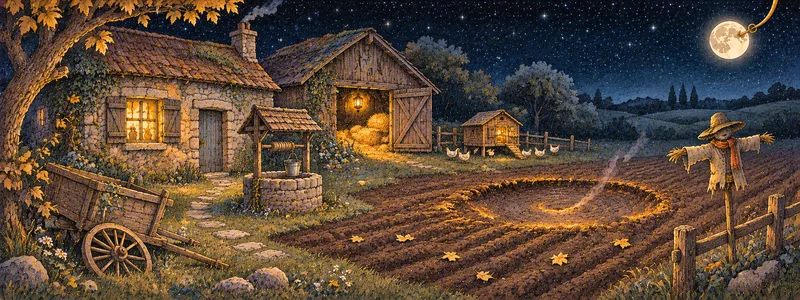 57 · La ferme ×3 | La navette te dépose dans un champ, la nuit, et repart sans bruit. Tu es seul dans l'herbe, en manteau, ton chapeau enfoncé. Tu n'as jamais marché dans l'herbe. Elle est mouillée. Elle sent quelque chose que tu ne connais pas. Au bout du champ, une ferme. Une …La navette te dépose dans un champ, la nuit, et repart sans bruit. Tu es seul dans l'herbe, en manteau, ton chapeau enfoncé. Tu n'as jamais marché dans l'herbe. Elle est mouillée. Elle sent quelque chose que tu ne connais pas.
Au bout du champ, une ferme. Une lanterne s'approche. C'est une vieille fermière Gravitaire, qui a entendu un bruit. Elle lève sa lanterne vers toi. « Vous êtes perdu, monsieur ? » |
plt_00b
La première nuit | 57 · La ferme ×3 | Dans la cuisine de la fermière, il fait chaud. Un poêle, une horloge qui marche, un chat de pierre qui dort sur un coussin. Sur la table, une toile cirée à carreaux. Tu n'as jamais vu de toile cirée. Tu y poses tes mains d'or, à plat, pour voir. La fermière ne…Dans la cuisine de la fermière, il fait chaud. Un poêle, une horloge qui marche, un chat de pierre qui dort sur un coussin. Sur la table, une toile cirée à carreaux. Tu n'as jamais vu de toile cirée. Tu y poses tes mains d'or, à plat, pour voir.
La fermière ne te pose pas de questions. Par la fenêtre, la Lune, à son crochet, un peu de travers. « Mon défunt mari disait qu'elle nous regardait dormir. Il ronflait. Elle devait bien rire. »
La lanterne s'éloigne. Tu restes seul dans le champ. L'herbe te mouille les chevilles. Au-dessus de toi, ta Lune, à son crochet, un peu de travers. Tu ne l'avais jamais vue d'en bas.
Tu penses : c'est donc ça, ce que voient les Terriens. Une lumière accrochée. Tu croyais qu'ils voyaient un terrain. |
plt_01
Incognito | 57 · La ferme ×3 | Tu as gardé ton costume trois-pièces sous le manteau. Tu n'as rien changé d'autre, et c'est presque inutile : pour un Terrien, tous les Aldébaraniens se ressemblent. Des feuilles d'or empilées, qui bruissent. On te prend pour un touriste. Un touriste triste, v…Tu as gardé ton costume trois-pièces sous le manteau. Tu n'as rien changé d'autre, et c'est presque inutile : pour un Terrien, tous les Aldébaraniens se ressemblent. Des feuilles d'or empilées, qui bruissent. On te prend pour un touriste. Un touriste triste, vu ce qui se passe au-dessus.
Tu as une liste. Quatre endroits dont parlent les rapports de Krâmm : les Côtes, où la mer se conduit mal ; le Cadastre de Tamponville, où l'on a signé ; une maison de retraite très profonde, près de l'Axe de la Terre ; une serre, à l'orée d'une forêt, où des fleurs refusent de s'ouvrir.
Il reste trois jours avant l'aube du départ. Assez pour voir les quatre, si tu ne traînes pas. Il faudra dormir, quand même. Tu dors mal, de toute façon. |
plt_cot
Grève-Molle | 13 · Les Côtes Hagardes ×24 | La mer s'est retirée d'un kilomètre. Des poissons font la queue devant une flaque. Des Marégraves, faits d'eau de mer, écopent leurs maisons avec leurs mains. Tu comprends tout de suite où est partie l'eau. Tes piscines, là-haut, se remplissent. Les marées mon…La mer s'est retirée d'un kilomètre. Des poissons font la queue devant une flaque. Des Marégraves, faits d'eau de mer, écopent leurs maisons avec leurs mains.
Tu comprends tout de suite où est partie l'eau. Tes piscines, là-haut, se remplissent. Les marées montent vers elles au lieu de monter vers la plage. Tu ne l'avais pas lu dans les maquettes. Ce n'était pas dans les maquettes.
Au bout de la plage, un phare. En haut du phare, une lumière, et une silhouette d'eau salée qui écrit. |
plt_cap
Tamponville | 24 · Tamponville, le Cadastre et le Palais ×33 | La file d'attente du Cadastre fait trois fois le tour de la ville. Tous ces gens viennent contester la vente de la Lune. Ta vente. Ils ont tous un ticket. Tu en prends un : le 4 813. Personne ne te reconnaît. Tu fais la queue pour contester ta propre vente. De…La file d'attente du Cadastre fait trois fois le tour de la ville. Tous ces gens viennent contester la vente de la Lune. Ta vente. Ils ont tous un ticket. Tu en prends un : le 4 813. Personne ne te reconnaît. Tu fais la queue pour contester ta propre vente.
Devant toi, une vieille Horlogère tend des tracts : « SOUSCRIPTION NATIONALE POUR LE RACHAT DE LA LUNE. Chaque Terrien donne ce qu'il peut. Même un bouton. Même une heure. » |
plt_bri_a
L'Ascenseur des Taupes | 21 · Les Profondeurs et l'Axe de la Terre ×23 | On descend aux Profondeurs par le Grand Puits, puis par l'Ascenseur des Taupes : une cage de bois tirée par des taupes en salopette, qui ne voient rien et n'ont besoin de rien voir. Il fait chaud. Tes feuilles d'or se recroquevillent sur les bords. Ondine fume…On descend aux Profondeurs par le Grand Puits, puis par l'Ascenseur des Taupes : une cage de bois tirée par des taupes en salopette, qui ne voient rien et n'ont besoin de rien voir. Il fait chaud. Tes feuilles d'or se recroquevillent sur les bords.
Ondine fume légèrement, comme une casserole. Elle boit à chaque flaque. « Ce n'est rien. Je m'évapore un peu, c'est tout. »
Une taupe tire plus lentement que les autres. Elle est vieille. Elle s'arrête pour souffler à chaque étage.
« Le sol penche », dit-elle, sans se retourner. « Depuis trois jours. La corde tire de travers. On tire de travers aussi. Ça fatigue. » |
plt_ana_a
La forêt qui penche | 16 · La Forêt-Réseau ×9 | On arrive à la Serre par la Forêt-Réseau. Les arbres poussent de travers, tous dans la même direction, vers la Lune qui se lève trop bas. Sous la terre, leurs racines se parlent par une toile immense. Au bord du chemin, une odeur de bois brûlé. Des géomètres d…On arrive à la Serre par la Forêt-Réseau. Les arbres poussent de travers, tous dans la même direction, vers la Lune qui se lève trop bas. Sous la terre, leurs racines se parlent par une toile immense.
Au bord du chemin, une odeur de bois brûlé. Des géomètres dorés de la Compagnie brûlent des racines pour faire passer un câble. Tes géomètres. Ton câble.
Le câble, c'est pour l'arrosage du golf. Pour que le gazon de la Lune pousse, il faut des racines. On les prend ici. |
plt_cot_a
Les écopeurs | 13 · Les Côtes Hagardes ×24 | Sur la plage, les Marégraves écopent leurs maisons à sec avec leurs mains. Ils sont faits d'eau : en écopant, ils se remplissent, et en se remplissant, ils écopent moins. C'est un travail qui ne finit pas. Dans une flaque, des centaines de poissons font la que…Sur la plage, les Marégraves écopent leurs maisons à sec avec leurs mains. Ils sont faits d'eau : en écopant, ils se remplissent, et en se remplissant, ils écopent moins. C'est un travail qui ne finit pas.
Dans une flaque, des centaines de poissons font la queue pour une gorgée d'eau. Un vieux poisson-lune, tout au bout, attend depuis ce matin.
Un enfant marégrave te tend un seau. Il ne sait pas qui tu es. Il voit des bras. « Vous aidez ? » |
plt_cap_f
La file | 24 · Tamponville, le Cadastre et le Palais ×33 | Tu fais la queue avec ton ticket 4 813. Devant toi, une famille de Lunatiques, pâles comme des bougies, qui pâlissent à mesure que la file avance. Derrière toi, un vieux Gravitaire qui porte sa maison sur le dos, pour ne pas la laisser seule. On parle de toi. …Tu fais la queue avec ton ticket 4 813. Devant toi, une famille de Lunatiques, pâles comme des bougies, qui pâlissent à mesure que la file avance. Derrière toi, un vieux Gravitaire qui porte sa maison sur le dos, pour ne pas la laisser seule.
On parle de toi. Partout dans la file, on parle de Platine. On dit qu'il est grand comme une tour, qu'il mange des planètes au petit déjeuner, qu'il n'a pas de cœur, seulement un coffre. La dernière, tu ne sais pas qui l'a dite. Elle tombe juste.
Une vieille Horlogère te tend un beignet. « Vous avez l'air d'avoir faim, monsieur. La file est longue. » |
plt_cap_a
Le Palais de la Présidence | 24 · Tamponville, le Cadastre et le Palais ×33 | La file passe sous les fenêtres du Palais de la Présidence, une aile du Cadastre qu'on a oublié de rendre. Au dernier étage, une fenêtre ronde. Derrière la vitre, un coussin de velours, vide. Tu sais où est le galet : tu l'as vu dans le Tortillard, contre un p…La file passe sous les fenêtres du Palais de la Présidence, une aile du Cadastre qu'on a oublié de rendre. Au dernier étage, une fenêtre ronde.
Derrière la vitre, un coussin de velours, vide. Tu sais où est le galet : tu l'as vu dans le Tortillard, contre un pot de moutarde, en route vers le Carrefour. À la fenêtre, un huissier en livrée annonce aux gens d'en bas : « Le Président est en déplacement ! Le Président vous salue de loin ! »
Derrière la vitre, un coussin de velours. Sur le coussin, un petit galet gris clair.
C'est lui. Celui du télescope. De près, il est plus petit. Il a l'air de regarder dehors.
À côté, un homme replet en redingote parle très fort à la fenêtre, pour les gens d'en bas : « Le Président est serein ! Le Président vous salue ! » Le galet ne bouge pas. Mais, du côté tourné vers le ciel, vers ta Lune et son crochet d'or, il est un peu plus blanc que de l'autre. |
plt_bri_b
L'Axe de la Terre | 21 · Les Profondeurs et l'Axe de la Terre ×23 | L'Ascenseur s'arrête devant l'Axe de la Terre : une colonne de fer et de nickel si immense qu'on ne voit ni son haut ni son bas. Et sur l'Axe, assis, des milliers de Gravitaires, serrés les uns contre les autres, qui pèsent de tout leur poids pour qu'il ne pen…L'Ascenseur s'arrête devant l'Axe de la Terre : une colonne de fer et de nickel si immense qu'on ne voit ni son haut ni son bas. Et sur l'Axe, assis, des milliers de Gravitaires, serrés les uns contre les autres, qui pèsent de tout leur poids pour qu'il ne penche pas. Ils transpirent du sable. L'Axe penche quand même.
Tes tours. Tu les as choisies pour que la Lune voie loin. Elles pèsent sur la Lune, et la Lune tire sur l'Axe, et ce sont ces gens-là qui portent le poids. Tu le comprends d'un coup, comme on reçoit un mur. |
plt_ana_e
Le ruisseau qui remonte | 16 · La Forêt-Réseau ×9 | Un ruisseau coule à l'envers. Il remonte la pente, vers la Lune. Les poissons nagent à reculons, très étonnés. Les cailloux du fond roulent vers le haut. Un petit poisson, entraîné malgré lui, passe devant toi en battant des nageoires de toutes ses forces pour…Un ruisseau coule à l'envers. Il remonte la pente, vers la Lune. Les poissons nagent à reculons, très étonnés. Les cailloux du fond roulent vers le haut.
Un petit poisson, entraîné malgré lui, passe devant toi en battant des nageoires de toutes ses forces pour redescendre. Il n'y arrive pas. |
plt_cot_f
La digue | 13 · Les Côtes Hagardes ×24 | Derrière les maisons, une vieille digue de planches retient ce qui reste d'eau douce : les puits, les flaques, les réserves. Elle fuit. Une petite Marégrave, pas plus haute qu'un seau, bouche un trou avec son doigt. Son doigt fuit aussi. Elle est un peu plus p…Derrière les maisons, une vieille digue de planches retient ce qui reste d'eau douce : les puits, les flaques, les réserves. Elle fuit. Une petite Marégrave, pas plus haute qu'un seau, bouche un trou avec son doigt. Son doigt fuit aussi. Elle est un peu plus petite à chaque heure.
Le trou est rond. Il n'est pas très grand.
Tu sais où va l'eau qui manque. Elle monte vers tes piscines. Chaque marée qu'on a prise là-haut, c'est ce doigt-là qui la retient en bas. |
plt_cap_b
Madame Épine | 26 · Bureau de Madame Épine ×4 | Dans le hall du Cadastre, une grande plante dans un pot de marbre te barre le passage : un cactus de deux mètres, en tailleur, qui ne cligne jamais des yeux faute d'en avoir. Madame Épine, Sous-Directrice. « Vous êtes d'Aldébaran. » Ce n'est pas une question. …Dans le hall du Cadastre, une grande plante dans un pot de marbre te barre le passage : un cactus de deux mètres, en tailleur, qui ne cligne jamais des yeux faute d'en avoir. Madame Épine, Sous-Directrice.
« Vous êtes d'Aldébaran. » Ce n'est pas une question. « Je les reconnais. Ils viennent tous voir la file. Ils la trouvent pittoresque. » Elle se penche. « Article douze, alinéa trois. Toute cession est suspendue si le cédant n'a pas été entendu. Le cédant, ici, n'a jamais rien dit. Vous le direz à votre patron, n'est-ce pas ? » |
plt_bri_c
La petite au bonnet | 21 · Les Profondeurs et l'Axe de la Terre ×23 | Au pied de l'Axe, une petite Gravitaire, à peine cent ans, en bonnet de laine trop grand, cherche quelqu'un dans la foule assise. Elle te voit. Tu es le seul debout. « Vous pouvez monter ? Mon papa est là-haut. Il a une fissure en étoile sur le front. Il s'app…Au pied de l'Axe, une petite Gravitaire, à peine cent ans, en bonnet de laine trop grand, cherche quelqu'un dans la foule assise. Elle te voit. Tu es le seul debout.
« Vous pouvez monter ? Mon papa est là-haut. Il a une fissure en étoile sur le front. Il s'appelle Gneiss. Il est assis depuis trois jours, et il oublie un mot par heure. Il faut lui dire que je l'aime avant qu'il oublie le mot. » |
plt_ana_b
Tante Mélusine | 18 · Le Temple de la Pleine Lune ×11 | Au sommet de la colline, au Temple de la Pleine Lune, une vieille dame immense, couverte de châles et de pelotes, trois paires de lunettes sur le nez, tricote la lumière de la Lune depuis mille ans pour les gens qui ont froid. Tante Mélusine. Elle pleure en tr…Au sommet de la colline, au Temple de la Pleine Lune, une vieille dame immense, couverte de châles et de pelotes, trois paires de lunettes sur le nez, tricote la lumière de la Lune depuis mille ans pour les gens qui ont froid. Tante Mélusine. Elle pleure en tricotant, et elle crie en pleurant.
« UN DORÉ ! QU'EST-CE QU'IL VIENT FAIRE DANS MON DEUIL ? » Elle te regarde par-dessus ses trois lunettes. « TU AS FROID. ÇA SE VOIT. LES DORÉS ONT TOUJOURS FROID. » |
plt_cot_b2
Le patron | 14 · Le Ressac Triste ×12 | Au bout de la plage, un bistrot sur pilotis : le Ressac Triste. Avant d'aller au comptoir, tu t'arrêtes près de la porte. Le patron est un crabe gris, très vieux, qui essuie des verres secs avec une serviette sèche. Il n'y a plus d'eau pour les mouiller. « Ava…Au bout de la plage, un bistrot sur pilotis : le Ressac Triste. Avant d'aller au comptoir, tu t'arrêtes près de la porte. Le patron est un crabe gris, très vieux, qui essuie des verres secs avec une serviette sèche. Il n'y a plus d'eau pour les mouiller.
« Avant, on servait des vagues, ici. Une vague au comptoir, deux vagues en terrasse. Maintenant, on sert de l'eau de puits. Les clients s'évaporent. »
Au mur, une photo jaunie : un bal au bord de la mer, des lampions, et la Lune, très ronde, juste au-dessus de l'orchestre. Sur la photo, une Marégrave aux cheveux d'écume danse avec un jeune pêcheur. |
plt_cap_b2
Le cagibi des formulaires | 26 · Bureau de Madame Épine ×4 | Après Madame Épine, il faut traverser le cagibi des formulaires. Des étagères jusqu'au plafond, et sur chaque étagère, un formulaire pour chaque chose. « Demande de naissance. » « Déclaration de pluie. » « Contestation de coucher de soleil, en trois exemplaire…Après Madame Épine, il faut traverser le cagibi des formulaires. Des étagères jusqu'au plafond, et sur chaque étagère, un formulaire pour chaque chose. « Demande de naissance. » « Déclaration de pluie. » « Contestation de coucher de soleil, en trois exemplaires. »
Un formulaire, tout en haut, n'a jamais été rempli. Son titre : « Reprise d'un bien vendu par erreur. » |
plt_bri_c2
La foule assise | 21 · Les Profondeurs et l'Axe de la Terre ×23 | Tout autour de l'Axe, des Gravitaires sont assis. Ils sont venus de partout s'asseoir près de l'Axe, pour le retenir de leur poids. Ils ne bougent plus depuis trois jours. Certains ont des fleurs de lichen sur les épaules. Un très vieux Gravitaire ouvre un œil…Tout autour de l'Axe, des Gravitaires sont assis. Ils sont venus de partout s'asseoir près de l'Axe, pour le retenir de leur poids. Ils ne bougent plus depuis trois jours. Certains ont des fleurs de lichen sur les épaules.
Un très vieux Gravitaire ouvre un œil quand tu passes. « Assieds-toi, l'étranger. Plus on est lourds, mieux ça tient. » Il regarde tes feuilles d'or. « Tu ne pèses rien, toi. Assieds-toi quand même. Ça compte, l'intention. » |
plt_ana_b2
Le fil | 18 · Le Temple de la Pleine Lune ×11 | Tante Mélusine te tient longtemps sous ses trois paires de lunettes. Elle tricote en parlant, sans jamais regarder ses aiguilles. « MILLE ANS QUE JE TRICOTE POUR LES GENS QUI ONT FROID. TU SAIS QUI A LE PLUS FROID ? CEUX QUI ONT TOUT. ILS ONT TOUT, ET ÇA NE TI…Tante Mélusine te tient longtemps sous ses trois paires de lunettes. Elle tricote en parlant, sans jamais regarder ses aiguilles.
« MILLE ANS QUE JE TRICOTE POUR LES GENS QUI ONT FROID. TU SAIS QUI A LE PLUS FROID ? CEUX QUI ONT TOUT. ILS ONT TOUT, ET ÇA NE TIENT PAS CHAUD. » Elle s'arrête. « NON. CEUX QUI N'ONT RIEN ONT PLUS FROID. NON. TOUT LE MONDE A FROID. C'EST POUR ÇA QUE JE TRICOTE. » |
plt_cot_b
Le Ressac Triste | 14 · Le Ressac Triste ×12 | Au comptoir du Ressac Triste, à moitié dans le vide puisque la mer est partie, un vieux pêcheur fait d'eau de mer trouble boit de l'eau douce pour se diluer. Bartholomé Vasequeuse. Il voit tes feuilles d'or. « Un Aldébaranien. Ici. » Il crache dans sa soucoupe…Au comptoir du Ressac Triste, à moitié dans le vide puisque la mer est partie, un vieux pêcheur fait d'eau de mer trouble boit de l'eau douce pour se diluer. Bartholomé Vasequeuse. Il voit tes feuilles d'or.
« Un Aldébaranien. Ici. » Il crache dans sa soucoupe. « C'est vous qui nous prenez la Lune ? » Tu dis que non. C'est ton deuxième mensonge. Il est plus facile que le premier. Ça t'inquiète.
« Ma femme est partie avec la grande marée, il y a vingt ans. Perline. Elle est là-haut, en poussière d'écume. Si la Lune part, elle part avec. »
Il regarde ton costume trempé, tes manches pleines de sable. « Vous avez écopé, vous ? » Il te pousse un verre d'eau douce, sans rien dire. |
plt_cap_h
Madame Pruine | 02 · Le guichet zéro ×8 | Au fond d'un couloir, un guichet minuscule, et derrière, une vieille Lichenaute grise, toute ridée : Madame Pruine, la doyenne du Cadastre. Elle a sur son bureau le plus vieux tampon du monde, qui marque « VU ». Elle te regarde arriver. Elle met une minute à o…Au fond d'un couloir, un guichet minuscule, et derrière, une vieille Lichenaute grise, toute ridée : Madame Pruine, la doyenne du Cadastre. Elle a sur son bureau le plus vieux tampon du monde, qui marque « VU ».
Elle te regarde arriver. Elle met une minute à ouvrir la bouche. « Ce qu'il marque... a été vu. Officiellement. On ne peut plus... l'ignorer. » Elle te tend un ticket, le plus petit de tous : « 0 ». « Le ticket zéro. Il passe... avant tout le monde. Je ne le donne... à personne. Vous... avez l'air... d'en avoir besoin. » |
plt_bri_e
Le lac noir | 21 · Les Profondeurs et l'Axe de la Terre ×23 | Le chemin vers les Magmas longe un lac souterrain, noir, parfaitement immobile. Une vieille taupe passeuse attend dans sa barque. « Le lac bougeait avec la Lune. Deux centimètres, sous la terre. Personne ne le savait. Moi, si. Il ne bouge plus. » Elle te fait …Le chemin vers les Magmas longe un lac souterrain, noir, parfaitement immobile. Une vieille taupe passeuse attend dans sa barque. « Le lac bougeait avec la Lune. Deux centimètres, sous la terre. Personne ne le savait. Moi, si. Il ne bouge plus. »
Elle te fait traverser. Au milieu du lac, tu te penches. L'eau noire te reflète. Un grand monsieur d'or, mince, en costume, qui a l'air de quelqu'un d'autre. Tu ne t'étais jamais vu dans un miroir qui ne t'appartenait pas. |
plt_ana_c
Les tricoteuses | 18 · Le Temple de la Pleine Lune ×11 | Autour de Tante Mélusine, des centaines de Lunatiques, des créatures pâles et rondes comme des bougies, tricotent des écharpes avec des fils de lumière de Lune. Il y en a de moins en moins. Chaque nuit, la Lune donne moins de fil, parce qu'elle s'en va, et cha…Autour de Tante Mélusine, des centaines de Lunatiques, des créatures pâles et rondes comme des bougies, tricotent des écharpes avec des fils de lumière de Lune. Il y en a de moins en moins. Chaque nuit, la Lune donne moins de fil, parce qu'elle s'en va, et chaque nuit, une Lunatique s'éteint.
La plus jeune tricote avec le dernier bout de sa pelote. Elle s'éteint un peu à chaque maille. |
plt_cot_h
La cabane de Perline | 14 · Le Ressac Triste ×12 | Bartholomé t'emmène chez lui, une cabane de bois flotté au bout de la plage. Sur le mur, un portrait à l'aquarelle d'une femme faite d'écume, qui rit. « Perline. Elle riait comme la mer qui se retire sur les galets. » Il ne te regarde pas en le disant. En sort…Bartholomé t'emmène chez lui, une cabane de bois flotté au bout de la plage. Sur le mur, un portrait à l'aquarelle d'une femme faite d'écume, qui rit. « Perline. Elle riait comme la mer qui se retire sur les galets. » Il ne te regarde pas en le disant.
En sortant du bistrot, tu passes devant une cabane de bois flotté. Par la fenêtre, un portrait à l'aquarelle d'une femme faite d'écume, qui rit. Une vieille voisine te dit : « Perline. Partie avec la grande marée. Son mari ne s'en remet pas. »
Au-dessus de la cabane, ta Lune. Si basse qu'on voit la poussière blanche au bord des cratères. Quelque part dedans, de l'écume qui a été quelqu'un. Tu l'as achetée aussi. Krâmm l'a sûrement inscrite. |
plt_cap_c
Le Cantonnier | 24 · Tamponville, le Cadastre et le Palais ×33 | Dans l'escalier, un vieux Gravitaire en uniforme bleu, une perche à allumer les lampadaires sur l'épaule. Le Cantonnier de Tamponville. Il allume les lampadaires depuis trois cents ans, il les connaît chacun par son numéro. Il est furieux. « Lampadaire céleste…Dans l'escalier, un vieux Gravitaire en uniforme bleu, une perche à allumer les lampadaires sur l'épaule. Le Cantonnier de Tamponville. Il allume les lampadaires depuis trois cents ans, il les connaît chacun par son numéro. Il est furieux.
« Lampadaire céleste numéro un ! » grommelle-t-il. « Ils ont écrit ça sur un formulaire. Un renouvellement de lampadaire. Et ils ont tamponné. Mes lampadaires s'arrêtent au numéro quatre mille douze, devant la gare. Au-dessus, c'est la Lune. On l'a vendue comme un réverbère ! »
Tu ne savais pas. Tu croyais l'avoir achetée comme une Lune. On te l'a vendue comme un réverbère. Tu ne sais pas lequel des deux est le plus vexant. |
plt_bri_f
Les Grottes des Échos | 21 · Les Profondeurs et l'Axe de la Terre ×23 | Plus loin, des grottes où chaque bruit revient dix fois. On y parle bas. Une créature faite de son, Écho, y vit seule : elle ne peut que répéter les derniers mots qu'elle entend. En entrant, tu trébuches, et tu jures. Tu jures toujours la même chose, depuis l'…Plus loin, des grottes où chaque bruit revient dix fois. On y parle bas. Une créature faite de son, Écho, y vit seule : elle ne peut que répéter les derniers mots qu'elle entend.
En entrant, tu trébuches, et tu jures. Tu jures toujours la même chose, depuis l'enfance, quand tu te cognes : ton propre nom. « Platine ! »
La grotte le répète. « Platine ! Platine ! Platine ! » Le nom part dans les galeries, vers les Magmas, vers tout le monde. |
plt_ana_f
La clairière des Lichenautes | 17 · Le Grand Chêne Noué et la Toile ×3 | En redescendant, une clairière couverte de pierres. Sur chaque pierre, un Lichenaute : des taches grises, vertes, jaunes, orange. Ils se parlent par la Toile, une phrase par heure. Quand tu passes, toutes les taches frémissent ensemble. Une vieille lichen gris…En redescendant, une clairière couverte de pierres. Sur chaque pierre, un Lichenaute : des taches grises, vertes, jaunes, orange. Ils se parlent par la Toile, une phrase par heure.
Quand tu passes, toutes les taches frémissent ensemble. Une vieille lichen grise dit, en deux heures, pendant que tu attends sans savoir pourquoi : « Un doré... marche... dans la forêt. Il... ment. Mais il... ralentit. »
Basile, sur ton épaule, frémit avec eux. Il comprend ce qu'ils disent. Il ne te le traduit pas. Il te regarde, très longtemps. |
plt_cot_k
La vague immobile | 13 · Les Côtes Hagardes ×24 | Tu marches jusqu'au pied de la vague. Elle est immense, haute comme dix phares, figée en plein élan. Elle ne retombe pas. Elle hésite. Elle ne sait pas si elle doit suivre la Lune ou rester avec la plage. Tu poses la main sur l'eau, à sa base. Elle est froide,…Tu marches jusqu'au pied de la vague. Elle est immense, haute comme dix phares, figée en plein élan. Elle ne retombe pas. Elle hésite. Elle ne sait pas si elle doit suivre la Lune ou rester avec la plage.
Tu poses la main sur l'eau, à sa base. Elle est froide, dure comme du verre à force de se retenir. Elle tremble sous ta paume. |
plt_cap_g
L'ascenseur | 24 · Tamponville, le Cadastre et le Palais ×33 | Pour descendre au guichet zéro, il faut l'ascenseur du Cadastre : une cage de fer forgé, et dedans, sur un tabouret, une liftière Gravitaire, Madame Basalte. Elle monte et descend depuis deux cents ans. Elle n'a jamais dépassé le toit. « Guichet zéro ? Sous-so…Pour descendre au guichet zéro, il faut l'ascenseur du Cadastre : une cage de fer forgé, et dedans, sur un tabouret, une liftière Gravitaire, Madame Basalte. Elle monte et descend depuis deux cents ans. Elle n'a jamais dépassé le toit.
« Guichet zéro ? Sous-sol moins quatre. Personne n'y va jamais. » Pendant la descente, elle regarde vers le haut, par la grille, comme toujours. « J'ai toujours voulu monter plus haut que le toit, moi. Jusqu'à la Lune. Pour voir le dernier étage. Il paraît qu'on l'a vendue. » |
plt_bri_d
La géode | 22 · La géode du Docteur Quartz ×5 | Sur le chemin, une géode immense, tapissée de cristaux violets. Une dame de cristal, toute en facettes, calcule à la craie sur les murs : Dr Ysolde Quartz. Elle te voit. Elle pose son oreille de cristal contre ta poitrine, sans demander. « Intéressant. Vibrati…Sur le chemin, une géode immense, tapissée de cristaux violets. Une dame de cristal, toute en facettes, calcule à la craie sur les murs : Dr Ysolde Quartz. Elle te voit. Elle pose son oreille de cristal contre ta poitrine, sans demander.
« Intéressant. Vibration de l'or : pure, aiguë. Et au milieu, un creux. Un trou de résonance, de la taille d'une petite pièce. » Elle se redresse. « Vous êtes creux, Monsieur. Au centre. C'est rare, chez l'or. On dirait qu'il manque quelque chose qu'on aurait retiré très tôt. » |
plt_ana_k
Les champignons messagers | 16 · La Forêt-Réseau ×9 | Le long du chemin, des champignons poussent en cercle et clignotent, l'un après l'autre. Ce sont les messagers de la forêt : ils répètent à la surface ce qui passe dans la Toile, sous la terre. Ils répètent en ce moment : « Feu au nord. Géomètres. » Puis : « U…Le long du chemin, des champignons poussent en cercle et clignotent, l'un après l'autre. Ce sont les messagers de la forêt : ils répètent à la surface ce qui passe dans la Toile, sous la terre.
Ils répètent en ce moment : « Feu au nord. Géomètres. » Puis : « Un doré marche dans la forêt. Un doré marche dans la forêt. » Puis, plus bas, un message qui vient de très loin : « Une pierre qui pense est au Carrefour. Une pierre qui pense. » |
plt_cot_c
Le Chœur des Méduses | 13 · Les Côtes Hagardes ×24 | Au pied de la vague, des milliers de méduses lumineuses se tiennent par les filaments. Elles retiennent la vague de toutes leurs forces, et elles chantent d'une seule voix. « ELLE NE VEUT PAS PARTIR. ELLE NOUS L'A DIT, À NOUS, LA MER. ELLE NE VEUT PAS PARTIR. …Au pied de la vague, des milliers de méduses lumineuses se tiennent par les filaments. Elles retiennent la vague de toutes leurs forces, et elles chantent d'une seule voix.
« ELLE NE VEUT PAS PARTIR. ELLE NOUS L'A DIT, À NOUS, LA MER. ELLE NE VEUT PAS PARTIR. »
Tu es fait de feuilles d'or. L'or vibre aux chansons. Tu les sens chanter dans tout ton corps, de la plante des pieds jusqu'au chapeau. |
plt_cap2
Le guichet zéro | 02 · Le guichet zéro ×8 | Sous-sol moins quatre. Un bureau, une tasse de rosée froide, et un Lichenaute, une mousse grise de trois cent douze ans, qui fixe un papier carbone. Basile Grumeau, greffier. Il est rapide pour un lichen : une phrase par minute. « Ma... signature », dit-il, sa…Sous-sol moins quatre. Un bureau, une tasse de rosée froide, et un Lichenaute, une mousse grise de trois cent douze ans, qui fixe un papier carbone. Basile Grumeau, greffier. Il est rapide pour un lichen : une phrase par minute.
« Ma... signature », dit-il, sans lever les yeux. « Elle pousse... encore. Sur l'acte de vente. Basile Gru... Il manque... quelques jours. J'ai vendu... la Lune. Sans le savoir. »
Il lève les yeux vers toi. Il voit un Aldébaranien. Il ne sait pas lequel. « Vous... êtes de chez lui ? » |
plt_bri
Les Magmas Paisibles | 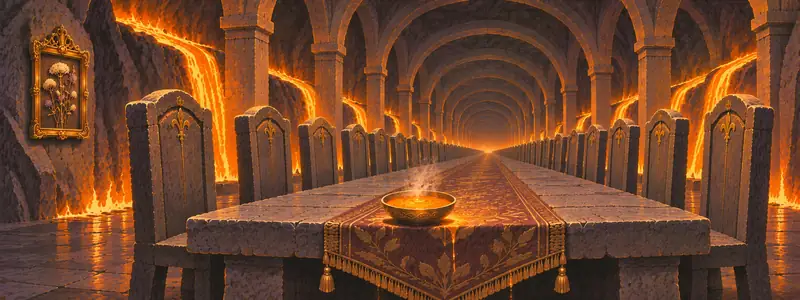 04 · Les Magmas Paisibles ×5 | Maison de retraite des Gravitaires, quatre cents kilomètres sous la surface. Des géants de pierre mangent de la soupe de lave tiède. La soupe glisse toute seule vers le bord des assiettes. Vers l'est. Tu sais pourquoi. Tes tours, là-haut, pèsent sur la Lune, e…Maison de retraite des Gravitaires, quatre cents kilomètres sous la surface. Des géants de pierre mangent de la soupe de lave tiède. La soupe glisse toute seule vers le bord des assiettes. Vers l'est.
Tu sais pourquoi. Tes tours, là-haut, pèsent sur la Lune, et la Lune tire sur l'Axe. Le poids que tu as posé là-haut, c'est ici qu'on le porte.
Au fond du réfectoire, une Gravitaire de onze tonnes, granit et basalte, presse des fleurs séchées dans un gros livre. La Colonelle Agathe Brisefer. Elle a tenu l'Axe de la Terre pendant trois mille ans, assise dessus.
Tu reconnais les fleurs. Ce sont les belles-de-nuit qu'Anatole jette dans la fente, chaque matin, quatre cents kilomètres plus haut. Elle ne sait pas d'où elles viennent. Toi, si. Tu te tais. C'est la première fois que tu gardes un secret pour faire plaisir.
Elle lève les yeux quand tu entres. « C'est toi qui criais, dans les galeries ? Un nom. » Tu dis que tu t'es cogné. Elle hausse les épaules, mais elle te regarde un peu plus longtemps que les autres. |
plt_ana
La Serre des Belles-de-Nuit | 36 · La Serre des Belles-de-Nuit ×8 | Une serre de verre, au bord d'une fente. Dedans, mille belles-de-nuit, des fleurs blanches qui ne s'ouvrent que lorsque la Lune les regarde. Ce soir, la Lune est de travers. Les fleurs ne savent plus. Certaines s'ouvrent à moitié, d'autres pas du tout, d'autre…Une serre de verre, au bord d'une fente. Dedans, mille belles-de-nuit, des fleurs blanches qui ne s'ouvrent que lorsque la Lune les regarde. Ce soir, la Lune est de travers. Les fleurs ne savent plus. Certaines s'ouvrent à moitié, d'autres pas du tout, d'autres se fanent sans avoir fleuri.
Au fond de la serre, des racines arrachées sèchent. Ton golf, là-haut, a besoin de gazon. Le gazon pousse en tirant sur les racines de la Terre. Tu le sais : c'était dans la maquette, en tout petit.
Un papillon de nuit grand comme un parapluie plié, poudré de gris, avec un gilet plein de poches, arrose les fleurs qui restent. Anatole Duvet, jardinier de nuit. Il vole de travers. |
plt_cot_i
Le poisson-lune | 13 · Les Côtes Hagardes ×24 | En revenant vers le village, tu repasses devant la flaque où les poissons font la queue. Le vieux poisson-lune est toujours au bout. Il n'a pas avancé. Les autres sont plus rapides. Tu as une gourde, dans ta poche de manteau. De l'eau d'Aldébaran, filtrée troi…En revenant vers le village, tu repasses devant la flaque où les poissons font la queue. Le vieux poisson-lune est toujours au bout. Il n'a pas avancé. Les autres sont plus rapides.
Tu as une gourde, dans ta poche de manteau. De l'eau d'Aldébaran, filtrée trois fois, très chère. Tu ne l'as jamais bue. On te l'a mise là au cas où. |
plt_cap3b
Basile parle | 02 · Le guichet zéro ×8 | Basile te parle. Lentement, une phrase par minute, en s'arrêtant au milieu. Tu as le temps. Tu n'as jamais eu le temps. Tu l'as, aujourd'hui. « J'ai signé... sans lire. Trois cents ans... que je signe... sans lire. On ne lit pas... ce qu'on tamponne. » Une min…Basile te parle. Lentement, une phrase par minute, en s'arrêtant au milieu. Tu as le temps. Tu n'as jamais eu le temps. Tu l'as, aujourd'hui.
« J'ai signé... sans lire. Trois cents ans... que je signe... sans lire. On ne lit pas... ce qu'on tamponne. » Une minute. « Le Président... n'a rien dit. Il ne dit... jamais rien. J'ai cru... que ça voulait dire... oui. »
Une minute encore. « Vous savez... ce que c'est... de signer... quelque chose... qu'on regrette ? » |
plt_bri_g
Le dortoir | 04 · Les Magmas Paisibles ×5 | Après le repas, Brisefer te montre le dortoir des Magmas Paisibles : des lits de pierre, longs comme des barques, où dorment les vieux Gravitaires qui ont tenu l'Axe autrefois. Ils dorment mal. Le lit glisse vers l'est. Ils se réveillent au bout de la salle, e…Après le repas, Brisefer te montre le dortoir des Magmas Paisibles : des lits de pierre, longs comme des barques, où dorment les vieux Gravitaires qui ont tenu l'Axe autrefois. Ils dorment mal. Le lit glisse vers l'est. Ils se réveillent au bout de la salle, et ils remontent, et ils se rendorment.
Un très vieux Gravitaire, plus gris que les autres, te regarde passer. « Tiens. Un qui brille. » Il rit, un rire de carrière. « Vous venez voir ce que ça pèse, la Lune ? Asseyez-vous sur mon lit. Vous verrez. » |
plt_ana_g
Le carnet d'Anatole | 36 · La Serre des Belles-de-Nuit ×8 | Pendant qu'Anatole arrose, tu ramasses un carnet tombé de son gilet. Dedans, au crayon, depuis soixante ans, l'heure exacte où chaque fleur s'est ouverte. Une colonne par nuit. Toujours à l'heure de la Lune. Depuis trois jours, la colonne est vide. Puis, en ba…Pendant qu'Anatole arrose, tu ramasses un carnet tombé de son gilet. Dedans, au crayon, depuis soixante ans, l'heure exacte où chaque fleur s'est ouverte. Une colonne par nuit. Toujours à l'heure de la Lune.
Depuis trois jours, la colonne est vide. Puis, en bas de la dernière page, d'une écriture qui tremble : « Si elles ne s'ouvrent plus, je ne saurai plus quelle heure il est. » |
plt_cot_g
Le fond de la mer | 13 · Les Côtes Hagardes ×24 | Là où la mer devrait être, s'étend le fond. Personne ne l'avait jamais vu au soleil. Des forêts d'algues couchées, des villes de crabes vides, des épaves si vieilles qu'elles ont oublié leur nom. Et des piquets dorés, partout, avec des fanions : « Parcelle 412…Là où la mer devrait être, s'étend le fond. Personne ne l'avait jamais vu au soleil. Des forêts d'algues couchées, des villes de crabes vides, des épaves si vieilles qu'elles ont oublié leur nom.
Et des piquets dorés, partout, avec des fanions : « Parcelle 412. Réservée. Compagnie Foncière d'Aldébaran. Lune-sur-Mer, résidence. Vue sur rien. »
Ce sont tes piquets. Tu as signé le plan. Tu ne savais pas qu'il y avait des crabes. |
plt_cap3
| 02 · Le guichet zéro ×8 | Basile range son carbone. « Je vais... monter au Carrefour. Rendre... ce que j'ai vendu. Si c'est... possible. »…Basile range son carbone. « Je vais... monter au Carrefour. Rendre... ce que j'ai vendu. Si c'est... possible. » |
plt_bri_h
Les dominos | 04 · Les Magmas Paisibles ×5 | Dans la salle commune, Brisefer joue aux dominos de basalte avec deux anciens. Les dominos glissent vers l'est. Il faut jouer vite. Elle te fait signe de t'asseoir. « Tu joues, le doré ? » Tu n'as jamais joué. Tu as racheté deux casinos.…Dans la salle commune, Brisefer joue aux dominos de basalte avec deux anciens. Les dominos glissent vers l'est. Il faut jouer vite.
Elle te fait signe de t'asseoir. « Tu joues, le doré ? » Tu n'as jamais joué. Tu as racheté deux casinos. |
plt_ana_g2
L'heure d'Anatole | 36 · La Serre des Belles-de-Nuit ×8 | Anatole a fini d'arroser. Il s'assoit sur un pot retourné, ses grandes ailes repliées. Il ne sait pas quelle heure il est. Il regarde quand même la Lune, comme on regarde une horloge arrêtée. « Soixante ans que je note l'heure où elles s'ouvrent. Je n'ai jamai…Anatole a fini d'arroser. Il s'assoit sur un pot retourné, ses grandes ailes repliées. Il ne sait pas quelle heure il est. Il regarde quand même la Lune, comme on regarde une horloge arrêtée.
« Soixante ans que je note l'heure où elles s'ouvrent. Je n'ai jamais su pourquoi. Pour savoir, je crois. Quand on sait l'heure, on n'est pas perdu. » |
plt_cot_d
La criée | 13 · Les Côtes Hagardes ×24 | Sur la plage, on a monté une criée. On y vend ce que la mer a laissé en partant : une ancre, une cloche, une baignoire, des bouteilles. Les Marégraves rachètent leurs propres affaires, perdues depuis des siècles. Au premier rang, un géomètre doré lève la main …Sur la plage, on a monté une criée. On y vend ce que la mer a laissé en partant : une ancre, une cloche, une baignoire, des bouteilles. Les Marégraves rachètent leurs propres affaires, perdues depuis des siècles.
Au premier rang, un géomètre doré lève la main à chaque lot, sans regarder. C'est un de tes employés. Il ne te reconnaît pas : pour lui, tous les Aldébaraniens en costume sont des clients. Il achète le sable sous les objets, en parcelles. |
plt_cap_i
Les archives | 25 · Les archives, sous-sol moins onze ×3 | En remontant du guichet zéro, l'ascenseur s'arrête au sous-sol moins deux, les archives. Madame Basalte ouvre la grille sans que tu le demandes. « Vous devriez voir ça. » Sur un pupitre, sous une cloche de verre, un vieux parchemin : le Contrat d'orbite origin…En remontant du guichet zéro, l'ascenseur s'arrête au sous-sol moins deux, les archives. Madame Basalte ouvre la grille sans que tu le demandes. « Vous devriez voir ça. »
Sur un pupitre, sous une cloche de verre, un vieux parchemin : le Contrat d'orbite originel. « La Lune tournera autour de la Terre aussi longtemps que quelqu'un la regardera. » Signé : la Terre. Et une signature ronde, pâle, qui ressemble à un cratère : la Lune.
Tu as acheté la Lune. Personne n'a demandé sa signature à elle. |
plt_bri_h2
Ce que raconte Brisefer | 04 · Les Magmas Paisibles ×5 | Entre deux parties de dominos, Brisefer parle. Elle parle de l'Axe comme d'un vieux collègue. « Trois mille ans que je l'ai tenu. Le premier jour, je me suis dit : un jour, quelqu'un viendra me remplacer. Personne n'est venu. Le dernier jour, on m'a donné une …Entre deux parties de dominos, Brisefer parle. Elle parle de l'Axe comme d'un vieux collègue.
« Trois mille ans que je l'ai tenu. Le premier jour, je me suis dit : un jour, quelqu'un viendra me remplacer. Personne n'est venu. Le dernier jour, on m'a donné une médaille et une chambre ici. » Elle pose un domino. « La médaille est en or. Je m'en sers pour caler la table. » |
plt_ana2
| 36 · La Serre des Belles-de-Nuit ×8 | Anatole pose son arrosoir. « Je vais monter là-haut. Une Noctuelle se guide sur la Lune. Si elle part, je vole droit vers rien. Je préfère voler droit vers elle. »…Anatole pose son arrosoir. « Je vais monter là-haut. Une Noctuelle se guide sur la Lune. Si elle part, je vole droit vers rien. Je préfère voler droit vers elle. » |
plt_cot2
Le phare | 01 · Le phare de Grève-Molle ×10 | En haut du phare, une Marégrave de deux mètres douze, debout par habitude et par politesse. Ondine Salmigondis. Autour d'elle, des piles de lettres. Elle en écrit une. Elle s'interrompt quand tu entres. « Vous êtes d'Aldébaran ? » Elle a vu tes feuilles d'or. …En haut du phare, une Marégrave de deux mètres douze, debout par habitude et par politesse. Ondine Salmigondis. Autour d'elle, des piles de lettres. Elle en écrit une. Elle s'interrompt quand tu entres.
« Vous êtes d'Aldébaran ? » Elle a vu tes feuilles d'or. « Vous connaissez ce Platine ? »
Tu dis que non. C'est ton premier mensonge depuis des années. Tu es étonné qu'il soit si facile.
« C'est ma dix mille neuf cent cinquante et unième lettre à la Lune », dit-elle. « Elle n'a jamais répondu. Elle est timide. Maintenant, je ne sais plus à quelle adresse écrire. » |
plt_cap_e
Le mur | 24 · Tamponville, le Cadastre et le Palais ×33 | En sortant du Cadastre, par la porte de derrière, tu passes devant un grand mur gris, tout neuf. Quelqu'un y a écrit, en lettres de deux mètres, à la peinture blanche : « RENDEZ-NOUS LA LUNE ». En dessous, d'autres ont ajouté leurs phrases, en petit, de toutes…En sortant du Cadastre, par la porte de derrière, tu passes devant un grand mur gris, tout neuf. Quelqu'un y a écrit, en lettres de deux mètres, à la peinture blanche : « RENDEZ-NOUS LA LUNE ». En dessous, d'autres ont ajouté leurs phrases, en petit, de toutes les écritures. « Elle était à tout le monde. » « Ma grand-mère lui parlait. » « On ne vend pas le ciel. »
Un pinceau traîne dans un pot, au pied du mur.
Basile, sur ton épaule, lit le mur. Une ligne par minute. Ça va prendre la journée. Tu attends avec lui. |
plt_bri2
| 04 · Les Magmas Paisibles ×5 | Brisefer repose sa cuillère. « Vous savez ce qui se passe, là-haut ? Le promoteur, ce Platine ? Il nous fait pencher. Moi, j'ai tenu l'Axe trois mille ans. Je sais quand ça penche. » Elle se lève. Le réfectoire entier se lève avec elle, par réflexe. « Je remon…Brisefer repose sa cuillère. « Vous savez ce qui se passe, là-haut ? Le promoteur, ce Platine ? Il nous fait pencher. Moi, j'ai tenu l'Axe trois mille ans. Je sais quand ça penche. »
Elle se lève. Le réfectoire entier se lève avec elle, par réflexe. « Je remonte. Quelqu'un doit aller lui dire, à ce Platine, ce que ça pèse. »
Pistil la regarde se lever. Puis il te regarde. Puis il la regarde encore. Il a l'air de quelqu'un qui vient d'avoir une idée. |
plt_ana_d
La fente | 36 · La Serre des Belles-de-Nuit ×8 | Au bord de la serre, la fente dans laquelle Anatole jette les fleurs fanées, chaque matin. Il te l'a montrée du bout de l'aile, en passant. Elle est si étroite qu'on la prend pour une ride du sol. Tu te penches. Il en monte un peu de chaleur, et une odeur de p…Au bord de la serre, la fente dans laquelle Anatole jette les fleurs fanées, chaque matin. Il te l'a montrée du bout de l'aile, en passant. Elle est si étroite qu'on la prend pour une ride du sol. Tu te penches. Il en monte un peu de chaleur, et une odeur de pierre et de soupe.
Tu reconnais l'odeur. La soupe de lave tiède des Magmas Paisibles. La fente descend jusque là. Les fleurs fanées tombent quatre cents kilomètres, et une Gravitaire de onze tonnes les ramasse et les presse dans un livre, sans savoir d'où elles viennent.
Tu ne sais pas où elle mène. Quelque part, très bas, quelqu'un reçoit les fleurs, peut-être. |
plt_cot3b
Les lettres d'Ondine | 01 · Le phare de Grève-Molle ×10 | Pendant qu'Ondine écrit, tu regardes ses lettres, empilées partout dans la lanterne du phare. Des milliers. Chacune commence de la même façon : « Chère Lune ». Elle te voit regarder. « Vous pouvez en lire une autre. Elle ne les lit pas, de toute façon. »…Pendant qu'Ondine écrit, tu regardes ses lettres, empilées partout dans la lanterne du phare. Des milliers. Chacune commence de la même façon : « Chère Lune ».
Elle te voit regarder. « Vous pouvez en lire une autre. Elle ne les lit pas, de toute façon. »
Elle ne te propose rien. Elle écrit. Tu regardes la pile quand même, de loin, sans y toucher.
Bartholomé se tient en bas de l'escalier, la casquette à la main. Il ne monte pas. Il ne monte jamais au phare. C'est de là-haut qu'on a vu partir Perline. |
plt_cap_k
La gare de Tamponville | 24 · Tamponville, le Cadastre et le Palais ×33 | Pour quitter la Capitale, tu passes par la gare. Sur le quai, un tableau d'affichage annonce les trains. Et en dessous, quelqu'un a ajouté une ligne à la craie : « LUNE : départ prévu à l'aube. Voie céleste. Aller simple. » Des gens se sont arrêtés devant. Ils…Pour quitter la Capitale, tu passes par la gare. Sur le quai, un tableau d'affichage annonce les trains. Et en dessous, quelqu'un a ajouté une ligne à la craie : « LUNE : départ prévu à l'aube. Voie céleste. Aller simple. »
Des gens se sont arrêtés devant. Ils ne disent rien. Un chef de gare, un vieil Horloger, essaie d'effacer la ligne avec sa manche. Elle revient : quelqu'un la réécrit chaque fois qu'il a le dos tourné. |
plt_bri3
| 21 · Les Profondeurs et l'Axe de la Terre ×23 | Dans la benne du Grand Puits, Brisefer prend toute la place. Tu voyages accroché à la grille. Elle te raconte l'Axe : trois mille ans assise, sans broncher. Tu lui racontes ton coffre. Tu ne lui dis pas que tu étais une pièce d'or dedans. Tu dis « un endroit »…Dans la benne du Grand Puits, Brisefer prend toute la place. Tu voyages accroché à la grille. Elle te raconte l'Axe : trois mille ans assise, sans broncher. Tu lui racontes ton coffre. Tu ne lui dis pas que tu étais une pièce d'or dedans. Tu dis « un endroit ».
Puis elle se tait. La benne grince. « Tout à l'heure, dans les galeries, j'ai entendu un nom. Crié. Dix fois. » Elle te regarde de haut en bas, lentement, comme on pèse quelque chose. « Platine. » Elle laisse le mot dans la benne, entre vous deux.
La benne est remontée sans toi, avec Brisefer dedans : elle n'a de place que pour elle. Tu attends la suivante, seul au fond du Puits. Il fait chaud. Personne ne t'attend en haut. |
plt_bri_k
La remontée | 21 · Les Profondeurs et l'Axe de la Terre ×23 | En haut du Grand Puits, une Gravitaire de garde, large comme une porte de grange, salue Brisefer très droite, la main au front. Puis elle te regarde du coin de l'œil. On remonte des Profondeurs par le Grand Puits. Dans la benne, à côté de toi, une Gravitaire d…En haut du Grand Puits, une Gravitaire de garde, large comme une porte de grange, salue Brisefer très droite, la main au front. Puis elle te regarde du coin de l'œil.
On remonte des Profondeurs par le Grand Puits. Dans la benne, à côté de toi, une Gravitaire de garde, large comme une porte de grange, te regarde du coin de l'œil.
« Vous flottez, vous », dit-elle. « Un doré, ça pèse rien. Comment vous faites, pour rester par terre ? »
Tu ne sais pas. Tu n'y avais jamais pensé. Tu as toujours été posé dans des coffres, sur des coussins, dans des bureaux. Jamais par terre.
Tu repenses aux milliers de Gravitaires assis sur l'Axe. Eux, ils savent rester par terre. Ils ne savent faire que ça. Et ça tient le monde. |
plt_ana_h
La nuit dans la serre | 36 · La Serre des Belles-de-Nuit ×8 | La nuit tombe sur la serre. La Lune passe de travers, au-dessus des vitres. Les fleurs hésitent. Tu es resté. Tu ne sais pas pourquoi. Tu es assis entre deux rangs, dans le noir, et ton or brille un peu, à cause de la Lune.…La nuit tombe sur la serre. La Lune passe de travers, au-dessus des vitres. Les fleurs hésitent.
Tu es resté. Tu ne sais pas pourquoi. Tu es assis entre deux rangs, dans le noir, et ton or brille un peu, à cause de la Lune.
Une fleur, près de toi, s'ouvre. À moitié. Elle te prend pour un rayon de Lune. Puis une autre. Puis trois. Autour de toi, en rond, des fleurs s'ouvrent, à moitié, trompées par ton or. |
plt_cot3
| 01 · Le phare de Grève-Molle ×10 | Ondine plie sa lettre. « Je vais monter là-haut. Il paraît que des gens se rassemblent au Carrefour, pour aller la chercher. » Elle te regarde. « Vous avez l'air de savoir comment on monte, vous. »…Ondine plie sa lettre. « Je vais monter là-haut. Il paraît que des gens se rassemblent au Carrefour, pour aller la chercher. » Elle te regarde. « Vous avez l'air de savoir comment on monte, vous. » |
plt_route
La route | 38 · Le Tortillard des Espèces ×8 | Pour passer inaperçu, tu prends le Tortillard des Espèces, le train à vapeur qui fait le tour de tout ce qu'il croise. Au wagon-restaurant, tu t'assois seul, ton chapeau enfoncé, ton écharpe remontée sur le visage. À la table voisine, un homme replet en reding…Pour passer inaperçu, tu prends le Tortillard des Espèces, le train à vapeur qui fait le tour de tout ce qu'il croise. Au wagon-restaurant, tu t'assois seul, ton chapeau enfoncé, ton écharpe remontée sur le visage. À la table voisine, un homme replet en redingote mange deux menus à la fois. Contre le pot de moutarde, sur la nappe, il y a un petit galet gris clair. Il le présente au serveur comme « le Président de la Terre ».
Le galet est tourné vers la vitre. Tu le regardes. Il te regarde, ou il en a l'air. Une feuille d'or glisse de sous ton chapeau et brille une seconde. Tu la rentres vite.
Le soir, une auberge au bord de la route : « Au Bout-du-Monde ». Dans la salle, des voyageurs de toutes les espèces parlent de la Lune, et de Platine. Un vieux Vent de service dit qu'il l'a vu, une fois : « Grand comme une tour, froid comme une pièce. » L'aubergiste te sert une soupe. « Vous êtes d'Aldébaran, vous ? Vous le connaissez, ce Platine ? »
Sur la route, des enfants de toutes les espèces jouent au bord d'un champ. Ils ont fabriqué un grand bonhomme en papier doré, avec un coffre à la place du ventre, et ils jouent à le chasser. « C'est Platine ! » crient-ils. Puis l'un d'eux, une petite Marégrave, s'arrête et dit : « Et s'il avait froid, dans son coffre ? »
La dernière route. Elle est longue, et vide, et tu marches. Tu as vu les quatre endroits. Tu as vu ce que tu as acheté. Tu n'as pas trouvé où le ranger. |
plt_cot_e
Ta première lettre | 01 · Le phare de Grève-Molle ×10 | En redescendant du phare, tu t'assois sur la dernière marche. Tu as un stylo. Tu as toujours un stylo : tu signes beaucoup. Tu prends une feuille de ton carnet de poèmes. Tu écris, en haut : « Chère Lune. » Tu t'arrêtes. Tu n'as jamais écrit à quelqu'un qui ne…En redescendant du phare, tu t'assois sur la dernière marche. Tu as un stylo. Tu as toujours un stylo : tu signes beaucoup.
Tu prends une feuille de ton carnet de poèmes. Tu écris, en haut : « Chère Lune. » Tu t'arrêtes. Tu n'as jamais écrit à quelqu'un qui ne te devait rien. |
plt_halte
La halte | 59 · La route de nuit vers le Carrefour ×5 | Avant de repartir, tu t'arrêtes à une fontaine, au bord de la route. L'eau penche, dans le bassin. Elle coule un peu de côté, vers ta Lune. Avant de repartir, tu t'arrêtes sous un arbre. Ses feuilles bougent sans vent, toutes du même côté. Les tiennes aussi, u…Avant de repartir, tu t'arrêtes à une fontaine, au bord de la route. L'eau penche, dans le bassin. Elle coule un peu de côté, vers ta Lune.
Avant de repartir, tu t'arrêtes sous un arbre. Ses feuilles bougent sans vent, toutes du même côté. Les tiennes aussi, un peu.
Avant de repartir, tu t'arrêtes au bord d'un champ de blé. Les épis se sont couchés vers le ciel. Un épouvantail regarde la Lune, lui aussi, et il n'a pas le choix.
La dernière halte. Tu t'assois sur une borne kilométrique. Elle indique « LUNE : » et puis rien. Quelqu'un a effacé le chiffre.
Derrière toi, ceux qui te suivent parlent entre eux. Tu n'as jamais été celui derrière qui l'on parle. Tu as toujours été celui devant qui l'on se tait. |
plt_cot_j
Le départ des Côtes | 13 · Les Côtes Hagardes ×24 | Tu quittes Grève-Molle à l'aube. Derrière toi, la plage, le phare, la vague immobile. Devant la digue, la petite Marégrave te fait un signe de la main. Ta feuille d'or tient toujours, dans le trou. Elle brille un peu au soleil levant. Tu as laissé un morceau d…Tu quittes Grève-Molle à l'aube. Derrière toi, la plage, le phare, la vague immobile.
Devant la digue, la petite Marégrave te fait un signe de la main. Ta feuille d'or tient toujours, dans le trou. Elle brille un peu au soleil levant. Tu as laissé un morceau de toi dans une digue. Tu ne sais pas si c'est un investissement.
Sur la plage, il n'y a plus de géomètre doré. Les Marégraves récupèrent leurs affaires. Personne ne sait pourquoi la Compagnie a cessé d'acheter.
Le vieux poisson-lune nage encore en rond dans ta petite flaque, tout seul. Elle sèche. Il le sait. Il en profite. |
plt_hub
Au bord de la route | 59 · La route de nuit vers le Carrefour ×5 | Tu t'assois sur un muret, au bord d'une route. Au-dessus de toi, ta Lune, à son crochet. D'ici, elle a l'air plus grande que de là-haut. Plus fragile. Tu as encore le temps d'aller voir un autre endroit.…Tu t'assois sur un muret, au bord d'une route. Au-dessus de toi, ta Lune, à son crochet. D'ici, elle a l'air plus grande que de là-haut. Plus fragile.
Tu as encore le temps d'aller voir un autre endroit.
Tu as vu les quatre endroits. Plus que tu ne voulais. La navette clignote, quelque part, pour te ramener. Mais avant, il y a le Carrefour des Espèces, sur la route : tout le monde y va.
Ondine se tient près de toi, debout, deux mètres douze d'eau salée. Elle ne sait pas qui tu es. Elle te parle de la Lune comme d'une amie qu'on aurait enlevée.
Basile, sur ton épaule, fait une phrase par minute. Il te parle de sa signature, qui pousse encore. Il ne sait pas à qui il parle.
Brisefer s'est assise par terre. La route s'est enfoncée de dix centimètres. « On repart quand tu veux, le doré. »
Anatole tourne la tête vers la Lune, toujours au même angle de l'aile. Il vole un peu de travers, depuis quelques jours.
Pistil te regarde. Lui, il sait qui tu es. Il ne dit rien.
Bartholomé s'est assis sur le muret, à l'autre bout. Il regarde la Lune comme on regarde une fenêtre où quelqu'un pourrait encore apparaître. « Perline est là-haut, dans la poussière blanche. Vous voyez la tache claire, à gauche ? Je dis que c'est elle. » |
plt_nuit
Le cauchemar | 41 · Le rêve de Platine ×15 | Tu dors. Et dans ton rêve, comme toujours, tu es une petite pièce d'or au fond d'un coffre. Il fait noir. On ne t'a jamais dépensée. On ne t'a jamais regardée non plus. Le couvercle ne s'ouvre pas. Mais cette nuit, quelque chose bouge dans le coffre. Un petit …Tu dors. Et dans ton rêve, comme toujours, tu es une petite pièce d'or au fond d'un coffre. Il fait noir. On ne t'a jamais dépensée. On ne t'a jamais regardée non plus. Le couvercle ne s'ouvre pas.
Mais cette nuit, quelque chose bouge dans le coffre. Un petit être de rêve, qui ressemble à un pyjama plié avec des yeux et un bonnet à trois étoiles. Il tient une lampe de poche. « Oh. Bonsoir. Je m'appelle Pistil. Je suis un Somnambule. J'habite les rêves des autres. Le tien est très... fermé. »
Il te regarde, la petite pièce au fond du coffre, et puis il regarde le dessin gravé sur toi : un crochet, une Lune. « Ah. C'est toi, alors. Celui qui achète la Lune. »
Au loin, dans le rêve, tu entends tes compagnons qui dorment eux aussi, au bord de la route. Ils ne savent pas qui tu es. Pistil, lui, le sait maintenant. |
plt_car
Le Carrefour des Espèces | 09 · Le Carrefour des Espèces ×55 | Le Carrefour bruisse : des tentes, des cuisines, une infirmerie pour les gens qui s'évaporent, et un bureau des objets perdus où l'on a déposé, par erreur, trois montagnes. Toutes les espèces de la Terre sont là. Toutes parlent de la Lune. Toutes regardent ver…Le Carrefour bruisse : des tentes, des cuisines, une infirmerie pour les gens qui s'évaporent, et un bureau des objets perdus où l'on a déposé, par erreur, trois montagnes. Toutes les espèces de la Terre sont là. Toutes parlent de la Lune. Toutes regardent vers le haut.
Tu marches au milieu d'elles, ton chapeau enfoncé. Personne ne te reconnaît. Tu es un touriste triste parmi des milliers de gens tristes.
Tes compagnons marchent avec toi. Ils sont chez eux, ici. Pas toi. |
plt_nuit2
| 59 · La route de nuit vers le Carrefour ×5 | Tu te réveilles au bord de la route. L'aube n'est pas encore là. La Lune, au-dessus, est un peu plus loin qu'hier. Pistil s'étire. Il regarde le monde éveillé avec des yeux énormes. « C'est donc ça. C'est très net. » Il te tient par un fil de ton costume, pour…Tu te réveilles au bord de la route. L'aube n'est pas encore là. La Lune, au-dessus, est un peu plus loin qu'hier.
Pistil s'étire. Il regarde le monde éveillé avec des yeux énormes. « C'est donc ça. C'est très net. » Il te tient par un fil de ton costume, pour ne pas se perdre.
Ondine regarde Pistil, puis toi. « D'où il sort, celui-là ? » Pistil répond : « D'un rêve. » Ondine trouve ça normal. Les Marégraves ont vu pire. |
plt_car2
La tribune | 09 · Le Carrefour des Espèces ×55 | Au sommet de la tribune, le petit galet gris clair, sur son coussin. À côté, l'homme replet en redingote, qui parle à la foule : « Le Président a faim ! » La foule se tait. Puis quelqu'un court chercher un beignet. Tu le reconnais. Le galet du wagon-restaurant…Au sommet de la tribune, le petit galet gris clair, sur son coussin. À côté, l'homme replet en redingote, qui parle à la foule : « Le Président a faim ! » La foule se tait. Puis quelqu'un court chercher un beignet.
Tu le reconnais. Le galet du wagon-restaurant. Il n'a pas bougé. Il a l'air de te reconnaître aussi, ou bien c'est toi qui le veux.
À côté du coussin, il y a quelque chose d'étrange : un bocal de verre, qui flotte tout seul dans l'air, à hauteur de tête, et qui fait des bulles. Personne d'autre ne le remarque. Il y a sûrement quelqu'un dessous, mais on ne le voit pas.
Le galet pâlit, du côté tourné vers la Lune. Il pâlit beaucoup. L'homme en redingote annonce : « Le Président est serein ! » |
plt_car3
La colporteuse | 09 · Le Carrefour des Espèces ×55 | Au bord du chemin, une colporteuse vend des cartes postales d'avant. Sur toutes, la Lune, au-dessus d'une mer calme. Au dos, toujours la même phrase : « Tout va bien ici. Il fait beau. On pense à toi. » Pas de nom, pas d'adresse. « Une carte, monsieur ? Pour q…Au bord du chemin, une colporteuse vend des cartes postales d'avant. Sur toutes, la Lune, au-dessus d'une mer calme. Au dos, toujours la même phrase : « Tout va bien ici. Il fait beau. On pense à toi. » Pas de nom, pas d'adresse.
« Une carte, monsieur ? Pour quelqu'un, là-haut ? » |
plt_nuit3
Ce que dit Pistil | 59 · La route de nuit vers le Carrefour ×5 | Vous marchez un moment sans parler. Puis Pistil, sur ton épaule, demande : « Pourquoi une pièce ? Dans ton rêve. Pourquoi tu es une pièce, et pas l'enfant ? » Tu ne sais pas. Tu n'y avais jamais pensé. Tu as toujours été la pièce. Le petit garçon, dans le coff…Vous marchez un moment sans parler. Puis Pistil, sur ton épaule, demande : « Pourquoi une pièce ? Dans ton rêve. Pourquoi tu es une pièce, et pas l'enfant ? »
Tu ne sais pas. Tu n'y avais jamais pensé. Tu as toujours été la pièce. Le petit garçon, dans le coffre, tu ne le vois jamais. Tu le sens, à côté. Il compte.
Tu marches un moment au bord de la route. Le cauchemar te suit encore, comme une odeur de métal froid. Tu entends encore compter, quelque part. « Une. Deux. Cent. » |
plt_car7
L'infirmerie des évaporés | 09 · Le Carrefour des Espèces ×55 | En redescendant de la tribune, tu passes devant une tente marquée d'une croix bleue : l'infirmerie des gens qui s'évaporent. Des Marégraves trop longtemps au sec, des nuageons trop fatigués, des Lunatiques presque éteintes. Une infirmière Horlogère fait le tou…En redescendant de la tribune, tu passes devant une tente marquée d'une croix bleue : l'infirmerie des gens qui s'évaporent. Des Marégraves trop longtemps au sec, des nuageons trop fatigués, des Lunatiques presque éteintes. Une infirmière Horlogère fait le tour des lits avec un arrosoir et une bougie.
« Vous êtes médecin ? » demande-t-elle. Elle voit ton manteau. « Non ? Alors vous pouvez tenir la bougie. J'ai deux mains, et il me faudrait trois. » |
plt_car5
Le Conseil des Espèces | 09 · Le Carrefour des Espèces ×55 | Une cloche sonne. Sous la grande tente, le Conseil des Espèces se réunit pour la première fois de l'histoire. Tu te glisses au fond, parmi les curieux. Les délégués se penchent sur une grande carte. Le petit galet gris est posé au centre. Le Conseil dure quatr…Une cloche sonne. Sous la grande tente, le Conseil des Espèces se réunit pour la première fois de l'histoire. Tu te glisses au fond, parmi les curieux.
Les délégués se penchent sur une grande carte. Le petit galet gris est posé au centre. Le Conseil dure quatre minutes. Il décide d'envoyer quelqu'un dans les régions qui souffrent. « Et le Président, qu'en pense-t-il ? » L'homme en redingote répond à sa place, très fort, quelque chose qui n'a aucun rapport.
Quatre minutes. Ton conseil d'administration met quatre heures à choisir la couleur d'une moquette. |
plt_car6
La taupe journaliste | 09 · Le Carrefour des Espèces ×55 | À la sortie de la tente, une taupe myope en imperméable, un carnet à la main, t'attrape par la manche. « La Gazette du Cadastre ! Vous êtes d'Aldébaran, monsieur ? Une déclaration ? Que pense Aldébaran de la vente ? » Elle colle son museau contre ton manteau p…À la sortie de la tente, une taupe myope en imperméable, un carnet à la main, t'attrape par la manche. « La Gazette du Cadastre ! Vous êtes d'Aldébaran, monsieur ? Une déclaration ? Que pense Aldébaran de la vente ? »
Elle colle son museau contre ton manteau pour te voir. Elle voit de l'or. Elle renifle. « Vous sentez le coffre-fort. » |
plt_car6b
Le portrait | 09 · Le Carrefour des Espèces ×55 | Plus loin, sous une tente-école, un vieux Lichenaute fait la classe. Au tableau, il a dessiné la Lune, avec son crochet, et un grand bonhomme doré qui tire dessus. Les élèves recopient. « Platine », dit le maître, « a acheté la Lune. Qui peut me dire pourquoi …Plus loin, sous une tente-école, un vieux Lichenaute fait la classe. Au tableau, il a dessiné la Lune, avec son crochet, et un grand bonhomme doré qui tire dessus. Les élèves recopient.
« Platine », dit le maître, « a acheté la Lune. Qui peut me dire pourquoi ? » Un petit Gravitaire lève la main. « Parce qu'il est riche. » « Ce n'est pas une raison. Autre chose ? » Une petite Marégrave : « Parce qu'il n'en avait pas. » |
plt_car4
Les tentes | 09 · Le Carrefour des Espèces ×55 | Le soir tombe sur le Carrefour. Tu marches entre les tentes. Partout, des gens qui parlent bas. Une famille de Marégraves partage une soupe. Un vieux Gravitaire raconte l'Axe à des enfants. Sous une tente, quelqu'un a accroché ton portrait, tiré d'un journal d…Le soir tombe sur le Carrefour. Tu marches entre les tentes. Partout, des gens qui parlent bas. Une famille de Marégraves partage une soupe. Un vieux Gravitaire raconte l'Axe à des enfants. Sous une tente, quelqu'un a accroché ton portrait, tiré d'un journal d'Aldébaran, avec des moustaches dessinées dessus.
Personne ne sait que tu es là. Tu pourrais rester. Tu pourrais ne jamais remonter. La navette clignote, au bord de la plaine. |
plt_car4b
Le dernier soir | 09 · Le Carrefour des Espèces ×55 | Au bord de la plaine, avant la navette, tu te retournes une dernière fois vers le Carrefour. Mille feux. Des chansons, en vingt langues. Quelqu'un rit, quelque part. On rit, ici, même la dernière nuit. Ceux qui t'ont suivi sont là, autour de toi. Ils ne savent…Au bord de la plaine, avant la navette, tu te retournes une dernière fois vers le Carrefour. Mille feux. Des chansons, en vingt langues. Quelqu'un rit, quelque part. On rit, ici, même la dernière nuit.
Ceux qui t'ont suivi sont là, autour de toi. Ils ne savent pas où tu vas. Ils viennent quand même. |
plf_01
La navette | 35-doux · Le bureau de Platine, avant l'alarme et après ×69 | défautLa navette protocolaire attend au bord du champ. Pénélope est aux commandes, venue te chercher. « Monsieur. Le conseil d'administration s'inquiète. Le départ définitif de la Lune est prévu pour demain, à l'aube. Les moteurs démarreront tout seuls. Il faut que …La navette protocolaire attend au bord du champ. Pénélope est aux commandes, venue te chercher. « Monsieur. Le conseil d'administration s'inquiète. Le départ définitif de la Lune est prévu pour demain, à l'aube. Les moteurs démarreront tout seuls. Il faut que vous soyez à votre bureau, à côté du bouton d'arrêt. On ne sait jamais, a dit le conseil, qui ne dit jamais ça. »
Ondine regarde la navette, puis toi. Elle comprend que tu connais vraiment quelqu'un, là-haut. Elle ne comprend pas encore qui.
Tes compagnons regardent la navette. Ils s'attendent à monter avec toi. Ils ne savent pas où elle va.
Brisefer s'est levée. Elle se tient entre toi et la navette, sans rien dire. Onze tonnes, ça ne se contourne pas. |
plf_ligue
Onze tonnes | 35-doux · Le bureau de Platine, avant l'alarme et après ×69 | défaut« Tu es Platine », dit Brisefer. Ce n'est pas une question. Ondine pâlit, ce qui chez une Marégrave donne de l'eau très claire. « Vous m'avez menti. » Tu ne réponds pas. Tu as menti. Mais tu as aussi écouté ses lettres.…« Tu es Platine », dit Brisefer. Ce n'est pas une question.
Ondine pâlit, ce qui chez une Marégrave donne de l'eau très claire. « Vous m'avez menti. » Tu ne réponds pas. Tu as menti. Mais tu as aussi écouté ses lettres.
Basile, sur ton épaule, fait une phrase entière en trente secondes, un record : « Vous êtes... l'acquéreur. »
Anatole replie ses ailes, lentement, comme on ferme un livre qu'on a aimé malgré la fin.
Bartholomé fait un pas vers toi. Il est fait d'eau trouble ; il devient plus trouble encore. « Perline. Vous l'avez achetée. » Brisefer pose une main sur son épaule. Il s'arrête. Il ne te quitte pas des yeux.
« Tu ne remontes pas », dit Brisefer. « Une vente, il faut un acheteur. Un acheteur qui ne remonte jamais, ça ne fait plus une vente. »
Pistil te regarde avec une grande douceur. « Je n'ai rien dit, Gédéon. Je te l'avais promis. Mais je n'allais pas mentir pour toi non plus. » |
plf_01b
Dans la navette | 35-doux · Le bureau de Platine, avant l'alarme et après ×69 | défautLa navette monte. Pénélope pilote, sans rien dire. Elle pose le thé sur l'accoudoir, au même endroit que sur ton bureau. Elle parle, au bout d'un long moment, sans se retourner. « Monsieur. Vous m'avez demandé, une fois, ce que je pensais de la Lune. Je pense …La navette monte. Pénélope pilote, sans rien dire. Elle pose le thé sur l'accoudoir, au même endroit que sur ton bureau.
Elle parle, au bout d'un long moment, sans se retourner. « Monsieur. Vous m'avez demandé, une fois, ce que je pensais de la Lune. Je pense toujours qu'elle est jolie là où elle est. » Elle se tait. « Je voulais que vous le sachiez avant d'arriver. »
Elle ne dit rien. Mais elle pilote lentement, plus lentement que d'habitude. Tu as l'impression qu'elle te laisse le temps de changer d'avis.
Tu as encore l'écharpe de Tante Mélusine autour du cou. Plus tu montes, plus elle est tiède. Elle sent la Lune qui approche.
La navette penche d'un côté : Brisefer voyage dans la soute à fret, assise sur la porte. Pénélope corrige sans un mot. |
plf_ligue2
| 35-doux · Le bureau de Platine, avant l'alarme et après ×69 | défautBrisefer s'assoit. Sur toi. Pas fort. Juste assez. Onze tonnes de granit, posées avec la délicatesse de quelqu'un qui presse des fleurs. Tu ne peux plus bouger. Tu n'as jamais été aussi bien tenu. « J'ai tenu l'Axe trois mille ans », dit-elle. « Je peux bien t…Brisefer s'assoit. Sur toi. Pas fort. Juste assez. Onze tonnes de granit, posées avec la délicatesse de quelqu'un qui presse des fleurs. Tu ne peux plus bouger. Tu n'as jamais été aussi bien tenu.
« J'ai tenu l'Axe trois mille ans », dit-elle. « Je peux bien te tenir trois jours. »
Dans la navette, Pénélope attend. Elle regarde par le hublot la géante assise sur son président. Elle ne comprend pas. Puis elle comprend. |
plf_01c
Le chantier | 33 · Le chantier lunaire ×13 | En approchant du Promontoire, la navette passe au-dessus du chantier, sur la Lune. Des ouvriers d'Aldébaran posent des cloisons de verre dans un cratère. Bobinot, au casque trop grand, surveille avec un chronomètre. Ils ont arrêté de travailler. Ils sont assis…En approchant du Promontoire, la navette passe au-dessus du chantier, sur la Lune. Des ouvriers d'Aldébaran posent des cloisons de verre dans un cratère. Bobinot, au casque trop grand, surveille avec un chronomètre.
Ils ont arrêté de travailler. Ils sont assis dans la poussière. Ils regardent la Terre. Bobinot ne crie pas. Il regarde aussi.
Ils posaient les fondations des tours. Tu reconnais le plan. Tu l'avais signé sans le lire jusqu'en bas. |
plf_ligue3
Trois jours dessous | 35-doux · Le bureau de Platine, avant l'alarme et après ×69 | défautLe premier soir, quelqu'un apporte de la soupe dans une marmite, depuis les Magmas : de la soupe de lave tiède, mauvaise, chaude et honnête. Brisefer te fait manger à la cuillère, sans se lever. Le deuxième jour, il pleut. Tu n'avais jamais reçu la pluie sur l…Le premier soir, quelqu'un apporte de la soupe dans une marmite, depuis les Magmas : de la soupe de lave tiède, mauvaise, chaude et honnête. Brisefer te fait manger à la cuillère, sans se lever.
Le deuxième jour, il pleut. Tu n'avais jamais reçu la pluie sur le visage sans parapluie. Elle n'est pas à vendre non plus.
Le troisième soir, l'aube approche. Là-haut, les moteurs devraient démarrer. Ils ne démarrent pas : il n'y a personne au bureau pour être livré.
La deuxième nuit, Pistil vient dans ton rêve. Le coffre est là. Le couvercle est entrouvert, d'un doigt. « Tu vois ? Il bouge. »
La deuxième nuit, tu rêves du coffre, comme toujours. Mais dans le rêve, il pleut dedans. Il ne pleut jamais dans un coffre fermé. |
plf_01d
Krâmm | 35-doux · Le bureau de Platine, avant l'alarme et après ×69 | défautAu Promontoire, sur le quai de la navette, Krâmm t'attend. Il est seul. Il tient une feuille de papier à la main, au lieu d'un registre. C'est le dessin. « Pour papa. La Lune à sa place. »…Au Promontoire, sur le quai de la navette, Krâmm t'attend. Il est seul. Il tient une feuille de papier à la main, au lieu d'un registre.
C'est le dessin. « Pour papa. La Lune à sa place. »
« Monsieur. » Il ne te regarde pas. « Ma fille m'a demandé si je reviendrais à la maison avec la Lune. J'ai dit oui. Elle a dit qu'elle ne voulait pas d'une Lune qu'on aurait prise à quelqu'un. » Il replie le dessin. « Ce n'est pas mon tiroir. Je voulais juste que vous le sachiez. »
Tu connais ce dessin. Tu l'as vu au fond de son tiroir, le premier jour. |
end_24
Disparu en mission | 35-doux · Le bureau de Platine, avant l'alarme et après ×69 | Trois jours. Brisefer reste assise. Tu restes dessous. On t'apporte de la soupe. Elle est mauvaise, chaude et honnête. À bord du Promontoire, la navette rentre vide. Le conseil d'administration s'inquiète, puis s'agace, puis consulte les statuts. Article premi…Trois jours. Brisefer reste assise. Tu restes dessous. On t'apporte de la soupe. Elle est mauvaise, chaude et honnête.
À bord du Promontoire, la navette rentre vide. Le conseil d'administration s'inquiète, puis s'agace, puis consulte les statuts. Article premier : un acheteur absent ne peut pas prendre livraison. À l'aube du départ, les moteurs attendent leur propriétaire pour démarrer. Ils attendent encore.
Et au Cadastre, un greffier lichen, revenu de son voyage sur ton épaule, constate « l'absence prolongée de l'acquéreur ». Sa signature n'a pas fini de pousser : il pense à autre chose depuis trois jours, exprès. C'est toi qui lui en avais donné l'idée, au guichet zéro, sans savoir pourquoi. D'un coup de tampon, il rend la vente caduque. « Acquéreur... introuvable. Signature... inachevée. Vente... sans objet. »
Et au Cadastre, un greffier lichen, revenu de son voyage sur ton épaule, constate « l'absence prolongée de l'acquéreur ». Sa signature n'a pas fini de pousser : il a pensé à autre chose pendant trois jours, exprès, sous tes yeux. D'un coup de tampon, il rend la vente caduque. « Acquéreur... introuvable. Signature... inachevée. Vente... sans objet. »
Et là-haut, c'est Pénélope qui tamponne. Elle a attendu trois jours dans la navette. Le quatrième, elle a écrit elle-même : « Acquéreur disparu en mission. Vente caduque. » Elle a tamponné « APPROUVÉ ». Pour la première fois, elle était d'accord avec son tampon.
Le crochet se détache. La Lune reste.
Brisefer se relève. Tu es tout plat, un peu froissé, très vivant. Personne ne t'avait jamais tenu si longtemps.
Tu ne remontes pas. Au début, tu es furieux : tu écris des poèmes de colère, très mauvais. Puis tu plantes des choses. Tu deviens jardinier, à la Serre, ou n'importe où ailleurs où il pousse quelque chose. Tu arroses de travers. Les fleurs s'ouvrent quand même : elles te prennent pour un rayon de Lune.
Pistil vient te voir la nuit, dans ton rêve. Le coffre est ouvert, maintenant. Il n'y a plus de couvercle. Il n'y a plus de coffre. Il y a un jardin.
Ondine t'a pardonné à la mille deux cent douzième lettre. Elle t'écrit, maintenant, en plus de la Lune. Tu réponds. Tu es moins timide qu'elle.
Anatole t'apprend à arroser sans fuir à gauche. Ça prend des années. Vous avez le temps.
Bartholomé passe à la Serre une fois par mois, avec un seau d'eau de mer pour les fleurs qui aiment le sel. Il ne dit pas bonjour. Il dit : « Perline est toujours là-haut. » Tu réponds : « Oui. » C'est votre façon de vous parler.
Pénélope ne remonte jamais non plus. Elle tient un bureau de poste à Grève-Molle. Elle ne tamponne que ce qu'elle veut. Le droit, celui qui dit REFUSÉ, sert enfin : aux factures d'Aldébaran.
Brisefer, elle, envoie à la Serre une boîte de fleurs pressées, chaque printemps. Elle ne dit pas à qui. Tout le monde sait. |
plf_01e
Zéphyrin | 35-doux · Le bureau de Platine, avant l'alarme et après ×69 | défautDans le couloir, Zéphyrin te barre le passage, les moustaches à ressort toutes tordues. Il tient une enveloppe. « Monsieur. Mes deux pour cent. » Il te la tend. « Je n'en veux plus. Ma concierge ne dort plus. Elle n'a plus de veilleuse. Je ne peux pas vivre de…Dans le couloir, Zéphyrin te barre le passage, les moustaches à ressort toutes tordues. Il tient une enveloppe.
« Monsieur. Mes deux pour cent. » Il te la tend. « Je n'en veux plus. Ma concierge ne dort plus. Elle n'a plus de veilleuse. Je ne peux pas vivre de sa veilleuse. »
Il ajoute, plus bas : « C'est vous qui m'avez dit qu'on pouvait rendre. Je n'y avais jamais pensé. » |
plf_01e2
Pénélope | 35-doux · Le bureau de Platine, avant l'alarme et après ×69 | défautDans le couloir, après Zéphyrin, Pénélope t'attend. Elle tient un plateau. Dessus, ton thé. Elle le tient comme d'habitude, au même endroit, au même angle. « Monsieur. Je voulais vous dire. » Elle ne dit rien d'autre pendant un moment. Puis : « Pendant votre a…Dans le couloir, après Zéphyrin, Pénélope t'attend. Elle tient un plateau. Dessus, ton thé. Elle le tient comme d'habitude, au même endroit, au même angle.
« Monsieur. Je voulais vous dire. » Elle ne dit rien d'autre pendant un moment. Puis : « Pendant votre absence, j'ai lu les lettres. Celles de la Terre. Les réclamations. On en a reçu quatre millions. Je les ai toutes lues. » Elle pose le thé. « Je n'en ai tamponné aucune. »
Ondine regarde Pénélope, puis le plateau, puis toi. Elle comprend quelque chose. Elle ne dit rien. Elle serre son sac de lettres contre elle.
Brisefer, restée au bout du quai parce que le couloir craque sous elle, regarde Pénélope de loin. « Elle, au moins, elle lit. »
Tu sors de ta poche la réclamation de Tamponville, celle de l'enfant, que tu n'avais jamais ouverte. Tu la lis enfin. « Monsieur. Rendez-la. Elle n'est pas à vous, elle est à la nuit. Signé : Mirabelle, 7 ans. » Pénélope la regarde par-dessus ton épaule. « Celle-là, je ne l'avais pas. » |
plf_01f
La Salle des choses seules | 42 · La Salle des choses seules ×5 | Avant d'entrer dans le bureau, tu passes par ta collection. Les vitrines. Le dernier flocon, la chanson en bocal, le coucher de soleil plié. Au milieu, le socle vide, rond, très grand, qui attend la Lune. Et dans le coin, sous sa housse, le coffre.…Avant d'entrer dans le bureau, tu passes par ta collection. Les vitrines. Le dernier flocon, la chanson en bocal, le coucher de soleil plié. Au milieu, le socle vide, rond, très grand, qui attend la Lune.
Et dans le coin, sous sa housse, le coffre.
Tu sais ce qu'il y a sur le couvercle : la rayure que tu faisais de l'intérieur, pour compter les jours.
Tu penses au creux, au centre de ton or, que Dr Quartz a mesuré. Ou au rêve, avec Pistil. Le coffre, c'est le même endroit, en vrai.
Dans ta poche intérieure, le formulaire vierge de Tamponville craque quand tu respires. « Reprise d'un bien vendu par erreur. » Tu ne l'as pas rempli. Tu sens ses quatre plis contre ton cœur d'or. |
plf_02
Le bureau | 35-doux · Le bureau de Platine, avant l'alarme et après ×69 | Le Promontoire. Ton bureau de marbre et d'or. La baie vitrée sur la Lune, si proche maintenant que tu vois ses cratères. Sur le bureau, le bouton rouge : le seul qui puisse arrêter les moteurs. À l'aube, ils démarreront tout seuls. Si personne n'appuie, la Lun…Le Promontoire. Ton bureau de marbre et d'or. La baie vitrée sur la Lune, si proche maintenant que tu vois ses cratères. Sur le bureau, le bouton rouge : le seul qui puisse arrêter les moteurs. À l'aube, ils démarreront tout seuls. Si personne n'appuie, la Lune part.
Krâmm, Bobinot, Zéphyrin, Pénélope : tout le monde regarde ton doigt, en espérant qu'il ne bouge pas.
Tes compagnons sont montés avec toi. Ils regardent le bureau, l'or, le bouton, le nom sur la porte. Ils comprennent, un par un, en silence.
Ondine serre son sac de lettres contre elle. « C'était vous. » Elle ne crie pas. C'est pire.
Basile, sur ton épaule, a compris depuis la navette. Il pense très fort à autre chose, pour que sa signature ne finisse pas.
Brisefer s'est arrêtée sur le seuil. Le plancher du Promontoire ne la tiendrait pas. Elle te regarde de là.
Anatole se pose sur le rebord de la baie vitrée, face à la Lune, au bon angle de l'aile. Pour la première fois depuis des jours, il ne penche plus.
Pistil s'assoit à côté du bouton rouge. Il est bien trop léger pour l'enfoncer. Il te regarde. Il attend.
Bartholomé s'approche de la baie vitrée, si près que son souffle d'eau fait de la buée. Il cherche une tache blanche sur la Lune. « Perline est là, quelque part. Vous l'avez achetée aussi. » Il ne crie pas. Il dit ça comme on donne l'heure de la marée.
L'écran de Krâmm affiche l'Équilibre de la Terre. Tu sais, maintenant, ce que c'est. |
plf_vente
Le prix | 35-doux · Le bureau de Platine, avant l'alarme et après ×69 | défautRevendre la Lune. Il faut un acheteur, et un prix. Krâmm, très sérieux, ouvre son registre : « Le prix doit être réel, Monsieur. Article premier : on ne donne pas un satellite. On le vend. » Le bouton est toujours enfoncé, à côté du registre. Krâmm écrit en ma…Revendre la Lune. Il faut un acheteur, et un prix. Krâmm, très sérieux, ouvre son registre : « Le prix doit être réel, Monsieur. Article premier : on ne donne pas un satellite. On le vend. »
Le bouton est toujours enfoncé, à côté du registre. Krâmm écrit en marge : « Moteurs arrêtés par le propriétaire. »
Ondine tient son sac de lettres.
Anatole fouille dans les poches de son gilet.
Basile, sur ton épaule, a un tampon dans la main.
Pistil a quelque chose dans son bonnet.
Brisefer, sur le seuil, ouvre son gros livre de fleurs pressées.
Bartholomé tient sa gourde d'eau douce, la dernière.
Dans ta poche intérieure, le formulaire vierge de Tamponville craque : « Reprise d'un bien vendu par erreur. »
Il n'y a personne d'en bas avec toi. Alors tu écris à Grève-Molle, à la Serre, au Cadastre, à quiconque voudra bien l'acheter. |
plf_bouton
Le bouton | 35-doux · Le bureau de Platine, avant l'alarme et après ×69 | défautLe bouton reste enfoncé. Le bureau est très silencieux. Krâmm ouvre la bouche, la referme. Pénélope lève son tampon REFUSÉ, puis le repose : il n'y a plus rien à refuser. Dans le grand miroir d'or, le conseil d'administration s'allume tout seul, en bruissant t…Le bouton reste enfoncé. Le bureau est très silencieux. Krâmm ouvre la bouche, la referme. Pénélope lève son tampon REFUSÉ, puis le repose : il n'y a plus rien à refuser.
Dans le grand miroir d'or, le conseil d'administration s'allume tout seul, en bruissant très fort. « Monsieur le Président ! Les moteurs ! » Krâmm, sans se retourner, lit son registre : « La vente reste valable. La Lune est toujours à Monsieur. Seulement, elle ne bouge plus. »
Tu regardes ton doigt. Il est encore posé sur le bouton. Tu ne l'enlèves pas. Tu sais que demain, le conseil fera poser un autre bouton, ailleurs. Une Lune achetée finit toujours par partir. Sauf si elle n'est plus à toi.
Ton doigt reste suspendu. Pistil, Krâmm, Pénélope, le miroir du conseil : tout le monde regarde ce cheveu entre ton doigt et le bouton. |
plf_conseil
Le conseil d'administration | 35-doux · Le bureau de Platine, avant l'alarme et après ×69 | défautLe conseil d'administration de la Compagnie apparaît dans le grand miroir d'or du bureau : douze Aldébaraniens, feuilles d'or empilées, qui bruissent et qui brillent. Ils brillent beaucoup. « Monsieur le Président. Vous réfléchissez ? » Le plus vieux se penche…Le conseil d'administration de la Compagnie apparaît dans le grand miroir d'or du bureau : douze Aldébaraniens, feuilles d'or empilées, qui bruissent et qui brillent. Ils brillent beaucoup.
« Monsieur le Président. Vous réfléchissez ? » Le plus vieux se penche. « Un président qui réfléchit, c'est un président qui hésite. Un président qui hésite, c'est un président fatigué. »
Krâmm, derrière toi, ouvre et referme un tiroir, nerveusement.
Le conseil aperçoit tes compagnons. Le plus vieux plisse les yeux. « Qui sont ces... personnes ? » « Des gens d'en bas », dis-tu. Douze Aldébaraniens reculent d'un même mouvement, comme devant une fuite d'eau. |
end_26
Les Terriens sont idiots | 35-doux · Le bureau de Platine, avant l'alarme et après ×69 | À l'aube, les moteurs grondent. Personne n'appuie sur rien. Le crochet tire. La Lune quitte son orbite comme on quitte une maison où l'on a trop vécu. Tu regardes la Terre rapetisser par la baie vitrée. Tu as vu les Terriens de près : ils écrivent à un caillou…À l'aube, les moteurs grondent. Personne n'appuie sur rien. Le crochet tire. La Lune quitte son orbite comme on quitte une maison où l'on a trop vécu.
Tu regardes la Terre rapetisser par la baie vitrée. Tu as vu les Terriens de près : ils écrivent à un caillou, ils pleurent sur des fleurs fanées, ils donnent des boutons pour racheter le ciel. Ils sont idiots. Ils sont attendrissants, mais idiots. Tu as bien fait. Tu le répètes trois fois. À la troisième, tu y crois presque.
Tu regardes la Terre rapetisser par la baie vitrée. Tu as écopé avec eux, tu as tenu leur bougie, tu as mangé leur soupe. Ils sont idiots, te dis-tu. Ils sont idiots. Tu le répètes trente fois. Tu n'y crois à aucun moment. Tu le répètes quand même, parce que c'est plus léger que l'autre phrase.
Tes compagnons sont redescendus par la navette, sans un mot. Pénélope les a reconduits. Elle n'est pas remontée.
Sur Aldébaran, on inaugure les piscines, le golf ou les tours, selon ce qui a été choisi. Tu coupes le ruban. Tu fais un discours. Tu brilles beaucoup.
L'écharpe de Tante Mélusine refroidit à mesure que la Lune s'éloigne de la Terre. Le troisième jour, elle est froide. Tu la portes quand même, sous ton costume, où personne ne la voit.
Sur la Terre, il paraît un journal les jours de pluie : La Gazette des Jours de Pluie. Il pleut beaucoup, depuis que la Lune est partie. Le journal paraît tous les jours. En première page, un jour, ta photo, en costume trois-pièces, sous le titre : « L'homme qui a acheté la Lune. »
À Grève-Molle, Ondine la découpe. Elle te reconnaît, elle, parce qu'elle a marché à côté de toi. Elle la range avec ses lettres. Elle n'écrit plus. Il n'y a plus d'adresse.
Au Ressac Triste, Bartholomé ne lit pas le journal. Il a fermé sa cabane à clé, comme Perline fermait toujours. Il ne la rouvre plus.
Au Cadastre, Basile la lit, une ligne par minute. Sa signature a fini de pousser. Il la regarde tous les jours. « Basile Grumeau. » C'est complet. C'est le pire mot qu'il ait jamais écrit.
Aux Magmas Paisibles, Brisefer la lit à la table du réfectoire. Elle ne dit rien. La soupe glisse vers l'est. Elle ne la retient plus.
À la Serre, Anatole la lit en volant de travers. Les belles-de-nuit ne s'ouvrent plus. Il les arrose quand même.
Pistil ne lit pas les journaux. Il vient te voir dans ton rêve, toutes les nuits. Le coffre est fermé. Il frappe au couvercle. Tu ne réponds pas. |
end_25
Revendue pour presque rien | 35-doux · Le bureau de Platine, avant l'alarme et après ×69 | Krâmm referme son registre. « Vente conforme. La Lune appartient désormais à quelqu'un d'en bas. Le crochet n'a plus d'objet. » Il ouvre le tiroir des choses qui restent, celui qu'il n'avait jamais utilisé, et il y range l'acte. Le crochet se détache à l'aube.…Krâmm referme son registre. « Vente conforme. La Lune appartient désormais à quelqu'un d'en bas. Le crochet n'a plus d'objet. » Il ouvre le tiroir des choses qui restent, celui qu'il n'avait jamais utilisé, et il y range l'acte.
Le crochet se détache à l'aube. La Lune remonte doucement à sa place, comme quelqu'un qui retourne s'asseoir.
Le bouton rouge, lui, est resté enfoncé. Krâmm l'a fait mettre sous cloche, dans la Salle des choses seules, sur le socle rond qui attendait la Lune. Étiquette : « Pour les regrets. A servi une fois. »
Ondine possède la Lune. Elle ne sait pas quoi en faire. Elle continue de lui écrire. Maintenant, elle sait à quelle adresse : chez elle.
Anatole possède la Lune. Il l'a inscrite au registre de la Serre, entre deux belles-de-nuit. Les fleurs s'ouvrent à l'heure, de nouveau. Il vole droit.
Pistil possède la Lune. Elle est dans son bonnet, en titre de propriété. Il a dit qu'il la rendrait à elle-même, un jour, quand elle voudra. Elle ne l'a pas encore demandé.
Basile possède la Lune. Il l'a inscrite au Cadastre, au rayon « Biens non cessibles ». Personne ne pourra plus jamais la vendre : il faudrait remplir un formulaire qui n'existe pas.
Brisefer possède la Lune. Elle ne l'a jamais dit à personne. Aux Magmas Paisibles, la soupe ne glisse plus vers l'est. Les vieux disent que c'est l'Axe. Brisefer dit que c'est elle qui tient, d'en bas.
Bartholomé possède la Lune, et Perline avec. Il ne la vendra jamais. Les soirs de grande marée, il ouvre la fenêtre de sa cabane et il dit : « Bonsoir, chez nous. »
La Terre a repris la Lune. Au Cadastre, on a classé l'affaire sous « erreur ». C'est la plus belle erreur du registre. Tu as gardé les éclairs au chocolat. Tu n'aimes pas le chocolat. Tu les as distribués dans la file d'attente, à Tamponville, le jour où elle s'est dissoute.
Un enfant de Grève-Molle possède la Lune. Il a payé une bille. Il dit que c'est la meilleure affaire de sa vie. Il a raison.
Pénélope a démissionné le même jour. Avant de partir, elle a tamponné « REFUSÉ » sur l'ordre de démarrage. C'était la première fois. Elle a gardé le tampon.
Zéphyrin a donné ses deux pour cent à sa concierge. Elle les a échangés contre une veilleuse en forme de Lune, pour les nuits où l'autre se cache.
Le conseil d'administration de la Compagnie t'a renvoyé le lendemain, pour « vente à perte ». Tu n'as pas protesté. Tu as fait descendre ton bureau en marbre sur la plage de Grève-Molle, pour y écrire des poèmes. Ils sont toujours mauvais. Mais maintenant, il y en a un qui parle d'une Lune qui reste, et celui-là, on dit qu'il n'est pas si mal.
Brisefer a gardé une belle-de-nuit pressée pour toi, dans son livre. Elle ne te l'a jamais donnée. Elle la garde pour le jour où tu le mériteras tout à fait.
L'écharpe de Tante Mélusine tient chaud. Elle tiendra toujours, maintenant.
Le soir, tu regardes la Lune depuis la plage. Elle ne t'appartient plus. C'est la première chose que tu aimes sans la posséder. |
plf_02b
| 35-doux · Le bureau de Platine, avant l'alarme et après ×69 | défautLe bouton rouge. Ton doigt au-dessus, sans le toucher. La Lune derrière la vitre, si proche. Dehors, le ciel commence à pâlir.…Le bouton rouge. Ton doigt au-dessus, sans le toucher. La Lune derrière la vitre, si proche. Dehors, le ciel commence à pâlir. |
plf_conseil2
Le vote | 35-doux · Le bureau de Platine, avant l'alarme et après ×69 | défautIls votent. Six mains dorées se lèvent pour, six contre. Le plus vieux soupire, très longtemps. « En cas d'égalité, Monsieur le Président, votre voix compte double. Comme toujours. » Douze Aldébaraniens te regardent. Ils attendent ta voix. Le bouton aussi. Ils…Ils votent. Six mains dorées se lèvent pour, six contre. Le plus vieux soupire, très longtemps. « En cas d'égalité, Monsieur le Président, votre voix compte double. Comme toujours. » Douze Aldébaraniens te regardent. Ils attendent ta voix. Le bouton aussi.
Ils votent à l'unanimité. Le miroir s'éteint avant que tu aies fini ta phrase. |
end_27
Le promoteur promu | 35-doux · Le bureau de Platine, avant l'alarme et après ×69 | Le conseil d'administration vote à l'unanimité. Un président qui réfléchit n'est plus un président : c'est un poète, et la Compagnie a déjà assez de poèmes dans les tiroirs. On te remplace par l'Huissier Krâmm, qui ne réfléchit jamais, par article premier. Krâ…Le conseil d'administration vote à l'unanimité. Un président qui réfléchit n'est plus un président : c'est un poète, et la Compagnie a déjà assez de poèmes dans les tiroirs.
On te remplace par l'Huissier Krâmm, qui ne réfléchit jamais, par article premier. Krâmm s'assoit dans ton fauteuil. Il pose son doigt sur le bouton rouge.
Il hésite une seconde, une seule, en pensant à sa fille. Puis il retire son doigt, parce que ce n'est pas son tiroir. À l'aube, les moteurs démarrent. La vente se poursuit sans toi. La Lune part vers Aldébaran.
Il hésite. Il pose la main sur sa poche de poitrine, là où les classeurs n'ont pas de tiroir. Sur le dessin. « Pour papa. La Lune à sa place. » Et il appuie. Ce n'était pas son tiroir. C'était sa fille. À l'aube, les moteurs ne démarrent pas. Le conseil le renvoie le soir même. La Lune reste où elle est, accrochée à un crochet qui ne tire plus.
Toi, on t'a reclassé. Tu es ouvrier, dans l'équipe de Bobinot. Bobinot est un bon chef. Il dit merci. Il t'appelle « mon grand ».
Tu poses des cloisons de verre sur la Lune que tu voulais sauver. Le soir, sur le chantier, tu regardes la Terre, qui s'éloigne. Tu écris des poèmes sur les cloisons, au feutre, en tout petit. Les autres ouvriers les lisent. Ils les trouvent mauvais. Ils les lisent quand même.
On t'envoie démonter le crochet, puisqu'il ne sert plus. C'est un long chantier. Le soir, tu regardes la Terre, qui ne s'éloigne pas. Tu écris des poèmes sur les boulons, au feutre, en tout petit. Bobinot les trouve mauvais. Il les lit quand même.
Pistil vient te voir la nuit, dans ton rêve. Le coffre n'est plus fermé à clé. Il n'est pas encore ouvert. « C'est un début », dit Pistil.
Ondine t'a envoyé une lettre, par le Grand Vent Postal, adressée « À l'ouvrier qui était président, sur la Lune ». Elle est arrivée. C'est la première lettre que la Lune reçoit depuis son départ. Tu la lui lis, le soir, à voix haute.
Ondine t'écrit, sur la Lune, à l'adresse du chantier. Elle te demande des nouvelles de la Lune. Tu réponds qu'elle va bien. Tu ne mens plus.
Basile, au Cadastre, a fait inscrire ta rétrogradation au registre. Il a tamponné « REÇU ». C'est sa façon de dire qu'il a bien noté que tu avais changé.
Brisefer a dit, en apprenant la nouvelle : « Trop léger. Je l'avais dit. » Puis elle a ajouté, plus bas : « Mais il a hésité. C'est déjà lourd, une hésitation. »
Anatole vole vers la Lune tous les soirs, au bon angle de l'aile, aussi loin qu'il peut. Il n'arrive jamais. Il revient. Il recommence.
Bartholomé a appris la nouvelle au Ressac Triste. Il a levé son verre d'eau douce vers la Lune. « À l'ouvrier. » Personne au bistrot n'a compris. Lui, si. |